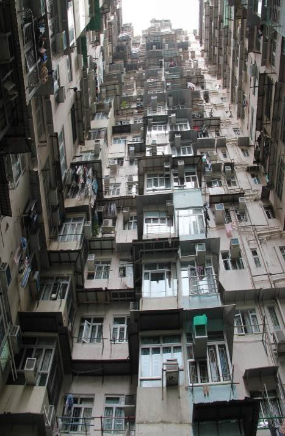
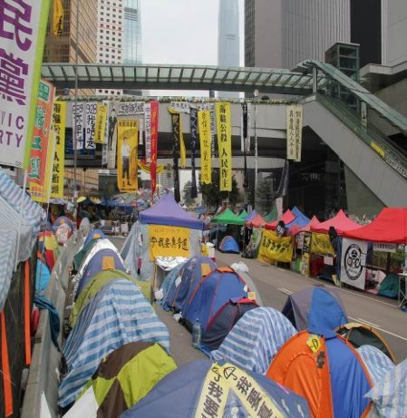
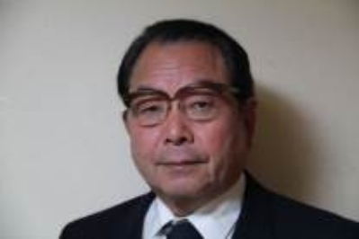

| ２０２５年の香港: 世界のチャイニーズ 第２巻 | |
| 小林幹夫 | |
| UNKNOWN (2017) | |
[ここに入力]
二〇二五年の香港
世界のチャイニーズ 第２巻
内容

２０２５年の香港。高層ビルが林立し、高速道路や新幹線が本土に直結し、普通話（北京語）が強制され、少年団が禁止用語リストを片手に書店などの商店を調べ歩き、大人にレッドカードを突きつける。
普通話テストに合格しないタクシー運転手は空港や「広深港高速鉄道」の始発で終点の西九龍駅に車を乗り入れられない。この駅に中国側の出入境管理施設が設置され、中国の警察権が行使されるようになった。
２０１４年９月に始まった雨傘運動（反政府抗議行動）の帰結として起きた香港独立運動に対し厳しい弾圧が加えられた。英国領事館前で焼身自殺も発生した。
こんなオムニバス映画が２０１５年に香港で発表され話題となった。テロの脅威を政治的締め付けの口実にする中国共産党を扱った第１話の政治的狂言。
失われてゆく記憶を記録しようと香港のすべてを「標本化」しようとする男女が登場する第２話。
普通話ができないために生活が困難になるタクシー運転手の第３話。練習を繰り返しても広東語風になる悲哀が胸に迫る。
国際都市香港が中国の一地方都市になり、香港独立運動が絶望的になっていく第４話。
紅少兵もどきの少年団が現れ、商店の表示や本屋で売られている単行本に禁忌の記述がないかどうか、秘密リストを片手にチェックする第５話。香港独立につながる「本地」（地元）という語が禁忌になる言葉狩り。ナンセンスな政治圧力を父と子の情愛が乗り越える。経営する乾物屋の前で交わされる二人の会話に観客は救われる。
が、劇中登場する香港の時事解説者が「香港は中国共産党にレイプされた。中共幹部はレイプを楽しめ、と言っている」と語る場面は、香港が返還後２０年を経過して、中国共産党の統治になじんでいく現実を当てこすっているかのようだ。
２０１５年１２月１７日、香港アートムービーの発信基地「百老匯電影中心」（ブロードウェイ・シネマ・センター）で自主制作オムニバス映画「十年」が単館公開された。口コミで動員を伸ばし、「並んでも見られない」と評判となり、６００万香港ドル（約９４００万円）の興行収入をあげる。製作費は５０万香港ドルで、異例の大ヒットとなり、２０１７年７月、東京新宿の小劇場でも上映され、映画製作を主導したエグゼクティブ・プロデューサーのアンドリュー・チョイと第５話を担当したン・ガーリョンが上映後、舞台挨拶をした。
立ち見も含め百人近い内外の観客と記者との応答の中で香港の将来に横たわる漠たる不安と不気味さを口にした。
２０１５年から１０年後の香港を生々しく描いた近未来ＳＦ映画がなぜ、香港でヒットしたのか。香港人の切実な心配、重苦しい気分をズバリ表現したからだ。日々目にする事象のなかで自由が現在進行形でなくなっていく香港の苦境が画面から伝わってくる。
香港は百年以上にわたって中国人の避難場所であった。彼らは香港への帰属意識はなく、血縁だけが頼りで、中国にも英国にも期待しなかった。
１９９７年７月１日、香港の街には祖国に復帰する期待感と社会主義国の一部となる不安が渦巻いていた。そして自分たちの将来を自ら決定できない無力感、脱力感も入り交じり、奇妙な高揚が漂っていた。
「一国二制度で５０年間やっていく」ことをうたった香港基本法の精神は２０年たたない間に破られた。中国は政治、経済、社会、教育、言論、出版、宗教などあらゆる場面に介入した。
返還直後にアジア経済危機が発生し、２００３年さらに経済が悪化した。１９９７年に６００万香港ドルで購入したマンションの価値は四分の一に急落した。
その後、大陸から旅行規制緩和など中国の支援策で経済は好転した。中国の金持ちが香港の一等地を買い上げ、不動産価格は急上昇した。２０１７年には１５平方㍍の部屋が約５５００万円で売りに出され、電気自動車テスラと同価格と話題になった。
１９９７年当時、香港経済は中国全体の約２割を占めていたが、２０年後の１７年には約３％に縮小した（ [１] ）。とはいうものの香港の不動産価格は暴騰し、中国本土から資金流入が続いている。中国当局が資本流出規制を打ち出すなか香港株は中国人投資家の資金の受け皿となった。中国本土も香港も金持ちにとって、悪くない住み心地の土地だ。とりわけ香港は小金持ちにとって、中国本土で味わえない自由な都会暮らしと投資機会を享受できる。
香港にはさまざまな自由があふれていた。生きる自由に死ぬ自由。ビルころがしで金儲けする自由、競馬でスッテンテンになる自由。カネで他人を自由にこき使う自由。借りた金を踏み倒す自由。麻薬、売春、詐欺にいたるまで犯罪的自由までも存在していた。およそ大英帝国の植民地、属領として、政治的自由を除いて放埓無秩序とも思える自由があふれていた。
その怪しげな自由を求めて、あるいは金を求めて、山師、難民、ビジネスマン、ジャーナリスト、水商売人さまざま雑多な野心家が押し寄せた。
邱永漢の直木賞受賞作「香港」の中に、こんな一節がある。若き日の邱永漢とおぼしき主人公、頼春木のなけなしの資金を巻き上げた老李こと李明徴は世間知らずの主人公に開き直ってこう強弁した。
「我々は自由を求めて、この地に来た。だが、我々に与えられた自由は、それは滅亡する自由、餓死する自由、およそ人間として失格せざるを得ないような種類の自由なんだ」。
「金だけだ。金だけがあてになる唯一のものだ」
こんな身も蓋もない片言の中に香港で生き残るために片時も忘れてはならない哲理が含まれていた。
１９４９年の初夏、南京決戦を前にして逃げ腰になった国民党が台湾へ移動し始めたころ、頼春木は台湾から厦門（アモイ）経由、香港へ脱出、九龍半島の飛行場裏手にある貧民窟にたどりついた。「英語でダイヤモンド・ヒルという燦然たる名前で呼ばれる土地がこんな所だろうか」と主人公がいぶかるのも無理はない。花崗岩の巨塊が露出した急勾配の山腹に重なりあってへばりついている無数の難民バラック、それと隣り合わせの高層住宅群、窓から突き出された満艦飾の洗濯竿、同鑼湾の防波堤にたまっているしい数のサンパン（舢舨）。灰色の雑居ビルに密集する官塘の町工場。
一方、香港島セントラルの金融街には最先端の金融端末、通信インフラとロンドン・シティ、ニューヨーク・ウォールストリートに引けを取らないインフラと人材がそろっていた。戦後、上海から巨大な金融資本が引っ越してきた。中国大陸への玄関口で、世界有数の港湾設備にアジアのハブ空港。中華世界の首都といわれるにふさわしい妖しい魅力を放ち輝いていた。香港はその豊かさと貧困を逆手にとって発展した。国際的規制を巧妙に切り抜け、大英帝国の植民地として優位性を最大限生かした。
香港島と中国大陸につながる九龍半島、香港島よりも大きいランタオ島など大小２６０余りの島。香港はこの地に７００万人余りの香港人が住む中国の特別行政区である。
人口の９５％は中国人だが、フィリピン、インドネシア、米国、英国、日本などの外国人も多く住む国際都市国家で、華人経済圏の中心として世界に君臨してきた。
１９９７年の返還時、香港は通信、交通、金融、不動産、教育、医療など各分野のインフラと財力で中国を圧倒していた。しかし中国は予想をはるかに上回る経済成長を遂げた。香港の長所を学び、外国の資本と技術を利用して安い人件費と不動産コストを活用した結果でもあった。中国が発展を続けるのに反比例するように、香港は輝きを失っていった。「土地回帰、人心未回帰」（土地は中国に返還されたが、香港の人心はいまだ返らず）といわれるようになった。雨傘運動(２０１４年)以後の香港には将来への不安とともに、中国政府に対する不満が堆積しつつある。
第一節 大英帝国と中華帝国の接触と衝突
話は一八世紀にさかのぼる。秦以来幾多の興亡を繰り返した「中華帝国」も１８世紀になると活力が衰えた。しかし満州族王朝の清の人口と貿易量は増大し、自己完結型の中華世界の盟主として君臨していた。一方、大英帝国は産業革命を成し遂げ、先進技術と能力に自信を持ち、五大陸を股にかけて通商を行う海洋国家で、各大陸に領土を持つ拡張主義新興国家であった。
１７９３年、英国使節マッカートニーは大艦隊を率いて中国を訪れた。北京で乾隆帝の誕生日に祝辞を述べるのが目的であった。乾隆帝は英国側の手紙を受け取り、竜顔をほころばせ、直ちに浙江、福建、山東などの長官に聖旨を下し英使節一行の北京上洛を保護するよう命じた。乾隆帝への英側の手紙は東インド会社経由で中国側に渡された。
マッカートニーは天津で小舟に乗り換え、通洲で上陸準備をした。このとき、乾隆帝は突然直隷総督、梁肯堂と長廬藍政、征瑞に英使節接待を命じる聖旨を再び下した。梁と征は直ちに豪華な食物を英国船に送った。
征らはマッカートニーを直隷総督官邸に迎え「これは我が大清国皇帝の聖旨である。聖旨を受けるには実際に（皇帝の）ご来臨を仰ぐと同様の礼をもってお受けしなければならない」と告げた。
マッカートニーはその礼が椅子に対して行うものだとは知らなかった。納得がいかないまま、椅子に向かって礼拝した。北京に着いてもマッカートニーは乾隆帝に拝することはなかった。征はマッカートニーに皇帝に拝謁するときは叩頭しなければならない、と告げた。これをマッカートニーは拒否した。彼は乾隆帝に拝謁するときは英国王に拝謁するときと同様に拝礼する、と述べた。英使節が属国の臣下の礼を拒否したのを知り、乾隆帝は面白くなかった。その結果、マッカートニーは皇帝に一度もお目通りが許されなかったばかりか、英国常駐使節の北京駐在構想も頓挫した。
英国の要求（開港、外交関係樹立など）は中国に拒まれ、英国は「アヘン戦争」と「アロー号事件」の二つの戦争の結果、香港島の割譲、九龍半島先端部（尖沙咀＝チムサーチョイ）の「永久租借」（割譲）、ニューテリトリー（新界）の九九年間租借の権利を得た。
新界は第二次北京条約（香港境界拡張専門条約）に基づき、英国は租借しており、一九九七年の期限満了後も租借継続を求めた。しかし中国政府はこれを拒んで主権回復の権利を行使し、割譲（香港島）、永久租借地（尖 沙咀）も併せて一括返還を実現した。
香港は広東省東莞県に属し、昔から莞香という香料の産地として有名だった。当時、莞香の多くは東莞から尖沙咀に運ばれ、さらに香港石排湾に集め大眼鶏船に載せ換え、沿岸を北上し、各省や日本で売りさばいた。港口で香料を集め運び出したところから香港の名が生まれた。
別の説では、薄扶林付近、今のアバディーン（香港仔）は当時、小さな漁村で泉の水が海に注ぎ込む小さな港であった。往来する船の船員はこの水が美味であることが分かり、飲料としてこの水を船に積み込んだ。そして、いつしかこの泉を香江、その港を香港と呼ぶようになった
香港島は阿片戦争後、１８４２年に調印された南京条約で英国に割譲された面積７５・６平方キロの小島である。また九龍半島先端のバンダリー・ストリート（界限街）以南の１１・２平方キロは１８６０年調印の北京条約で英国に永久租借（割譲）された。ストーンカッターズ島（昂船州）以北、深圳河以南の九龍半島北部の大部分の土地と付近の２３５の諸島を１８９８年調印の「中英展拓香港界址専条」（香港境界拡張専門条約）に基づき９９年の期限付きで英国は租借した。
１８９８年３月６日成立した「膠澳租界条約」、これは条文形式で、９９年間の租借期限を規定した。以後の条約はこれを踏襲した。
１８９７年１１月、ドイツは伝道師が曹州巨野（現在の山東省）で殺害された事件にいいがかりをつけて、艦隊を派遣、膠州湾を占領した。その翌年、腐敗した清朝政府に膠州湾租借条約調印を迫った。清朝総理に当たるはドイツ駐華公使ハイディンに条件を聞いた。ハイディンは６カ条の要求を提出した。①膠州湾の周囲１００里（約５０キロ）を１００年にわたって租借②膠州から膠南にいたる鉄道をドイツに建設させる③沿線 １００里以内にある鉱山をドイツに開発させるーなど。は獅子の大きな口が開いていると感じた。この過酷な条件に衙門は若干の譲歩を求めたが、ハイディンは傲慢に「若干の譲歩なら可能である。１００年から１年引いて、租借期間を９９年とする。これ以上はだめだ。受け入れないなら東三省を占領するぞ」と言い放った。はこれ以上、交渉する道がないのを知って、受け入れた。
１００年と９９年の間に実質的違いはない。しかし、この一件からも当時の清朝政府に当事者能力が欠如していることが伺える。
香港の割譲と租借も又、清朝政府の対外屈辱外交の結果であった。１８世紀の初め、英国は中国とアヘン貿易を開始した。
当時、軍事的、商業的観点から英国は広東省沿岸の島を一つ占領し、中国大陸侵攻の足がかりとしようとした。１８３０年、４７人の英国商人が連名で一島を占領するよう上申した。１８３９年６月３日、林則徐は虎門でアヘンを燃やし、麻薬商人の英国人５７人を追放した。
林は次のように語っている。「広東水師大鵬営が管轄する領海は４００余里に及び、尖沙咀一帯は東北に山を負い、西側に急水門、鶏踏門、東側に鯉魚門、仏堂門、西南に大嶼島（ランタオ島）がある。周囲を山に囲まれ、風を蔵し、気を集め、波静かで港口は広く深い、英夷船もかねてから根拠地にしようと狙っていた。広東省だけでなく浙江、福建の船も香港を経由しないわけにはいかない。万一、妨害されたら大変なことになる」と。
１８４０年６月、英国は第１次アヘン戦争を開始した。香港はすでに英軍の集結地になっていた。１８４１年、英軍は香港の「正式」占領を宣言した。１８４２年英軍は中国東南部の沿岸を侵犯、清朝政府は屈辱的講和を求め、同年８月２９日英国は中国近代史上初の不平等条約である「南京条約」に調印した。同条約は全１３条、その第３条が香港島割譲を定めている。しかし実際は条約調印前に香港島は英国の統制下に置かれていた。
１８５６年１０月初め、広東水師は珠江砲台付近に停泊していた「アロー号」という船舶を臨検、船内の賊を捕らえた。この船は本来、中国船であったが、英国駐広州領事は英国船であると主張した。英国はこの事件を口実に「第２次アヘン戦争」を引き起こした。１８５８年１０月、英仏連合軍は広州に侵入した。１８６０年３月英軍は「宿泊地を探す」名目で、九龍尖沙咀一帯に進駐した。また英仏連合軍は北京城に侵攻した。
１２月２４日、英国は清朝政府に迫り「北京条約」を結び、その第６条で「九龍半島バンダリー・ストリート以南」を英国に割譲することを定めた。
１８９４年の日清戦争後、西側列強は中国の勢力圏を確定し、英国は後れをとることに甘んぜず、次のような「中英展拓香界祉専条」（香港境界拡張専門条約）を１８９８年６月結んだ。
長年、香港境界の拡張は植民地の正しい防衛と保護のために必須であるとの認識があった。よって、今般、英中両国政府は、添付地図に概略示された範囲内で、英領境界が租借地として拡張されることの合意を得た。正確な境界線は正当な調査が両国政府の任命する官吏によっておこなわれたのちに画定される。この租借期限は９９年とする。また以下を議定する。九龍城に駐在する全ての中国官員は各司がその任務を遂行することができるが、香港防衛の武備を妨げることを得ず。その他の新たな租借地は英国の管轄下に置かれる。九龍からの陸路、中国官民は通行できる。またさらに、九龍城に元からあった埠頭は中国の軍艦、商船が自由に停泊でき、城内の官民も自由に行き来できる。将来、中国が建設する九龍の英国管轄地区に至る鉄道についてはその時に協議する。
香港の新界（ニューテリトリー）の名はこの「専門条約」に始まる。新たに拡張された地界という意味である。
この条約によると、「新界」地区は１９９７年６月末で９９年間の期限切れとなり、中国に返還されなければならなくなる。
香港には九龍南部の九龍城という特別な地区があった。１８９８年に調印された条約によると、そこでは中国官員が管轄権を行使するが、香港防衛の軍事的要求を満たす必要があった。香港政庁の役人は立ち入れないが、租借の翌年から清朝政府は駐在する官員を派遣しなくなった。清末から民国初年にかけて中英双方は九龍城の交渉権について何回も折衝を重ねたが、何の結論も得られなかった。この地区は「三不管地区」となり「売春、賭博、麻薬売買」が横行し、アヘン吸引者、娼妓、逃亡犯の天国と化した。病院の無免許営業もこの地区の一大特色となった。ここの医者は治療費が安く、多くの香港人が治療に訪れた。
１９６３年、香港政庁の役人が九龍城に立ち入り、一部の建築物を撤去し、２０００人の居住者を立ち退かせた。これに対し、中国側は「中国側主権の侵犯である」と抗議、英国政府に香港政庁の決定を取り消すよう求めた。
それから２０年以上の歳月が流れ、中英共同宣言が発表された後の１９８７年１月１４日、香港政庁は３年以内に九龍城を撤去して公園にすると発表、また同日から香港の法令が九龍城に及ぶと宣言した。
中英双方はこのとき、既に中英共同宣言に調印し、９７年に香港を中国が回収する問題を円満解決することで合意していた。中国外交部スポークスマンは「九龍城は香港のその他の地区と同様、歴史が残した問題である が、特殊な歴史的背景を有する。・・・われわれは香港政庁が妥当な措置をとり、九龍城を撤去し、そこに公園を建設する決定を十分に理解する」と述べた。
ここに至って九龍城問題は円満解決に至った。九龍城は取り壊され、跡地には草花が一面咲き乱れている。
それより前の１９７９年３月２９日、マクルホース香港総督は中国の最高実力者である鄧小平副首相（７５）と会見し、租借延長を打診した。
マクルホースは鄧小平に香港の現状を紹介し、鄧小平は注意深く耳を傾けた。時折、同席した廖承志（香港マカオ弁公室主任、全人代副委員長）の方を振り向いて、よく分からないところがあったのか、解説を求めた。
鄧小平も香港経済に関する問題を持ち出し、マクルホースに回答を求めた。見たところ鄧小平は香港について興味を感じたようだ。
マクルホースは不安感が薄れていった。鄧小平の口調や態度もゆったりとし、目には愉快そうな笑みをたたえ、マクルホースは智恵のある老人と話している心持ちになった。「鄧小平先生、一つお答え願いたい問題があるのですが」。マクルホースは心せくままに「新界の租借期限が１９９７年であることはわれわれみんなが知っています。もし英国政府が期限延長を要求した場合、中国政府は考えていただけますか」。鄧小平はマクルホースを驚いた表情で一瞥し、躊躇なく「われわれの香港に対する立場は一貫している。総督閣下ははっきりとご認識いただきたい」。マクルホースはこの言葉に唖然とした。そして軽い咳払いをした。「私は副首相閣下にご注意願いたいことがあります。香港の政治・経済体制が大陸と全く違い、香港はこうした基礎の上に立って繁栄しており、もし中国が香港を必ず回収するということであれば、香港は恐慌をきたすでしょう。」
鄧小平は力強い仕草で「香港にお帰りになって投資家に安心するようにお伝え下さい。私のこの話は公開されて結構です」と述べ、延長に同意するかどうか確答を避けた。
「鄧小平は新界租借問題について態度を明らかにしなかった。これで、どのように香港の投資家を安心させろというのであろうか」と独りごちたマクルホースは前年の鄧小平訪日の一コマが二重写しに脳裏によみがえった。
１９７８年１０月、鄧小平は党中央副主席兼国務院副総理の身分で、夫人の卓琳とともに、日本を正式訪問し、日中平和友好条約批准書交換式に出席した。廖承志も同行した。
１０月２５日午後４時、鄧小平は日比谷の日本記者クラブで記者会見した。これは中共高官が外国訪問したとき、欧米式に公開の場で記者会見に応じた初めての例だという。
時事、共同、ロイター、ＵＰＩ、ＡＰ、ＡＦＰなど有名通信社の記者など４００人以上の記者が会場に詰めかけた。記者会見が始まり、４台のテレビ中継車が並び３０台以上の望遠カメラが忙しく動き回り、シャッターやメモを取る音が絶えなかった。
鄧小平は悠揚迫らざる態度で記者の質問の一つ一つに答えていった。突然、一人の記者が立ち上がり「鄧小平副主席、中日双方は平和友好条約を締結しているが、中国はなぜ尖閣列島の日本への帰属を認めようとしないのか」と質問した。
会場に緊張がみなぎった。鄧小平がこの微妙な問題をいかに答えるか。みんな固唾をのんで見守った。
尖閣列島は日本名で、中国名は釣魚島といい、台湾の付属島嶼で、日清戦争後、日本に割譲された。１９７２年、田中首相が訪中したとき、周恩来総理に帰属権を明確にするように求め、周総理は「現在まだ論じないほうがよい。地図にも標識がないし、石油が出たら問題になる」と述べた。こうしてこの問題を棚上げした。
鄧小平は周囲を見回して軽い調子で「尖閣列島をわれわれは釣魚島と呼ぶ。双方の呼び方は異なり、異なった見方が存在する。中日国交正常化実現にあたって双方はこの問題に触れない約束をした。しかし、条約締結のとき、またもやこの問題を持ち出し、日中関係の発展を阻害しようとする人がいた。われわれは両国政府がこの問題を避けることが比較的賢いやり方であると思う。こうした問題を放っておいても差し支えない。１０年待ったとしても問題ない。われわれの代は智恵がないので、この問題で意見が一致しないが、次の世代はわれわれより賢いから、きっと双方が受け入れられる方法を探し出すだろう」と述べた。
１９７９年６月１３日、英国国会下院は香港問題（マクルホース総督訪中）について討議した。
労働党議員マーティン・フラナリはマクルホース総督が（同年３月）訪中した際、香港問題を討議したのか、１９９７年に香港は中国に返還されなければならないのか、と尋ねた。
英国外交・連邦事務担当国務相ピーター・ブリックは香港が時代錯誤の産物ではなく、成功例の一つである、と反論した。ブリックは英国政府が香港問題解決を急いでなく、香港問題を論じるのに現在が絶好の機会とはいえない、と述べた。
１１月２日中共主席兼首相華国鋒が英国を訪問し、華黄・外交部長（外相）が随行した。外電の報道によると、英国のサッチャー首相は華国鋒と会談した際、「新界」租借問題と香港の主権問題については討議せず、討議したのは香港の将来に関してであった。双方は香港の繁栄と安定の維持について同意し、この問題について接触を続けることで同意した。
しかし中国側は香港の将来に関して、考えていないわけではなかった。華国鋒に代わって記者会見に出席した黄華は鄧小平が香港総督に与えた誓約を繰り返し、香港問題解決にあたっては投資家の利益を考慮し、損害を与えないようにする、と述べた。
１９８０年５月１０日夕、家に灯のともる頃、大型旅客機が北京空港にひっそりと着陸し、一人の英国人がひっそり降りたった。英労働党党首キャラハンで、今回の訪中は中国政府の招待であった。随行者の数も少なく、夫人とハイヤット書記長ら数人がつき従った。
出迎えの者の数が少なく、英国駐中国大使、クラドックとその夫人、外務次官韓克華とその夫人、外務次官補宋之光だけであった。短い二つの列が歩み寄ったとき、キャラハンの胸中に寂寞たる思いがよぎった。もし１年前に来ていたら、元首級の盛大な歓迎を受けたであろう。当時、彼は労働党党首で、英国首相でもあった。
前年３月、英保守党指導者サッチャー夫人は労働党政権不信任案を国会に提出した。２８日の表決で、不信任案は３１１対３１０の僅差で通過し、労働党政権は崩壊した。この劇的採決の結果にキャラハンは苦い思いを持っていた。
表決のその日、労働党議員が重病で議会の投票所に救急車を使っても運ばなかった。もしこの事故がなければどちらが勝ったか分からない。老練な政治家であるキャラハンはこの挫折を受け入れた。
５月４日、保守党が総選挙で勝ち、サッチャーが英国女王から首相に任命された。キャラハンは直ちにバッキンガム宮殿へ車で駆けつけ、辞表を提出、次のような談話を記者団に発表した。「一人の女性が首相になった。これは歴史上の大事件である」「われわれは彼女を祝福すべきだ。彼女の成功を祈る。彼女は健康と力量と持久力を必要とするだろう」と語った。この言葉に嘘はなかった。当時の英国経済は重大な危機に陥っていた。キャラハンは後任が快刀乱麻を断つ如く、大英帝国を立て直すことを望んでいた。
キャラハンの目に狂いはなかった。サッチャー夫人は就任早々、政府の役割を制限し、私企業の発展を奨励、国民の所得増大を許す一方、これまでより責任を負わせ、国内の喝采を博した。
キャラハンはサッチャーに鄧小平との会談の予定を告げ、自ら彼女の「使い」になるつもりでいた。
８０年５月１２日、鄧小平副総理は人民大会堂でキャラハン一行と会見した。会見前に一行は鄧小平と記念写真を撮った。
着席後、鄧小平は国際情勢について語った。中国の対外政策には三つの主要な立場がある。一つは絶対に超大国にならない。二つ目は絶対に覇を他に唱えない。三つ目は引き続き第三世界に属する。
次に中国経済について英国の客人に語った。中国経済の発展のためには農業収穫量を増加させなければならない。鄧小平はキャラハンが理解できないかもしれないと思って「中国は耕地が少ないから」と言葉を補った。
鄧小平は中国政府の長期目標が今世紀末に一人当たり国民所得を年間１０００ドルに増やすことだと述べ「その時、中国人は現在よりも３倍収入が増えるだろう」と語った。キャラハンは鄧小平の目の色に興奮の光が射しているのを発見した。キャラハンは鄧小平との会談で語るべき大綱を作っていた。一つはソ連のアフガニスタン侵略に対する英国政府の立場を説明すること、二つめは英国機の北京直接乗り入れに関する協定に鄧小平の関心を提起することであった。彼はサッチャー夫人が香港問題で中国の指導者と会談を希望していることを鄧小平に知らせたかった。しかし彼はその備忘録の最後に香港問題をわざと置いた。２時間半にわたる会談が終わる頃、キャラハンは何気ない口調で語りかけた。
「鄧先生、中英双方は一つの香港問題を抱えています。私は個人的に適当な時機にお互い議論しなければならないと思っています」と述べた。
「私はあなたの意見に賛成です。しかし、まだその時機ではありません」と鄧小平は答えた。「われわれの片づけなければならない多くの重要問題があります。わたしは、やはり、言い古されたことですが、どのような処理方法をとっても、投資家は安心して大胆に香港に投資して大丈夫だ、と言いたい」。
会見後、鄧小平は自らホールの出口でキャラハンを見送った。
１９８０年３月１０日、マクルホース総督がロンドンにやってきて、英国の外交・連邦事務担当国務相キャリントンと緊急会見した。その直前、英国が公布した国籍法の新たな規定によると、香港住民は英国籍を得るために厳しい条件をクリアしなければならないため、人心が動揺した。マクルホースは英国政府に新界租借問題を速やかに処理し、投資家の不安を取り除くよう求めた。
４月１日午後、キャリントン外相は北京に赴き、黄華外相と会談した。４月３日、鄧小平はキャリントンと会談した。鄧小平は①中英貿易関係②経済協力の二つの問題について楽観的見通しを表明、香港問題に対する立場は一貫していることを重ねて表明した。同日午後、キャリントンは北京で記者会見し、記者団に、鄧小平が「投資家は安心するよう言っていた」と伝えた。鄧小平が中国政府内での重みを増したこの時期に語った言葉は２年前にマクルホースに強調したよりも、さらに重みがある、と強調した。
マクルホースの訪中後、英国側は途切れることなく官僚を訪中させ、中国当局者と接触させたが、中国指導部の真意を探り当てることはできなかった。キャラハン訪中後、英国側が得た感触は次のようなものだ。中国側は優先的に処理すべき事柄が山積みしている。今後、２、３年、香港問題は中共最高指導部の議事日程に上らないだろう。しかし、中国人の香港問題に対する立場は表面上、強硬ではなく、機が熟せば中国側は英国が満足できる協議を行うだろう。
サッチャーはキャラハンの感触を十分信用した。かくてサッチャーは香港問題を一時棚上げしたが、それでも１９８２年に入ると、そう言っていられなくなった。
１９８２年から１９７７年までちょうど１５年間である。１５年後、英国の香港統治は終了し、英国の法律の有効期限は終了する。従って１９８２年初めから香港はいかなる不動産売買、抵当設定などの調印もできなくなる。
香港は現状に安住するのか、天下大乱かーそのどちらかの選択を迫られる。
現状に安住するというのなら中国政府の実質的承諾を取り付け、中英双方が共通認識を持つ必要がある。
サッチャーは有力者を北京に派遣する決意を固めた。
サッチャーは鄧小平とも面識のある（７４年に訪中）元保守党党首のヒース元首相に出馬願うことを決めた。サッチャーは９年間愛用のベンツをヒース邸に遣わすよう命じ、さらにボディーガードのデイビスと外交顧問のアイフルも同行するよう付け加えた。郊外の別荘に住むヒースは突然のサッチャーの招請に驚いた。
ヒースは１９１６年に生まれ、父は指物師で後に一流の建設技師となった。ヒースは優秀な指物師が持つ独立心と地に足のついた精神、そして板を刻むときの非情に近い心を受け継いだ。
後年、熱烈な恋愛を経験したヒースは、その後、恋愛感情をたち、終生独身を通した。孤独を愛し、社交の場で、他の多くの政治家がやるような芝居じみた行動や臨機応変の行動をみせることはなかった。しかし、それは多くの人に信頼感を抱かせた。
晩年、ヒースはさらに内向的になり、音楽に耽溺した。音楽に造詣の深いヒースは１９７４年に保守党党首として訪中した際、中央楽団でタクトを揮った。このときの訪中で、毛沢東主席、周恩来首相、鄧小平副首相と会談し、香港問題も話し合った。サッチャーはこの点に注目し、彼に出馬を要請、北京へ赴いてもらおうと決めた。
女性担当官の案内で、ヒースは首相官邸の客間に入った。ヒースは首相としての務めについては熟知していたが、できるだけ差し控えようとしていた。誤解をさけ、相手に自分が尊大であると映ることを避けようとした。
官邸の客間の窓は公園に面し、静かな雰囲気であった。サッチャーは客間入り口に出迎えた。
この日、サッチャーは化粧した気配もなく素顔に首飾りもなく、淡い色のジャンパースカートをはいていた。浮ついたところを嫌うヒースに好印象を与えようとしていた。サッチャーは慎ましやかに椅子を勧め、その向かい側の椅子に座った。
「ヒースさん、私はあなたが必要だ。英国が必要としているのです」。サッチャーはこう切り出した。ヒースはサッチャーの率直さに好感を持った。
「ヒースさん、第二次大戦中、日本が香港に侵攻し、香港総督が降伏したのを記憶されていると思いますが、当時、英国人は余り驚きもせず、せいぜい、植民地の一つが失われたと感じたにすぎなかった。もし、誰かが、香港を今、英国政府の手から奪ったら、英国人は許しますか」
「もし中国人が奪うというなら、それは別の話です。香港の主権は英国にはありません」
「しかし香港の今日の繁栄は英国人の功績ですよ」サッチャーはやや憤然として語った。「中国人の頭は世界で最も複雑です。１９４９年以来、中国はずっと香港回収の機会を持っていたのに、未だに回収しない。同時に彼らは香港に対する主権をずっと忘れたことがない。彼らの気持ちは結局どうなのか。私はあなたのお力で、中国人の心を閉ざす鎖を解き放っていただけないかと考えているのですが」
「もし中国人がしゃべろうとしないのなら、他人が彼らにしゃべらせるのは不可能です。ある英国記者が私にこう言ったことがあります。彼は３年中国にいたが、発表物以外、一般の取材で成功したことは一度もなかった」
「ヒースさん、あなたは一般の記者とは違います」
サッチャーは相手をその気になるよう仕向けようと「あなたは中国で最も権威のある指導者の鄧小平とつきあいがあり、あなたになら秘密を少し明らかにする可能性があります」
サッチャーの口調は突然、重くなり「あなたもご存じでしょうが、フォークランド諸島に関するアルゼンチン政府とわれわれの交渉は決裂しました。もし、情勢がさらに悪化し、武力衝突が不可避になっても、われわれは決して香港を第２のフォークランド諸島にするわけにはいかないのです。中国はアルゼンチンとは違います。砲艦政策は中国に通用しない。われわれは中国指導者の真意を知りうる人物を本当に必要としているのです。少なくとも彼らにできる早く、われわれと交渉の席に着くよう勧めることができる人物が必要なのです。あなたは、この任に当たるのに最適の方だと私は思うのです」
彼はうなずきながら「検討してからご返事します」と述べた。
サッチャーの私設秘書であるデイビスはヒースを書斎に案内した。デイビスは卓上に置いてある「ＲＥ」という王室御璽の記された紅色の箱を開けた。中には円筒に入った書類が整然と並んでいた。
「これは首相が自ら情報部門に指示して提供を求めた物で、慣例に従い読了後、サインをして下さい」
ヒースは老眼鏡を取り出し、かけずにこの箱を凝視した。それは考古学の文物を前にどの時代に出土したか考えるかのような面もちであった。彼はかつて憂き身をやつした過去の政治にたいし自分がはるかに遠い存在になっていることを実感した。彼はため息をつき、一番上の一冊を手に取った。上書きの説明によると、国民党政府関連文献であった。ヒースはこの頃の歴史に余り詳しくなかった。
１９２９年、中英両国は威海衛について交渉し、英国は「新界」と威海衛を交換し、新界の永久占有を企んだ。
当時の国民党政府は力が弱く、確固たる地位もなく、不平等条約の廃棄もできなければ香港回収もやれなかった。
真珠湾攻撃で、米国が日本へ宣戦布告し、中英米三国は戦略的盟友となった。
国民党政府が徹底抗戦し、さらにまた日本と講和しないようにするために、英米両国は在華治外法権を廃止するとともに、新条約を締結し中国の裁判所が中国の法律に基づき各国の公民を審理する権力を中国に返還した。
米国との交渉は順調に進んだが、中英交渉は香港問題のため暗礁に乗り上げた。
１９４２年１１月１２日、国民党政府の安子文外交部長と英国の駐華大使は重慶で会談、租界を返還、双方は平等な新条約を締結することなどをめぐって交渉した。
中国側は一つの条約草案を提出し、新界租借の廃棄を要求した。英国外務大臣イーデンはこの問題が治外法権条約の範囲を超えると考え、抗戦勝利後「租借条約」の討議を提案した。双方の立場は完全に異なった。
もし香港問題が解決できなければ、本来うまくいっていた一切のことが覆り、１９４３年１月１日に調印するという双方が定めた計画も危うくなってしまう。
宋子文は腹をたてたが良策もなかった。ちょうどその時、駐英大使顧維均が定例報告のために帰国したので、宋は直ちに登庁させ妥当な解決策を考える手助けを頼んだ。
顧維均は外交の奇才といわれ、米コロンビア大学を卒業、文学士、政治修士、国際公法と外交問題の博士号を有していた。
２７歳の時、袁世凱の要請で総統英文秘書兼外交参事として出仕。２年目に中国代表としてパリ講和会議に出席した。当時、日本は山東省併呑を企図した。顧は次のような比喩を用いて各国首脳を説得した。
「孔子は西方のイエス・キリストのような人物だ。山東はさしずめエルサレムである。中国は山東を手放せない。西側がエルサレムを手放せないのと同じだ」。この言葉でみな納得し、顧維均の名声は大いに高まった。顧は英国人とは長年つきあってきた。１９１２年から１６年にかけて、袁世凱の下で英国とチベット問題を交渉した。３年余り交渉したが中国側はいかなる譲歩も獲得できなかった。その後、英国の艦隊が中国の内海外海を徘徊し中国軍としばしば衝突、顧は処理に奔走し、英国の蛮行に厳しく抗議したが、最後までこれを止めることはできなかった。
今回、顧はロンドンで中英交渉の話を聞き、先回りして調べてみた。そこで半数近い英国人が香港を中国に返還すべきである、と主張しているのを発見した。彼らは香港が中国領であり、住民は全て中国人なのだから中国に返還されるのは当然である、と認識していた。さらに香港が英国から遠く、守る術もないので、この重荷をおろすにしかず、と考えていた。
顧はこの問題についてチャーチルと会談した。中国から対日抗戦力を借りたいチャーチルはルーズベルト大統領の前で、植民地特権を廃止すべきであると憤慨してみせたが、香港問題に話が及ぶと、途端に態度は曖昧になった。香港は早晩、中国に返還されるが、問題はその時機で、状況によって決められる。今は戦時中であり、暫くこの問題は棚上げしたほうがいいと語った。
顧はチャーチルのこの言葉をそのまま宋子文に伝えた。
宋は「私も同意見だが、蒋委員長はそう見ていない。蒋委員長はこういうのだ。英国人はどうもはっきりしない。中国との友好を口にして治外法権を返還すると言いながら、なぜ香港を中国に返さないのかー。（蒋委員長がこう思っているのだから）やはりあなたが直接、説明したほうがいい」と苦しげに語った。
その晩、７時頃、顧は宋に従い蒋介石の住居を訪れた。
駐英大使として英国の戦局をよく知っており、蒋介石もそれを知りたがっていたので、顧の独り舞台で話は進んだ。３０分ほどたった頃、蒋はすっくと立ち上がり「英国人は香港を手放さないが、一体何を考えておるのか」と唐突に言った。
宋は顧に目配せした。顧はと次のように説いた。
英国はまだ香港を中国に返そうと考えていない。彼らは今回、中国政府と交渉し治外法権を返還することに同意したが、米国の面子をたてるのが中心だ。当然のことながらそこには中国を丸め込む意が込められている。従って成果を収める可能性は極めて小さい。現在比較的賢明なやり方は、彼らが返すと言っている物はさっさと返してもらうことだ。しかし、その返還の過程でわれわれは彼らに極めて不満であること、さらにまた、多くの本来われわれに帰属する物を返すべきだと伝えなければならない。つまり最初の贈り物は喜んで受け取り、２回目の贈り物を待っていることをかれらに知らせるのです。
蒋介石は顧の話を聞き、道理が幾分通っていると思った。この種の臨機応変の対応に余り満足していなかったが、かといって、もっと良い方法があるわけでもなく、顧の提案を渋々呑んだ。
１９４３年１月１１日、宋は英国駐華大使に「九龍租借地問題について、英国政府は現時点での交渉は時機適さずとしているが、本代表はこれを遺憾とするものである」
「本代表は閣下に中国政府がこの問題を、日を改めて提起する権利を留保する」と通知した。
１９４５年、ヤルタでの米英ソ三国首脳会議の前に香港問題は政治的議題から外された。
ルーズベルトはチャーチルを訪ね香港を中国に返還し自由港とするよう説得した。このようにすると中国の大連に対しても同様の措置をとることが可能であり、スターリンがこの北方の不凍港に入る要求を満足させることができる。
しかしチャーチルはこの意見に反対し、その激しい反応はルーズベルトを驚かせた。
「香港を持っていくなら私の死体をいで持っていかねばならない」
チャーチルはソ連の支持を得るため急遽スターリンと会談した。会談でチャーチルはスターリンがポーランドを支配下に置くのを認める引き換えに、英国が香港を再び占領することへの（スターリン）の支持を取り付けた。
１９４５年８月、日本は無条件降伏を宣言した。だれが香港で日本降伏を受けるか。
これは主権の帰属に関わる問題であり、中英両国とも譲歩しなかった。日本の天皇の訓令によると、香港駐留日本軍は中国第２方面軍に投降しなければならなかった。しかしチャーチルは再びトルーマン米大統領を説得して、彼が英国にとって有利な調停をするよう働きかけた。
８月３０日、セシル・ハーコート英軍太平洋艦隊司令官が率いる部隊が香港に上陸、日本軍が投降、ユニオンジャックが再び香港の空に翻った。
国民政府も香港占領を考え、小部隊に新界へ進攻、日本軍の武器接収に立ち会うよう命じた。しかし英国の拒絶と反対に遭い、さらに米国からの圧力も加わり撤収した。８月２４日蒋介石は渋々「中国は軍隊を香港に派遣して日本軍の降伏を受け入れることはないだろう・・・これは同盟国の誤解を避けるためである」と宣言した。間もなく、中国で内線が勃発し、国民党は共産党の対応に追われ、香港というこの小さな場所を顧みる余裕はなくなったのであった。
年齢には勝てない。ヒースは数十ページの文献を読み終え、やや疲れた。しかし気力を奮い起こし、一番上の表紙が黄ばんだ資料を引き出して読み始めたヒースは、１９４０年代末の中国に引き込まれていった。
１９４９年１０月１日、中華人民共和国が成立した。中国は歴代政府が外国と結んだ全ての条約を審査し、内容によって承認、廃棄、改正あるいは更新の交渉を行うと成立式典で宣言した。英国はこれを憂慮と恐れをもって受け止めた。清朝政府が英国と結んだ香港問題に関する不平等条約を新中国は承認する必要はない、と言外に示していた。
１９４９年１０月、中国人民解放軍は広東を解放した。この部隊は蒋介石側の米国式装備部隊と渡り合い、大陸を制圧した。大軍の兵士は闘志旺盛で、海南島を解放し、台湾を攻め落とす勢いであった。この小さな香港など問題ではなかった。
その１年前、蒋介石政権の大勢が崩壊したのを目の当たりにした香港の英当局は香港の存亡を憂慮するようになっていた。
１９４８年１０月、新たな「公安条例」を出し「暴動の防止と鎮圧」に当たった。１１月、陸海空の軍警合同暴動防止演習を実施した。１２月に「香港防衛軍条例」を施行した。英軍のほかに６０００人の新軍を徴募できると規定した。
１９４９年３月、英国政府はマラヤの密林でマラヤ共産党掃討作戦に従事していたグルカ兵を香港防衛に動員した。グルカ兵は戦い慣れした英陸軍の精鋭であるが，彼らに頼って人民解放軍の前進を阻止できるだろうか。それは英国防省の高官ですら分からなかった。
５月２６日、英国首相アトリーは全閣僚が出席した緊急閣議を開いた。議題は「中共が香港に対して取りうる態度とそれに英国がなすべき対応」であった。国防相は兵員を増派して準備するよう主張したのだ。香港を東方のベルリンとし、共産主義勢力が東方で拡大するのを阻止すべきである、と主張した。６月、国防相は香港を視察し、駐香港英部隊を３万人に増やした。
一方、１９４９年の初めから１０カ月で５０万人の中国人が越境して香港に来た。その大部分は国民党政権の大官小官、商工業者であり、国民政府の民間機もその大部分が香港に飛来した。解放軍が広州攻略後、香港は緊張に包まれた。しかし解放軍は香港に行動を起こさなかった。
香港総督アレキサンダー・グランサムは最も早く状況を理解した英国人の一人であった。彼は新中国が成立する前、香港の左派系紙「文匯報」に「中英関係と香港の前途」と題した社説が発表されたことに注目していた。同社説には意味深長な一節があった。
「香港は最も有利な情勢にあり、新中国建設開始後、貿易は空前の伸びをみせている。香港が空前の好景気に眩惑し、新中国に対し積極的に友好的措置をとらないならば、将来、その不明を恥じることになろう」
当時多くの人は「文匯報」は共産党を代弁していると思い、その論文を信じなかったが、グランサムは敏感に感じ取り、これは北京が香港政庁に発したはっきりとした合図であり、もしこの機会をつかめば、香港の現在の地位を非常に長期間維持できる、と認識した。グランサムの勘の正しさは極めて短期間に証明された。中国政府は秘密のルートを通じて周恩来の３条件を伝えた。香港の英政府はこの３条件を守りさえすれば、香港の現状を長期にわたり維持することが可能だという。
その基本的内容は次の通り。
一、香港を中華人民共和国に反対する軍事基地にしない。
一、中華人民共和国の威信を破壊する活動を許さない。
一、中華人民共和国の香港にいる要員を保護する。
この条件を政庁側は受諾し、北京側との約束は非公開とすることにした。
１９５１年春、当時の新華社香港支社長、黄作梅は北京を訪れ、香港政策について指示を仰ぎ、周恩来は次のように指示した。間もなく周恩来談話の主な部分が香港に伝わり、一部の新聞に掲載された。
「われわれの香港政策は東西両陣営の闘争の全戦略部署の一部分である。香港を回収しないのは、さらにまた資本主義を維持し、英国の香港占領を放置するのは、領土主権についてのな原則から考え出され、決定されたものではない。われわれは全国を開放する前に既に香港を解放しないと決めていた。長期的地球規模の戦略から述べると、軟弱でもなければ妥協でもない。さらに積極的主体的闘争なのだ」
「１９４９年建国後、英国は極めて早くわれわれを承認した。それは一種の半承認であり、われわれも受け入れた。イーデン政府は英国の利益を保護するために、大英帝国が極東に持つ植民地を維持しようとしている。香港は大英帝国の極東政治経済圏の象徴である。この圏内で英国と米国の間には矛盾と闘争が存在する。対華政策上、米英間には大きな分裂と矛盾が存在する。米国は英国の極東政治経済勢力圏を蚕食し、英国は大英帝国の残滓を必死になって守ろうとしている。それで香港を保持し続け、中国との外交関係を維持し、英国の極東戦略の拠点としているのだ」
「したがって、われわれが香港を英国人の手に残しておくほうが、回収するよりもよく、さらにまた米国人の手に渡すよりも良いといるのではないか」
「香港を英国に残しておくことは逆に主導的であると言えよう。われわれは英国人の弁髪のひもをつかんでいるのだ。われわれは英国をつかみ、米国の対華政策と極東戦略にぴったりひっつかないようさせる。こうして、英米間の極東問題における対華政策の矛盾を拡大し利用することができる」
「こうした状況の下で香港はわれわれにとって大いなる利点を持ち、使いどころがある。団結できる全ての人間を団結させ、われわれの反米闘争と国内経済建設を支持する最も広範な愛国統一戦線工作を展開することが可能となる」
「こうした状況の下で、香港はわれわれが東南アジア、アジア、アフリカと西側世界に通じる窓口である。香港はわれわれの展望台、気象台、橋頭堡となる。香港はわれわれが米国を頭とする西側陣営の封鎖や禁輸を打破する前線基地となるだろう。最近２年間の情勢はわれわれが全国解放に際し香港を残していたことが正しいことを証明している」
「われわれはこの重大な戦略的意義を認識しなければならないし、また中央のこの重大な政策を信じなければならない。あなたたちは香港を保護しなければならない。香港を破壊してはならない。英国の植民地主義経済と資本主義制度を内包する香港の現状と地位を維持しなければならない。また香港が英国の極東勢力圏内に占める特殊な地位と利益を承認しなければならない」
「当然のことだが、われわれは英国が米国の対中孤立政策を過剰に支持し、われわれの安全と国家利益の受認限度を越えることに反対しなければならない。また，英国はわれわれに香港を利用させない可能性がある。われわれは朝鮮、ベトナムの民族独立解放運動に対する米国の弾圧を英国が支持することに反対する」
中共側は香港問題に対する態度を周恩来の口を通じて表明しているものの、背後で決定しているのは毛沢東だった。
毛沢東の香港に対する見方は１９５９年になって明らかになった。当時、中ソ関係は危機的状況に陥っていたが、決裂に至ってなかった。毛沢東の指示は「現在の香港はわれわれにとって有利であり、香港を当分回収しない方が良い。回収を促す行動をしてはならない」というものだった。
１９７４年５月２４日、ヒースは北京で毛沢東と周恩来と会見した。二人とも、ヒースに香港が英国の管理の下でアジアの貿易金融センターとなっていること、その地位は安泰であり、少なくとも現在そうなっている、とはっきり表明した。ヒースは「少なくとも現在そうなっている」というこの言葉に深い意味が含まれている、と感じ、歓迎宴で鄧小平にぶつけてみた。鄧は彼の質問に直接答えず、ヒースに香港問題は将来適当な時期に解決する、と告げた。
１９５０年、朝鮮戦争が勃発した。連合国は米国の下に国連決議を通じ、加盟国に新中国と交易しないように命じた。日本、カナダ、フランス、ビルマなどは前後して対中禁輸を実施した。香港政庁も９６種類の軍事物資を禁輸品目とした。
後にワシントンは香港を輸出禁止地に含めておくのは不適当であることに気づき、香港の輸入を許可した。しかし対中禁輸措置は維持した。英国統治下の香港は中国が資本主義世界に開けた必要不可欠な窓口となった。
１９４８年の香港と中国との貿易総額は７億１０００万香港㌦で、輸出は２億８０００万香港ドル、輸入は４億３０００万香港㌦。１９５０年、香港の対中国貿易は入超から出超に転じ、出超額は５億香港㌦に達した。中国が必要とする各種の貴重な物資が香港を通して途切れることなく中国に入った。
新中国成立後、西側各主要資本主義国はいずれも形勢観望、はなはだしきは敵視の態度を執ったが、英国政府の対応は積極的だった。
当時、英国は１０億ドルを越える膨大な対中投資をしていた。もし、米国と同様に中国を敵視していたら、必然的に在華資産は凍結ないし没収され、極めて大きな損失となる。
１９４９年９月２８日、英外務大臣は国連で新中国に「秘かな秋波」を送った。英政府は 中国人が自分たちの政府を選ぶことを妨害するつもりはないが、新中国が他の国家に対し約束した義務を実行することを希望した。
１０月１０日、英外務省は広州の外交官に国民党とともに台湾へ行かないよう訓令した。
１１月、英国はマレシーシアで極東外交官会議を開いた。この会議の中心議題は、英国が新生「中華人民共和国」を承認すべきかどうかであった。
参加者の大多数は承認しなければならない、そうであれば早いほうがよい、そういった認識であった。
１１月９日、英米仏三国外相はパリで西ドイツ再軍備問題を討議した。英外相はこの機会を利用して、英国が中国承認の準備をしている考えを米国の国務長官に通告した。米側は激怒し、英政府に対し米政府と足並みを揃えるよう求めた。英側は、米側に対し新中国承認を延期しても良いと回答した。
しかし英側は「延期はあくまで延期であり、延期期間は長くない」と付言した。１９５０年１月６日、英外務省は周恩来に対し、中華人民共和国承認を伝えるとともに、互恵平等、領土主権尊重を基礎に外交関係樹立を求め、同時に英国は国民党集団に対する外交的承認を取り消すことを宣言した。
３月２日、中英両国は国交樹立交渉を開始した。当時、交渉に加わった一人の外務省当局者の回顧によると、中国は英国政府が西側の先頭をきって新生人民政権を承認したことに対し、極めて大きな謝意をもち、こうした感情の反映として香港問題を持ち出すのを遠慮し、沈黙によって英国政府に恩返しをした。
この回顧録をヒースはかなり前に読んだが、その真実性に疑問を持ち、外務省の特定の人物の自慢話だと思った。もし香港の植民地統治の維持が一種の交換であるとするなら、英国は何を与えるだろう。中英国交交渉は始まったが、なんら成果は現れなかった。英外務省は新中国承認を発表した当日、次のような声明を発表した。英国は承認問題で米国と見解が異なったが、米国との「共産主義に反対する長期目標」を変えることはなく、英国は共産主義の潮流が中国の国境を越えることを阻止する決意である。
この声明の中で一つの例が挙げられている。英国は３０年代に悪名高いスペインのフランコ政権を承認したが、これは中共政権承認と似ている。それは「政権の承認は、その政府の政策を承認したこととは異なる」からだという。
５月２４日、英国下院は中英国交樹立問題で、外交政策を討議した。英外相ベビンはやや憤激したように「英国が中共政権を承認するのは不満な決定である」と述べた。英国が一貫して中共を敵視する立場を堅持することによって、双方が国交樹立するのはおかしい、従って代理関係を長期にわたり維持するにすぎない、というわけだ。
１９６０年前後、中国経済は厳しい困難に直面し、自然災害で餓死者が出た。しかし周恩来は香港という地は重要であり、香港マカオ地区に対する水、食物、原料の供給を堅持し、この政治任務を達成せよと指示した。
ヒースは一国の首相の立場から、周の指示を深く理解した。１９６０年夏、ソ連は中国への全ての援助を停止し、全ての技術者を引き揚げた。周は非社会主義国との貿易を発展させ、援助を求めた。こうした情勢が中国にとって香港をしてかつてないほどの重要性を与えた。
香港の人々は、周が香港への供給を保証したことに大いに感謝した。香港は必要とする食物と水の供給を内地に頼っていた。もし内地が供給を絶てば、香港はたちまち「死の町」となるだろう。１９２５年に香港の労働者が大ストを打ったとき、野菜売りまで営業を中止、ゴミ掃除も滞り香港は臭気に満ちた。こうした歴史は人々の記憶に新しく香港と広東省が１９６０年４月１５日、協定に調印し、深圳のダムが年間５０億ガロンの用水を千ガロン当たり１角（銭）で供給すると定めたとき、人々は大いに喜んだ。
ヒースは中国が香港回収を急がないのは胸中秘かに成算あってのことだと考えた。彼らが香港の生命線を押さえている。この生命線を揺さぶれば、一兵も要さず、香港は中国の軍門に降る。
「香港と中国文化大革命」
こういう見出しの書類を見つけた。文革が中国を席巻したときヒースは五十代だった。彼は古風な人物であったが、新しい物を拒否することはなかった。はるか遠い中国からもたらされた新情勢の報に彼は興奮がおさまらなかった。
英国にいる中国人留学生は瞬く間に感染し、学業を放り出して朝から晩まで革命を唱えた。夜どうし毛語録を唱えるので、隣近所は寝られず警察を呼ぶ騒ぎとなった。
留学生が革命の対象にしたのは中国の在英代理弁事処で、プロレタリア的でないものは「四旧」であるので破壊すべきだ、と彼らは認識していた。ヒースは若者たちの行動に反感を初めから持たなかった。騒ぎを好むのは人間の天性であり、若者の特権でもある、と思っていた。西側にもエープリル・フール、仮面舞踏会、万聖節があり、騒ぐではないか。しかし中国の国内情勢が悪化するのにつれ、誰もこの「文化大革命」を芝居とはみなくなった。ヒースも同様であった。香港は中国の「管理」に帰したわけではないので、当然「文革」をやらないでいい。しかし地理的原因などのために、香港は中国大陸と絶縁するわけにはいかなかった。文化大革命の熱波はついに香港にも押し寄せてきた。
１９６７年５月６日、香港新浦崗のプラスチック工場で単純な労使紛争が発生した。こうした紛争は以前にも発生し、ごく短い間に解決していたが、今回は様子が違った。香港の大衆は中国の政治闘争に影響され、一暴れしてやろうと考えた。一方、香港政庁は文革の火の手が及ぶのを恐れ、ちょっとした騒ぎにも大げさに対応した。この労使紛争が、大衝突の導火線となった。
まず工場の労働者が過激な行動に出て違法な糾察隊を組織し、２００人の警察部隊が出動して労働者を鎮圧、多数の労働者が負傷、２１人の糾察隊員が逮捕され、その後、警察に赴き抗議した労組委員長と労働者代表がまた逮捕された。
香港の労働者と青年、学生たちは左翼新聞に激励され、大規模なデモを敢行「反圧迫闘争委員会」を成立させ、この闘争を指導した。
香港政庁は弱みを見せず、警官隊を繰り出して弾圧し、５月１４日までに４００人以上の参加者を逮捕した。
５月１５日、中国外交部は声明を発表し、大衆を弾圧した英政府を非難した。外務次官は北京駐在英代理大使を呼んで抗議し「香港英当局のファシスト的暴力を直ちに停止する」よう要求した。 香港政庁は中国政府の抗議に取り合わなかった。
香港総督トレンチは香港政庁の政策は「偏ってなく、法律に基づいている」と取り合あわず、中国政府の抗議については英政府が回答する、との声明を発表した。英政府は「香港政庁がその責任を遂行することを全面的に支持する」との声明を発表した。中国政府の横やり干渉、香港政庁の強硬な態度、この二つが事態を拡大させた。５月１６日、香港九龍両地域同胞による反港英迫害闘争委員会が成立した。国内の文革方式に倣い大規模な反英スローガンが掲げられ、シュプレヒコールが耳を聾するばかりに鳴り響いた。武器を求め警察を襲撃し始めた人もいた。手製の手榴弾や爆弾の爆発音が絶えず響いた。
この頃、北京では中央指導幹部が参加した十万人の大衆集会が開かれ一つの決議を採択した。内容は次の通りである。
１．英国は香港を軍事基地にするな
２．香港にいる国民党特務が親共人士を迫害した罪は許さない
３．毛沢東思想を広める思想工作に干渉してはならない
英国側はこれに回答せず、中国政府は直ちに在上海英領事館の４８時間以内の閉鎖を要求した。こうしたやり方は火に油を注ぐことに他ならず、５月２２日、香港で再び衝突が発生し、２００人以上が負傷し、多くの者が逮捕された。香港政庁はあわただしく「緊急令」を布告したが、事態の悪化はくいとめられなかった。
５月２６日、英政府は軍事演習への参加を名目に空母「ブルワーク」を香港に派遣、４５０人の完全武装、軽武装の兵士が乗ってきた。援兵が到着すると、政庁側の態度はさらに硬化し、警察、機動隊、兵士が命令を受けて続々と出動し、衝突は絶え間なく発生した。
事態はこのように深刻化し、６月３日の人民日報は社説を発表、その中の１節は香港政庁の心胆を寒からしめるものであった。「香港の愛国者は自らを組織し、偉大なる祖国が一旦号令を発したら、英帝国主義の統治を粉砕する準備をしなければならない」
これは露骨に香港解放を呼びかけたものである。香港の左翼指導者は鼓舞され、「造反」を積極的に組織した。６月３日の当日、５００人が逮捕され、６月２３日、１回目の衝突で５３人が逮捕され、４人が死亡した。６月２４日、左翼組織が大連合ストを実施した。数日後、中華全国総工会は１０００万香港ドルを集め、香港同胞を支援した。
中国側の圧力に対して、香港政庁側は退かず、逆に鎮圧活動を強化し、７月３１日までに逮捕され、獄につながれた者は５２００人余に達した。
この頃、これまで平穏だった国境がにわかに、緊張した。７月８日、沙頭角で開かれた大衆大会がデモに発展した。香港駐留英軍と警察は、香港側境界に戻る住民に向かってまず催涙弾を発射し、さらに中国国境に向けて発砲した。その結果、双方が衝突し、銃撃戦となった。中国住民一人が死亡、８人が負傷した。英国側は軍警５人が死亡、１２人が負傷した、と発表した。香港政庁はグルカ歩兵第１１旅団所属部隊を沙頭角に派遣し、警察と交代させた。面白いことに、事件後双方とも、中国部隊は銃撃戦に加わっていないと発表した。
８月７日、英軍は警察から新界巡視の仕事を引き継いだ。１０日、香港政庁は羅湖を除く、国境線全体を閉鎖した。１０月１０日香港駐留英軍と警察は中国農民の耕地に鉄条網を敷設した。中国農民１００人余りが国境を越えて交渉したが、英国側ははねつけ双方睨み合う形となり、政庁側は文錦渡を閉鎖した。
香港政庁は今回の事件を後押しした左派系紙とその記者を憎み、まず７月に新華社香港支社、大公報、文匯報、新晩報の多くの記者を逮捕し、続いて８月に左派系３紙を閉鎖、１９人の記者と３４人の工作員を逮捕、さらに中共のコントロール下にある大公報、鏡報と両社の印刷会社を違法な煽動をした罪で訴追した。当局側メディアの報道は誇大に伝わり、内地の同胞を憤激させた。中国人は世界で最悪なのは米国人と英国人であることを発見した。
８月２１日、北京は再び大衆大会を開き、「香港を取り戻せ」と叫ぶ者もいた。頭に血が上った紅衛兵は在華代理大使館に放火して炎上させた。この事件は英国人と香港人を震撼させた。
こうした混乱をただ一人コントロールできた毛主席がついに発言した。９月初め、彼は暴力闘争の禁止を命じ、香港の左翼勢力は内地からの指示によって兵をあわただしく引き、香港の反英活動は明らかに下火となった。中国は英代理大使館焼き討ち事件に対して公式に謝罪し、関係者を厳しく処分した。
１０月末、中国外交部は英代理大使を呼び、深圳国境の鉄条網の撤去と文錦渡の再開、国境の正常通行回復を求めた。１９６７年末、香港の事態は基本的に正常化した。中国と香港の関係が急激に悪化したその数カ月間、中国は水、食物、原料などの供給を止めたことはなかった。これは中共指導者が香港を回収するつもりは本当に無いことを示していた。
香港で衝突が発生した期間、中国の在英代理大使は英外相と緊急会見し北京の要求を受入れ、香港で逮捕された人達を釈放するよう求めた。当時、この代理大使は英外相に、１９６１年周総理が北京を訪れた英国の有名人モンゴメリー元帥に「もし双方がお互いの利益を尊重するなら、香港の利益は維持できる」と言った事に注意を促した。
この代理大使の言葉は明らかに中共指導部の意見を代表していた。彼らは安定した香港を必要としていた。さらにもう一つ挙げれば、すべての動乱期間中、香港政庁は一貫して強硬な態度を執ってきたが、中国政府は怒ってみせたが、十分抑制したものであった。英国が援軍を派遣した後、中共の軍隊が動いた形跡は見られなかった。
１９８２年４月４日午後、春の北京は干ばつに似た現象が現れ、モンゴルから吹く黄砂が空中に舞い空が黄色に染まる。銀色の旅客機が首都空港に着陸し、ヒースが降りたった。ヒースは年齢のわりに若く見え、中年で通用した。
ヒースはサッチャーの特使として訪中した。今回の旅行日程は秘密を保持する必要があった。中国側もこれを理解して中国人民外交学会会長の郝徳青ら少数の者を空港に派遣し人目を引かない配慮をした。前月の３月は胡耀邦主席が提唱した文明礼節月間であった。いたるところで笑顔に出会った。
文明礼節の春風は中南海にも吹いた。趙紫陽は満面に笑みをたたえて接見した。中国は貧困を脱し、経済的飛躍の趨勢にあった。中でも深圳、珠海、汕頭、アモイという四つの経済特別区は喜ぶべき状況であった。
ヒースはこの目覚ましい成果は世界が認めていると述べ、勤勉で勇敢な中国人民に祝意を表明した。ヒースと趙は香港問題について突っ込んだ話し合いはしなかった。４月６日、中南海でヒースは鄧小平と会談した。ヒースに随行したのは英大使だけだった。中国側同席者の数も少なく、郝徳青の他には外交副部長張燦明だけ。こうした中で私的友好訪問のムードが会談の場に醸し出された。
「ようこそ、老朋友」、満面に笑みをたたえ鄧小平が手を差し出した。「またお会いできてうれしい」とヒースは感動したように答えた。
席に着いた双方は、まずフォークランド（マルビナス）紛争について語り始めた。
同諸島は大西洋南部、総面積１万１７００平方キロメートル。住民２０００人。アルゼンチンから約１０００キロ離れているだけだが、英国から遥かに遠い。１８３３年の占領以来、英国は少数の軍隊を派遣していた。アルゼンチンはこの奪われた諸島の主権返還を要求してきた。近年、同諸島の海底で石油資源が発見され、双方とも強硬な姿勢に転じた。
８２年２月、交渉は決裂。４月１日夜、アルゼンチン警察部隊は英大使館と貿易機構を包囲し、アルゼンチン航空はロンドン行き飛行便を全便取り消した。
４月２日未明、アルゼンチン陸、海、空三軍が出動し、短時間にフォークランド諸島を占領した。総督レイクス・ハントは無条件伏した。アルゼンチンはハント総督と戦闘意欲を喪失した海軍駐留兵士７８人をウルグアイの首都モンテビデオに送り、島に掲げられてあった英国国旗を在アルゼンチン英大使館に届けた。
英国は強烈な反応を示した。４月２日、キャリントン外相はアルゼンチンとの断交を宣言した。４月５日、英国は空母「インビンシブル」など３６隻の特別混成艦隊を大西洋の１万３０００キロ彼方へ派遣、全艦船１５隻のアルゼンチン艦隊と対決させた。これは１９５８年のスエズ運河危機以来、最大規模の艦隊派遣であり、その規模は英海軍の戦闘能力の三分の二を占めるものだ。英艦隊は英国からフォークランド到着まで２週間以上を要した。
ヒースは中国の誤解と反感を恐れ、慎重に解説した。英国は艦隊を派遣したが、外交ルートを通じて争いを解決しようとしており、現在、米国のヘイグ国務長官が調停に乗り出し、再び、双方が交渉のテーブルに着く可能性がある。そして言外に、フォークランドと香港は本質的に異なり、英国はフォークランドに対し主権を有し全力で防衛しなければならないのに対し、香港については主権を有さず誠意をもって統治している、ということを臭わせた。
鄧小平は「 主権と統治権は分けられない。香港の主権は中国に属し、遅かれ早かれ、回収しなければならない。その時が到来したとき、特別混成艦隊を派遣しないでもらいたい」と述べた。
当時、英国内では次のような見方が流布していた。中国は香港返還を機に英国に管理権を与える。つまり１９９７年以降も現在の行政管理モデルは変えないということだ。
ヒースが鄧小平と会見したその日、ロンドンで発行されている「デイリー・テレグラフ」は「現在、英国政府が考えている構想は、たとえば中国に租借期限を５０年間延長させ、交換条件として新界だけでなく香港全域に対する中国の主権を承認することだ」とコラムで報じた。
この話はサッチャーの考えから来ている。彼女はヒースが訪中したとき、この話の可能性を探るよう希望した。鄧小平の話を聞き終えたヒースは暫く提案を差し控えておいたほうがよいと思った。
「主席閣下、われわれは香港の将来について話し合ったほうが良いと思います。１９９７年が近づくにつれ、香港の５００万の住民は将来に対し焦燥感にかられ、投資家も恐慌をきたしております。香港の繁栄と安定のためにも、われわれ両国政府は公式声明を発表し、直ちに新たな協議に入るための交渉を進める必要があります」
「将来、香港の政治的地位がどうなろうとも、香港経済の現状は保持されるので投資家は安心してよい」
これと似たような話を鄧小平はしたことがあり、中国の他の指導者もしたが、香港住民の不安を鎮静化する効果は、余りなかった。その前年の４月鄧小平とキャリントンが会見した後、香港最大の商業銀行、香港上海銀行が大規模な資金移動を開始し、香港を離れ英国で業務を開始する準備を始めた。
香港上海銀行は商業銀行でありながら、香港政庁から中央銀行の特権を与えられていた。紙幣を発行し、政庁に代わって金融機構を監督した。同行の理事長は香港銀行協会の主席で金融界の「総督」と香港で呼ばれていた。
暫くして香港上海銀行は英国のミッドランド銀行と合併準備に入った。合併とは名のみで、事実上の撤退である。このとき北京訪問中のキッシンジャー前国務長官はサッチャーのメッセージを携えてきた。香港上海銀行の合併は英政府の意向を受けたものではなく、同行は業務を欧州に拡大したいので本店を英国に移すことにした、商業上の決定である、という内容であった。
中国側は香港上海銀行の移転に不賛成であるとの返書をキッシンジャーに託した。この後、香港上海銀行は合併案を一旦、破棄したが、ひそかにミッドランド銀行の株を買い上げ、結局、１９８９年、本店をロンドンに移した。
香港上海銀行はこの一件を取っても、中国の対香港政策を信用していないことが分かる。香港上海銀行は１９４９年に中国大陸から撤退するとき、大きな損害を被った。香港上海銀行は香港住民、とりわけ金持ちに対する影響力が極めて大きい。愛国資本家ですら香港で稼いで外国銀行に預けているのが現実である。ヒースは香港の現状を紹介し、婉曲に憂慮の念を伝えた。
「「逃げた資本はまた戻ってくると思う。大部分の人は先見性がある」と鄧小平は楽観的な見方を示した。
「鄧小平先生、私はあなたのお話を心から信じるが、香港人はもう少し具体的な、たとえば中英間の協議・・・」
鄧小平はヒースの様にとつとつとしゃべるのではなく、単刀直入に「もし可能なら、われわれは英国政府と正式に接触し、交渉を通じて香港問題を解決したい」と述べた。
ヒースは心の中で大喜びした。聞きたかったのはこの言葉だったからだ。しかし糠喜びは禁物なので、わざと聞き返した。
「あなたは今、交渉したほうが良いと思うか」
「ヒースさん、１９７４年にお会いしたとき私が言った事を覚えていますか」「私はあのとき、香港問題は適当な時機に解決する、と言った。その時が来たのです。われわれは経済特区の経験がある。われわれが少しずつ国際関係を好転させつつある。わたしはあなたの見方に完全に同意します。ヒースさん、今は香港問題の処理を考えるときです」
英国とアルゼンチンの衝突はエスカレートし、ヒースは訪中を切り上げ、急いで帰国した。
１９８２年４月２５日、英海軍陸戦隊は戦艦の支援の下に、ヘリコプターでフォークランドの１２６７キロ東方のサウスジョージア島を攻撃、占領した。
４月２８日、英国防省は次のことを発表した。４月３０日グリニッジ標準時１１時、フォークランド島周囲２００マイルの空中、海上を全面封鎖し、国防省の許可なく侵入する者はすべて敵対行為とみなす、と発表した。そして５月１０日、英空軍は同島に大規模爆撃を実施した。
英国特別混成艦隊出発後、サッチャーは１日として心休まる日はなかった。これまでと異なるのは反対の声が保守党内部から挙がったことだ。怒った保守党議員は労働、社民党の立場に立って、サッチャーを夜野自大の女悪魔、独断専行で英国を地獄に落とすつもりだと面罵し、ベトナム戦争が米国に災難をもたらした事を想起させた。
さらにサッチャーを動揺させたのは６２歳の外相キャリントンがフォークランド攻撃の決定を取り消すよう勧めたことである。サッチャーはこの勧告を受け付けなかった。外相は辞意を伝え「フォークランドが侵略される恥辱を招いた政府の責任を取る」と辞表の中で述べた。サッチャーは痛切な思いでこの辞表を受け入れた。
ガルチエリ・アルゼンチン大統領は幸せな日々を送り、国民は街頭で占領後、勝利を祝った。大統領は民族の英雄となったが、英軍の大規模な反攻が始まり、彼自身恐れを感じ始めた。彼はメディアを通じてサッチャー夫人にメッセージを送り続けた。アルゼンチンは適当な期限を設けフォークランド（マルビナス）諸島の主権を平和的に獲得する事を望んでいる。ただし、その期限は１４９年間という長いものではない。サッチャーはガルチエリの軟化したメッセージに勝ち運が自分に傾いたと感じた。
５月１３日、英国会でのフォークランド紛争に関する第１回討議の中で、サッチャーは「交渉によって軍事的選択を停止する事はできない」と述べ、強硬な姿勢を改めて示した。 サッチャーの強硬姿勢は米国に中立的立場を放棄させ、アルゼンチンに圧力をかけさせるようになった。この変化はサッチャーの信念を強固にし、立場をさらに強硬にした。ソ連は抗議したが、サッチャーは拒否した。
デクエヤル国連事務総長は両国に交渉を復活するよう求めた。サッチャーは、従うふりをしたが、そのつもりがなかった。
５月８日、マクルホースが帰国し、１３日に第２６代総督としてユードが着任し２６日に就任した。この人事は計画に沿って進められたが、サッチャーの意を受けて行われたとの印象を与えた。つまりフォークランド攻撃を進める一方、北京との友好関係を強化し、ユードをこの任に当たらせる。
ユードは４回にわたり在中国英大使館で仕事をし、１９７４年から７８年にかけて中国駐在大使を務めた。中国語を話せる中国通である。他人が何と思おうと、サッチャーはこう考えていた。英国が全面的勝利を得た暁には中国との交渉で英国はさらに多くの利点を得る。
バッキンガム宮殿から戻ったサッチャーは外交官を招いたパーティーを開いた。そこで香港から戻ったマクルホースと会い、香港問題に関する意見を聞くつもりでサッチャーはいた。
５月１９日、英国の戦時内閣は緊急閣議を開いた。２２人の閣僚は会議場の大ホールに集まった。
「女王陛下は内閣が下すいかなる決定も熱烈に同意すると表明された事を、喜びをもって皆さんにお伝えする」とサッチャーは声高らかに告げた。この前の日、サッチャーはバッキンガム宮殿で女王に拝謁し、攻撃決定の報告をしていた。
新任の外相ピムにサッチャーは「国連主催の交渉をアルゼンチンが利用して引き延ばすことは容認できない。アルゼンチン側に対し、遅くとも２０日の晩に、我々が満足できる結果を得られない場合、われわれの取る軍事行動をいかなる方法をもってしても止められないことをはっきり告げてほしい」と言った。
ピムは小声で「フォークランド全面攻撃時間は既に決まっているのか知りたい」と尋ねた。サッチャーは「それは国防相に聞く問題だが、彼も特別混成艦隊司令官に電話で尋ねると思う」と素っ気なく答えた。
５月２１日、英軍は突如攻撃を開始し、フォークランド諸島東部に強行上陸した。２４日までに英軍は３隻の軍艦を失い、数隻の軍艦が破損した。地上部隊の死者７３人、負傷者８６人に達した。中でも対ミサイル装備を持った駆逐艦「シェフィールド」が、仏製対艦ミサイル「エグゾセ」によって南太平洋の氷水に撃沈されたニュースは英国の朝野を震撼、動揺させた。しかしサッチャーはいささかの動揺もみせず、特別混成艦隊に、数日以内にフォークランドの首都ポートスタンリー奪回を命じた。世界各国の和平勧告派に対しては奪回まで英国はアルゼンチンと交渉できないことを改めて伝えた。
５月２６日、英駆逐艦と大型兵員輸送艦が相次いで被弾沈没した。死者数は１００人を越えた。ここまでで英特別混成艦隊の損失は全艦隊の１０分の１に達し、英海軍は第２次大戦後最大の損失を被った。サッチャーはロンドンの保守党婦人会で「重大な損失を受けてもわれわれの決意、われわれの信念はいささかも弱まっていない」と演説した。
サッチャーはギャンブルの数学的法則を理解していた。１ポンド賭けて負ければ２ポンド賭け、２ポンド負ければ４ポンド賭け、４ポンド負ければ８ポンドと、どんどん賭け金を上げていき、１発当てればごっそり頂く、賭けは徹底的にやり抜く覚悟が必要だ。サッチャーはそれを心得ていた。
戦局は英軍に有利に傾いた。６月２日英軍は島都ポートスタンリーまで１０キロ足らずに迫った。１２日早朝、英軍は総攻撃をかけ１４日アルゼンチン守備隊は降伏した。サッチャーは１５日「アルゼンチン守備隊がメネンデス軍司令官の下で、英軍に降伏した」と記者団に発表した。
サッチャーは発表の直後、部下に極東行きの手配を命じた。中国で香港問題を協議するためであった。
１９８２年、ユードは総督に就任早々、香港問題に関する中英交渉に遭遇した。サッチャーが９月下旬、訪中する事は千載一遇のチャンスだが、ユードは実際嬉しくもあり、心配でもあった。香港政庁保安局長だったルイス・デイビス（中国名、戴宏志）は香港生活が長く情報工作を長く担当し、香港の地理、風俗、人情、各界人脈を熟知していた。デイビスはユードの着任前に退職したが、ユードの調査研究に協力した。デイビスの作ったリストに従いユードは香港各界の有力者と会い、香港の現状と将来について話を聞いた。
デイビスの作ったリストをユードは称賛した。鐘士元、鄧蓮如などの行政、立法両局の民間出身議員だけでなく金融界の胡漢輝、交通運輸関係の包玉剛、親大陸系の著名人、李嘉誠、査済民、霍英東ら。さらに親台湾系の中国聯合銀行理事長、余兆麒、教育界から黄麗松、言論界から武侠小説家で明報社長の査良鏞、大公報社長の費彝民ら数多い。
香港人口の半数は大陸から来て１９４９年前後と文化大革命中の２回に集中して流入した。文革中は６０万人が香港にやってきたと、デイビスは説明した。
ユードは「香港人は香港の将来をどう思っているのか」と尋ねた。「もしもあなたが特別な身分でなかったら沙田の競馬を見に行ったら面白いのだが」とデイビスは語った。
ユードはその意味をすぐには分からなかったが、やがてその提案を受け入れた。競馬場には泣き、わめく香港人の人生ドラマがあった。
香港競馬会は香港全体で慈善事業に最も寄付金の多い団体で、１０億香港㌦を慈善福祉事業に毎シーズン寄付した。香港競馬会は賭博団体で毎日億単位の賭金が競馬に投じられている。競馬は香港人にとって、納税と同じ行為であると言う人もいた。
また、ユードに出された香港人の評価に対する報告書は、読売新聞香港特派員だった松永成太郎記者に香港の一主婦が香港人は将来に確信が持てないから預金しないで腹にためるのだ、と言ったという証言を紹介している。香港人記者何敬之は「香港は将来がない社会だ。香港では正常な人が狂っているという事になる」と証言した。
シンガポールのリー・クアンユーは「香港住民は野蛮人である。生活は急速に都市化し、それと同時に社会道徳の観念と正常な人と人との関係を失った」と批判した。 香港大学学長の黄麗松は「香港はカネだけが唯一社会的地位を測る道具だ。ただしこのカネが真っ当なビジネスから来たものか、あるいは密輸、汚職などから得られたものかは問わない。大多数の香港人は道徳的観念を持たない」と述べている。
１９８１年のクリスマスの夜、香港は新年気分で街頭はあかあかと照らされ、昼間のようだった。浮かれた若者が車を傷つけ、乱暴狼藉に及び、暴動に発展した。午前５時、騒乱参加者は２０００人に達し、破壊された車は１１台、警官１１人、市民５０人が負傷した（警察調べ）。逮捕された１６人は１５歳から２０歳の学生、労働者であった。警察はこの事件が政治的背景、組織、計画などのない「偶発的事件」と認定した。暴動の翌日、ユードは香港上海銀行の最上階の部屋から、埠頭を望遠鏡で眺めた。大小さまざまな船が出入りしていた。毎年、８０００隻以上の遠洋貨物船が出入りし、荷揚げ荷下ろしの総量は２３００万トンに達した。
デイビスが渡したカードには公表された統計数字が書き込まれていた。
香港はロンドン、ニューヨークに次ぐ、金融センター。
金の取引量はロンドン、チューリヒに次ぐ。
世界最大の高級衣料品輸出入地区で玩具の輸出地でもある。
航空輸送貨物量は世界第２位。
香港は米国、日本に次ぐ世界第３位のダイヤモンド取引地。
香港の生活水準はアジア第２位。
デイビスは「私はもう１枚カードを持っている。上に中国大陸の統計数字、下には香港の数字が記載されている。比較すると面白い。それは中国が１日として香港なしにやっていけないという一つの結論を導く。これは貧しい家長がカネを稼ぐ孝行息子なしにやっていけないのと同じだ」と語り、さらに「香港は中国にとって外資と科学技術の導入の窓口、また一旦戦争が発生すれば後方補給線としての生命線であり、これは朝鮮戦争中に証明された。私がもし中国指導者なら、香港を急いで回収するようなことはせずに、ロンドンとの協議で３０年から５０年の延長を約束する」と述べた。
ユードは「デイビス、君の意見はすばらしい。全部、ロンドンに報告し、首相に見せる。私と行政長官を香港の将来をめぐる会談と関連工作について手助けしてほしい」と言った。
７月２８日サッチャーは官邸でユードに会い、これから始める中英交渉に関し策を求めた。「ユードさん、あなたは最近鄧小平が香港に関して発表した談話に注目しましたか」と尋ねた。
鄧小平は６月１５日、北京で香港・大公報社長、費彝民、工商業界代表、王寛誠ら１２人と会い、１９９７年前後に香港の主権を回復すると言明「妥当な方法を探して香港の安定と繁栄を維持する」と意味深長に述べた。北京の消息筋の間では、鄧小平は香港問題解決のための黄金の鍵を探し出した、との説が流れた。サッチャーの訪中直前にこうした風説が流れたのは成算あっての事か、あるいは故意に流された虚言であったのか。
ユードはサッチャーが自分の意見を直言する部下を好むことを知っているので、彼女が再質問をする前に、こう語った。
「鄧小平は香港の民心を勝ち取ることが最善の方法と思っているが、私は香港の民心は北京政府の側にないと思っている。第２次大戦中、日本軍は共産軍占領地を攻略するに当たり、中国市民を前面に立て、共産軍は陣地を放棄した、という。この方法は今でも使えます。もしも香港人をわれわれの側に立てれば、両国の争いは彼ら内部の争いに変わり、われわれは漁夫の利を得られる」。
サッチャーはしばし呻吟し「「その方法はきっと効果あり、将来使えるだろうが、私がやはり陣頭にたつべきだろう」と述べた。
ユードは首相が北京行き夢中になるのを見て「香港問題に最も敏感で、反応も強烈なのは商売人です。彼らは投資しており保証を求めなければならない。香港の将来が不明確であれば、商人は安心して投資できない。これはわれわれの政府の利益にとって有害です」と語った。
「そうです。だれがカネを海に投じるものですか。盲目的投資は金を海に投じるに等しい」、「北京に行き、英国には英国のやり方があり、香港の安定を維持する能力があることをみせてやりましょう。そうすれば、商人は安心して香港で営業できるでしょう」とサッチャーは言った。
「香港問題を提起したら中国指導部はどういう態度をとると思うか」
「かれらは領土主権の原則を堅持すると思います」
「中国はあの三つの条約を承認していない。毛沢東在世中も、中国はこの基本問題で譲らなかった。鄧小平も超えられなかった」
「では、あなたは鄧小平と交渉するのにどのような準備をするのか」とユードは尋ねた。
「第１に、香港の主権問題だ。私はあの３条約は今も有効だと、主張する。もし香港の主権を保てないとなれば、譲歩もやむを得ないが、中国が主権を回復し、管理権を英国に残す」
「最も良いのは、中国政府に新界の租借期限を延長させることです」とユードは付け加えた。
「結構。これで決まりだ。この線に沿って鄧小平と交渉しよう」とサッチャーは言った。
ユードは香港に戻った。それから半月もたたない８月９日、ユードと夫人は北上し、広州、深圳を訪れ、広東省党委員会書記任仲夷、広東省副省長曽友石、深圳市委員会書記梁湘らと面談した。
香港総督就任以来、多忙を極めたユードが中国遊覧旅行をしたため、多くのチャイナ・ウオッチャーはこれが秘密外交の一つであり、サッチャー訪中と関係があると推測した。こうした憶測に中国側は終始沈黙を守った。
８月２４日、英国政府はサッチャーが政府首脳の資格で中国を正式訪問すると発表した。
首相官邸のスタッフは「香港問題は今回の訪中議事日程の中で突出した位置を占めている。その他の議題は貿易、外交問題などが含まれる」と述べ、さらにユード総督が同行するかどうか未定だと伝えた。
ユードは９月上旬、ロンドンに向かい、香港行政局、立法局の民間出身議員５人が同行した。
９月７日、サッチャーは首相官邸での午餐会に、ユード一行を招いた。
彼女は議員に中国指導者との会談では香港５００万住民の意向と権利を十分伝えると述べた。またユードの名前が訪中団名簿に入っていることも伝えた。サッチャーの話は香港に伝わり、直ちに強烈な反響を巻き起こした。
９月１４日、サッチャーは日本人記者と会見し、北京で何を話すのかと問われたが「時間がくれば分かる」と述べた。
１９８２年９月１６日、サッチャーは極東訪問の旅を開始した。夫のデニスの他に香港総督、貿易次官補、首席スポークスマン、外務次官補、私設秘書らの官員と記者（１６人）が同行した。
夫のデニスは、家庭では連続テレビド・ドラマを好み、戸外の運動ではポロを好んだ。歴代首相の夫人が夫に同行する回数と比較して彼は同行回数が多かった。鉄腕首相といわれる妻にも弱いところがあるのを彼は知っていた。
彼女も閣議であれとこれは夫の意見を求めたとか、これは夫の見方だとかいつも言っていた。
極東旅行の日程は第１訪問地が日本で、第２が中国、第３が香港で、その帰途、インドでガンジー首相と朝食をともにすることになっていた。
サッチャー訪日の目的は巨大な貿易赤字の解消で、日本に英国製品をもっと買わせることだった。ニューデリー滞在はわずか７時間。こんどの訪問は翌年インドで開催予定の英連邦国家元首・政府首脳会議をもう一人の「アイアン・レディ」のガンジーと相談するとともに、９月２０日にガンジーが予定しているモスクワ訪問について、さらにまた自らの訪中の結果を話し合うのが目的であった。
サッチャーは日本に６日間滞在した。その間政官財各界と接触し貿易問題を交渉した。サッチャーは、大英帝国の日没は決してないと思っていた。またフォークランド紛争の勝利を随員も大きな誇りにしていた。鈴木善幸首相も翌月、訪中することになっていた。サッチャーは双方の関心がある対華関係問題を持ち出し討議した。そして日英両国首相は次の２点で見解が一致した。
一、 中国は近代化路線を堅持する
一、 中国は国際平和を求めており、西側世界は中国との接触を強めるべきだ。
９月２２日午後１時２０分、英空軍専用機が首都空港に着陸した。タラップを降り立ったサッチャーを出迎えたのは華黄外相、章文晋外務次官とそれぞれの夫人、駐英大使、外務省西欧局長らであった。その出迎え陣にはタンカー王包玉剛も混じっていた。サッチャーは車で釣魚台の迎賓館に向かった。案内された迎賓館１２号楼は二階建てで窓は小さいが、部屋は大きかった。窓を開ければヨーロッパ種の桜の木が１００本以上見られ、オランダやフランスの花々がふくいくたる香りを漂わせていた。北京秋天、さわやかな気候であった。
午後４時、趙紫陽首相は初めて訪中したサッチャーのために盛大な歓迎宴を開いた。中英両国国歌吹奏、続いて趙紫陽首相に伴われサッチャーは人民解放軍陸海空三軍を閲兵した。サッチャーが訪中したこの日は孔子生誕２４６３年の記念日であった。
式典終了後サッチャー一行は人民大会堂に入り、中国側代表と対面した。英国側はユード、駐華大使、中国側は黄華外相、章文晋外務次官、駐英大使の柯華が中英両国首相の傍らに座った。
第１回中英首脳会談が始まった。サッチャーは香港問題をいきなり持ち出さず、ソ連の天然ガス・パイプラインの状況、欧州情勢、軍縮問題、東西問題に対する英国の見方を伝えた。サッチャーは米国の肩を持ち、ソ連がＳＳ２０中距離弾道ミサイルの大規模な削減がなければ、米国は欧州に巡航ミサイル配備が必要となる、と力説した。
趙紫陽首相も客の話に合わせ、中国の対外政策を紹介し「中国は一貫して独立自主の外交政策を守ってきた。われわれは覇権主義に反対し、世界の平和を守り平和共存五原則の基礎の上に全ての国家と関係を発展する。われわれはいかなる大国にも追従せず、米国に対しソ連カードを切らないし、ソ連に対しても米国カードは切らない。また他国が中国カードを切ることも許さない」と述べた。
サッチャーは、趙紫陽首相の原則的姿勢に余り満足しなかった。中国の指導者がソ連を厳しく批判して欲しかった。しかし、儀礼を重んじて中国の対外政策を称賛し「ソ連のアフガニスタン進攻問題を忘れてはならない。ソ連のアフガン侵略は大きな誤りだ」と言うにとどめた。趙紫陽首相は「われわれは一貫して覇権主義に反対し、一貫して侵略に反対する」と述べた。
カンボジア問題に関し、中英両国の立場はほぼ一致し、サッチャーは「われわれは民主カンボジア連合政権を支持し、国連での同政府の代表権を支持し、ヘンサムリン政権を承認しない」と述べた。趙紫陽首相は中国政府を代表して「カンボジア問題の本質はベトナムが一つの弱小な隣国に対して行った侵略だということだ。カンボジア情勢に新たな発展が最近見られる。反越三派愛国勢力が団結し、連合政府をつくった。カンボジア人民が国家の独立と主権を守り、ベトナム侵略者に反対する正義の闘争は新段 階に入 った。新民主カンボジア連合政府は国際的に積極的な支持を得なければならない」と述べた。
英国がフォークランド諸島を攻略したのは侵略か内政問題か、はたまた弱い者いじめなのか。中国側がこの問題に触れないのは、現実と実力を認めてのことであろうか、サッチャーの心中は穏やかではなかった。会談は２時間で終わった。
会談終了後、サッチャーのプレスアタッシェは記者団に「きょうの会談は実に熱情あふれ友好的で、大きな意見の一致をみた。会談は終始、ダイナミックで真摯なもので、これは良いスタートである」と述べた。サッチャーの随員も首相の気分が大変良いことはよく分かった。その晩、人民大会堂宴会ホールで趙紫陽首相はサッチャーのために盛大な宴会を開いた。宴会で出されたのは茅台酒。かつてニクソンは一口含んで「これは航空燃料だ」と叫んだほど強い酒である。
サッチャーの宴会での演説は熱情あふれるもので、服務員も静聴した。サッチャーは「私は重要なときに中国へ来た。政府が政策を決定する中国共産党第１２回党大会は閉幕したばかりである。英国の工業競争力は大いに増しており、中国の現代化計画の実現を手助けしたい」と述べた。また「われわれは平和を守るために強大でなければならず、別な有効な方法があると思うのは幻想である」と述べ、「われわれはソ連がアフガニスタン侵略の目的を達するのを決して許してはならない。中国のことわざで言えば、虎に翼を与える事なかれである」と付け加えた。
彼女は軽い調子で「きょう私と趙紫陽首相と会談したが、まだ香港問題は討議していない。私は明日、趙首相と主要な問題を研究したい」と挨拶した。サッチャーの探るような眼差しに趙紫陽首相は声色も変えず、挨拶を読み上げた。
趙紫陽首相もまた、矛先をソ連覇権主義に向けたが、同時に英国の盟友である米国の覇権主義とイスラエルによる「パレスチナ人民に対する虐殺」も非難した。彼はサッチャーの今回の訪問が両国関係の重大事であり、両国関係発展の一つのメルクマールであると続けた。彼は双方共同の努力を通じ、今回の訪問の成果が上がり、両国間の経済、文化とその他の方面の協力がさらに強化されると信じる、と述べた。「当然双方の関係の中にも歴史が残した問題が存在し、交渉を通じて解決されることが待たれている」「われわれ双方が長期戦略の観点から中英関係の発展を図り、平和共存五原則に則り問題を処理すれば問題の解決は難しくないと信じる」と述べた。
一夜明けて、サッチャーが第２回会談へ向けて出発したそのころ、趙紫陽はサッチャーよりも早く第２回会談の会場に突然現れた。会談場には世界各国から腕こきの記者が派遣され、特ダネ競争を展開していた。香港記者もこの日、早めに人民大会堂に詰め、まるでチーターのような目つきで趙紫陽を探し、見つけると大騒ぎで取り囲んであれこれ聞こうとした。女性記者が広東なまりの北京語で「趙首相、中国政府は香港の将来をどのように思っていますか」と尋ねた。
趙紫陽首相は「この点について、はっきりお伝えする。中国は当然、香港の主権を回復する。私が言う香港とは新界を指すのではなく、香港地区全体を指す。香港の主権について私はサッチャー夫人と交渉するつもりはない」、「では英首相となにを話すつもりか」、「われわれは香港問題に対し、英国の協力を求める。双方の誠実な努力があって初めて香港は１９９７年まで、平穏な過渡期を過ごせる」。
こんなやりとりの後、香港人男性記者が「趙紫陽首相、中国政府は香港の主権回復を宣言し、５００万の香港人が自らの前途に不安を感じませんか」と尋ねた。
趙紫陽は「彼らがどんな不安を感じるというのかね。香港同胞は自分たちの前途に不安を感じる必要はない。主権問題は香港の繁栄に影響しない」と述べた。
また別の記者が「もし中国が香港の主権を回収したら、どのような行政管理をするのか」と尋ねると、趙紫陽は「もし中国が香港の主権を回復したら、香港の安定と安定を補償する措置を採用する。その中には中国政府が香港に対して採用する特別措置が含まれる。すいません。記者のみなさん、会談が始まります」と言うと、身を翻し会談場に向かった。
趙紫陽が早めに会談場所に来て、香港記者に身をさらしたのは、中国指導者の香港問題に関する意向を知らせるためでなかったのではないだろうか。
第２回会談が始まった。
中国側の意向を既に知った記者たちは、英国側が何を言うのか関心を持った。前日の会談とは一変し、趙紫陽はこの日、攻勢に出た。サッチャー夫人に、中国が１９９７年を待って香港を全面的に回収する決意であることを伝えた。中国はあなたに相談しているのではない、と。
これは交渉ではない。サッチャーは怒った。
「香港の主権について英国は中国政府の意見をずっと尊重してきた」サッチャーはわざとゆっくりした口調でしゃべり、反撃の突破口を探した。
「主権について言えば１９世紀に結ばれた三条約をまず考えます。国際法の慣例によると、この三条約は依然、有効です。従って、１９９７年になって中国は租借地である新界の主権を回収できるが、香港島と九龍の主権は別だ」
「サッチャー夫人、あの三条約は悪名高いアヘン戦争の結果もたらされたもので、われわれの側から言えば香港は中華人民共和国の領土である」
「この問題で意見が分かれており、暫く棚上げにしたらどうか」とサッチャーは交渉の専門家であるかのように語り、さらに「英国政府は中国側の主権要求を考慮して、中国人民の感情を十分尊重するが、英国の香港に対する貢献は明らかであり、われわれは１９９７年以後も英国による香港統治を認めるよう求める」と述べた。
サッチャーは隠し立てすることなく、自分の意向を表明した。これは中英初の香港問題討議であり、あまり、深入りできないこと、また余り期待すべきではないことを、彼女も知っていた。
サッチャーは趙紫陽の口から最終的な答えを引き出すのは不可能であることを知っていた。彼女は引き揚げる準備をし、趙紫陽に「一歩一歩（問題を）解決する方法で、準備工作をうまくやり遂げる」ことを希望すると告げた。
その翌日、サッチャーは中共中央顧問委員会主任に選ばれたばかりで、全ての政策と方針の総設計士と言われる鄧小平と会うことになっていた。
１９８２年９月２４日朝、サッチャーは時間通り起床した。そして人民大会堂新彊の間に到着した。故周恩来総理未亡人の鄧穎超らが門口で出迎えた。１９７７年、サッチャーが英国保守党党首として北京を訪問した際、鄧穎超と会見した。５年たって両者は再び、北京で相まみえた。鄧は英国首相となったサッチャーの訪中を熱烈に歓迎し、今回の訪問が成功するよう祈ると言ってくれた。鄧と別れて、サッチャーは隣の福建の間に向かった。ここで鄧小平と会うはずになっていた。しかし福建の間の扉は閉ざされたまま。鄧小平の具合が悪くなったのであろうか、などと疑念が浮かぶ。福建の間から６、７メートルのところまで歩を進めたところ、突然、扉が開き、鄧小平が満面に笑みをたたえて現れてきた。
サッチャーが、ご旅行から帰ったばかりで大変でしょう、とねぎらうと、鄧小平は「朝鮮の金日成主席にお供をして四川へ行って参りました」と述べた。
「きっと楽しい旅でしたでしょう」
「よかったですよ。四川で何度も四川料理を味わいました。私は四川人ですから、四川料理は好きです。中国では四川料理と広東料理が最も有名です。サッチャー夫人も広州に行かれたら広東料理を是非ご賞味下さい」と鄧小平は述べた。料理談義の後、記者が退場し会談は始まった。
「福建の間」のドアが閉められた。会談の前、鄧小平は記者に何も話さなかった。
中国側は鄧小平、華黄外相、章文晋外務次官、柯華駐英大使。英国側はサッチャー、ユード、クラドック駐華大使、首相私設秘書。
会談が始まると、サッチャーは香港三条約は守らねばならない、と強調した。鄧小平は「サッチャー夫人、もし、中華人民共和国成立４８年の１９９７年にまだ香港を回収できなければ、いかなる指導者、政府も中国人民、いや世界人民に説明できない。それは中国政府が清末の政府になるのと同様であり、われわれは現代の李鴻章になってしまう。われわれの人民は政府を十分信頼し、３３年間もの時間を与えてくれた。もし、それから１５年たっても回収できないなら、人民はもうわれわれを信頼してくれない。われわれ政府は下野しなければならない。他に選択の余地はない」と言い放った。
サッチャーは鄧小平のこのような強烈な反論を予期していなかった。ユードが局面を打開すべく「鄧小平先生、三条約には区別があるのをご存じかと・・・」と言いかけると、「「率直に申し上げて、主権問題は議論すべきではない。この問題で中国政府は譲歩する余地はない。私ははっきりみなさんに言います。中国は１９９７年、新界だけでなく香港島、九龍も回収する」と鄧小平は断言した。
「それなら、われわれは何を論議するのですか」とサッチャーは反論した。
「双方は香港問題解決の方式と方法を議論するのです。ただし、その前提は中国の主権承認です。そうでないと交渉できない」
「香港問題解決は鄧小平先生が想像するほど簡単ではありませんよ」
「この問題はとても簡単ですよ。遅くても１、２年あれば解決できる。中国側は香港回収の決定を直ちに出せるが、１、２年待っても良い。なぜ、待つのかというと、中英両国が友好的に協議するのに十分な時間を与えるためで、英国政府がする提案をわれわれが喜びをもってお聞きできれば、良いと思っています。こうしたことは時間がかかるのは分かりますが、さらに時間を引き延ばすことはできません」
サッチャーは北京で鄧小平と会って妥協案を探ろうとしていたのに、このようなとりつく島もない対応がかえってくるとは予想もしなかった。
「私は、中国がもし香港回収を宣言したら香港に災難をもたらすことになる、と思います。これは決して大げさに言っているのではなく、今もうその前兆は現れています」
「どんな災難かね。ちょっとした波乱でしょう」と鄧小平は軽蔑したような笑いを浮かべた。「私の見方はこうです。小さな波乱はやむをえない。もし大波乱が出現したら、われわれは勇敢にこの波乱と向かい合い、対策を立てるでしょう」。鄧小平は鋭い視線をサッチーに向けた。
「サッチャー夫人に申し上げるが、中国政府は香港回収の決定に当たって、さまざまな可能性を考慮した。われわれは考えたくない一つの可能性をやはり考えた。それはもし、１５年の過渡期に香港で重大な波乱が生じたら、どうするかということだ。そのときは、中国政府は回収の時期と方法を改めて考えざるを得なくなる」
サッチャーは背筋に悪寒が走った。彼女の前に座っている小男は彼女よりも背は低いが、第二次世界大戦を経験した職業軍人で、中国軍事委員会主席である。彼が自ら指揮した戦役は英国人が自慢するフォークランド諸島攻略よりも大規模だ。彼の話には重みがあった。
鄧小平はさらに「もし過渡期がうまくいかなければ大きな混乱が出現する。そしてその混乱は人為的なもので、混乱は外国人と中国人が引き起こす。しかし主に混乱を起こすのは、あなた方、英国人だ。混乱を作り出すのは簡単だ。私は両国政府が約束して、香港の繁栄を妨げないよう希望する」と述べた。
「香港の繁栄は中国が現在進めている現代化建設にとって有利です。われわれ英国政府は香港回収が貴国の建設に影響を与えることを希望してない」
「影響が全くないとは言えない。しかし、非常に大きく（中国の建設に）影響する、という言い方は正しくないとは言える。もし、中国の四つの近代化の実現が香港の繁栄にかかっているなら、この決定自体間違っている。香港の外資が撤退するのを心配しなくてよい。われわれの政策が当を得ているのなら撤退してもまた戻ってくる」（（鄧小平）、「香港の今日の繁栄は、われわれ英国の統治が非常に成功したことを証明している。もし貴国政府が許せば、われわれは管理上のノウハウを引き続き提供するともに、貿易面での優遇政策を採用することも可能である 」とサッチャーは述べた。サッチャーは趙紫陽首相と会談したときと同様、主権と統治権の交換要求を直接提起しようと考えたが、婉曲な言い回しにとどめた。しかし鄧小平はズバリ答えた。
「香港の繁栄を維持するのに、われわれは英国と協力することを希望するが、これは香港の繁栄維持が英国の管轄下においてのみ可能であるということを意味しない。中国は香港を回収しなければならず、また香港を管轄下に置かなければならないが、香港の現行制度の多くは保持可能である」と述べた。
サッチャーとしては、フォークランド紛争勝利の余勢を駆って大英帝国の威風を示し、香港問題交渉を成功させようとしていた。香港の主権を保持できなくても統治権を代わりに確保するつもりが、両方ともとれずに、中国とアルゼンチンは違い、香港はフォークランドではないことを思い知らされた。
鄧小平はサッチャーの失望を見透かしたかのように「夫人、私はあなたに提案します。われわれは一つの協議をやりましょう。双方は外交ルートを通じて香港問題の意見交換を開始することに同意する、というのはどうでしょう」
「それはすばらしい。しかし、もし交渉が不成功だったらどうなりますか」とサッチャーは尋ねた。「中国は平和的に香港を回収する。交渉による回収を希望している」、そして鄧小平は言葉を少し止めてから、おもむろに口を開き「もし、交渉が不成功に終われば、中国は回収しなければならない」と告げた。サッチャーはあまりの返事に、唖然とした。あらかじめ決められていた１時間半の会談時間はとっくに過ぎ、福建の間の入り口は閉じられたままであった。
記者団は立って待っていた。時計は決められた時間を５０分も超過していた。記者団は失望した。サッチャーが出てきたのは見えたが、鄧小平は影も見つけられなかった。サッチャーの顔つきは暗く、来たときの笑顔はなくなっていた。彼女は人民大会堂の北大門の石段をゆっくり歩いて降り、石段の下に集まっていた記者を見つけ、とっさに笑顔を作り、記者団の方を振り向いたとき、下から２段目の石段を踏み外し、平衡を失った。よろめいたところが、平地であったのが幸いした。
クラドック、ユード、さらには中山服姿の工作員までもが駆け寄り助け起こした。サッチャーは狼狽したが、すぐ何事もなかったかのように立ち直り、階段下の乗用車に乗り込み記者に笑顔で手を振って立ち去った。サッチャーはなぜ足を踏み外したのか、これはすぐ町の話題となり、各紙は大きくこの話題を取り上げた。
「サッチャーは会談で鄧小平と対立し、拒否されボーとなっていた」
「サッチャーは鋭利な刃をむき出しにしているのに対し、鄧小平は綿の中に針を蔵するかのようだ。サッチャーはチャーチルの影響を深く受け、『明確な伝統的保守主義哲学と強硬な経済政策』を堅持していた。しかし鄧小平にかかってはやはりまだ若かった」
「サッチャーは英国人の持病を持っていた。高慢、道理をわきまえず、人を侮る。北京で一枚上手と遭遇し、教訓を受けることになった」
といった調子の話が香港で流布した。この会談の具体的内容は明らかにされず、英当局は会談が「満足すべきもの」で、雰囲気は「良好であった」と記者団に答えた。もしそうなら、会談時間が延びたのは何を意味していたのだろうか。
鄧小平との会談終了後、サッチャーは中国側の案内で、頤和園を訪れ、笑顔を忘れなかった。その様子からはサッチャーが重大な挫折を味わったと誰も想像しなかった。華黄外相主催午餐会でサッチャーは何度も杯を上げ、手厚い歓待に謝意を表した。その表情から愁いをくみとることはできなかった。その夜、サッチャーは人民大会堂で答礼宴を開いた。サッチャーと趙紫陽首相は何度も茅台酒の杯を干した。彼女の心中の失望と苦痛は誰にも分からなかった。
はるばる北京までやってきたサッチャーが得たのはわずか８３語の共同声明とは。同日午後、人民大会堂で記者会見に望んだサッチャーは中英共同声明を読み上げた。
「本日両国指導者はそれぞれの立場から意見を述べ、双方は香港の繁栄と安定を維持する共同の目的のために今後外交チャンネルを通じて交渉することに同意した」。
この簡単な声明に、中国側は留保条件をつけ、新華社は共同声明を発表する際、中国側の強硬な声明を付け加え「中国政府が香港全地域の主権を回収する立場は明確であり、周知の事実である」と述べた。
サッチャーは北京から上海への移動に際し、ＢＢＣテレビに談話を発表した。
問い 今回、首相として初めて中国を訪れ、中国指導者と会談したが、そのムードはどうだったか。
答え 趙紫陽首相、鄧小平主席との会談のムードは友好的だった。われわれは双方に違いがあることを認めたが、われわれは共通のもの、共通の目的を持っている事も認めた。
問い 国際問題も議論したようだが
答え 一部に中ソ関係は変化したとの見方がある。私は中ソ関係に基本的変化はないと思う
問い 共同声明は外交チャネルを通じて会談を開始し、共通の目的は香港の安定と平和である、と言っている。安定と繁栄の維持は中国の利益でもあり、双方の利益でもあることを中国側指導者も強く認識しているとあなたは思うか。
答え われわれみんな、この点を認識していると思う。
問い 日曜日に香港に着くが香港人はあなたが彼らを安心させるニュースを持ってきてくれることを期待していると思う。あなたは共同声明がその期待を満たす物であると思うか。
答え 中国へ行く前、香港から来た一部の人は、大事なことは安定と繁栄である、と言った。安定がなければ、事を行うことができない。繁栄はかれらが築き上げた物である。安定と繁栄ということを共通目的とし、しかもその２つを共同声明の前面に押し出した。それは安心させるものであることをかれらが分かることを希望する。
９月２５日午前、サッチャーは見送りに来た趙紫陽首相に別れを告げ、釣魚台賓館１２号楼を離れ、車で首都空港に向かい、そこで上海行きの機上の人となった。章外務次官夫妻、柯華駐英大使夫妻が上海に同行した。
上海でサッチャーは中国科学院上海生物化学研究所を参観した。その後、上海江南造船所へ車を飛ばし、貨物船の進水式に出席した。この船は香港の環球航運集団が発注した２隻目の船（２万７０００トン）である。同グループ主席は包玉鋼（Ｙ・Ｋ・パオ）であった。
香港では民間のサッチャー歓迎委員会ができ、富豪が大金を寄付した。サッチャーに香港の繁栄ぶりを体験してもらう狙いがこの委員会設立には潜んでいた。サッチャーは香港で総督府に入り高級官吏を全員集め、中英会談詳細を説明しようとした。
高級官吏の中には会談が不調に終わったことを既に知っていて、首相がどんな政策を取り、中国に報復するかあれこれ詮索する向きもあったが、意外な事にサッチャーは北京への反発ではなく、中国との友好協力関係の発展に注意するよう求めたのであった。 サッチャー一行は総督府の２階の豪華なスイートルームに落ち着いた。サッチャーの下には香港上海銀行、チャータード銀行、スワイヤー・グループなど英国系財閥の理事長らが続々と訪れた。彼らが帰るときの表情はいずれも厳しいものであった。
９月２７日午後、サッチャーは香港で記者会見を開いた。香港は情報の発達した町である。雑誌や新聞の発行密度は世界有数である。新聞は１７０紙、そのうち７０紙が日刊であり、雑誌は６００誌ある。編集者、記者の数はそれらの数十倍で、厖大な部隊を形成しており、香港で屁をすればたちまち記者に嗅ぎ取られる、という冗談があるくらいだ。
詰め掛けた記者で立錐の余地もない会見場の大ホールで、サッチャーは黒いドレスに身を包んで現れた。記者が質問する前にサッチャーは語り始めた。「英国は香港住民に責任がある。香港政庁にとって重要な事は英国政府が香港住民に対し道義的責任をできるかぎり果たす事である。今回の香港訪問の目的は英国が香港人にした誓約を尊重しようという事であります。」
「中国は香港の主権について彼らの見解を有しているが、英国は三つの条約を持ち、そのうち二つは永久統治に関するもので、一つは１９９７年に期限を迎える租借に関するものだ。あなた方はこうした事情を考えなければならない。もし、真剣にこの点を考えるなら、われわれがなぜ協議しなければならないか分かるはずだ。この協議は中英両国の対立を解決するだけでなく、香港の将来と希望について討議するものだ」
そこで一人の記者が突然立ち上がり「夫人、あなたは繰り返し香港人の意見を尊重すると言っているが、我々香港人はあなたが重視するのは一部の銀行家や商人の意見ではない、ということをどうやって知ることができるのだろうか」と問い詰めた。
サッチャーは「香港の行政、立法院にはそんなに多くの商人がいるのか」といなした後、
「私は北京であの三条約は有効であり、一方的に破棄できないもので、双方協議の上で改定できる、と指導者に主張した。双方の相違は協議によって解決できるものであり、新たな協議で達成された合意は中国人、英国人、香港人の三者が満足できるものでなければならない。香港の投資家は１９９７年問題を絶対、無視できない・・・」
大ホールの後ろがざわめき、サッチャーの話が中断した。抗議文を渡そうとした学生が警官に阻止された。この抗議文には不平等条約を廃棄すべきであると書かれていた。学生は香港・中文大学、理工学院の代表であった。会見場の外では両大学の学生数百人が「不平等条約反対」などというスローガンを掲げてデモ行進した。
別な記者が「英国政府と香港政庁はこれらの条約を破棄できないと再三言うが、香港人の様子を見ると、こうした条約を受け入れたくないようだが」と質問した。
「この条約は法的根拠を有し、有効だ。条約を破棄しようとするなら、それがどんな国であれ、状況は極めて厳しい。もし一つの国がこの条約を遵守しないというなら、別の条約も守れないということになるからだ。したがって、われわれは協議しなければならない。協議によってのみ状況は改善される。もしこうした条約を好まない人がいたら、解決の方法は双方が討議することだ。双方の同意を経て新条約は発効する。そうでなければ条約は破棄できない。条約破棄を願うことは、どんな新たな条約も信念を持って実行しないということだ」
サッチャーがロンドンに戻ると、北京側から彼女の記者会見での発言に強烈な反応が現れた。９月３０日、外交部新聞スポークスマンは香港の主権を回復する中国の決心を重ねて強調した。政治ウォッチャーは中国の主権回復の言い方が領土回復に変わったことに注目した。これは中国人の態度がさらに強硬になったことを意味している。
１０月１日の人民日報は新華社評論員論文を発表した。同論文は再びサッチャーの香港談話を批判し、三条約が引き続き有効であるとの言い方は「中国人民は絶対受け入れられない」「香港は１０億の中国人民（香港の中国人住民を含む）の国家主権と民族の利益の大事に関わる事であり、中華人民共和国政府だけが香港の中国系住民に対し主権国家としての責任を負うと、権利として言えるのだ」と述べた。
１０月２７日、香港ドルは空前の下落を記録した。１米㌦＝６・９４香港㌦で最大の下落であった。香港とロンドンの英字紙の一面には人心を寒からしめる大見出し黒々と躍った。
「香港、中国が回収する前に既に衰退現象」
「１９９７年以後も香港は繁栄を謳歌できるか」
「不穏な香港、地獄へ」
「中共当局は香港問題の原則的立場を認める可能性も」
１９８３年４月５日。霧の都として有名なロンドンには、珍しい好天でテームズ川を渡る風に春の息吹が感じられた。午後３時、サッチャーが車で登院。植民地問題に関する激しい討議が始まった。サッチャーの無責任な言動が中国との対立を際立たせ、９７年のはるか前に香港回収を中国に決意させた、と野党議員はガーディアンの論評を引用して批判した。
別の議員は、香港の３条約が不名誉な歴史の下で締結されたと指摘、光栄ある撤退の道を英国が探るべきだと主張した。
３番目に登壇した保守党議員は、鄧小平の一国両制の主張に触れ、中国が香港を回収後も英国が既得利益を継続できるかもしれないと述べた。
サッチャー訪中後、両国外交官は香港問題の交渉でプロセスについて協議を進めた。協議は秘密に進められた。英国側の責任者はクラドック大使、中国側責任者は不明である。英国が主権問題を議題に入れることを主張したのに対し中国側はそれを拒み、あくまでも香港の安定と繁栄の維持に絞るべきだと主張、交渉は膠着状態となった。
ある議員は「中国が香港の資本主義制度を守るといって誰が信用できるか」と述べ、また別な議員は「台湾統一のために一国両制の提案をしているのだ」と反論した。
議会内の食堂で議会中英事務小組主席ロバート・アイドゥリとガーディアン記者が食卓を囲んでいた。記者はファーイースタン・エコノミック・レビューを取り出した。同誌は「信頼できる筋によると、サッチャーは３月３日、趙首相に秘密書簡を送り、中国の主権について了解していることを表明、中国が香港に対し主権を持つとの立場から交渉に入る事に反対しないとし、サッチャー自身が香港の主権問題を国会で改めて討議するよう望んでいる、と表明した。サッチャーがこのような譲歩によって局面を打開してはじめて、中英双方が香港問題に関して実質的交渉を開始する事ができるのだ」と報じていた。
アイドゥリーは「この香港誌の記事は信用できる、と述べ「もし中英が香港問題で衝突する事態になれば首相はまた特別混成艦隊を派遣できるか」と反問した。相手の答えを待たずに彼は「絶対できない。それは中国がアルゼンチンに比べ大国であるだけでなく、英国もそうする必要はないからだ。首相は再選の準備で忙しく冒険しない。わが英国も香港に対しては経済的利益の観点からものを考える。こうした点から香港のために北京と一戦交えない決定を下した。交渉で香港の将来は北京の政治家の手に握られている。この点を否定することは現実を否定することだ。サッチャー夫人は強硬派だが、現実は否定できない。彼女が犯した過ちは中国政府が香港の資本主義が果たした役割を表立って認められないのだけを見て、相手側の立場の中の細かな違いを誤解したことだ。しかし大勢の赴くところを見て、現実的に交渉を促進した。交渉しないことと比べれば、交渉で得られるものは、はるかに多い。非常に多くの事柄が交渉で決める事になった」と語った。
サッチャー夫人の手紙は英国人に秘密のまま、確実に趙首相の手元に届いた。サッチャーは手紙の中で、主権問題をひとまず、棚上げすれば、暗礁に乗り上げた交渉を打開し、実質的交渉に入れる、と述べた。
４月、趙は中国政府ができるだけ早く正式会談を行うことに同意する、と返信した。中国側は第２段階の交渉に備え、準備工作を大規模に行った。
１９７９年マクルホースが期限延長を求めたとき、中共中央最高指導者は警戒し、鄧小平が自ら指導し、胡耀邦、趙、廖承志らと数十人の香港各界の人と会い、意見を聞き、徹底的に調査した。これを基に、廖が香港の主権回復に関する１２条の基本方針を起草した。
１ 憲法第３１条によって香港特別行政区を設立する
２ 香港特別行政区は中央政府直轄で高度の自治権を有し、国防、外交を中央が管理
３ 香港特別行政区は行政、立法、司法、最終裁判権を有し、現行の法律は基本的に不変
４ 香港特別行政区政府は香港住民が構成し、行政長官は選挙と協議を通じて選出、中央人民政府が任命、主な官員は行政長官が名前を挙げ中央人民政府が任命、香港政府各部門の外国籍公務員と警察人員は留用でき、また外国籍の人員を顧問あるいは特定の公職に登用できる。
５ 香港の現在の社会、経済制度は不変であり、生活方式も不変で、住民の権利、自由、私有財産は法によって保障される
６ 香港特別行政区は自由港、独立した関税地区の地位を保持する
７ 香港特別行政区は国際金融センターの地位を保持し、外国為替、金、証券、商品先物取引などの市場を引き続き開放し、資金の出し入れの自由、香港ドルの兌換の自由と流通を継続する
８ 香港特別行政区は財政の独立を保持し、中央は香港で徴税しない
９ 香港特別行政区は英国とその他の国家と互恵的経済関係を結べる
１０ 香港特別行政区は「中国香港」の名で単独で各国、各地、国際組織と経済文化関係を保持発展できる
１１ 香港特別行政区は治安維持の責任を負う
１２ 中国のこうした方針と政策を具体的に説明した「基本法」は５０年間不変とする
この１２条の基本方針を中国側は（対英）交渉第二ステージの交渉原則とし、香港返還後の政策の基礎とすることを定めた。
中英会談に参加する人員リストに鄧小平の名がないが、彼は中国側の総帥であり、１年の長きに及ぶ歴史的会談のキーパーソンだといえる。中英第二次会談の始まる直前、鄧小平はこの交渉の基本戦略を既に制定していた。
一、 交渉当初、主権問題を取り上げず、９７年以後の管理統治問題を解決すれば主権問題も自然に解決する。
一、交渉期限を設定する。８４年９月を最終期限として英国側に無制限に引き延ばさせないようにする。期限内に終了しない場合は、中国側は一方的に香港回収の方策を発表するという事を英国側に知らしめる。
中国が一方的に回収を宣言する期限を鄧小平は明言していないが、それは二つの可能性があった。
一つは交渉がまったく成果を挙げなかった場合で、中国は１９９７年７月１日まで我慢する。もう一つは英国が協力せず、香港を攪乱し、暴動や動乱が起き、収拾がつかなくなった場合、中国はそうなる前に期限前であっても香港を回収する。
鄧小平が交渉に最終期限を設ける策略を考えついた事について、当時、一部の中国人はその効果を分かっていなかったが、交渉が進むにつれて英国人はその効果を思い知らされた。それは与えられた空間においてのみ自由に活動できるかのようであった。交渉の場においては、戦争の敗者であるかのような立場になった。
６月、鄧小平は第６期全国政治協商会議第１回会議（北京）に参加した香港、マカオ代表と会見したとき、交渉の期限設定の意向を明らかにした。１９８４年９月までに協議不成立の場合、中国は自らの解決案を公表する。
英国側はこれ以上引き延ばせないと感じた。
６月２２日、英女王は国会で「政府は香港の前途について中国と会談を続け、議会、中国住民、香港住民のいずれもが納得できる解決方法に達することを期する」との談話を発表した。
７月１日、中英両国政府は同時にコミュニケを発表し、香港の将来に関する第２ステージの交渉を７月１２日、北京で開催すると発表した。
中英双方は会談の内容を極秘事項とし、会談場所すら公表しないことを決めた。
一方、英国では保守党内閣の再組閣とサッチャーの首相再選を阻むために、野党は世論づくりに狂奔していた。英労働党の党首は「もしサッチャーが再選されれば、英国は全国規模の大ストに見舞われるだろう」と言って世間の耳目を集めようとした。また英軍縮協会主席は「サッチャーが再選されれば、全国的規模の大動乱が起きるだろう」と言った。
これに対してサッチャーは「第二次保守党政権では英国は安定した経済と強大な国防体制を維持する」と公約した。彼女は香港問題の処理によって彼女と政府の能力に対する選挙民の信頼が失われるのを望んでいなかった。中英会談が再開されれば、自らの外交的才能と英国の国益を守る決意を国民に示す良い機会だ、と思っていた。
そうした中で、北京の大使館から興味ある情報がサッチャーのもとに上がってきた。
報告者は北京情勢に通暁し、８２年にサッチャーが北京を訪問する以前、中共高級幹部の間で流布していた「主権回復、港人治港、制度不変、繁栄保持」の１６字方針を探り当てていた。
１９８２年１１月２０日、国務院香港マカオ弁公室主任、全国人民代表大会常務委員会副委員長の廖承志は、香港商工連合会参観団と会見したとき、中国政府の香港の将来に関する政策をこの１６字で概括し、この情報の正しさを裏付けた。
７月７日、ユードはロンドンから香港に戻り記者会見の場で、第２ステージの交渉に参加することを明らかにした。記者はユードに「あなたは英国を代表して参加するのか、あるいはどこか別の（組織の）代表か」と尋ねた。ユードは「香港総督として香港市民を代表して交渉に参加する」と答えた。
７月８日中国外交部スポークスマンは「ユード氏は英国代表団メンバーとして会談に参加し、英国政府を代表する」と反論した。ユードが訪中する前、香港政庁新聞局長がユードのプレスアタッシェとしてビザの申請をしたが、中国外交部は９日拒否した。理由は同局長が香港政庁公務員で、英国政府代表団の名簿に含まれてなく、中英会談への参加資格が無い、ということであった。中国側の強い反対に対し、英国大使は同局長の北京会談参加にかかわらない、といわざるを得なかった。正式会談開始前に中英双方は早くも角突き合わせていたが、さらに激しい衝突がその後に控えていた。
７月１２日、中英は第２ステージの第１回会談を開始した。会談場所は北京市中心部で余り人目を引かない賓館で台基廠頭条第３号賓館であった。
７月５日 中国外交部新聞局長斎懐遠が中国側代表団の名簿を発表した。
姚広・外交部副部長
李菊生・新華社香港分社第２社長
邵天任・外交部法律顧問
魯平・外交部西欧局顧問
柯在鑠・外交部西欧局参与
羅家歓・同
この６人はいずれも英語ができた。
英国側は
クラドック・駐華大使
ユード・香港総督
マクラーレン香港政庁政治顧問
さらに駐華大使館一等書記官１名、二等書記官２名である。このうち５人が北京語を流暢に操れ、さらに中英両チーム１２人のうち２人は広東語の達人であった。
会談は午前９時に始まり、姚広がホールの入り口で英国チームを迎えた。
７月１３日、会談は終わり、中国側代表団長の姚は「建設的かつ有益な会談であった」と記者団に発表し、英国側も同様のコメントを出した。
この会談の後、楽観的観測が生まれた。親英系香港紙は、中国政府は暫く、主権問題を持ち出さず、英国政府に中国憲法を修正し、香港が１９９７年以降も資本主義制度を維持し、大陸各省と異なる地位の保持を保証した、と報じた。左派系紙は英国政府が香港の主権を放棄し、９７年に主権を返還することに同意した、と報じた。
７月２４日、中英第２ラウンド第２回会談開始前、クラドックは記者に「忙しく有益な２日間になるよう心から望んでいる」と語った。その表情から人々は中英会談に楽観的憶測をするようになった。
２５日午前９時、前回と同様始まり、２６日終了した。斉懐遠は記者会見で「双方は有益な会談を行った」と告げた。記者は「第３回会談は８月初め、しかし第４回会談は９月下旬、なぜ、このように間が空くのか」と尋ねたのに対し、斉は「この間、姚副部長が北欧を訪問し、クラドック大使が休暇を取る」と答えた。８月２日第３回会談が行われた。この会談終了後、香港の世論と言論界は第３回会談のコミュニケに「有益で建設的」というような会談が良好な雰囲気で行われていることを示す文言がないことを発見した。
実は第１回から、中国と英国の双方とも、原則的立場を変えてなく、具体的討議に入れなかった。彼らは過去に表明した主張を繰り返したにすぎなかった。英国側は香港の主権が英国の手にあり、１９世紀に結ばれた三つの条約は依然、有効である、と認識していた。中国側は主権問題よりも香港復帰後の管理問題を話し合うよう求めたが、英国はやすやすとは乗ってこず、主権問題を先に解決するよう主張した。第１回会談が終わる前、双方は交渉が早くも暗礁に乗り上げたことを感じた。
第２回会談から、英国側の作戦は変化した。主権問題棚上げに同意し、新たな提案をした。香港の主権を中国に戻す代わりに、英国が管理統治権を握る、という提案だ。その理由は、港人治港実現まで過渡期が必要であり、今から９７年まで、残された時間はわずか１７年間であり、時間は十分でなく、少なくとも３０年から４０年の時間が必要である。新提案はその過渡期の全期間を英国が統治するというものであった。
英国は半歩後退し一歩前進してきた。半歩後退とは主権承認であり、一歩前進とは長期にわたる香港の実質的統治であった。英国は長く温めてきた「主権と統治権の交換」構想をテーブルに出してきた。
８月４日、ユードは第３回会談参加した後、直接香港へ帰った。帰任後、行政局で会議を開き、中英会談の経過を伝えた。
「私は鄧小平の主張に賛成する。港人治港だ。香港が何処へ行くか。それは香港人自身が決めることだ」
ユードは報告後、新聞処処長の曹広榮を呼び、「香港の記者は大変やっかいだ。中英会談は秘密にやっているのに、彼らはどこからか嗅ぎ付けてくる」と苦情を言った。
香港では英国に味方したような議論が次々と巻き起こった。
中国が会長、英国が社長で、香港を統治したらいい、と熱っぽく主張する者やシンガポールのリー・クアンユーの主張を言いたてる者もいた。リーは香港を訪問した際「香港は西側世界と中国社会主義の絶縁体でなければならない」と香港上海銀行最上階にある宴会ホールで語った。
一部の学者はプエルトリコ方式で香港問題を解決するよう提案した。プエルトリコは米国の管轄下にあり「半独立」あるいは「準独立」の自治モデルとみなされていた。この提案も形を変えた独立であった。一部の人の提案は香港を幾つかの実験的特別行政区に分け、段階的に返還するというものであった。返還段階で問題が起きたらその段階で返還を中止するという。
第３回会談が終り、クラドック大使が休暇で帰国した。帰国後、保守党主要議員と会い「香港に行かれて香港人の意見を聞かれたら」と勧めた。多数の議員が香港を訪れ、それぞれの見解を発表した。香港市政局の民選議員葉錫恩は真相を理解しようとしない議員連中を評し「彼等は地位が高く金持ちの一部の中国人の意見を聴取した。こうした人達は英国統治の継続を希望し、一族の特権を維持したいと思っている」と述べた。
英保守党外交委員会の秘書官はホンコンスタンダード記者に「私は英国が香港で果たした作用は経済安定の鍵であることを発見した。香港の安定を維持するために、英国は香港の統治権を放棄できない」と述べた。
英フィナンシャル・タイムズは香港を訪れた議員の意見を引用して「香港が繁栄と安定を継続する最上の方法は英国が参加する管理体制を継続することだ」と伝えた。ビリーという英国会議員は香港問題解決の方法を提起した。中国は主権を回復し、英国は統治を継続する。双方は新たな租借条約を結び、香港を半自治、半独立の政治制度の、社会主義と資本主義の混合経済体制にし、香港の安定、繁栄、発展を維持することを双方が保証するという案だ。また英国による統治が信頼の基礎であり経済発展の先決条件である、といった声も政庁内部から出た。
そうした中で、９月２３日、サッチャーは米国記者とのインタビューで「英国は香港問題において植民地主義といわれるおぼえはない。英国のかつての植民地はシンガポールのように何年も前に独立した。香港の地位が特殊で新界租借がなかったならば、香港が英国の一般的植民地であったらとっくに独立していただろう。香港は将来、重大な金融と政治的変動に見舞われる。英国は香港人の利益のために交渉するのであって、香港からひとかけらの土くれですら持ち出しはしない」と述べた。 また、「極めて明瞭なことは、１９９７年以降の国際的ローンは既にキャンセルされているか、あるいは今後キャンセルされるということだろう。香港は将来、経済と政治の両面で最も不安定な状況の上に存在することになるだろう」と語った。
当時、第４回会談はまだ終了していなかった。サッチャーのこの発言の真意はどのあたりにあったのだろうか。
英国側が攻勢をかけているのに対し、中国側はさまざまな反撃にでた。中国民主同盟主席で著名な法律学者である史良女史は「公に認められた国際法の準則によると、主権は最高権威で、世界のその他のいかなる権威に対しても独立した権威を持ち、国土の内であれ外であれ、独立した権威を持つ」。そして「主権は一つの国家が自らの内政と外政を処理し、かつ他国の干渉や制限を受けない固有の最高権力であり、統治権は政府が国家事務をとりおこなう権力で、立法、行政権などを含む」と述べた。主権は統治権の基礎の上に立てられ、統治権は国家主権を体現した物で、もし統治権がなければ、主権も一つの空談に等しい」と、踏み込んだ解釈をした。
史良は記者に「主権と統治権は分割できない。英国政府は名義上、中国に香港の主権を回復させ、香港統治を継続しようと企んでいるが、これは我が国の主権侵犯に他ならない」と述べた。史は法学者の立場から「主権と統治権を分離するのは、法律上も、法理論上も筋が通らない」と語った。
１９７３年の石油危機で、香港の石油供給は１０％カットされた。中国は香港政庁の求めに応じ、１１月２０日に軽油５０００トン、１２月にも１万トン以上、さらに１９７４年には３０万トンの石油製品を供給した。
１９６１年、３年連続自然災害の最中、深圳に（第一期給水施設工事を実施、１９６８年の文革のときも国内が極めて困難な時期に第二期工事、そしてこの時期に第三期工事を実施し、香港に年間十カ月分に相当する３兆㌧の水供給を保証した。１９８２年、香港市場では豚２１７万頭（シェア９７・２１％）、活魚３万トン（同８５・１％）、卵（同８２％）など生活物資の多くは中国が供給している。８２年の世界的不況下で香港の対中国輸出は２９億２１００万香港ドルから３６億６００万香港ドルへ３０％も増えた。中国は一躍、香港の四大貿易相手国の一角に食い込んだ。このように、中国の支援が香港の繁栄と安定の重要な要素であることを示している。
９月下旬の北京は残暑が厳しい。９月２２日午前９時、中英両国代表団は第４回会談に臨んだ。９月２３日、第４回会談がまだ終わらない内に中国の新外相、呉学謙がニューヨークで、香港会談の進展の鍵は英国がその態度を変えるかどうかだ、と語った。呉がこの時期に、このような談話を発表したのは英国がその態度を変えないので、進展がないことを明らかにすることにあった。
果たして、第４回会談終了後、中英両国が発表した新聞コミュニケの中では「有益な」「建設的な」という字句はなく、次の会談時期が書いてあっただけだった。
間もなく内容が明らかになった。
交渉の場でクラドックは「主権を統治権と交換する」提案を出してきた。１９７７年以後も香港統治継続の線を堅持、これは英国政府の最大の譲歩であり、この線は絶対、譲れない、と表明した。
姚広は中国政府を代表して英側の要求を拒否し、香港の主権と統治権を回復しなければならない、さらにまた、この点について交渉の余地がないことを改めて表明した。
交渉は暗礁に乗り上げた。中英第３回会談終了後、香港社会は恐慌をきたし、株、不動産の市況は不振で、香港ドルは下落の一途を辿った。９月１６日、米ドルに対して香港ドルは暴落し、１米㌦＝８香港㌦を突破した。中立系紙ですら、このときは親英派の後に付き従い、北京が強硬な立場をとったばかりに、このような重大な結果を招いた、と批判した。普通、通貨が下落すれば政府が乗り出し、できるだけ安定させようとするものだ。かつて香港ドルが下落したとき政庁は積極的に干渉する立場をとり、香港ドルを英ポンド・グループから引き離し、米ドルとペッグ（釘づけ）させ、フロート制を採用して香港ドルを安定させた。
たとえば１９７２年６月２３日、香港ドルが英ポンドのフロート制移行に追随したとき、その損失は８億９０００万香港㌦に達した。７月６日、香港政庁は直ちにポンド圏離脱を宣言し、１米㌦＝５・６５香港㌦に改めた。しかし今回の政庁の対応は常軌を逸し、成り行きにまかせ、香港ドル下落による損失が大きければ大きい程良いかのようであった。
１９８１年スワイヤー・グループ（太古洋行）会長の職を降りて、財政長官に就任したブレムリッジは「香港ドル下落の主因は政治的背景にあり、香港が自由市場である限り、政庁は通貨をコントロールできない」「中国の香港交渉における言動その他が、香港ドルのパフォーマンスに直接的影響を与えている」と、述べた。
当時、中国の著名学者、許滌新、宦郷、銭俊瑞、于光遠らは香港を訪れ、香港財政局長の暗示の中に、香港ドル暴落の原因は「経済カード」を誰かが切って、中国政府に圧力を加え、英国に交渉のカードを増やすためである、との見方を強めた。
彼らの分析と判断は北京に直ちに伝わり、国務院香港マカオ弁公室主任、姫鵬飛は、英国が「民意カード」から「経済カード」へ打つ手を変えた、これは注意すべき事であり、速やかに暴かねばならない、と指摘した。
許滌新は中華総商会主催の記者会見で香港ドル下落について「香港当局は香港ドル下落について責任がある。政府はお札を発行するが、これは会計学上の負債に他ならない。お札の発行は人民に借金するのと同じである。当局は価値を維持し、購買力を保持しなければならない」と述べた。また経済学者の銭俊瑞は香港の記者に対し「三尺の氷は１日の寒さでは凍らない」と述べ、次のように指摘した。香港政庁が長期にわたって実施した高地価政策は経済の奇形的発展をもたらし、長期にわたる貿易赤字とインフレをすすめ、新たな財政赤字を出現させ、こうしたことが今回の香港ドル暴落の引き金となった。香港ドル暴落自体は当然のことであり、おかしいのは香港政庁が不干渉の立場をとったことである。
国際問題専門家で外交学者の宦郷は「政庁は現在の香港の不安定な経済をできるだけ早く安定させようと思っている訳ではなく、政治的意図から罪を中国に転化することを企んでいるからだ」と指摘した。
信報は９月１８日に、 混乱を助長して、英国の交渉能力を強化する考えは実は愚かしいことかもしれない、と指摘し「香港政庁は交渉で有利な立場に立つため、情勢を乱れに乱れさせ香港人の利益をさらに犠牲にすれば、最終的には共産主義を恐れる人ですら反感を持たせる」と述べた。
中英第４回会談終了後、もともと低迷していた香港経済は簡単には収拾できない事態に立ち至った。
外為市場で香港ドルは暴落し、多くの投資家が米ドル買いに走った。ある香港記者は「銀行に２列の行列ができた。一つは米ドルの交換、あるいは米ドルの引き下ろし、もう一つは米ドルをセーフティーボックスに入れる列だ」と描写した。９月２４日、中英第４回会談終了後２４時間もたたない内に香港ドルは９香港㌦の大台を突破した。１米㌦＝８・１２香港㌦から９・７香港㌦へ暴落した。金は１オンス４７０５香港㌦に急騰した。人民元は１日に３回も調整し、１００香港㌦が２２・１２元に達した。
スーパーマーケットでも強烈な買い占め旋風が吹き荒れ、棚は瞬く間に空になり、お札はただの紙同然であるかのようだ。食品価格も高騰、それまで１袋１８香港㌦だった米が２３香港㌦で売られるようになった。
「９月暴風」が香港を襲った。９月８日に台風が香港を襲撃、１０００隻以上の船が、船だまりに避難したが、経済台風はどこへ避難したらよいのだろう。香港紙誌は２３日を「ブラック・フライデー」 、２４日を「ブラック・サタデー」と称した。
２４日ユードは北京から帰り、直ちに行政局会議を招集し、香港ドル問題を協議した。２５日晩、ユードは市民にデマを軽々に信じないよう勧告、また香港ドルの相場形勢が非合理的で、香港の実際の政治経済状況を反映していない、との声明を発表した。
１０月１５日、政庁は安定化措置を実施、１米㌦＝７・８香港㌦のペッグ制を採用、香港ドル預金金利の利子税（１０％）を撤廃した。こうした介入措置は直ちに効果を表し、１０月１７日、米ドルは８・０３香港㌦に下落、金価格も１オンス３８３５香港㌦に下がった。
経済台風一過、その教訓は極めて深いものであった。英国人のなかにも反省が出始めた。ロンドン大学の中国問題専門家、シュラムは「英国政府の大失態」と批判、以下の出来事に政府の注意を喚起した。
１９８２年４月２６日、中国の前主席の義弟、王光英が広州から列車で香港に到着した。中国初の私営 大企業光大実業が香港に設立された。王が同社会長に就任、米国の前国務長官キッシンジャーが高級顧問に就任した。王によると、この会社は香港の近代的通信設備と各種の便利な条件を利用して、中国へさまざまな先進技術と工業設備導入を目指すのだという。光大ができれば、第二、第三の光大が生まれるだろう。大量の光大が香港でしっかり根を下ろせば、香港市場を英国が自由に操ることはできなくなる。
英国人が全部かかかっても、一人の米国人の「明」に及ばないかもしれない。マーティンという米国の銀行家で、在香港米国商業会議所会頭は一部の企業が香港から撤退準備を進めたとき、逆に多くの米国企業に香港進出を勧めた。１９８２年初め、米国の投資は５０億米㌦に達した。ある集会で彼はなぜ、冒険するのかと聞かれ、「冒険だって？本当の商売人は冒険しないものだ」と、次のように答えた。
香港が成功した原因の一つは、通貨に制約をもうけず、個人と企業が外貨建てで預金できることだ。多くの国では、これが厳しく規制されている。もう一つの原因は実行税率が低いことだ。個人所得税は最高１５％、法人税は１６・５％である。経済活動に対する政府の規制は最小限だ。これが経済発展に有利に作用した。もし、こうした条件が変わらなければ、香港はビジネス活動や会社設立に最適の場所としてあり続けるだろう。
では中国が香港を回収すれば、こうした条件は変わるであろうか。マーティンは一人の銀行家の経験から、中国は獲得外貨の約１０％を、香港経由で得ており、香港経済と金融構造を変えられない、と述べた。マーティンはこの談話をユードの下に届け、ユードはこれをサッチャーの手元に届けた。サッチャーはこの資料を読み終わると不満げに「当事者は迷い、傍観者は分かるというものでもあるまい。われわれ英国人が中国人と苦闘している最中に、経済的においしいところを他人に与えるというのか。それでは英国人は馬鹿みたいでないか。われわれが政治上堅持している多くのものは結局、どれほどの実際的価値があるのか」と語った。サッチャーは一通の親書を中国指導者宛に書いた。
１９８２年９月、英国前首相ヒースは北京に到着した。今回の訪問は密命を帯びたものではなく、また英首相の意向を受けてもいなかったが、鄧小平はこの旧友との会見に応じた。ヒースは中英会談が順調でないことを知っていたが、両国政府が互いに満足できる解決方法を双方が見いだすことを望んでいた。彼は鄧小平に帰国後、サッチャーを訪ね、その立場を変えるよう勧めると勇んで告げた。
鄧小平もこの熱誠の人の熱情にあえて水をかけず、主権と統治権を交換するやり方はだめで、英国政府はできるだけ早く、態度を変更し、中国が一方的に香港問題解決の方針と政策を発表する局面の到来を避けるよう伝えて欲しいと告げた。
９月１０日、ヒースは香港経由、帰国の途に就いた。政庁はレセプションを主催した。ヒースが話し始めて間もなく、香港の議員が中国の代弁者だと嘲笑、広東語で罵倒した。ヒースは会合が始まって、３０分もたたないうちに退席した。ヒースは鄧小平の言葉をサッチャーに伝えたが、反応はなかった。
ヒースはサッチャーと会い、鄧小平との約束を果たそうとしたが、それが余計なことであることはすぐ分かった。ある人物が彼女の答えを既に公表していたからであった。
９月２８日英連邦事務国務相のルースは香港で記者会見し、中英会談の期限について「私は中国政府が最終期限をつけたことに注目している。それは無益であり、逆効果である」と述べた。ルースは「中国政府が英国の立場を表立って批判するのは両者が協力して共同の目標を探す上で助けにならない。こうしたやり方は無益であり、悲しむべき事である。会談がもし失敗し、解決法を見いだせない場合、騒乱状態になり打撃を受けるだろう」と結論づけた。
ヒースは心の底から失望した。サッチャーはほぞを固めたようである。中国に妥協しない、中英会談が決裂してもやむをえず、と。サッチャーは他人の意見で自分の意志を曲げるような人間ではないことを、ヒースはよく知っていた。しかし今回、ヒースの当て推量は間違った。多くの人がサッチャーを「鉄の意志」を持つ女性と形容するが、それは完全に正しいわけではない。彼女は鉄よりも鋼に似ていた。鉄よりも鋼は弾性に富む。一国の命運を決する指導者は大船の船長のようなものである。勇気と気迫を必要としている。暗礁があるのを知っていて、船を敢えて進める愚を彼女は犯さなかった。
１０月７日、サッチャーはダウニング街１０号の首相官邸でユードの率いる香港議員代表団と会見した。会談は２時間半に及んだ。会議終了後、ユードは記者団に香港問題に関する香港と英国の見方は一致しており、現在の苦境を脱する方法を探し出す望みを持っている、と興奮気味に語った。しかし記者の質問に対しては口をつぐんだ。首相官邸や外務省も沈黙していた。
８月３０日、銭外務次官は日本人の客に中英会談を長引かせるのは良くないので、現在交渉の進展状況を注視しているところだ、と語った。同日、国慶節招待会で趙紫陽首相は１０００人にも上る内外の賓客に「我が国政府の香港問題に対する立場は周知の通りで、香港に対する主権の行使を回復し、香港の繁栄と安定を保持する。これは 確個として動かすことのできない方針である」と述べた。この招待会終了後、姫鵬飛は香港記者に、香港人は中国の香港に対する管理権回復を望んでいないという人がいるが、これは全くでたらめな言いぐさだ、と憤然として語った。
１０月６日の人民日報は評論員論文を発表、ルースの香港での講話が、騒乱を実質的に扇動するものであり、すべての責任を北京においかぶせるものに他ならない、と批判した。マレーシアのマハティール首相は、中国が香港を回復する政治的権利を完全に有する、との見解を示し「これは中国の領土であり、１９９７年に中国が管轄することになんの疑問もない。私は中国に代わって物を言うのではないが、一つの公理に関わる問題である。南極に初めて到達したどの国にも南極が属さないのと同様、香港もかつて武力で奪取した人に属さない、と言わねばならない。」と述べた。
「もし、われわれが北京に対抗し続けたとしたら、あなた方はどんな結果が出現すると思いますか」とサッチャーはルース（香港問題担当国務大臣）とユードに官邸で密かに会い尋ねた。
ユードはルースを一瞥し彼が、答えるつもりがないことを確認して口を開いた。「私が北京で得た確かな情報によると、中国の高級指導者が、中国の主権回復を英国が承認しなければさらに強硬措置を採る事を明らかにしている。中国は繁栄した都市を望むが、不毛の地となろうとも屈服しないでしょう」と述べた。
サッチャーは「ユードさん、もし香港に再び９月の暴風が吹き荒れれば、中国にとってどんな影響があるだろうか。そして英国にどんな影響をもたらすだろうか」と尋ねた。
ユードはサッチャーに対し、香港上海銀行の統計に基づき、英国系銀行が香港での取引の１５～２５％をコントロールし、英国系ブローカーが株式市場の３０％を押さえ、英国系保険会社６０社が香港市場の業務の５０％を占めている、と示した。さらに英国船は北欧と香港の間の貨物輸送量の４分の１を担い、英国と香港を結ぶ航空便乗客の５０％は英国航空とブリティシュカレドニア航空の飛行機を利用する。そのほか香港は英国産品の世界第２の市場で、英国にとって最大の海外投資市場である。ユードはもし、中国が一方的に香港を回収すれば、その損失は巨大である、と述べた。
ユードは首相に「経済カード」を２度と切ってはならないとの意を込めて、述べた。
香港は２つの発券銀行がある。香港上海とチャータードだ。両行は通貨を発行するにあたり外貨を政庁に預託し、渡した外貨と同額の香港ドルを発行する。もし両行が預託外貨よりも多くの通貨を発行した場合、政庁は銀行を訴追できる。また、もし政庁が銀行の要求する外貨交換を拒否したら、銀行も政庁を訴えることができる。要するに香港の通貨は両行の銀行券であり、香港の通貨問題は英国の銀行と政庁の間の問題で、中国が干渉する余地は全くない。サッチャーはそうした事情をよく知っているはずだ。
ルースはサッチャーの心中を察した。中英会談がめちゃめちゃになったのは自分のせいだと、サッチャーは認めたくないのではないか。
最新の世論調査によると、労働党新党首キノックは支持率で５％差にまで迫っており、サッチャーとしては中英会談を利用して自らの威信を高めなければならない。ルースは「注意すべきはアイドゥリー議員です。彼は一貫して首相の対華政策に反対し、できるだけ早く香港を中国に返還しなければならない、と主張しています」と、国内動向を尋ねたサッチャーに答えた。
「でも、彼は陣笠議員でしょう。波乱をまきおこせるかしら」
「彼は陣笠ですが、中英関係小委員会委員長の任にあり、この地位は彼の話に権威を持たせ、多くの議員が彼を取り巻き、彼は香港問題で議会討論の準備を進めており、この要求は拒絶できません」
ルースは少し黙し、再び言葉を継いだ。「アイドゥリーとサンデーテレグラフの記者（ホールデン）は仲が良く、彼はアイドゥリーの意見に基づいて記事を書いており、数日後発表する。私は原稿を手に入れ一読したが、道理にかなっており、首相もご一読されたらと思いますが」
サッチャーはイエスともノーとも言わなかった。
ユードとルースが去った後、サッチャーは一人黙然と座っていた。彼女は既に中国指導者への手紙を書き終えていた。中国の立場に理解を示し、若干の譲歩を示唆したが、その譲歩が必ずしも十分であるとは思っていなかった。中英会談が一旦決裂すれば、政府も民間も大きな損害を被るからだ。サッチャーはルースが持ってきた資料の中からホールディンが書いた記事を見つけ、真剣に読んだが、ルースがいう道理とやらは見つけられなかった。サッチャーにとって新味ない記事だ。サッチャーを女海賊扱いしている。サッチャーはフォークランドを取った勢いで香港も片づけようとしているが、香港はフォークランドのようにはいかない、と次のように述べている。
アルゼンチンは人口が英国の半分だが、軍事力はその１０％にすぎない。一方、中国は新界と国境を接し、１０億の大国だ。武力に訴えれば、惨事は免れない。
しかしサッチャーが記事の中で目を留めたのは「われわれは香港問題解決の手段を持っている。われわれは中国人が重視する香港返還の象徴的意味を利用できるのに、サッチャー夫人は分かっていない」という下りだ。
彼女は一条の光を見いだした思いであった。「われわれはなぜ、１９世紀に中華帝国が調印したいくつかの条約を不平等であったと認められないのであろうか。不平等であることを認めれば、われわれが、将来、香港で行政を続けることを北京が認め、中国の面子もたち、英国と香港の関係が保持できるとすれば、悪くない取引ではないか」
早速、書き終えた手紙を再び取り出し、書き直した。
北京の英大使館は郊外の別荘を思わせる造りであった。中国での仕事が長い、クラドック大使は昼寝の習慣があった。しかしこの日は昼寝ができなかった。サッチャーの特使が密書を持参したからであった。鄧小平と趙紫陽にこの密書を届けなければならない。姚広に一人で大使館に来るよう依頼した。
中英会談開始後、双方はずっと非公式会談を続けてきた。会談場所は多くの場合、英国大使館が選ばれた。これは秘密であったが、記者の知るところとなり、姚広は「クラドック大使と非公式に会っているが、これは余りたいしたことは話していない」と答え、クラドックの称賛を浴びた。姚広は約束通り一人でやってきた。クラドックは満面に笑みをたたえて、姚広を執務室に招き入れた。
姚広はクラドックにお祝いを言った。前月、英政府はクラドックを外務次官に任じ、中英会談の責任者にした。また、あわせて首相の外事顧問とした。しかし彼は北京を直ちに離れようとはしなかった。彼は中英会談に引き続き参加しなければならなかった。
クラドックは姚広に「私は帰国するが、外務省は私の仕事に不満だ。なぜかというと中英会談の秘密は厳守しなければならないにもかかわらず、貴国の一部指導者と新聞雑誌は中英会談について再三論評を発表しているが、これは秘密厳守の約束に反する。私はもっと以前にこの問題を提起すべきだったのだが・・・」と言った。
姚広は笑って「大使閣下、あなたにいささかの過ちはございません。我が国の政府は従来、中英会談の進行状況や議事日程を公開したことはなく、秘密を守る約束に反したことはございません。我が国の指導者と新聞雑誌は香港同胞を含む中国人に中国政府の香港問題に対する基本的立場を説明するもので、こういうことは貴国とご相談の上でやらなければいけないものでしょうか」
クラドックは「いえ、いえ、私の言う意味を誤解されては困ります。あなた方に自らの立場を説明する権利は当然あります。ただ、こうしたやり方は、われわれは困るのです。非常に多くの香港人は英国政府に圧力をかけます。われわれが積極的になり、植民地主義をやらないように、会談での立場を明らかにしろと圧力をかけてくるのです」
こうしたやりとりの後、クラドックは文箱の中から大ぶりな黄色の封筒を取り出し「英国政府は態度を表明できます。これは首相の親書です。鄧小平さんと趙紫陽首相にすぐお渡しください」と言った。
クラドックはドアのところまで客を送り、姚広の肩を軽くたたき「私たち２人はこれからあまり舌戦を繰り返さずにすみそうですね」と意味深長な言葉を吐いた。
１０月１９、２０日、北京で第５回会談が開かれた。約３０人の香港記者が北京入りし、今回の会談を伝えようとし、関係者の口がこれまでよりはるかに堅くなったことに気付き、驚いた。中国外務省スポークスマンも定例会見で、この会談についてコメントしなかった。
香港の記者は英国人同行記者から、サッチャーが密書を送り香港の主権と統治権を同時に中国に返還することに原則同意したという噂を聞き込んだ。しかし英当局者は「全くの憶測」と、否定した。
香港の記者は会談後発表されたコミュニケの中から「有益」、「建設的」という字句を発見した。これは好ましい兆候である。
１０月３０日、サッチャー夫人はＢＢＣ放送が全世界に向けて放送する番組で、次のように述べた。「最近、開催された中英会談後、私は大いに勇気づけられた。われわれは処理方法を見つけるため、意見の食い違いを深く検討している。英国が香港との関係を維持するのは極めて重要である。英国式管理統治体制は香港が成功した重要な原因である。われわれは香港の成功がいかにして可能となったか、その原因を深く検討しなければならない。われわれと中国政府はこうした問題に関して、比較的良好な基礎を築いた」。
英国側は作戦を変えた。主権と統治権を交換する方針を捨て、香港との関係強化に出た。香港との連携は１９９７年以後の経済保全に必要であるばかりでなく、政治、思想、文化の継続も可能となるのである。「関係の維持」とは、英国が実務重視の態度で、香港問題でのおいしいところをさらうことである。
第５回会談が始まってから英国代表団は英国人が考えるおいしいところをさらう考えを交渉のテーブルに出してきた。香港特別区政府は中央政府の直轄でなく「最大の自治」を享受すべきであり、それは中国側が提起した「最高の自治」とは異なる。英国は他国の総領事館とは異なる「英国アタッシェ（官員）」代表機構を設置し、香港の身分証明書を持った海外官員は香港特別区政府の最高位まで公務員システム上就任することができ、中国側は９７年以降も香港政庁の機構をそのまま受け入れ、過渡期に英国側が改定したルールを尊重しなければならない。このような主張は、将来の香港特別行政区を一つの英連邦メンバー国あるいは準メンバー国にし、英国の影響を受けるある種の独立あるいは半独立の政治実体に変えることに他ならない。これは中国の主権原則と抵触し、中国側としては当然、反対せざるをえない。
中英会談の大きな障害は依然残されており、多くの面で厳しい対立が続き、会談の進展ぶりは遅々としたものだった。しかし、中英双方はいずれも教訓を受けた。英国のハウ外相は１１月３日、終わったばかりの中英会談については口を閉ざし、中英双方は非常に困難な面があり交渉によって解決せざるを得ないが、と前置きして、次のように議員に答えた。「確かに、われわれはこの会談の中で勇気づけられた。われわれがともに望むものは交渉を通じて初めて到達できるのだ」と述べた。事情を知らない者は喜び、知る者は憂えた。
１１月１５日、英国の新駐華大使エバンスは香港に到着し、第６回会談から帰ったばかりのユードと会った。
「首相があのように大きな譲歩したのだから会談は順調に進むと思っていた。全く代わり映えしない、とは夢にも思わなかった」。ユードはため息混じりに「もし中国人を説得して譲歩させることができる人がいれば、われわれはその人を神と考えなければいけないのかもしれない」と言った。
「それじゃー首相は譲歩しなければいけないということか」とエバンスは苦笑ぎみに言った。
１１月９日、中英第６回会談が始まる４日前、中国外務省スポークスマン斎懐遠は外国人記者の質問に答え「われわれは来年９月以前に英国との協議を終わらせたいが、もしそれまでに協議が整わない場合、中国政府は一方的に香港問題の政策・方針を発表する」と述べた。鄧小平が中英会談に期限を設けたことは秘密ではないとはいえ、公の場で期限を発表したのはこれが初めてである。
英外務省スポークスマンは「われわれは適切な解決方法を見いだすことが重要だと考えており、中国政府の言明のいかんに関わらず、政府は会談を慎重に進めるべきだと考えている」と述べた。
ルースは記者に「会談が迅速に進むことを願っているが、会談に最終期限を設けることに反対である。人為的期限は会談を難しくさせるだけだ」と言葉を選んで語った。
このような状況をユードも、知っていた。斎の談話を英政府が極めて重視したことを知っていたが、英政府と首相が最終決定を下したことは知らなかった。エバンスの特別小委員会が出した結論は、中国は脅しているのではなく忍耐を失っているのだということであった、それをエバンスはユードに伝えた。同小委が出した結論は、もし中国人が忍耐心を失ったなら香港問題の平和的解決の機会は永遠に失われるだろう、ということであった。
「で、首相の決定はどうだった」ユードは待ちきれずに聞いた。
「中国を交渉のテーブルから離れさせるな、と言われた」。こう言ってからエバンスは「首相は私に、今後の中英会談は中国人に合わせたやり方で進めるが、英国の立場は堅持せよと言われた」と結んだ。
１２月７日、８日、中英代表団は北京で第７回会談を開催した。会談開始前、中英代表団員はテニスの試合などを話題に談笑した。
会談終了後出された共同コミュニケに数多く出てきたのは「双方は会談のプロセスとこれまで得られた進展を振り返った」という下りで、サッチャー訪中後、中英双方は初めて、香港問題で進展があったことを公の場で認めた。
中英会談の良好な雰囲気はロンドンのサッチャーにも伝わり、議会での質問に彼女は「私は、香港の安定繁栄を保証し、議員各位が受け入れられる一つの解決案に達することができると確信している」と答弁した。
年が改まり、１９８４年１月２５日、中英第８回会談は予定通り開かれた。この会談が開かれる前、中英双方の代表団長が交代した。外務次官は姚広から周南に、クラドックはエバンスと交代した。
ユードはクラドックに「中国人は対等の原則にこだわる。英国側が交代すれば中国側も人を代える」と述べ、クラドックもユードの言う通りだと思った。
クラドックが姚広に秘密保持の問題を持ち出した後、中英双方は自らの言行を漏らさないことを約束し、中英会談の内容をいかなるやり方でも漏らさず、毎回発表するコミュニケも千篇一律で「有益で建設的」の字句が用いられ、不快な連想を生む余地をなくした。
１月２２日、英国記者が「サンデー・タイムス」に、１年の長きにわたる中英交渉で重大な突破口が開かれ、サッチャー夫人は昨年１２月中旬、香港の主権と管理権を中国に同時返還することを指示した、とすっぱ抜いた。しかし、英外務省も中国外交部もこの記事に対し、肯定も否定もしないで、確認を避けた。
２月の第９回中英会談終了後、ユードとエバンスは一緒に香港へ戻った。ルース英外務担当国務相は既に数日前から香港入りしていた。香港訪問の名目は広く香港の民意を聴取し、香港各界の人と接触することにあったが、実際はユード、エバンスと会い、中英会談の進展状況を相談することにあった。
エバンスは「実際、状況は楽観を許さない。中英会談は大きな障害がないかわりに、大きな突破口もない」と述べた。
「大きな突破口を考えるのなら、香港地区の主権と統治権を完全に放棄する公約を我が国の政府が中国に与える必要がある」とユードは語った。
「やっかいなのはこの二つの言葉だ。新界は租借地だから当然、返還しなければならない。しかし香港島と九龍半島の突端は永久割譲地である。もし首相が放棄することを宣言すれば、国内でわれわれは売国奴と罵られるだろう。だから、首相は水面下での外交をわれわれに指示したのである」とルースは語った。
ユードは憤懣やるかたない表情で「天下が乱れることを願う英国人が一部にいるが、彼らは香港に２７０万の英国パスポートを持つ人間がいることを知っているのか。もしわれわれが中国に譲歩しなければ、矛盾が激化し、こうした人が英国に向かい、英国３島は海に沈んでしまうのを知っているのか」と述べた。
「ユード卿、興奮めされるな」とルースは笑いながら言った。
「首相も外相もあなたの仕事ぶりを大いに評価し、こんど、また、私に新たな指示を持ってこさせたのです。４月に外相が北京を訪れます。香港の主権と統治権についての論争は彼が解決します。あんたはできるだけ早くさまざまなところと接触し、中国側が将来の行動を約束するための協議を、多くの場でやって下さい。そして、香港人にわれわれが香港を売ったと罵らせないようにして下さい。もし、中英会談の結果を公表後、香港人がここで生活したいと思うなら、それはわれわれの最大の勝利である」と言った。
エバンスは呻吟し「中英交渉最大の難関は中国側に実質的保証をいかにさせるかである」と言った。
ユードはエバンスを一瞥し「中国人はなんども５０年間香港の資本主義制度は不変であると保証したが、果たして信用できるだろうか。５０年間、中国が約束を守るとだれが分かるだろうか」
「ユードさん、あなたの心配はもっともです。首相も外相も同じ思いです」
「信用できるか心配ではありますが、５０年間不変という事に関してはわれわれとしてできるだけのことをやるだけです」とルースが言った。エバンスは「あなたは既に知っているかもしれないが、残された交渉時間はますます少なくなってきて、中国人は最終期限を持ち出さなくなってきた。これは決して、好ましい兆しではなく、中国人はわれわれに無形の圧力をかけている」と言った。
ユードは「交渉で、われわれは徒手空拳の兵士同様だ。決定的な武器はもちろん、通常兵器ですら持っていないのだ。こんな兵士がどうして戦いに勝てるのだろうか」
ルースは声をひそめ「私は今回、先端兵器をあなたに持ってきた」と言った。
２月２８日、ルースは香港を離れ、クアラルンプールに向かった。離香前、啓徳空港で、記者に「中英会談は順調に進んでおり、合意達成の望みがあるが、あわててはいけない。重要なことは香港人が十分時間をかけて、この協議を検討し、意見を言うことだ」と述べた。多くの人はルースの発言をおざなりのものだと思い、英下院で同様の意見が提起されていたことと結びつけて考えた人は少なかった。「香港の前途に関する中英両国政府のいかなる提案も適切な段取りの下に、（提案に対する）香港人の受け止め方を考慮することが保証されない限り、本院は認可しない」といった意見が出されていた。
英国人は仲間割れして騒ぎ立て、北京の交渉団を無能扱いしたのである。しかし、日ならずして、ルースの談話の真意を人々は分かった。
３月１４日、英労働党のロバートソン、クラークの両議員が香港を訪れた。かれらは立法局の議会に出席した。この日の中心人物はロボ議員だ。ポルトガル系のこの議員は「香港問題に関するいかなる提案も最終協議に至る前に必ず、立法局の弁論に付託しなければならない」という動議を提出した。
いわゆる「最終協議」とは中英間で、目下行われている秘密交渉であることは誰の目にも明らかである。ロボの提案をめぐって、二つの意見に分かれた。一つは慎重に事を運ぶべきであり、雑音を入れ、交渉の進展を阻み、香港人に不利な影響を与えるべきではない、という意見。もう一つは、香港人は香港の将来に責任を持ち、香港人の利益は自ら勝ち取るべきだ、という意見だ。後者は、香港人に不利な決定が下された場合、香港人は受け入れなければならないのか、という反論を引き起こした。
ともあれ、緊迫した討議の末、立法局は小差ながら賛成多数でロボの動議を可決した。ロバートソンらは帰国後、同様の決議案を英国会に提出すると、表明した。ユードは、明日、北京へ飛び、中英第１０回会談に参加すると発表した。そして「われわれは、中国側が提起した最終期限に注意して、交渉のピッチをあげたい、と思う」と述べた。
ルースには、感謝しなければならない。彼が持ってきたのは絶妙な武器である。この新しい兵器で、英国は交渉の場で、一層柔軟かつしたたかになり、いつでも責任を本国議会と香港立法局になすりつけ（投票の表決に付する）自由を得たのである。過去、中国側は最終期限でもって、英国側を脅してきたが、こんどは英国側が、反撃に転じる番だ。一種の神経戦だ。この戦いは、神経が参った方が妥協する。中英交渉に参加して以来、 初めてユードは愉快な気分になった。
１６日、中英第１０回会談が北京で開催された。会談場所は台基廠頭条３号の外交部賓館。前と同様、約３０人の記者が会談場所に入り、中国側の（ロボ香港立法院議員の動議）に対する反応を取材したかったが、やんわり断られることを恐れ、口を閉ざすしかなかった。この会談後、両国代表は釣魚台国賓館２号楼に移る。
この情報を記者団はつかんだ。これはなにを意味するか。仕事上便利であるためかもしれないし、会談が格上げされたためかもしれない。どのような理由であれ、これは中英会談が重要かつ微妙な段階に入ったことを意味しているのだ。この会談の９日後に第１１回会談が開かれることになっていた。以前は１カ月間隔で開かれていた事を考えると、想像もできないことだった。間隔は大幅に短縮された。双方は会談のペースを大幅に加速しようとしており、そして非常に多くの問題を処理しなければいけないということを意味している。中英双方の交渉団からすると、新たな会談のための準備を整えるためには、最低９日は必要であった。
香港各紙の中英会談に関する報道が、中身の実質的部分になってきた。中英双方は通貨、貿易などの具体的問題を論じ、人事や政務に関することにも触れ、英側は香港の長期的建設、投資などの方面にも行き届いた配慮をした。
中国側は協議の中で、香港の返還は主権返還であることを明確にすることを求め、英国側は相前後して不平等条約の残滓がある草案を提案した。双方の間に重大な対立が生まれた。このしこりを、取り除くために双方は努力し、中国政府は「中華人民共和国政府は１９９７年７月１日、香港に対する主権の行使を回復する」との声明を発表、英国政府は「連合王国政府は９７年７月１日、香港を中華人民共和国に返還する」との声明を発表した。中英交渉は正常化し、双方を隔てる距離は、ぐんと近くなった。
３月２７日、第１１回会談終了後、エバンスは外交家としての口ぶりで、中英交渉は、かなりの水準の国際交渉である、と評価した。４月１１日、中英両国は１２回会談を実施した。会談の内容は依然、秘密だが、中英交渉代表のこの会談における主要任務は、協議草案の枠組みの最終確定にあるのではないかと多くの人が推測した。数日後、ハウ外相が法律専門家を連れ訪中した。この草案大綱をチェックするのが主目的であることはだれが見ても明らかだった。
会談開始前、中英代表はいつものように雑談していた。ユードはやや遅れて来た。記者に取り囲まれたユードはハウの訪中を告げた。
中英第１２回会談は２日間続いた。会談後、ユードは香港に帰らず、香港人記者も北京にとどまり、ハウの到着を待った。
４月１５日午後、ハウが北京に到着し、呉学謙、エバンス、ユードらの歓迎を受けた。ハウの訪問をめぐり、世間は香港の地位をめぐるイデオロギー的論争に終止符を打ち、中国の全条件を受け入れ、中英会談の新段階を開くという楽観的期待を抱いた。
しかし、ハウはこの訪問について慎重な姿勢を崩さず、３月２２日、ロンドンで記者団に、中英会談でいますぐ突破口を開くことはできない、双方が満足できる合意の達成に至るまで忍耐が必要であり、かれの訪中にあまり期待しないように、と述べた。
４月６日、サッチャーはユードの率いる１０人の香港議員からなる代表団と会見し、１時間半にわたって話し合った。ハウも同席し、会談後、彼はこんどの訪中が中英会談の日程を短縮するものではないと記者に語った。
北京到着後、ハウは記者に会わず、秘書を通じてプレスリリースを配った。この中で、彼は中英会談が勇気づけられるものであるが、多くの複雑かつ困難な問題があり「今回の訪中目的は香港の安定と繁栄を維持する目標を達成する最も良い方法を協議することだ」、「現在、閣僚レベルで研究し、われわれがどのように最善の方法で交渉を続けるべきか決定する時期だ」と、述べた。
ハウはジャーディン・マセソンが本社登録を香港からバミューダに移した事件が英国に大きな衝撃を与えたことを示唆した。ジャーディンは英国系老舗商社で、解放前、内地で大々的に投資をしていた。解放後、ジャーディンは内地の資産を没収され、膨大な損失を被った。
３月２８日、ジャーディンの理事長ケーウイックは同社の持株会社をバミューダに移すと発表した。理由は「香港の長期的将来に対する問題で、ジャーディン・グループを不利な位置に置かないようにするため」であった。
これは一つの警告であった。中英交渉はできるだけ早く初歩的な成果を得なければならない。会談時間がさらに長引けば、中英双方にとって良いことはなく、香港経済はさらに大きな打撃を受けるだろう。
４月１６日午前、中英両国外相は釣魚台賓館で３時間に及ぶ会談を行った。
会談開始前、呉学謙はこの会談が順調に進むだろうと楽観的観測を明らかにしたが、ハウの部下は、この会談で重大な発表はないと報道陣に語った。
４月１７日午後、趙紫陽首相とハウ外相が会談したが、会談の前、趙はハウの日程を聞き、地方各地を参観するよう提案した。ハウは趙の厚意に感謝しながらも「だめですよ。このように緊迫した討議を抜け出して旅行をするなんて、忙しすぎて」と断った。
趙は双方に誠意がありさえすれば、相互信頼の精神を下に、香港問題を円満解決することが完全に可能だと述べた。
ハウはもし中英会談を早くまとめられるならば、中国側は若干の譲歩をする用意があると趙が示唆したと受け止めた。会談終了後、ハウのスポークスマンは依然、慎重なコメントを繰り返した。中国側の熱意あふれる態度に比べ、ハウの冷静さ、中国側の性急さに比して、ハウの悠揚迫らざる態度は好対照であった。
実際はハウが一番焦っていたのである。首相が今回の訪問に当たって出した指示は失敗が許されない厳しいもので、そうであればあるほど慎重にならざるをえなかった。新聞をあおっていたずらに民衆に過剰な期待を抱かすわけにはゆかない。もう一つ慎重になった原因は中国側から最も権威ある保証を得てないからである。４月１７日の晩になって、ハウは良い知らせを受けた。鄧小平が彼と会う用意をしている。
４月１８日午前、鄧小平は人民大会堂に到着した。最近は外国の賓客と会う機会がめっきり減り、健康状態に関する噂が流れていた。
鄧小平とハウの会談には呉学謙と周南が同席した。会談は１００分を費やし、鄧小平は次のように述べた。中国政府は９７年以後、香港の資本主義制度を変えないと何度も発表したが、これは気分に任せて言ったものではない。中国は一人当たりのＧＮＰを今世紀末までに４倍に増やし、国民の生活水準を「小康」（まあまあの水準）に向上させる。この目標が達成されれば、先進国の水準に追いつくのが次の目標だ。これを計算すると、５０年間かかる。われわれのこの計算を知れば、５０年間不変ということもご納得がいくでしょう。
ハウは「では鄧小平主任、５０年以後はいかがですか」と冗談めかして尋ねた。「５０年後は、国際的経済交流が活発になり、相互依存がさらに進み、改革開放政策は変えようがなくなっているでしょう」と述べた鄧小平はハウの心底を見透かしたように「われわれの約束を疑問視している人がいることは知っている。私は英国の友人に、また世界中の人に中国は約束を守る、と申し上げる」と語った。
「鄧主任をわれわれは完全に信頼しているが、われわれの世代が次の世代のやることを決められない」
「その心配も不要です。決定的要素はこの政策が合っているかどうかなのです。もし、合ってなければ変わるでしょう。もし、合っていれば変わらないでしょう。中国で現在実施されている政策が一旦変われば、８０％の人の生活が下降し、人心を失うでしょう。誰が敢えて変えようとしますか。われわれの道が正しければ、人民は賛成し、変わらないでしょう」
鄧小平は素朴な言葉で素朴な道理を説明した。ハウは正直言って、完全にやられたと思った。心中の疑問が払拭された。鄧小平は個人の資格で保証したのではなく、一国家、一民族の未来を担保としたのである。
鄧小平との会談後、ハウはその日の午後香港へ向かった。飛行機から降りたハウは、記者に中国指導者との会談が友好的で、誠実で、成果があった、と語った。そして双方が受け入れられる協議を達成できると信じており、当然、この協議は香港人と商工業界関係者に受け入れられる、と楽観している、と述べた。
２日目、ハウは香港行政局当局者と３時間にわたって会談、その後、香港社区組織午餐会 に出席、演説した。約７０人の出席者は、次のような印象を持って帰った。英国の影響とコントロールは１９９７年で終わり、英国が現在表しているのは、香港人の深い憂慮に対する同情と理解である。
４月２０日、ハウは香港を離れる前、声明を発表「１９９７年以後も、香港の英国統治が継続される協議するという考えは実際的ではない」、「英国の方針は中国の主権下で１９９７年以後、いかに高度の自治権を確保し、同時に香港の生活方式と現行制度の本質を変えずに維持すること、そのアレンジメントを中国政府と研究することだ」と述べた。英国は初めて、香港に対する主権と統治権の要求を放棄することを公に表明した。香港の主権と統治権に関する中英間の争いは英国の全面的譲歩でピリオドが打たれた。
ハウが北京を離れた後、中英会談のペースは目に見えて速くなった。４月２７日に始まった第１３回会談から、７月２５日に終わった第１９回会談まで７回の会談が平均して２週間に１回のペースで開かれた。これほど重大な国際会談であることからして、これ以上短くできない会談間隔であった。
５月９日、第１４回会談開始のその日、エバンスと周南は天候やエバンスが最近訪れた明の十三陵などについて閑談した。
６月１３日、中英第１６回会談終了後、双方は専門家グループの創設を発表した。中国側は、柯在錬、英国側はロンドンから派遣された魏特魏であった。魏はマクルホース訪中に随伴した香港政庁政治顧問で、１９８１年、英外務省南欧局長になり、外務次官補に昇格後は太平洋地区を担当していた。今回の派遣は単なる増員ではなく、中国問題に精通していることから具体的問題の処理助けるという意味合いがあった。
６月２１日、この２人をリーダーとする１２人の工作グループ北京の国際倶楽部にこもり、正式会談期間中、毎週５、６日双方が提出したあらゆる文書を逐条審議することを決めた。
交渉は順調に進んだが、水面下で厄介なことが起きていた。それは英国ではなく、香港からやって来た。ハウの主権・統治権放棄宣言以後、英国内は意外にも平静であった。まず労働党対外事務スポークスマンは「われわれは困難な中英交渉をさらに困難にすることはできない、それは英国の利益と合致しない」と発表、他の各党も中英会談から政治的においしいところをさらおうとは思っていない、という趣旨の声が相次いだ。
ハウは香港のエリート層に、香港は英国に売られたのだという声が高まり、自分たちの利益のために闘わなければならないというムードが蔓延していることに気づいた。英国は「民意カード」を、交渉のカードを増やすために振り出したが、余り効果はなかった。しかし今、英国が順調に進むことを望んでいるとき、「民意カード」は時と場所をわきまえず、飛び出したのだ。ハウは自分の心配が現実のものとなったことに気づいた。
５月１０日、９人の香港行政、立法局の議員からなる代表団がロンドンに向かった。団長は士元だ。鐘は香港の名士で香港政庁の華人官僚中最高位にある一人。老齢で慎重、今回相手が英国であるため、総督を団長にするわけにはいかなかった。鐘が一致して団長に推戴され、鐘の呼びかけで「香港の前途に関する声明」を起草、各方面に配る準備をした。
この声明は、英国に中国共産党との交渉に調印しないよう警告した。香港と中国は政治体制が異なり、敵対してはいないものの互いに相容れない、と指摘。中国側は将来、中英協議と香港基本法への抵触を理由に一方的に、破棄する可能性があり、中国側が協議した条項の順守を担保するためにも、英国が１９９７年以降も香港から完全撤退せず、行政、法律、経済などの各分野で若干のポストを維持するよう呼びかけた。鐘らはこの声明が北京のご機嫌を損ねるだろうと、予測した。果たせるかな４日後、全国人民代表大会副秘書長が、鐘の声明が大多数の香港同胞の意向に反し、香港問題解決に百害あって一利なしだ、と反論した。鐘らが意外だったのは、香港人と英国人の双方が冷水を浴びせたことだ。香港の世論はこの声明が自らの威信を低めるだけで、中英協議を妨害するだけだ、と批判した。
ハウは英国の議員に「中英交渉は複雑で難しい時期に差し掛かっており、英国の主要な目的は二つの国家と三つの社会を跨ぐ、相互信頼の架け橋を構築することだ。この目的は完全に到達可能である。従って、香港で国民投票をやることに反対する」と述べた。
５月１５日、サッチャーは官邸で鐘一行と会見した。過去に、英首相は、英政府が香港人の希望を十分考慮すると強調したが、今回は時勢を憂える口ぶりで、香港の将来に対する彼らの不安を完全に理解すると言うだけであった。鐘は英国で得るところなく憤懣やるかたない思いで、香港に引き揚げた。香港に帰ってから新華社香港分社を訪ね香港人民の請願を共産党指導者に伝え、北京に行くことを許すよう伝えて欲しいと頼んだ。
北京から直ちに回答があり、北京訪問に同意した。一行が驚いたのは鄧小平自ら会うというのである。鐘は２人の同行議員を選んだ。一人は女性の鄧蓮如、もう一人は気鋭の利国偉であった。
鐘らの一行の前に、香港商工界北京訪問団が既に北京を訪れていた。団長格は香港工商総会主席唐千、香港総商会主席唐千、香港中華商連合会会長少であった。
６月２２日、鄧小平は人民大会堂で香港工商界訪中団全員と会見、記念写真を撮った。唐は鄧に講話を要請した。
鄧小平はそこで「香港の政策が５０年間不変であり、心配無用だ。中国には香港問題だけでなく、台湾問題もあり、こうした問題解決の糸口は『一つの国家、二つの制度』を実行するだけだと思う。世界を見回して歴史上どの国がわれわれのような開明的政策を実施しただろうか。資本主義の歴史から見ても、西側国家でどこの国でこんな事をやっただろうか。われわれが一国家二制度政策をもって香港問題を解決するというのは気まぐれでもなければ、小細工を弄するものでもない。完全に実際的側面から出発し、十分、香港の歴史と現実を考慮したものである」などと語った。
この２時間に及ぶ会見はテレビ中継されたが、この会見中、鄧小平は笑みを浮かべ、気軽に話した。中継を見た記者は鄧小平が話した一つの話に注目した。「香港問題の解決成功は、国際間の多くの問題解決に有益なシナリオを提供するだろう」という点だ。これから判断すると、中英交渉は順調に進み、間もなく最終協議に達するだろう、と推理した。しかし、１日経って鄧小平の気分はがらりと変わった。
６月２３日午前１０時、鐘、鄧、利の３人が人民大会堂に到着すると、四川の間で鄧小平が待っていると告げた。慣例によると、鄧小平は会見の際、客と記念撮影をし、少なくとも部屋の外に出て出迎えるのだが、この日は違った。部屋の門口にいた香港マカオ弁工室の役人が鄧小平に来客を告げ、鄧小平はソファーから身を起こし、部屋の中央まで来て、部屋の中に客を招き入れた。
鄧小平が鄧蓮如と握手するとき「私たち２人は親戚かな」と言うと、鄧蓮如は「それじゃー私はおつき合いいただけますかしら」と笑った。
双方着座し、鄧小平はいきなり「あなた方が個人の資格で北京へ来られたことを歓迎します。あなた方は多くの意見を持っておられるということで、われわれはお聞きしたいと思う」と言った。
鐘はそれを聞くと、これまた唐突に「われわれ３人は香港立法、行政両局の議員で、この機会に鄧小平主任とその他の中国指導者とお会いでき大変光栄です。北京を参観でき大変幸せです」と話し出した。
鄧小平が鐘のどもりがちな北京語を聞き取れなかったのか、あるは別の意図があってか、鄧は鐘の話に関心を示さず、肩をそびえさせるような仕草をした。鐘はいろいろ話そうとしたのだが、調子が狂い、どこから話していいのか分からなくなった。３人のうちで鄧蓮如が最も気が利いていて北京語も流暢であった。鐘の窮地を救おうと、彼女は話題を変え「今回の北京訪問で、あちこち参観したいと思っております」と語った。
鄧小平は「歓迎します。この機会を利用して北京をよく見ていって下さい。そして中華人民共和国を理解して下さい。そしてわれわれ中華民族を理解して下さい。きっと、あなた方にも良いことがあると思います」と言った。
鐘の気分もやや緩み「私たちが今回参りましたのは香港人民の意向を反映させたいためで、現在進められている中英交渉と香港人の意向は無関係ではありません。われわれ香港人は中英交渉で香港人の要求が十分反映されることを希望しております」
と述べた。
鄧小平は 「あなた方がちょっと前にロンドンへ行ったことを知っております。あなた方が言うべき事を言うのは結構だが、私も一つ言っておきたい。中華人民共和国が決定した方針、政策、立場は変わりません。この政策と方針をどれだけの人が理解しているか分からないが、わたしは５００万香港住民の利益に合致していると信じている。われわれとは異なった観点の意見を聞くが、そうした意見が香港人の利益を代表しているとは思わない。われわれは香港問題を英国政府と交渉して解決するのであって、いかなる干渉も受けない。いわゆる『３本足（中国、英国、香港）』をわれわれは昔から承認してこなかった。われわれは『二本足』を承認していただけだ。３本足は承認していない」と言った。
老練な鐘は鄧小平が不愉快なのを承知で言うべきことを言った。「鄧主任は港人治港とおっしゃった。われわれは諸手をあげて賛成ですが、港人にその力があるか実は心配しているのです。香港の統治がうまくいかないと大変な損失になります」
鄧小平は頭をふって「中国人が香港を上手に統治できない、と考えることは、古い植民地主義が残った思想状態だからです。きのう、香港商工界の友人に、私は香港の中国人が香港をちゃんと管理できると完全に信じている、と言った。英国人でなれば管理できないとでも言うのですか。香港人は民族の自尊心を持つべきです。香港の過去の繁栄は主に、中国人を主体とする香港人がなしとげたものです。中国人の知能は外国人に比べ、劣っているわけではない。中国人は低能というわけではない。なんでも外国人の方が優れていると言わない方がいい。現在、中英会談の内容はまだ発表されたわけではない。非常に多くの人が中央政府の政策を分かっていない。一旦、理解すれば絶対、確信を持つ。中国復帰後の香港が依然外国人に統治されるのであれば、香港人は決して納得しないだろう」と反論した。
鄧小平は、また「港人治港には限界もあれば、基準もある。愛国主義を主体とする香港人による香港統治でなければならない。将来の香港特区政府は何人かの外国人を顧問として招聘できる。しかし、主体はあくまでも愛国者でなければならない。なにが愛国者か。愛国者の基準とは自分の民族を尊重することで、われわれは彼らが中国の社会主義制度に賛成することを求めない。しかし、彼らに祖国を愛し、香港を愛することを求める。私はあなた方も愛国主義者であると信じる」と付け加えた。鐘らはうなずいた。香港テレビの記者はテレビ・フィルムを改めてみて、鄧小平が会見中一度も笑わなかったのを発見した。鐘は不安げに座っていた。鐘は意気阻喪して香港に戻った。
まずロンドンに行き、次に北京に行き「民衆のために請願する」というカードを切った。しかし、１、２ヶ月にわたる奔走の末、彼等が得た者は何か。鐘は自分がなにも言う必要はない、ということが分かった。北京側は新華社香港分社を通じて鄧小平談話の全文を発表した。鄧小平談話の中で、香港人が香港をちゃんと管理できるという部分は大いに支持され、香港の世論は鐘らが英国人の手の中にある「民意カード」の一枚になるのではないかと懸念し、中英会談を難しくしないようにすべきだと批判した。鐘は三方から批判されることになった。
香港は例年７月に何度も台風に襲われるが、５月は平穏である。しかし、この年の５月は政治的台風に見舞われた。台風の眼は、中国人民解放軍香港駐留問題である。駐留問題は中英交渉でも取り上げられたが、大きな争いは生じなかった。英国国会で、かつて９７年以後も英国が少数の部隊を駐留させ、英国人の利益保護に当たるべきだという提案があるグループから出されたことがある。
英国防相は１９９７年末まで香港を守ると表明した。この意味は、英軍が９７年以降、香港から撤退すると言うことである。
英国の香港駐留軍の数は少ないが、駐留費用は莫大であった。１９７５年１２月１９日、英政府は香港政庁と１９７６年４月から香港は香港駐留英軍の費用負担を初年度当時の１億１０００万香港㌦から２億２０００万香港㌦に引き上げることで合意した。以後、６年間毎年増やし、２年目に２億８１００万香港㌦、３年目に３億３７００万香港㌦に増やすことになった。英軍のために香港の納税者は多額のカネを遣うことになり、その撤退を願っているものの、中国軍が進駐することに一部の人は疑念を持っていた。こうした疑念は本来、実際的影響力はないが、後に急速に拡大し、香港人が戦々兢々として、世の終わりを迎えるような心境になるとは思いもよらないことであった。
１９８４年５月、第６期全国人民代表大会（全人代）２回会議、第６期政治協商会議２回会議が北京で同時に開催された。２つの会議は初めて、香港マカオの記者を取材のために北京に招いた。
５月２４日夜、香港マカオ地区の人代代表、政協委員は大会事務局から明日午前１０時、中央の指導者と会見するとの通知を受けた。中央指導部のどの指導者かなどの説明は一切なかった。
翌朝、鄧小平が会見するとの連絡が入り、記者連中は喜んだ。鄧小平は記者よりも一足早く人民大会堂福建ホールに到着した。鄧小平は国務院香港マカオ弁公室主任姫鵬飛、副主任李后を３０分早く、福建ホールに来させ、香港情勢を報告させた。
姫は香港で発行された高級紙の論文を指し示し「香港同胞に対するわれわれの工作は不十分です。中央の指導的同志も含めてですが、一部の指導者が中央の政策に反する話をすると、香港社会の不安や疑念をかき立てるのです」と説明した。
「どの指導者だ」と鄧小平は言った。２人は逡巡したが広州市計画委員会主任の麦楊の例を引いた。「彼は『香港は将来、広州を中心とした珠江経済圏の中に含まれる』と言ったのです。幸い、後で撤回したので、それ以上香港人の心に疑念が広がることはなかったのですが」。麦は地方の役人だが、彼の話は中央の指導者とは異なった影響をもたらす。たとえば、ある人代常務副委員長が人代湖南小組の会場で「中国軍は香港に駐留しない」と述べた。香港の記者はただちにこれを報道した。しかし、この主張は鄧小平の香港駐留論とは大違いである。
黄華はまた「中国は１９９７年以降、国連代表団に香港代表団を含めてもよいと言った」。姫はこうした状況を簡単に報告した。鄧小平はなにも言わなかったが、表情は暗かった。
午前１０時、鄧小平は呉学謙、姫鵬飛、楊静仁を従え、ゆっくり人民大会堂東ホールに入った。人代、政協両会議の香港マカオ代表、委員は階段に立ち記念写真の準備をしていた。
鄧小平は香港、マカオ代表らと記念撮影し、記者はその後、会見風景を撮影した。与えられた５分の撮影時間が過ぎ、退出しようとした記者団に、鄧小平は「記者の諸君に、話がある。居残って下さい」と言った。鄧小平は苦虫をかみつぶした表情で「今日、私は声明を発表する」と言った。
「まず中央政府の香港問題に対する見解は、私が言うのが正式だ。趙紫陽首相のもそうだ。またわれわれの香港マカオ弁公室、さらに外交部のトップ、さらに、この問題を担当するセクションのスポークスマンの発言が正式であり、これ以外の人の発言は無効で無関係だ」
「第２に、私は噂を打ち消さなければならない。香港駐留問題について言ったある人の意見は中央の意見ではない。そのようなことはないと報じて下さい。香港は軍隊が駐留しなければならない。中国の領土ならなぜ軍隊が駐留できないのか」。
記者たちは鄧小平がなぜ怒っているのか分からず、また香港駐留問題がどうして出てきたのか皆目見当がつかず、当惑した。黄華の話を報道したアジア・テレビの女性記者は鄧小平の四川なまりがよく分からず、わずかに「でたらめだ」という部分が分かっただけだが、色を失い、マイクロホンも持ち上げられないほどの動転ぶりだった。
鄧小平の傍らに座った費彝民（香港「大公報」社長、中国記者協会副主席）は香港、マカオ地区の首席代表で、彼の顔色は赤くなったり白くなったり。「５分間の撮影時間が終了しました」というのが、精一杯であった。
しかし鄧小平の興奮はおさまらず、傍若無人に「英国のジェフリー・ハウと私が会談したとき、彼は中国政府が主権を回復したら、香港に軍隊を駐留する権利を認めた。当然のことながら、彼も中国軍の香港駐留を望んでないので、別の形式を採るよう希望した。しかしこれは極めて明確なことだ。軍隊を駐留させる権限がなければ、なにが中国領か」。ここまで話したとき、せき込んで、後の話は打ち切られた。費彝民はこの機会を利用して記者を退場させた。
当時の香港の民情はといえば、流言飛語が飛び交い、駐留問題は神経過敏の香港人を刺激した。かなりの人が駐留は必要ないと主張した。彼等は人民解放軍が香港の内政に干渉し、法律を守らないのではないかと心配していた。また別の人は軍隊を深圳に駐留させ、軍隊の出動が必要なときに特区政府が出動を要請することを主張した。
鄧小平の語気で分かるように中国は駐留だけでなく、さらに大きな権力を行使しなければならないと決めていた。このニュースが一旦流されると、香港社会に大きな衝撃を与えることは予想できる。一人の香港記者は天を仰いで「これで香港は撃沈だ」と嘆息した。ある記者がこのニュースをおさえることを提案し、多くの人が賛成したが、ライバル関係にあるテレビ２社が既に速報、放送されてしまっていた。
香港への「地震」を望まぬ記者たちは対策を検討、その結果ホールの入り口で姫鵬飛、呉学謙の２人が鄧小平の指名した正式スポークスマンなので、鄧が今言ったことの解釈を頼もうとした。
このとき、費彝民が出てきた。記者は彼を取り囲んで、鄧小平発言について尋ねた。費彝民は次にように伝えた。
鄧小平が言ったのは、香港に駐留する軍隊の数は多くなくてよい。大体、３千から５千で、十分だ。これらの軍人は防衛を主として暴動の防止を任務とし、具体的な治安活動には携わらず、香港の内政に干渉しない。
同日午後、新華社香港分社宣伝部副部長（香港記者担当）の韓力は鄧小平の駐留問題に関する発言を整理して報道参考用として記者に配った。さまざまなニュース源の証言によると、鄧は記者たちが退出した後、「軍隊の駐留は象徴的意味を持つ。中華人民共和国の主権を守る象徴であり、国家主権の象徴である。また香港の繁栄と安定を守る保障である」「港人治港は最も広範囲の自由であり、軍隊の駐留がなければ象徴がないに等しい」、「１９９７年以後、攪乱を計画する人がいれば、防ぎようがない。攪乱分子が出現しないということはなく、出現しない方が不思議だ。軍隊があれば、むちゃなことはできない。暴動が起きてから軍隊を派遣するのとは違う」と指摘した。
記者団は鄧小平講話の解釈と補充した記事を改めて送った。ある記者は、現在、駐留英軍の駐留費の四分の三を香港が負担しなければならないが、中国が駐留するなら費用を香港が持つ必要はなくなる、銭を払わずに、突発事件の対応を代わってやってくれるというなら、それに乗らない手はないーと伝えた。こうした報道も一旦、形成された影響を挽回するほどの効果はなかった。鄧小平発言が伝わると、香港の株価はハンセン指数が３００ポイント下落した。
このニュースはロンドンでまた別の反響をもたらした。「サンデー・タイムス」は署名入り記事で、ヒースとサッチャーは鄧小平という人物を見誤っていたことをこの激昂は物語っている、と次の様に指摘した。鄧小平は実用主義者だが、原則に忠実だ。だからこのように激怒するのだ。鄧の怒りには理由がある。一つの主権国家はその領土に排他的管轄権を有する。そこには軍事も含まれる。英国はメディアを通じ、人民解放軍の香港駐留を望まないとか反対であるとか表明したが、これは鄧の反感を招いたばかりでなく、一人の中共高級指導者を批判せざるを得なくさせた。もし、われわれが、依然、鄧小平の譲歩を期待する幻想を抱いていたら、今後、永久にこの幻想を捨てなければならない。
サッチャーとヒースはこの記事を読んで暗然とした。
ここに、一つのエピソードがある。鄧小平は怒った後で、黄華が駐留問題について発言していないことに気づき、自己批判した。３日後、包玉剛と会見したとき「黄華同志は駐留問題を言ってない。間違って彼を批判した」と認めた。
鄧小平が私心で怒ったのではないことを人々は分かっていた。それだけに自らの誤りを認める勇気に、鄧の政治家としての度量を認め、貫禄のようなものを感じた。
中英会談が最終段階に差し掛かったことはさまざまな面に現れていた。７月５日、英国政府は特別会議を開き、中英会談について討議した。エバンスとユードは特別招待の代表として、会議に出席した。会議の中身は秘密だったが、首相府に近い筋によると、中国は英国がどうしてものめない提案を出してきたという。
７月２５日、ハウはロンドンを離れ、香港を訪問した。ハウが北京に行くことは誰も知っていた。消息通によると、サッチャーがハウを選んで北京に差し向けたのはハウが大臣だったからではなく、ハウが言葉に慎重で怒らず「死んだ綿羊」のあだ名すら持つ性格からだという。
７月２６日、ハウは香港の記者に「多くの解決すべき重要問題があるものの交渉そのものは決められた軌道を進んでおり、危機は生じてない」と語った。
危機がない、危機がないと言えば言うほど、中英会談が順調に進んできたと信じてきた人に疑念が生じる。
７月２７日午後、ハウ一行は摂氏３０度以上の暑さの中、香港から北京に到着した。ハウに随行したのはエバンス、ユード、クラドックらであった。
中英会談に危機が生じているのか。
第１２回会談以来、双方は過渡期の香港のアレンジメントと政権交代後の事柄について討議し、中国側は香港に中英連絡小組を設立し、中英協議の執行および、政権の順調な移行の具体的措置に関する協議をその任務とすることを提案した。
ハウが４月に訪中したとき、鄧小平は過渡期にやらなければならない事が多くあり、それをやる機関が必要だ、と持ちかけた。過渡期の実務を担当する連合小組を香港に設立し、香港、北京、ロンドンの三都市を持ち回りで会議を開いたらどうか、と提案した。ハウはその線で、双方が協議したらよい、と答えた。
しかし、交渉の場において、英国側は中国側の提案に断固反対した。１９９７年になれば香港をあなた方に引き渡す、それでいいではないか。中英共同管理の印象が生まれるのを避けるため、過渡期にいかなる常設機構も設立すべきではない、と主張した。
中国側は、連絡小組が権力機構ではなく、さらにはまた権力の執行機関ではなく、単に双方が重大問題に遭遇したときの協議機関で解決方法をそれぞれの組織で検討するが、香港の行政管理には干渉せず監督的役割を果たさない、と説明した。しかし英側は「レームダック」になりたくない、として拒否した。
双方の立場が厳しく対立する中で、この問題で、中英交渉は暗礁に乗り上げた。英国側は気をもみ、譲歩しない決意であるものの、会談の延期とそれによる、中国の単独香港問題解決処理案の一方的発表を恐れた。
中国側も焦っていた。１９８４年１０月１日は中華人民共和国成立３５周年の国慶節だ。全国民が香港の主権回復協議に調印し、国慶節に華を添えることを望んでいた。
７月２８日午前、中国外交部長、呉学謙とハウは人民大会堂で会談し、双方それぞれ１０人の高級官僚が補佐した。会談は２日連続で開かれた。両国外相は７月２８日に５時間会談、２９日には２時間余り会談後、部下に指示し、２時間余り会談させた。両国外相会談に注目する記者たちは、ハウのスポークスマンからコメントを得ようとしたが、拒否された。
７月２９日夜、記者たちは今回の会談がよい方向に向いている兆候を掴んだ。ハウは人民大会堂での答礼宴で、自慢げに、今回の旅行の目的は障害を取り除くことであったが、双方は目標に向かって大きな１歩を踏み出した、と述べた。
７月３０日午前、趙紫陽首相はハウと会見し、中英会談に新たな推進力を与えた事を称賛した。ハウは謙遜し、中英会談の真の推進者は鄧小平である、と表明した。
鄧小平はハウの北京到着後、北戴河から北京へ戻った。鄧小平は北戴河で他の中央指導者とともに中英会談の行方を注視し、原則的問題は妥協や譲歩できないが、中英会談を暗礁に乗り上げさせることはできないので、何とか方法を見つけるよう指示した。
鄧小平の指示に従い、国務院香港マカオ弁公室と新華社香港分社は相前後して、連絡小組の活動期間を１９９７年以後は長期間延長しないと提案し、中国側が英国側や香港人に英国の面子をたてることを分からせようとした。
呉学謙は北戴河からの指示を受けた後、ハウとその線に則り、会談した。ハウは中国側の提案を受け入れ、協議は成立した。連合連絡小組は１９８８年７月１日から２０００年１月１日まで活動することになった。この小組の職権について、双方は以下のように規定した。
１、中英間で合意された「共同声明」の実施について協議
２、順調に１９９７年の政権交代を進めるための協
議
３、双方が同意した問題に関する情報交換と協議
７月３１日、午前１０時、鄧小平が人民大会堂でハウと会見した。姫鵬飛、周南、新駐英大使陳肇源が陪席した。鄧小平はこの日ことのほか機嫌がよかった。記者に、今回の中英会談が互譲の精神で進み、双方大いに論じ、よい結果をもたらし称賛に値する、と述べた。１０時きっかり、ハウ、エバンス、ユード、クラドックなど英国側一行が大ホールに入った。鄧小平は英国側の一人一人と握手して挨拶した。鄧小平は４カ月間に２度も訪問したハウに「大臣閣下、ご苦労様です」と声をかけた。ハウは「いや、仕事の合間を縫ってたっぷり休んでいます」と答えた。鄧小平は「私は前回あなたに言ったことを覚えておりますが、現在、できるだけ仕事をセーブし、仕事を他人にやらせ、そうして私は中国最大の官僚になりましたよ」と言った。
ハウは鄧小平の話に笑いながら「中国は様々な事情があり、まだ先生がお心を砕かなければならないことが多いのでは」 と述べた。
鄧小平は「私の最大の願いは１９９７年には完全に退職し、なにもやらないことです。そうすれば何年か余計に生きられます」と言った。鄧小平はまた「ドゴール将軍はフランスの植民地統治を終わらせたが、私はサッチャー夫人が英国の植民地統治を終わらせたと言いたい」と述べた。
記者団は退席し、双方は本題に入った。鄧小平はハウに「一国二制度の構想は中国が台湾香港問題解決の実際の側面から出発したもので、中国大陸の社会主義制度は永久に変わらない、しかし、香港と台湾の歴史と実際の状況をみれば、彼らが資本主義制度を継続的に実施するのを認め保障しなければ、彼らの繁栄と安定を保てないし、祖国の統一を平和的に解決できない」と語った。鄧はさらに、次のように述べた。現在、香港交渉に中英両国は基本的一致を達成した。これは「一国二制度」でやっていけるということである。これは国際的に非常によい反響を引き起こし、世界各国が今後歴史の遺物を処理するための例を提示するであろう、と強調した。
ハウは「香港問題を立派に解決することは双方にとって重要である。鄧小平氏の提供した『一国家二制度』構想は長期的展望に立ったものであり、人を奮い立たせる歴史的意義を持った概念で、１９９７年以後の香港の安定と繁栄を保障できる」と答えた。
鄧小平はハウに、９７年以後のことを心配してない、非常に注目しているのは今から始まる過渡期についてである、と率直に述べた。彼は香港で過渡期に以下の状況が生まれるまれないことを望んでいた。
第１に、香港ドルが動揺しないこと。香港ドルの信用は通貨発行量を上回る豊富な外貨準備があるためで、こうした状況を変えてはならない。
第２に、１９９７年以後５０年間内の土地契約を許可すること同意してもよく、また香港政庁がこうした土地売却収入を香港の基本建設と土地開発に当て、経常支出に使用しないことを希望する。
第３に、香港政庁が公務員の数やそのサラリー、退職金を勝手に増やしたりして将来の特別行政区政府の負担を増やさないことを希望する。
第４に香港政庁が過渡期に組織を作って、将来、特別行政区政府に無理強いをしないよう希望する。
第５に、英政府が関係方面に、英国資本が資金を他へ持っていかないよう説得することを希望する。
ハウは一つ一つうなずいて聞いた。
エバンスは聞きながら秘かに感心した。今日は儀礼的な会見であり、このように具体的で、香港の将来を決める重要な話を鄧小平がするとは予想もしていなかった。ここにいたって、中国代表団の真の団長はこの老人であることが分かった。
ユードは心中、驚いた。香港政庁の中にも過渡期についていろいろ、画策している人がいるが、人にいえないような策謀を鄧は見抜いて、白日の下に曝した。これでは、どうにもならない。
会見終了後、ハウは一休みして、空港へ向かった。周南と斎懐遠が見送った。空港で周南等は記者団に囲まれ、中英会談の進展状況について聞かれた。斎は「主要な問題は既に解決したが、まだ少しやらなければならない仕事が残っている」と答えた。
周南は宋代の大詩人陸游「游山西村」の中の「山重水複 路無きかと疑う 柳暗花明 また一村」の詩句を吟じた。２人の答えは、一文と一詩、一実と一虚、両々相まって趣があった。
４時間半後、香港に戻ったハウは記者に、中英両国が香港の将来に関する協議書に９月末、仮調印すると語った。８月１日、ハウは記者会見で中英協議の主要条項を明らかにした。
１、香港の法律制度と法律は保持する
２、香港は経済・貿易政策を引き続き維持、決定することができ、自由港と製造業、貿易地区としての地位を維持する。
３、香港は単独の関税地域の地位を保持し、「関税貿易一般協定」（ガット）に参加する
４、香港が通貨政策、金融政策を自分で処理制定できる
５、香港ドルは引き続き自由兌換通貨であり続ける
６、香港の公務員と司法人員は留任可能で、退職者は保障を受けられる
７、香港が現在持つ、外貨、証券、先物の各市場と自由兌換体制は保持する
８、香港住民の自由な旅行、自由な出入りの権利を保証
９、香港の現在の教育制度を維持する
１０、香港人が現在、享受している各種の権利と自由を維持する
ハウは記者団に残る何回かの中英会談では土地、国籍、民間航空などの諸問題解決を主に研究すると述べた。
８月９日、中英第２０回会談は終了し、８月２２日に第２１回会談も終了した。９月５日、中英第２２回会談が釣魚台国賓館で始まった。参加した正式代表は、中国側は６人、英国側は４人、その他の人は二つの小組に参加した。
周南とエバンスは世間話をしながら会談の幕を開けた。周は９月１０日が中国の農暦の８月１５日で、仲秋節だと言った。中国の風習によると、この月は月をめで、月餅を賞味する。周は英国代表団を月餅賞味会に招いた。エバンスは好意に感謝した。周南は「大使は秋に来られたと記憶している。春夏を経て秋は収穫の季節ですな」と述べた。近く中英会談が円満に終わると期待される発言であった。
工作小組のメンバーはこの日、国際倶楽部から釣魚台国賓館へ移り、交渉代表団と同じ場所で仕事を始めた。工作小組のメンバーは毎日連続１０時間近く仕事をした。この会談で双方は明確な拘束力を持つ法律条文としての協定案全文を仔細に検討後、国務院と英内閣の審査を受けることを決めた。細心の注意を払う人はこの会談後、発表されたコミュニケが次回第２３回会談の期日が未定になっていることに注目した。
英国の駐華大使館スポークスマンは記者に、中英間の一部の問題は未決定であり工作小組が非公式会談をしている、と発表した。
９月６日、ユードは香港に帰った。彼は記者団に「あなた方は次回会談の期日が未定であることに注目したが、私はあなた方に心配無用であると保証する。あなた方もご存じのように、われわれの目標は９月末以前に、われわれの仕事を完成することだ」と述べ、さらに二つの工作小組がてきぱきと一生懸命仕事をしている、と付け加えた。
中英会談で残された最後の難題は航空権益の問題で、香港返還後、依然、香港の航空会社がキャセイ航空一社であるなら、英国人が独占している格好になる。また、英国機の香港着陸も、着陸権の問題として、残っていた。この問題は中国の譲歩で、解決に至った。
このニュースが香港に達したとき、政治問題に敏感な株式市場に上昇機運が生じ、３３ポイントも急騰、ハンセン指数は１０００の大台に乗った。また普通話（国語）の学習熱が生まれ、香港各紙の求人広告の６０％以上が普通話を話せることが必要条件の一つされた。
９月１９日、中英双方は協議書本文を本国政府の検討に付すと発表した。
その３日前、ユードは香港行政代表団とともにロンドンへ向かった。この旅行の重要任務はサッチャー夫人に中英会談の最終状況を報告することであった。彼の外交公嚢の中には中英会談協議書が入っていた。サッチャーはすぐユード一行と会見した。彼女は香港立法、行政両局議員の一行に中英交渉の過程での貢献に謝意を表明した。
９月２０日午前、英国の閣議は香港問題に関する中英両国政府の協議草案を批准した。
９月２１日、ハウは記者会見した。記者は中国指導者が北京でハウに与えた保証はどれだけ信頼性があるのか聞いた。ハウは「これは一つの主権国家が相互に交わした最も厳密な保証である。結局、信頼の問題である。今の世界で多くの事がこのようなものだ。当然のことながら、もし中国が５０年間香港に資本主義の方式を維持するとの協議結果を破棄したら英国としてはどうすることもできない」と答えた。
記者は「英国は香港人のために力を尽くすのか、あるいは協議を達成し、実務的態度をとるのか」と尋ねた。ハウは「多分、両方だと思うが、われわれは歴史が残した問題の処理に着手せざるを得ない」と答えた。記者は「英国はなぜ２６０万の英国パスポート保持香港人に居住権を与えないのか」と尋ねた。
ハウは「私に言わせるなら、大事なことは立派な大船を設計することで、数隻の救命艇を造ることではない。われわれは自分たちができることを既にやっていると思っている」と述べた。ハウは、英国が香港人のためにするアレンジは香港人が得られる最良の結果であると信じ込ませようとした。
９月２２日夜、香港ノースポイントにある政府印刷局は夜どうし灯りがついていた。２５日までに中英共同声明の中国語版１２５万部、英語版２５万部を印刷しなければならなかった。時間はない、部数は多い、局員は任務達成まで突貫作業にはいることになった。機密保持のために全ての出入り口が武装警官によって固められた。印刷局員は電話を家人にかけることは許されたが、電話を受けることはできなかった。全ての通信は盗聴された。１日３回の食事は作業現場に届けられた。２５日午後、印刷局はこの任務を質量両面で立派にやり遂げた。全ての準備が整い、中英協定調印を待つばかりとなった。
９月末の北京、郊外は秋が深まり、収穫の候。香山の紅葉は火の如く、林は朱に染まる。果樹園には真っ赤なりんごや、黄色のナシがたわわに実る。北京城内の大通りや路地に祝日の盛装姿が早くもみられ、天安門広場は花で飾られ、色とりどりの旗がひるがえった。３５回目の国慶節だ。
１９８４年９月２６日、これは中国の歴史の上で重要な日であった。共同声明調印式は人民大会堂の西大庁で行った。午前９時、各国記者が真っ赤な絨毯が敷かれた調印式場に入ってきた。
黒みを帯び緑色のテーブルクロスがかけられた長テーブルの上に中英両国国旗が立てられ、共同声明のテキストが置かれていた。記者団のカメラ、録音機の最終検査が行われた。町の電気屋の前では、テレビを見ようと黒山の人だかりである。
９時５５分、調印式出席者の中国側が姫鵬飛、姚広、周南ら、英国側はエバンス、ユードらが入場。双方握手して周南とエバンスが左右に分かれて座り、テーブルの後ろには３列に中英双方のメンバー４１人が立った。１０時、周南とエバンスが署名、捺印した。中英双方の代表団員は互いに握手し、調印を祝った。
調印式後、ユードは急ぎ香港へ帰り、その日の晩、香港立法局特別会議で中英協議の結果を、各国総領事館代表が 傍聴する中で報告した。その中で強調したことは、過去２年間の交渉で香港人の見方を極めて重視した点であった。英国政府が最も恐れたのは、中英協議終了後、香港の人心が動揺し、最悪の場合、暴動に発展することであった。
中英協議の内容が香港で発表された数日後、香港株式市場のハンセン指数は上昇、１０００の大台を突破、同年５月以来最高を記録した。
香港市民の反応は大方、安堵と喜びに包まれていたが、大陸から密航してきたある市民は「全ては終わった。英国はわれわれを売った」と語った。
２７日早朝、尖沙咀のスターフェリー埠頭に「香港自救行動連盟」の署名入りビラが張り出され、「英国と中国はわれわれをペテンにかけた」、「われわれは自ら決しなければならない」と訴えたが、その前を通過する市民の眼差しは冷ややかであった。
中英協議仮調印のニュースが伝わった英国は平静であった。英国は二つの心配があった。一つは中英協議が香港人の願いと利益に反し、多くの香港人が英国へ逃げるのではないか、もう一つは文化大革命のときのように一部過激派が武力で香港を奪回するようなことが再発することである。
ちょうど香港を訪れたばかりの野党議員が、このような心配を打ち消し、香港の民心は安定しており、市民はみな返還を歓迎していると述べた。英国政府スポークスマンも中国政府の誠意を信じると表明。英議会香港問題小委員会委員長も中英協議は国際法上の拘束力を持つと思う、と発言した。英国政界も遍く歓迎した。
９月２６日、ニューヨークの国連会議に出席していたハウは英ＢＢＣ放送のインタビューに対し「香港人からすると、これは大変結構な、そして中身のある協議で、香港人が香港にとどまるのか、あるは出るのかを決定できる、価値のある賢明なものだ。この協議は歴史の試練に耐えるものだ。われわれが、この協議を信頼する本当の原因は、国際的拘束力を持つというだけでなく、双方の利益に合致する協議だからである」と述べた。
ダウニング街１０番の首相官邸では、サッチャーが静かにテレビ中継を見ていた。中英協議仮調印終了後、彼女は大きなため息をついた。このところ、ストと失業問題に悩んでいた。とりわけ７カ月に及んだ炭坑ストは頭痛のタネだった。彼女はこの仮調印で、両国関係が一段と改善し、英国に大きな就業機会がもたらされることを望んでいた。中国が英国の航空機やコンピューターを買いたがっていることを彼女は知っていた。英国の海底石油掘削技術は世界一流で、中国に不用なわけがない。
１０月２日、趙紫陽首相は人民大会堂で香港のハドンケーブ総務長官を団長とする３５周年国慶節参加香港政界訪問団と会見した。
趙紫陽首相は「中英共同声明は中国現代史と世界現代史上、一大事で、中英両政府が協議しまとめたのは双方理解し合い、互譲の精神を発揮したからで、今後の協議はこの精神でやらなければならない」と述べた。
１０月３日、鄧小平は人民大会堂堂で香港マカオ同胞国慶節観礼団と会見した。鄧は９７年まで生きて中国が香港の主権を回復する様を見たい、と語った。鄧は冗談めかして「今、一部の人はわれわれがいなくなったら、政策が変わるのではないかと心配している。みなさん、私たちのような老いぼれを信頼してくれてありがとう。みなさん、われわれの政策は変わりません。誰も変えません。次の世代もそうです。５０年後、大陸が発展しても、まだそのとき、こうした問題をこせこせ処理するのですか」と述べた。
鄧はまた「中英共同声明をわれわれは順守するだろう。英国も守るだろうし、香港同胞もそうするだろう。しかし、一部の人間がきちんと守らない恐れがあると考えないわけにはいかない。動乱の要素、攪乱の要素、不安定な要素がある。実際、こうした要素は北京からではなく、香港内部に存在する、という考えを排除できない。またある種の国際勢力から来ることを排除できない。ひとびとの議論は北京が変わるかどうかという事ばかりで、他の方面から変化が発生することに頭が行かない」と語った。最後に、鄧は香港住民に対し「民族の立場に立ち、民族の対局を守り、一致団結してともに努力し、香港の繁栄を守り、１９９７年の政権の順調な移行のために貢献しよう」と述べた。
１１月３０日、ユードは香港の立法、行政両局議員１２人とロンドンに赴き、国会に列席した。ユードは記者団にこの代表団は中英協議に反対するために来たのではない、と語った。この協議の中の若干の部分は依然、憂慮させるものだが、全ての人を喜ばせることをこの協議に求めることはできない。と、ユードが言うには根拠があった。
ハウは香港に民意調査事務所を（７月に）設立した。１１月９日、この事務所は収集した個人や組織の意見計３５５９件を分析し、大部分の香港人は中英協議を受け入れても良いと認識しているとの結論に達し、発表した。
同日、中国全国人民代表大会常務委員長彭真は「中国はこの中英協議の結果を全人代に提案し、審査批准することで一致した」と発表した。
１２月１５日、ソ連大統領ゴルバチョフが率いる３０人の議会代表団が英国を訪問、これはゴルバチョフが孤立主義を脱する重要な歩みであった。ゴルバチョフ訪英はサッチャーの訪中の中身を充実させた。
サッチャーは北京訪問終了後、香港に立ち寄り、ホノルル経由ワシントンに飛ぶ予定だ。１２月２２日午後、彼女はブッシュ副大統領と昼食をともにし、その後キャンプ・デイビットでレーガン大統領とお茶のひとときを過ごした。彼女は米英両国の協調行動のために、ゴルバチョフとの会談内容を伝えた。６日足らずの間に、機中にいる時間が５４時間もある。残った時間で、仕事をやり遂げるのは容易ではない。もともと鈍足の搭乗機英空軍ＶＣ１０はますます遅く感じられる。閣僚連中は１週間に米中ソ三国指導者と会談できるのは千載一遇のチャンスと見ていた。中英協議成立後、外国企業の香港投資は急増した。
５０年間変わらないという約束は確かに魅力的だ。香港の特恵関税、通貨政策、自由港である、といったこれらの条件はビジネスマンや企業家にとって比類ない魅力だった。目をみはるような投資合戦において、米国と日本は先駆けであった。
米ファースト・インタナショナル・バンキング社は香港に二つの貿易会社を設立。バンク・オブ・アメリカは香港にデータ処理センターを設立。日本の大成建設は２５階建てビルを建設、そのうちの１階から８階は「そごう」が入居、香港最大のデパートを開店。吉田工業は３億香港㌦投じて、香港に新工場を建設した。英国の電話会社ケーブル・アンド・ワイアレスが香港の電話会社を２億５０００万米㌦で買収した。
サッチャーは英国の立ち後れに不満だった。対中貿易で英国は香港を利用でき、本来なら有利であるにもかかわらず欧州共同体（９３年から欧州連合）のフランスやドイツにかなわない。１９８３年の１年間で英国は中国という世界最大の国家に約２億米㌦の商品を輸出しただけだった。
彼女は今回の訪中の機会を利用して、経済面での両国関係を強化し、まず広東省大亞湾原発について中国側と話さなければならなかった。フェルミ原子力設備が既に原子力施設の設置を終えており、今回の訪問で英国の総合電機・防衛機器メーカー「ゼネラル・エレクトリック」（ＧＥＣ）が 原子力関係以外の設備を受注できれば、成約額は計数億米ドルに達するだろう。次に、英国の石油掘削技術、採炭設備など先進技術と設備を推奨したいと彼女は思っていた。
彼女は訪中前、お付きの者に中国指導者用贈答品を用意させた。かつて、外国指導者に陶磁器や骨董を贈ったことがあるが、今回は中国指導者に高水準の英最新技術の粋を見せる必要がある。
１２月１７日、香港総督が北京に着いた。調印式に参加するだけでなく、首相訪中先遣隊の役目もこなさなければならない。
ユードと中国民航機に同乗してきたもう一人の著名人はタンカー王として有名なＹ・Ｋ・パオこと包玉剛で、彼は北京で鄧小平の接見を受ける予定だった。１２月１８日、香港の政界、商工界、労働界、法曹界などの代表１０１人からなる北京訪問団が訪中した。この団の枠は当初、６０人から８０人で、新華社の骨折りで増枠した。
サッチャー夫人の訪中を中国は新華社を通じて発表、１２月１８日、天安門前は色とりどりの旗がはためいた。北京時間午後８時半、サッチャーはハウ外相を従え首都飛行場に到着した。サッチャーは出迎えた周南外務次官、同夫人、駐英大使陳肇源、香港総督ユード、英駐華大使エバンスと握手した。
サッチャー一行は釣魚台国賓館１２号楼に入った。この晩、サッチャーは早寝した。翌朝、遅く起床した。十分休んでおく必要があった。１９日は一日中忙しかった。
１９日午前９時１０分、サッチャー、ユード、エバンス、ハウ、クラドックが人民大会堂東門広場に到着、１９発の礼砲が鳴り響く中、サッチャーが陸海空三軍儀仗兵を閲兵した。歓迎式典後、趙紫陽とサッチャーが会談した。
サッチャーは趙紫陽に、英語を中国語に転換するソフトを組み込んだコンピューターを贈った。このソフトの発明者は香港生まれのフレッド・ウーでマンチェスターに住んでいる。彼はサッチャーとともに北京に来た。趙紫陽の部下がコンピューターを使いこなせるようになるまで北京にとどまるつもりだった。
サッチャーは人民大会堂から釣魚台に向かい、中国の元老、李先念と会見した。李は「世界で面倒なことが多いが、向かい合って交渉すれば、すべて解決できる」と述べた。サッチャーも「交渉は必要だ。忍耐心と信頼感があれば、問題はうまく解決できる」と応じた。李はサッチャー一行を昼食に招いた。午後、サッチャーは中南海に行き、胡耀邦総書記と会見した。胡耀邦と会うのは初めてだったが、彼の熱意がサッチャーにも伝わり、両者は熱っぽく話し合った。
胡耀邦はサッチャーに「中英共同声明は両国友好関係の画期的出来事だ。それはサッチャー首相と鄧小平同志が共同で築きあげたものだ」と述べた。サッチャーは「栄誉を得るのは非常に難しいが、それを保持するのはさらに困難だ。しかし私は、両国の協議の結論を実行にうつし、香港人民を安心させられると思う」と述べた。胡はうなずきながら「名誉と信義について言うなら、中国には『名を求めるのは百金、誉れを求めるのは千金』という言葉があります。中国は国際的名声を重視しますが、決して名誉を顧みないわけではありません。また『千金にも値する確かな承諾 四頭だての馬車でも追いつけない』という言葉もあります」と言った。サッチャーも微笑してうなずいた。胡は中国語版ブリタニカの第１巻と最新版中英大辞典をサッチャーに贈った。胡は中国で５０００万人以上が英語を勉強しており、中英両国人民が今後さらに共通の言語を持つことができるだろう、と語った。
胡耀邦との会談を通じて、サッチャーは次のように感じた。中国の指導者は中英協議調印を成功視している。光栄で誇らしい事だと思っている。従って、中英協議を損なったり破壊したりできない。成功を失敗に終わらせ、栄光を台無しにしてしまう愚か者はいない。
次に、鄧小平に会った。鄧小平は「香港問題には半世紀の歴史があり、この問題を解決しないのなら、両国と両国人民の関係に、影を落とす。現在、この悪影響は消滅した。両国の協力、および両国人民の友好の将来がより明るくなった」、「香港問題解決に２種類あり、一つは平和方式、もう一つは非平和方式だ。平和方式で香港問題を解決することは、香港の実状を考え、さらに中国と英国の実状を考え、三方がいずれも受け入れ可能な方法を考えなければならない。社会主義による香港統一は受け入れられない。無理に受け入れさせれば、混乱した局面を作り、武力衝突が発生し、寂れた香港になってしまう。それはわれわれの希望する香港ではない。三者が受け入れられるのは、一国二制度だけだ。香港が資本主義を続け、自由港、金融センターの地位を保つには、これ以外には方法がない」と述べた。
サッチャーは一国二制度構想に賛成した。会見の最後に、鄧小平はサッチャーにレーガン米大統領へ向けた挨拶と再選祝福の祝意伝達を依頼した。 中米両国のメッセンジャーとなり、なにやら自分の価値が高まったように 、サッチャーは感じた。午後５時半、共同声明調印式が人民大会堂西大庁で厳かに行われた。北京長安街の東西に灯りがともされ、香港の灯火が夜空の星のようにきらめいた。趙紫陽首相とサッチャー首相のサインが無事終了、共同声明本文を交換した。調印場には２００人近い記者、カメラマンが詰めかけた。
趙紫陽首相は「われわれは偉大な歴史的任務を成し遂げた。干渉を排して中英共同声明を全面的に実施することは両国共通の利益であり、また共同の責任でもある。中国政府は友好協力の精神を引き継ぎ、英国とともに、目標実現に向かって努力する。われわれは多くの香港同胞、各界人士と力を合わせ、香港の繁栄と安定、さらに美しい未来をつくるために貢献することを希望する」と述べた。
サッチャーは「中英協議の調印は香港にとって、中英関係にとって、また国際外交史上の画期的出来事である。私は、英国政府がその権限の及ぶ限りをつくして協議を貫徹、実行すると保証する。中国指導者と協議に参加した中国側関係者に対し、その非凡な洞察力と卓見を称賛するとともに敬意を表する」と応じた。
調印式終了後、鄧小平、李先念の両指導者がサッチャーに近寄りシャンペンを入れたグラスをサッチャーに向けて高く掲げて祝意を表した。サッチャーも杯を挙げた。この場にいた中国人の笑みは勝利の笑みであり、自らを誇る笑いであった。鄧小平も、もし１９９７年になって体力が許せば、香港を訪れてみないといけない、と笑って言った。
その場にいた包玉剛、李嘉誠、査済民ら香港の財界人らは大いに喜び、鄧小平が９７年前に香港を訪問することを強く希望した。
香港に帰ってから包らは鄧小平を迎える準備を進めたが、適当な宿泊施設が見つからなかった。石澳にある包の別荘は山を背に海に面し、風光明媚で敷地も広い。しかし、随員と警護員のアレンジができない。新華社香港支社も準備を進めた。キャリアン・グループ元主席の陳松青がスタンレー（赤柱）に持っていた住宅を包玉剛から買い取った。敷地には７棟の住宅があり、招待所用につくられ、北京の指導者が香港に来た際の宿泊施設として使用できる。
香港は返還の決定にわき返っていた。香港各紙は、中報、財経日報、東方日報、天天日報、華僑日報、新晩報、信報など、どの新聞も中英協議調印を好意的に報道した。調印が報じられると、香港株は積極的反応を示した。１２月１９日、株価はこの年の最高値を記録、７・１８上昇し、１１７３・３１に達した。さらにその翌日、ハンセン指数は１１８７・５４を記録した。
１２月２０日、マカオ総督は「マカオは、今後もずっと今のままという訳にはいかない。ポルトガルは中国との協力、友好の下に、マカオを管理する責任を果たすことができる。それは物質的利益の面ではない。われわれは歴史的、文化的連携の面で、この責任を果たせる。マカオ問題は双方の機が熟せば、いつでも解決できる、と考えている。ポルトガル政府はマカオ問題で、凝り固まった態度をとらない」と述べた。
同日、サッチャーは香港立法局で立法、行政両局議員に講演した。「香港人は現在、将来に確信を持つことができる。われわれは文書に調印した。このことは、両国政府がこの協議の履行を約束したことにほかならない。私は英国政府が１９９７年まで全力をあげて香港政庁に努力させ、香港人の利益と意向にそって、香港をしっかりと管理させることを保証する。私はここに、協議を本当に履行することをみなさんに約束します。香港人が今後もそれぞれの才覚を発揮して、中国の近代化に貢献できるよう、われわれは努めます」と述べた。
前年９月、ヒースは同じような話をこれらの人々に話したが、批判され、今回サッチャーは熱烈な拍手を受けた。世界は変わり、香港人も変わった。彼等は中英協議の全容が明らかになったあと、この歴史に新たな評価を加えざるを得なかった。
１９８５年２月７日、英下院は三読会で「香港法案」を通過させた。同法案は１９９７年７月１日から、英国は香港に対する主権と統治権の行使を終了する、というもの。３月２８日、上院三読会、「香港法案」を通過。４月７日、女王はこの法案に署名、法律として成立した。
４月１０日、第６期中国全国人民代表大会第３回会議が、共同声明（三つの付属文書とともに）を批准した。
５月２７日、周南外務次官と英国の駐華大使エバンスは香港問題に関する共同声明及び付属文書の批准書を交換、さらに批准書交換証明書に調印した。
中英両国が共同声明発表後、香港は正式に過渡期に突入した。香港特別行政区基本法は過渡期の重要工作となった。
中英共同声明付属文書「中華人民共和国政府の香港に対する基本方針と政策の具体的説明」は「中華人民共和国人民代表大会は中華人民共和国憲法に則り中華人民共和国香港特別行政区基本法を制定、公布し、香港特別行政区成立後は社会主義制度と政策を実行せず、香港で元からある資本主義制度と生活方式を維持し、５０年間変えない、と規定する」と述べている。
中国政府のこの正式な約束は、中国政府が法律の形で香港問題に関する政策を固定化し、香港に対する国家の基本方針と政策の実施に関する法的かつ長期的安定性を確保し、香港政府の行動規範の根拠となるものだ。
鄧小平は次の原則的提案を行っていた。
１、基本法は細かすぎず、原則的であること
２、香港は社会主義をやらないが全てを西側資本主義制度で行うのは宜しくない。英国の代議制と米国の「三権分立」はいずれも香港に適合しない。香港は自分に合ったモデルを選択すべきだ。
３、ただちに普通選挙を実行することに賛成しない。段階をおって実施すべきだ。
４、香港特別行政区は中央政府が多少管理しなければならない。
鄧小平の意向は当時メディアで伝えられなかったが、内部で伝達された。１９８７年４月１６日、鄧小平が基本法起草委員会委員と会見したとき、公式に明らかにされた。中共中央は基本法起草にあたっての原則を確認後、起草委員を人選、決定した。
１９８５年６月８日、第６期全人代常務委員会第１２回会議が開かれ、協議の結果、基本法起草委員の名簿を発表した。
主任に姫鵬飛
副主任 安子介、包玉剛、許家屯、費彜民、胡縄、費孝通、王漢斌、李国宝
秘書長 李后
副秘書長 魯平、毛鈞年
この名簿には国内各部門責任者１５人、各界知名人１０人、法曹界１０人、香港各界人士２３人を網羅していた。なかでも武侠小説作家で知られる査良鏞（ペンネーム金庸）、香港の有名企業家、包玉剛、李嘉誠、そして香港政庁任命議員の譚惠珠（行政局、立法局、市政局、区議会の議員を兼任）らは、中国でも比較的知られていた。
１９８５年７月１日、基本法起草委員会第１回会議が北京で開かれた。人民大会堂で香港２３人、内地３６人の委員の顔がそろった。中山服をまとった彭冲が各委員に辞令を手渡した。
１９８４年１１月、香港政庁は「緑書」を出版したのに続き「白書」を出版した。「白書」と「緑書」の中で、香港政庁が提起した目標は、その権力が香港に根づき香港人の意見を代表する権威を十分有し、香港人に直接責任を負うことができる、そうした政権を一歩一歩確立しなければならない。香港政府の指導者は香港人に直接、責任を負い、香港にしっかりと根を張った代議制度を確立しなければならない」というものであった。
香港の英当局の目的は極めて明瞭であった。香港に代議政治制度を敷いて政治を市民の手に戻し、返還前に、香港政庁の機構を徹底的に改革することであった。
香港の政治権力は一般的に英国が委任した香港総督が最高行政長官として握っていた。
香港の行政局、立法局はただの諮問機関にすぎなかった。立法局は真の立法機関ではなく、英国のような三権分立のチェック・アンド・バランスの体制ではなかった。
基本法案起草に際し、中国側が関心を寄せた一つの問題は、香港返還後、香港の安定と繁栄を維持することだった。香港政庁の当時の年収は３６０億香港㌦、支出は３００億香港㌦。この数字は巨額だ。当時、改革以後、比較的豊かな江蘇省の１年の財政収入がわずか７０億人民元、その支出も香港よりも低かった。もし香港経済が破綻すれば、中央政府はその巨大な財政支出を負担できない。この経済問題は中央の指導者が常に考えていたことであった。
ある会議の席上、当時、国務院総理であった、趙紫陽は、香港返還後、主要な問題は香港経済の安定と発展を維持することである。もし香港経済が破綻したら、その負担は非常に大きく、われわれは背負いきれない、と述べた。
香港は７０年代以後、経済ブームで、シンガポール、韓国、台湾と並んで「アジアの四つの小龍」と称された。日本占領時期を除き、香港はずっと英国統治下にあり、政策、環境は経済投資に有利であった。次に香港は地理的に有利な地にあった。第三に英国政府の存在だ。英国は２０世紀後半、世界の潮流についていけず、１９世紀の強国の地位を失ったが、香港問題の管理において、特に第二次大戦後、その政策は弾力的であった。第四は香港人の努力だ。香港が今日あるのは、彼らの粒々辛苦のおかげである。中英交渉が始まった当時、株が暴落し、不動産価格が下落、移民ブーム、資本流出が巻き起こった。こうした現象が起きた基本的要因は、香港人が返還後の将来を理解できなかったからである。こうした状況に対し、中国側は猛烈に働きかけ、短期間に人心を安定させた。
基本法起草委員会成立後、香港各界各層の意見を広く聞くために、基本法諮問委員会の成立が決まった。同委員会は立法組織ではなく、香港人の意見を反映する組織である。
８４年１２月６日、基本法諮問委員会は成立大会を開いた。出席委員は１７７人、選挙の結果、１９人の執行委員が選出された。５日後、同執行委員会第１回会議は主任に安子介、副主任に黄麗松、王寛誠、楊鉄梁、郭志権、李啓明。秘書長、毛鈞年。諮問委員会の下に三つの工作委員会を設け、財務委員会の臨時招集人に王寛誠、工作程序（進行手順）委の臨時招集人に楊鉄梁、計画策定委員会の臨時招集人に黄麗松を選んだ。
１２月１８日に基本法諮問委員会第一回会議を開き、国務院香港マカオ弁公室主任姫鵬飛に講演を依頼することが決まった。同日、香港の大ホテルで開かれた会議で安子介が開会の挨拶をし、姫が講演した。
姫は基本法起草に当たっては、香港の実状をふまえ、共同声明の「一国二制度」の原則を貫徹し、祖国愛と香港を愛する心を統一し、国家の統一を擁護し、香港の安定と繁栄の目的を守る事を強調した。
基本法諮問委の役割について姫は「基本法諮問委員会は香港各界と基本法起草委員会の連携を図り、橋を架け、基本法起草工作に対する意見を反映する重要なチャネルである。諮問委員会は香港を広く代表する民間組織であり、起草委員会は人代基本法起草工作機構であり、両者は隷属と指導の関係ではない。しかし両者の間には共同の任務と目標がある」と述べた。
会議のパーティーで姫は記者の質問攻めにあい、記者会見を改めて開くことを約束した。３日後の１２月２１日、新華社香港分社内で、姫は会見し、要旨、次のように語った。
１、将来の香港特別行政区の政治体制について、「具体的構想はなく、見解は固まってない」、起草過程で広く意見を聴取する。
２、基本法は全人代が制定したもので、解釈権と改正権は全人代常務委と全人代に属し、香港特別行政区が基本法を実行する過程で生まれる解釈権の問題については、基本法を制定するときに研究解決することができる。
３、中英共同声明調印後、執行面は良好だ。中英双方が友好協力の精神で、未解決の問題を妥協し解決できると思う。
４、１９９７年以後、香港特別行政区は言論、出版、新聞の自由を保持し、特別行政区の法律を順守し、違反しないとの前提の下に、各種の新聞、出版機構は自由に自らの工作と活動に従事することができる。
記者たちは、最後の項目に熱烈な拍手を送った。会議終了後、香港公共放送（ＲＴＨＫ）のある記者が「姫主任、この会見は香港の新聞界に対する特別な贈り物になった。１９８６年にはもっと多くの価値のある贈り物を贈ってくれるよう希望します」と言うと、姫は笑いながら「贈り物は確かに多いが、それはあなた方が自分で奪い取るかどうかにかかっている」と答えた。
３カ月後、基本法骨格案の基本ができあがった。４月１８日から２２日、北京の人民大会堂で、基本法起草委員会が開かれ、成果を挙げた。
主要な成果の第一は五つの専門委員会を成立させたこと。
１、中央と香港特別行政区との関係委員会（香港特別行政区対外事務、基本法の解釈と改正を含む） 責任者 邵天任 黄麗松
２、香港特別行政区住民の基本的権利と義務に関する委員会 責任者 李福善 王叔文
３、香港特別行政区政治体制委員会 責任者 査良鏞 肖蔚雲
４、香港特別行政区経済委員会 責任者 勇龍桂 黄保欣
５、香港特別行政区教育・科学・技術文化・体育・宗教委員会 責任者 銭偉長 馬臨
第二の重要成果は「中華人民共和国香港特別行政区基本法骨格（草案）」を通過させたことだ。この草案は初歩的なものとはいえ大綱を決定し、香港特別行政区の将来像を描き、基本法の細則を起草する上で参考になった。
草案は十章からなる。
序言
第１章 総則
第２章 中央と香港特別行政区の関係
第３章 香港住民の基本的権利と義務
第４章 香港特別行政区の政治体制
第５章 香港特別行政区の経済
第６章 香港特別行政区の教育、科学、技術、文化、体育、宗教
第７章 香港特別行政区の対外事務
第８章 香港特別行政区の区旗、区章
第９章 香港特別行政区基本法の法的地位と解釈、並びにその改正
第１０章 付則
香港総督と在香港英国人に中国の改革開放の状況を理解してもらうために、新華社香港分社はユードを江蘇省と上海に招いた。
１９８６年５月１日、南京中山陵賓館。緑の中山陵に近い中山陵賓館には十数棟の楼があり、周囲を高い塀で囲われていた。門は４カ所にあり、花壇や鹿苑もあった。文革前は中央の指導者専用の接待所で、１号楼は毛沢東専用、２号楼は劉少奇らの指導者用、３、４号楼は副首相以上のクラスの指導者用。
ユードは５号楼の２階に入り、階下を護衛と服務員が使用した。午後３時、客間で許家屯の到着を待った。そのとき、３０年以上前のあのことを思い出した。４０年代末、ユードは南京の英大使館参事官で、情報工作を担当していた。１９４９年４月２１日、中国人民解放軍が長江を渡り、２３日、南京を占領した。ユードは占領前に国民党政府とともに撤退、広州にいた。英軍艦「アメジスト」は国民党を助けるため、長江をして何度も砲撃、解放軍を威圧した。第２野戦軍の劉伯承司令と政治委員の鄧小平は英国に教訓を与えるため長江下流江蔭要塞の封鎖を命じた。ユードはこの情報を聞き直ちに英国大使に知らせ、大使館は４隻の英艦に脱出を命じた。アメジストが損傷し鎮江で停船したが、他の３隻は脱出に成功した。
ユードは脱出成功を助けた功で国防省に表彰され、これを出世の足がかりとして、三十数年後、英外交界であこがれの的である香港特別行政区総督の地位を得た。
ユードが江浙を漫遊しているとき、中英双方はある問題をめぐって対立していた。英国は香港で代議制を推進し、中国側はこれに対し、異なった見解を有していた。
中国側は、香港に民主主義の伝統があるわけではなく、香港で民主主義を推進するということは、直接選挙であり、それは一歩一歩進めるべきであって決して急いではならないと考えていた。将来の香港特別行政区政府は各階層の利益を配慮しなければならない。香港の資本家の最も心配することは、民主派が香港特別行政区政府に現在の低税率を改めさせることだ。
ユードの解釈は、こうだ。英国が考えた政治制度は資本家の利益をのみ考えて造られたものではない。直接選挙制度も香港政庁は深く考えており、また自制力もある。英国も香港も慎重にやるので、中国は安心していて良い。
６月５日、基本法起草委員会秘書長の李后は基本法諮問委員会北京訪問団との座談会の席上、９７年以後、香港特別行政区が実施する政治制度は「行政首長が立法機関を解散する権限を有する」とか「立法機関が行政首長を罷免できる」とかいずれも行政機関と立法機関を対立させるもので、香港特別行政区の安定にとって不利である、と批判した。彼は将来の香港特別行政区の首長が実権を持つべきだと認識していた。行政首長は政府のオペレーションを指導しなければならない。もし職務執行上必要な権力が不足するなら、政府の運営上困難を来すだろう、と述べた。そして「行政機関が立法機関に責任を負う」という点について、李后は「責任を負う」とは次の点を含んでいる、指摘した。
１、行政機関は立法機関に対し定期的に活動報告をしなければならない。
２、行政機関は財政予算を審査許可する権利がある。
３、行政機関は立法機関の議員の質問に答えなければならない。
４、行政首長が罪を犯したとき、立法機関は弾劾し、中央に報告、中央が処理できる
１９世紀に英国が香港を占領して以来、香港の政治制度は英国の海外直轄領で採用したモデルによって運営された。英女王は香港の最高統治者で香港総督は英女王の全権代表。女王が外務大臣の指名に基づき任命し、香港の行政、立法の大権をし、名目上、駐港英軍総司令官である。総督の下に５つの系統がある。
１、立法局、行政局という政策決定諮問機関
２、行政長官を頭とする行政部門
３、司法長官を頭とする司法部門
４、駐港英軍司令官を頭とする軍事部門
５、総督直轄の行政腐敗防止監督局
以上の体系から、香港政庁に三つの大きな特色がある事が分かる。
１、その植民地性である。女王が派遣した総督は香港では絶対的最高首脳である。総督は政治権力を握っているばかりではなく、最高軍事長官であり、また情報系統の最高責任者である可能性がある。
２、 香港政庁は諮問政府機構である。香港の立法局、行政局は明確に総督の諮問機構である。行政局は総督が政策決定を諮問する最重要機構で、香港政庁のすべての重要政策の決定は総督が行う。立法局は政府役人である兼任議員（官選議員）のほかに、香港の名士も吸収して議員にしている。香港政庁には、３００以上の諮問組織があり、委員は香港政庁が委任している。各界の代表的人物を登用し、問題が起これば、間接部門は諮問機関に諮って意見を聞く。香港には１９の区議会があり、それも諮問機関の一つだ。区議会の目的は一定程度、地区内行政に住民を参加させることにある。区議会は基層、下層との連携を主に、区議会議員は区民の意見を聴き、改善方法を提案する。
３、公務員制度の実施。香港政庁の各部門の構成員は基本的に固定し、採用条件（専門知識など）を満たした人物を、一定の手続きをふんで採用する。
ある人がユードに面白がって「あなたの香港での権力は、英国女王よりも大きい。女王国内では有名無実だが、あなたはここで有名有実だ。あなたは一人で司法、立法、行政の代表である」と言うと、ユードは弁解する風でもなく、面白そうに「わたしが香港のただ一人の総督だって？香港人は香港に３人の総督がいるっていわないかい」と反論した。
いわゆる３人の総督とは、英女王任命の正式の総督、次は香港上海銀行の会長、「金融総督」と言われている。もう一人は香港ジョッキー・クラブの会長で、香港人から「精神的総督」とみられている。
香港人は競馬が大好きだ。毎年６月から９月まで競馬シーズンで、毎週二つの競馬場で開催され、一つの競馬場だけで数千万ドルのカネが投じられる。古くからある競馬場はハッピーバレー、新しい方が沙田にある。どちらも数万人が詰めかけ、場外馬券場には百万人以上が並ぶ。
毎週、成金と破産者が生まれ、多くの人が言うには、これは「自発的納税者」だそうだ。香港の過去の政治制度は民主制度ではなく専制集権制度である。
英国統治の百数十年、香港はこうした政治制度を維持し改革してこなかった。しかし、主権と統治権を中国に返還する段になって仏心を出し、政治を民に戻すことを決めた。これは英国が香港に影響力を残す機会を造ることを考えての事である、と中国側は疑った。
中英双方が将来の政治制度をめぐって、争うとき「大亞湾原発」騒動が発生した。
１９７０年代末、まだ華国鋒が国務院の活動を主宰していた時期、国家は江蘇省江陰県長山に９０万キロワットの原子力発電所の建設準備を進めていた。その後、江蘇省が建設を取りやめたため、広東省が大亞湾にこの計画を持ってこようとした。
大亞湾は香港に近く深圳の付近にある。着工したとき、香港政庁と香港の中華電力（チャイナ・エレクトリックパワー）が建設に参加する準備をしていた。しかし当時、旧ソ連のチェルノブイリ原発と米国のスリーマイルアイランドの２カ所で原子力発電所事故が発生した。中でもチェルノブイリ原発事故は多数の死亡者を出しただけでなく、その影響は今日にも及んでいる。この二つの事故は香港の中華電力の方針を変更させ、中国側と協力しないことになった。
大亞湾原発の原子炉はフランス製で発電設備は英国製である。
大亞湾は香港から５０キロ離れた風上に位置していた。旧ソ連と米国で原発事故が起きる前に大亞湾原発建設計画は既に環境保護団体の反対に遭っていた。二つの事故は環境団体の活動をさらに活発化させた。彼らは北京に人を派遣して国務院に請願し、建設中止、あるは着工延期、立地変更を要求した。
北京の中央主管部門と香港の環境団体代表の間で論争が起きた。
香港代表は「もしも原発で事故が起きたら、５００万の香港人の生命財産の安全保障の責任を誰が負うのか」と尋ねた。
中国側は「われわれは研究、実験、証明を繰り返し、その結果問題はなく、安全は保障されている」と答えた。
「万一の事故を恐れるのだ」（香港）
「管理を強める。問題ないことを保障する」（中国）
「われわれの管理水準が米国、ソ連と比べてもっとよいと、いえようか。彼らでも起きた問題がわれわれに起きないといえるのか」（香港）
「われわれは保証する。高度な科学技術管理において、われわれは米、ソにひけをとらないばかりか、彼らを凌いですらいる」（中国）
「どういう根拠で、そういうことがいえるのか」（香港）
「原子爆弾、人工衛星発射などの成功率で、そういえる」（中国）
「着工は延期できないか」（香港）
「延期はできない。あなた方も中国の電力資源が逼迫していることを知っているだろう」
「たとえば内陸部など香港から、もうちょっと遠い所に場所を変えられないか」（香港）
「内陸人民の命は値打ちがないのか。彼らはあなた方同様反対すると思わないか」（中国）
会談はこのような議論を重ねた結果、物別れとなった。
中央の責任者は、この問題をさらに研究するよう決定した。鄧小平はこの問題について「持ちこたえ、原点を動かすな」と指示した。もしも、現在の中国が持ちこたえられなければ、将来の香港政府はもっと持ちこたえられないだろう。
香港への働きかけの後、香港政庁は極めて協力的となった。立法局、行政局は一部の議員を米国と日本へ派遣、また行政局は相前後して一部の議員を米、日、仏三国へ派遣し、安全は保障されているとの結論を下した。
１１月、香港政庁財務長官は「原子力発電買電の協約は既に批准されており、中華電力が原子力発電所建設計画に参加することも批准されており、軽々に撤回することはできない。撤回などしたら対外関係における香港の信用と名誉は失墜する」と記した報告書を発表した。
中英双方は民間に対してさまざまな働きかけをして、市民の理解獲得に努めた。
新華社香港支社は陳達明副支社長を中国科学院と大亞湾原子力発電所準備処に特派し、中国科学院の協力を得て原子力発電技術の安全に関する研究報告を発表した。結論はフランスの原子力発電に使われる原子炉は安全であり、ソ連式の原子炉とは異なる、というもの。
また国内専門家が香港で原子力技術に関する展覧会を主催、香港人が大亞湾の原発用地を視察する旅行団を組織した。
中国の原子力専門家や香港の自然科学系大学教授が、世界の原子力科学技術の進歩や人体に与える放射の汚染の影響などを分析しメディアで発表した。
こうした工作は香港政庁との緊密な連携協力の下に進められ、激烈な反対の声は終息していった。
１０月８日、ユードは立法局で施政報告し、将来の政治制度を展望して、次のように指摘した。
１、１９８７年の政治体制検討は香港政庁の今後１年間の最重要工作である。
２、検討において考慮することは改革をさらに進めるべきかどうかで、それには立法局議員のメンバーの組み合わせと立法局議員の選出方法もさらに変えなければならないのかという問題も含まれる。もし、改革を進めるなら、いつ進めるのか。
３、もし市民がもっと政府の仕事に参加することを求めるなら、われわれはこれをきちんと受け止め、それを許す。
４、中英両国政府が相手側の事情と意見に随時、留意する。
５、基本法制定は中国政府の責任であるが、関係各方面は全て必要な討論を心がけなければならない。
１９８６年１０月１２日、英女王エリザベス２世が夫、エディンバラ公爵とともに専用機に乗って、中国を訪問した。
北京訪問中、中国で最高の礼遇を女王夫妻は受けた。鄧小平、趙紫陽は女王と会見した。訪中後、女王夫妻は船で香港に向かった。
中英関係の新たな発展によって、香港の株式市場は活況を呈し、１０月２７日、ハンセン指数は２３４７に上昇、史上最高値を記録した。１０月までに１日あたりの平均取引量は８億香港㌦以上、１０月初めからは同１０億香港㌦以上に達した。活況を呈した原因は中英関係の新たな発展によって市民が前途を楽観し、第２に大量の外資が株式市場に流入したこと。しかしながら、香港の将来の政治制度問題については多くの香港人が異なった見方を採っていた。
１１月２日、９１の団体から成る「香港民主政治制度促進連絡委員会」が香港九龍紅磡（ホンハム）高山劇場で大会を開き、出席した代表と各界人士は約１０００人に達した。大会は「政治制度の民主化促進、高度の自治実現、港人治港の定着」というスローガンを発表した。
１１月４日、７１人の工商専門家からなる基本法諮問委員の記者会見が開かれ「香港特別行政区長官選挙への提案」を発表、香港社会各階層から成る
６００人以上の選挙人団による行政首長選出を提案した。
それによると、選挙人団の下には「ノミネート機関（候補者選出委員会）」があり、３人の首長候補名を提出する責任を負う。候補者選出委員会の委員は選挙人団の互選で２０人を選ぶ。ノミネート委員会は候補者を選出する責任を負うだけで、そのメンバーは首長の選挙権も被選挙権もないことにし、候補者を選び出す過程を客観的なものにした。
１１月２５日から２８日、中英共同連絡小組第３回会議は北京で開かれた。この会議は、公務員退職計画達成に関する協議、居住権問題、国際電信連盟参加などの議題で積極的成果を得た。
１１月２９日から１２月２日、基本法起草委員会第３次全体会議が北京で挙行された。会議は５つの専門問題小組と香港住民の権利と義務小組から初歩的報告を聴取した。また、「中央と香港特別行政区の関係専門小組」と「香港特別行政区住民の権利と義務小組」が提出した基本法第２、第３、第７、第９章の条文草稿を討議し、修正補充意見を提案した。会議は香港特別行政区の区旗、区章制定法（草案） を論議し、教育、科学、技術、文化、体育、宗教専門小組の補充を、起草委員会第４回全体会議に提起することを決定した。
会議は基本法草案の「序言」と第１章「総則」を「中央・香港特別行政区関係専門小組」に研究起草させ、第１０章を香港特別行政区政治体制小組に研究起草させることを決定した。会議は第４回全体会議を１９８７年４月に挙行することを決定した。主要議題は次の通り。
１、基本法の序言と第１章「総則」条文の草稿を討議する。
２、基本法第２、第３、第７、第９章の条文草稿をさらに突っ込んで討議する
３、区旗、区章の募集審議弁法草案の修正改定案を討議する。
８６年１２月１日、鄧蓮如を団長とする香港経済貿易代表団が北京を訪問した。ユードはこれに加わり、貿易発展局北京事務所と香港産品展覧会の開幕式に参加するつもりだった。ユードは趙紫陽首相と会談し、夫人は鄧蓮如と一足先に西安に行き、ユードは後から飛んだ。
１２月２日、趙紫陽首相はユードと経済貿易代表団一行と会見した。趙はユードに、中国と香港のさらなる経済発展、貿易、科学技術、資金面での協力の可能性は極めて大きく、双方が協力して発展させることが必要で、新たな協力形式と協力分野を開拓しなければならない、と述べた。ユードも賛同した。その晩、姫鵬飛が釣魚台国賓館で招宴を催し、ユードは茅台酒を数杯飲んだ。
宿舎へ帰った後、ユードは疲労を覚え、就寝したが、夜半、胸苦しくなり、薬を取りに起きたところ心臓病の発作が起き死去した。現職で死亡した初めての香港総督にユードはなった。
１９８７年１月１６日、英政府と香港政庁は、英外務連邦事務次官補で、中英連合連絡小組英側首席代表、ウィルソンを香港総督に任命した。
このウィルソンこそ、誰であろう、マクルホースに随行して北京を訪れ、後に香港問題にかんする中英交渉に途中から加わった魏徳巍であった。彼はユードと同様、中国通で中国語にも精通していた。
ウィルソンは１９８７年１月１６日、正式に総督の職を引き継いだ。
３月１７日から２０日、中英共同連絡小組第６回会議が香港で行われた。この会議は９７年以後のガット（関税貿易一般協定）参加問題を討議し、意見の一致をみた。また国際労働機関（ＩＬＯ）参加問題も協議した。また香港のアイデンティティーカード（身分証明書）の９７年以後の取り扱いを協議したが、９７年７月１日前に発行された有効期限７年間のカードは、その日から継続使用でき、満期日まで有効ということで一致した。香港特別行政区の防衛と治安維持に関する規約と過渡期の安全問題についても意見交換し、専門家クラスで討議することで合意した。
４月１３日から１７日まで、基本法起草委員会第４回会議が北京で開かれ、第２、第３、第７、第９の各章の条文草案について初歩的討議を交わした。委員は条文の一部に修正意見を出し、担当部会が検討、修正した。会議は「教育・科学・技術・文化・体育・宗教専門小組」が提出した「中華人民共和国香港特別行政区区旗、区章の図案募集と審査に関する規則」を通過させ、区旗、区章の図案をできるだけ早く募集することを決めた。会議はまた第５回会議の議事日程を決定した。
ウィルソンは１９８７年１月１６日に、総督に指名されたが、正式に香港に着任したのは４月９日であった。就任演説で、政治制度問題について、中英共同声明を着実に実行し、香港の繁栄確保に努めると表明した。政治制度改革は慎重に、順を追って進め、香港独自の体制を維持することが投資を呼び込むのに有利である、と強調した。
この演説は北京に伝えられ、中央顧問委員会主任の鄧小平も同意した、と伝えられた。それを聞いて、ウィルソンも喜んだ。
５月２０日、香港特別行政区の区旗、区章の図案募集のお知らせを発表、原稿締め切り期限を１９８８年３月３１日とした。
募集要項は次の通り。
１、中国と香港の出版物にこのお知らせを掲載し、広く原稿を集め、全ての原稿の版権は国家に所属
２、図案は香港特別行政区の地位、特色である「一国二制度」の精神を体現し、荘厳優美な形式であること。
３、図案評価委員会は基本法起草委員５人、専門家６人（内地、香港各３人）から成り、基本法起草委員会の教育、科学、文化、技術、体育、宗教問題小組が人選をする。評議委員会は１９８８年第２四半期に候補作２６件を選んで中国全土と香港で発表、１９８８年第４四半期に６件に絞り込み、基本法起草委員会に提出、評議委員会は提出した図案に修正意見を出せる。
４、基本法起草委員会全体会議は絞られた６図案の中から無記名投票で一つを選び、基本法草案とともに１９８８年末全国人民代表大会常務委員会に報告。
５、全国人民代表大会を経て正式に決定する。
時間の経過とともに、香港政庁の政治制度改革問題に対する態度に変化が生じた。
５月２７日、香港政庁は「１９８７年代議政治制度発展緑書」を発表した。同書は全７章からなり、次の三つの問題を扱っている。
１、地区、地域と政庁（政府）の各レベルの政治制度の発展状況を総合的に検討する。
２、１９８４年の代議制白書発表以来の発展状況とこうした状況に対する市民の反応を検討
３、１９８８年におけるさらに発展した各種の提供可能な選択方法を考える。１９８８年の立法局は直接選挙にするのかどうか。緑書は次の四つの選択を提示した。
第一、直選で立法局議員を選ぶやり方。これは採れない。
第二、直選で一部の議員を選出する。これは原則的に可能だが、１９８８年に推進すべきではない。
第三、１９８８年、現役議員を除き、香港全区あるいはいくつかの地区割りで選挙民グループをつくり、直選で一部の議員を選出する。
第四、１９８８年に一部議員を上記のやり方で選出し、こうした議員が地区割り選出議員と交代する。
英側は「民意」を駆け引きの手段とし、将来の香港特別行政区の政治制度制定に英側の意向を反映させようとしていた。
英側の策略に対し、中国側は直ちに反応した。まず呉学謙外交部長がラテン・アメリカ訪問の帰途、香港特別行政区を訪れ、ウィルソン総督と会談し、直選問題について意見交換した。
その後、外交部スポークスマンは、「香港の政治制度改革は基本法とつながってなくてはならない。中国政府が立場を明らかにすることは、過渡期の香港に対する英国の管理を干渉することにはならない」と強調した。
香港政庁の内部でも政庁のやり方に反対する人もいる。行政局の首席議員、鐘士元は「香港は一つの効率の高い安定した政府を持ち、それが今日の香港をもたらした重要な原因だ」と指摘した。かれは９７年以後の香港特別行政区が現在の政府機構の長所を維持し、発展を続け繁栄を維持することを望んだ。
８月２２日から２６日、基本法起草委員会第５回会議が北京で開かれた。この会議は引き続き、基本法の序言と総則、中央と特区の関係、特区住民の基本的権利と義務、特区の対外事務、基本法の解釈と第５章条文草稿修正を討議し、また特区政治制度と経済、教育、科学、技術、文化、体育、宗教と３章条文草稿を討議した。またこの会議は各専門小組に委員が提出した意見と、基本法諮問委員会の各専門小組が最終報告した提案を仔細に検討し、関係する各章各節をさらに修正するよう求めた。
この基礎の上に、事務局が基本法の骨格草案の順序に従い、各章条文の草稿を第１段階の編集を加え、起草委員会第６回全体会議の討議に付した。同時に、主管委員会の決定を経て、包玉剛、胡縄の２人が主宰し、各専門小組責任者と事務局次長が参加する基本法全体工作小組を成立させた。同工作小組は基本法の各章、条文草稿に全体的調整と改訂を加え、１９８８年に挙行の起草委員会第７回会議に提出する任務を委ねられた。
基本法起草委員会が忙しく作業を進めているとき、香港で驚くべき出来事が起きた。
１９８７年１０月１９日、米ニューヨーク株式市場が暴落、世界的金融危機が香港を襲った。ハンセン指数が４２０も暴落した。暴落の規模は１９８３年の株価急落時の１日の下げ幅１８０を軽く抜き、史上最大の下げを記録した。連合取引所は２０日、史上例のない４日間の取引停止を発表した。
１０月２６日、市場再開後、１日に１１２０という大暴落（下げ率３３％）を演じ、同１８０４まで下げた。香港株式時価総額は３６８８億香港㌦まで減少した。かくて２度にわたる史上最大の暴落を記録、この大暴落は「暗黒の金曜日」と呼ばれ、香港市民は世界の終末を迎えるかのような恐怖にふるえ上がった。ちょうど、そのころ香港を訪れていたのが北京副市長の張百発だった。アジア大会の募金が訪問の目的だった。
新華社香港支社は香港の富豪をミラマ・ホテルに招き、募金を呼びかけた。しかし、多くの出席者が今回の大暴落で痛手を負い、閉会前に席を離れた。こうした情景を目の当たりにして、張は敢えて募金を呼びかけられなかった。
この非常時に、香港上海銀行グループの主席は中国側関係部門指導者と緊急会見し、香港上海、香港政庁、中国銀行グループが三者で株式市場のテコ入れに乗り出し、中銀が５億香港㌦出すよう求めた。このような巨額の申し出に、即答はできず、中央に報告し指示を中国側は仰いだ。国務院もこれには驚き、趙紫陽首相は検討会議を開き、最終的に中英両国関係のため、香港人民の利益のため、中国政府は援助を決定した。
１０月２６日、香港中銀グループ責任者は香港株式問題について談話を発表した。
１、香港の製造業の業績と輸出状況は良好である。経済のファンダメンタルズも良好だ。われわれは香港経済に確信を持っている。
２、中銀グループ１３行は通常通り株式担保ローンを提供する。
３、香港株式市場とハンセン指数先物市場の平穏な発展を保持し、香港経済の安定繁栄のために、中銀グループは努力する。
香港上海、政庁、中銀の三者による努力で、株式市場は反騰した。
香港上海銀行は大暴落で痛手を負わなかったばかりか、市場を救済する名目で巨利を得た。富豪の中には巨利を得たと噂される者もいた。このため、中国はばかなことをやり、資本家のためにカネを無駄遣いしたという批判もメディアの中にはあった。しかし大多数の香港の投資家は中国政府の措置に大いに感激し、中国政府が経済的配慮からだけでなく、香港人民への責任感から、中英共同声明を実行する誠意を示した、と受け取った。
この事件をきっかけに大多数の香港市民は態度を変えた。１１月４日、香港政庁は６９％の市民は１９８８年に直選を実行すべきでないと認識している、との民意報告書を発表した。
１２月１２日から１６日、基本法起草委員会第６回全体会議が広州で開かれた。この会議は基本法起草委政治体制、経済、科学、技術、教育、文化、体育、宗教などの専門小組の活動報告を聴取、また基本法起草委事務局による香港特別行政区基本法各章各条文の草稿編集に関する説明を聴いた。さらに安子介副主任が基本法諮問委の活動状況を紹介した。各委員はそれぞれ、条文について意見を述べた。
基本法の原型は８７年に大体、完成した。
１９８８年４月１６日、香港基本法諮問委員会は全体会議を開き、基本法草案（草稿）公布後の工作計画を討議した。会議は、香港で６カ月の「諮問活動」を進めることを決めた。５月から１０月までのこの期間を、意見聴取活動の宣伝、相談、整理の三つの時期に分け、第二の相談期間を基本法の専門別に五つのグループに分けた。中央と地方の関係、住民の権利と義務、政治制度、経済、文教の五つである。このようにやれば、論議が一、二の厄介な問題に集中し、基本法全体の論議が遅れる事態を回避できる。この活動中、内地の起草委員会は二つの団に分かれて香港にやってきて、直接、諮問委員や市民から意見を聴取した。諮問委員も交流団を北京に派遣して起草委と意見交換した。
諮問工作を順調に進めるため、香港諮問委は四つの原則を決めた。
１、基本法は憲法的文書であり、今回意見を聴取するときは、初稿の条文の全体について原則的意見を聴くことを主とするが、関連する個別的問題や技術的問題の意見も聴取する。
２、諮問委員は諮問の過程において、十分、役割を果たし、同時に、各委員は自らが所属する業界や団体の関係を通じて、広範な諮問活動を展開する。
３、さまざまなチャネルや形式を通して、宣伝、広報活動を推進し、意見を聴取する。
４、基本法の内容は比較的複雑で諮問活動は各段階の重点は異なり、その異なった重点の下で活動を展開しなければならない。
そのほか１９８８年５月１４日から８８年８月中旬まで、香港島、九龍、新界で「基本法とあなた」の活動を繰り広げた。 この活動は基本法諮問委員会が主催したビデオを使用した展示会で、内容は次の通りである。
基本法の由来
アヘン戦争から中英共同声明までの歴史を振り返り、基本法起草の過程、内容を説明し、香港特別行政区区旗、区章の候補作２６点を展示し、市民の意見を聞く。
諮問委の安子介主任は開幕式で、基本法は１９９７年以後の香港の法制の基礎であり、この展覧会の目的は市民が基本法草稿を深く理解し、意見をどんどん出してもらうことだ、と強調した。
１９８９年は天安門事件の影響で、基本法起草と諮問の活動は停滞した。一部の香港名士が基本法起草と諮問の二つの仕事から去っていった。６月３日に開く予定だった諮問委第７回全体会議は北京と香港のこうした情勢によって延期された。
一部の香港人は９７年以後、香港が資本主義制度を５０年間維持できるか、心配しだした。中国は「一国二制度」、「港人治港」の約束を実行できるか、民主と自由はあるのか。基本法の政治制度の中身についても香港で激しい論争が起きた。
まず香港への軍隊駐留問題で、中央は早くから、これは論議の外の原則的問題、と態度を決定していた。８月１８日、新華社香港分社は最低限の外交常識に反したことだと、指摘。外交部スポークスマンも基本法の起草と制定は中国の内政問題で干渉は断ると表明した。
その次は政治制度問題だった。ウィルソン香港総督が「政治改革は順序通り進めるべきだ」と演説した。しかし天安門事件後、ウィルソンは態度を一変し、政治制度改革の速度を求めなければならない、と表明した。中英双方はこの問題を協議し、双方が譲り合い、合意に達した。このほか、英国居住権、特区政府の経済、財政問題などが両国間の争点となった。
１年間の討議を経て、１９９０年２月１３日、最後の香港特別行政区基本法起草委員会が北京の人民大会堂西大庁で開かれた。この会議の主要任務は基本法草案を逐条表決し、草案を第７回全人代第３回会議に付託することである。４年８カ月かかった基本法起草委員会はいよいよ最終段階に差し掛かった。
２月１６日、起草委員会は草案を可決した。草案可決後、香港マカオ弁公室主任の姫鵬飛が北京飯店で招宴を開いた。
１９９０年４月４日、中華人民共和国第７期全人代第３回会議が中国初の特区法を通過させた。
毎年、春から夏に移る頃、香港は高温が続き、台風が襲来する。１９８９年も同様で、政治的風雨と熱気が加わった。快適な空調の総督官邸にありながら、ウィルソンの胸中は暑苦しかった。ウィルソンは邸内に籠もり、巷では総督が病気治療のため帰国したのではないかと噂された。実際は、彼は香港の総督府にいて書斎のテレビを見たりラジオを聴いたりしていた。
この年の春以来、まず北京大学の学生が立ち上がり、民主化と腐敗防止を要求、全国に波及した。各界人士がデモを繰り広げ、学生を応援、学生は要求を強硬化し、ハンストをして政府に要求を突きつけた。
世界は北京を注目した。
こうした動きに敏感な香港のメディアはフル回転で報道、テレビは３０分ごと、ラジオは１５分ごとに北京からの情報を報じた。実際、香港の各種メディアは２４時間連続で北京の消息と世界の反応を報じた。政治に無関心の香港人も、このときばかりは驚くほどの政治的情熱を示し、デモやハンストなどを敢行した。北京と同様、中核は大学生だが、他の人たちも参加、仏門に帰依する者までデモに参加した。
５月１７日、１万人近い市民が平和デモを行い、北京の「民主」化運動を声援した。デモ隊はビクトリア公園を出発、の新華社まで行進して集会を開き、深夜１１時に散会した。
５月１７日午後６時、香港学生連合会もビクトリア公園で応援集会を開いた。北京と同様、香港の一部民主人士も、内地の民主化運動を支持する組織をつくり「港支聯」という名で登記した。内部情報によると、この組織が集めた募金は１０００万香港㌦を超えたという。
５月１５日、ゴルバチョフ・ソ連大統領が訪中し、慣例に従い、天安門広場西側で歓迎式典を行うとき、広場には多数のハンスト学生が横たわっていた。政府としては学生たちが国家的利益を重視し、天安門広場が平静になることを希望したが、「民主」化運動の指導者らは、逆にこの機会を利用して政府に譲歩を求め、ゴルバチョフに請願し、国際世論の力を借りようと目論んだ。
ウィルソンはその特別な立場から、不安が募り、いても立ってもいられなくなった。
中英共同声明以来、双方は基本的に共同声明を基礎に友好協力関係を保持し、小さな摩擦は重く見なかった。ウィルソンが就任後、中国側との関係はさらに密接となり、中国は香港の安定と繁栄を約束した。もし北京の情勢が悪化すれば、中国政府は非常手段をもって国家の安定を維持するだろう。現状を見ると、「民主」化運動は北京の都市機能を大幅に損ねている。国家の権威は重大な打撃を受け、外国の大統領の歓迎式典すら実施できない。
では、どうなるのか、次は。
街頭で流血事件が発生するか。ハンストの学生が死んだら？どうなるか。中国は改革開放政策を変えるのか。西側社会への敵視の態度をとるのか。西側では人の不幸を喜んで多くの者ががなりたてている。紅色中国は変色するのか。そして中国人は西側の人間を友とすることを望むか。
ウィルソンはその次を敢えて考えなかった。考えたくても考えられなかった。しかし一つだけ、はっきりしているのは中国側のいかなる変化も、香港に決定的影響をもたらすということだ。中国がもし、改革開放の大門を閉めたら、一方的に香港を回収し、そのときは香港総督の首が飛ぶだけでなく、香港は中英間あるいは中国と西側全体の衝突の導火線になるかもしれないのだ。ウィルソンは当然のことながら、自分の任期内にこうしたことが発生することを望んでいないが、発生することはいずれにしても手の打ちようがない。北京の争乱が穏やかに収束することを願った。しかし、ウィルソンが望まなかった事態が発生した。
５月２０日早朝、李鵬首相は北京の一部地区に戒厳令実施を発表、中国人民解放軍戒厳部隊が集結し、秩序維持に当たった。テレビ画面で、ウィルソンは歩兵、装甲車、旋回する武装へリを認めた。英外務省は初期の段階で「中国当局は首都の一部で軍事管制を実施した。われわれは当然、関心を持って見守っている。こうした困難な状況の下で関係各方面が穏やかな抑制した態度で事に当たることを要望する」との声明を発表した。
５月２０日、大型台風が香港を襲った。その晩、彼はよく寝られなかった。窓の外の風雨は絶えず、デモ隊のスローガンを叫ぶ声がウィルソンを不安にさせた。彼はデモ隊が通る路上に多数の警官を配置し、不測の事態発生を防ぐよう指示した。電話が鳴ったが、ウィルソンは出なかった。誰が電話してきたのか分からないからである。この日は一日中、新華社香港支社の役人が彼を捕まえようと何度も電話してきた。政庁が前面に出て香港の情勢の悪化を防ぐ措置を採るよう要請してきた。彼は二つ返事で、応じたが、何ら実際行動は執らなかった。英国政府が何の指示も出さなかったので、彼はこうした特殊な状況下でどのような措置を執れば良いか分からなかった。消息通によると、新華社香港支社の役人は、楊尚昆、李鵬など中央の指示で香港政庁と交渉していたのをウィルソンは知っていた。これを見ても中共指導者が香港の安定を極めて重視していることが分かる。感激したけれど、人に話すわけにはいかず、友人に対し申し訳ないと秘かに思った。
５月２３日、ウィルソンは行政局特別会議に出席した。記者団に囲まれ、香港のデモに対する政庁の態度を問われた。ウィルソンは「香港人が北京の事態発展に関心を持ち、関心を表明することも理解できる。法に反しない限り、いかなる行為も追及されることはない。しかし人々が冷静に留意すべき事は北京の情勢がどれだけ平穏なのか、そして事態の解決方法が香港の中国への見方に影響するに違いない、ということである」と述べた。
ウィルソンの答えは記者達を満足させた。記者は話題を変え「多くの西側の役人は中国を危険な国と見なしているが、総督はこうした危険が香港に影響を与えると思うか」と尋ねた。
ウィルソンは「北京には香港のビジネスマンが３千人ぐらいいるが、今、一人もおそらく戻ってきていないだろう。彼らはわれわれよりも、あちらがどれだけ危険か知っているはずだ」と語った。
ウィルソンは帰り際「私はみなさんが、基本法と基本法の内容などのことにもっと注目されることを希望します。これは１９９７年から５０年間の発展の基礎となるものです」と述べたが、記者達の関心は呼ばなかった。
立法局会議が終了した後、ウィルソンは総督府に戻ろうとしたが、いくらも走らないうちにデモ隊に行く手を遮られた。かつて、人々は総督の車に敬意を払い先に行かせたものだが、今ではそれはなくなり、人々は次から次へと車の前を突っ切った。
ウィルソンの視線は１０４０フィートの高さの建設中の中国銀行ビルに向けられた。クリスタルガラスに覆われたビルは世界的な著名米国籍華人の設計で、本来、８８年１１月完工予定だったが、７０階の高層ビルの安全性に問題があるとして基礎工事を更に深く掘る必要があるとされ、完工日時が４月にずれ込んだ。熊谷組が内装に手を入れ、最終的には８９年９月か１０月に完成する予定だ。
このビルが完成するまでは香港上海銀行が香港で一番背の高いビルだったが、中銀ビルが取って代わった。
香上ビルが英統治の象徴であったなら、中銀ビルは９７年の主権回復の象徴である。ウィルソンの心にいささかの悲哀が澱のように沈んだ。彼は一時帰国を決意した。
ウィルソンはロンドンに帰ってからも毎日テレビを見ていた。６月４日、戒厳部隊が北京で、学生らを駆逐し秩序を回復した全過程をＢＢＣの特別番組を通じて見た。
中国戒厳軍は３日深夜から北京・天安門広場を占拠していた学生たちを武力による強制排除に乗り出し、激しく抵抗する学生、市民に軍が発砲したため、多数の死者が出た。国際アムネスティとその他の人権擁護団体の推定によると、北京では死者１万人、負傷者２万人、北京以外では死者２万人、負傷者４万人に上った。
天安門広場には十万人の学生・市民が集結していた。軍は広場周辺と進軍途中で、阻止行動に出る数十万人の学生や一般市民に無差別に銃撃し、中国全土で多数の死傷者が出た（ [２] ）。
６月４日、香港の株式市場は１０００ポイント下落、市場の損失は２０００億香港㌦に達した。不動産市場も２０００億香港㌦相当の下落で、両者合計で４０００億香港ドを香港は失った。
６月４日から７日まで、市民が中国銀行に殺到し１７０億香港㌦を引き出した。中銀香港支店は政庁、香港上海銀行と緊急協議し、内地から資金を調達した。
天安門事件で、香港住民は浮き足だち、移民ブームになり、外国領事館の外にはビザを申請する長い列ができた。香港の多くの企業が登記移転を検討した。西側メディアが不確かな情報をまき散らし、香港の中国理解も浅いためさまざまな偏見が生まれた。
天安門事件後、囲碁の中国代表選手聶衛平が東南アジアで開かれた試合に参加した後、香港に浙江省ブリッジ・チームとともに立ち寄った。約束では、午後４時に新華社に来るはずが、やってきたのはなんと９時だった。香港のタクシー運転手が新華社へ行くことを拒否したというのだ。
ウィルソンはロンドンにいたが、大小取り混ぜ、遺漏なく情報は耳に入ってきた。この数日、株が暴騰したのは民主派学生を支援する「港支連」のせいだった。応募金額は２０００万香港㌦に達した。彼らは「民主」人士を香港へ逃亡させ、また西側国家と連携し「避難」させた。民主人士の香港滞在中、費用はすべて港支連が持ち、一部の民主活動家は港支連メンバーの家に泊まった。
天安門事件を受けて、英国政府は中英共同連絡小組と中英土地委員会の仕事を中止すると一方的に発表した。香港問題に関する中英協議は完全に頓挫した。ウィルソンは香港帰任時期の延期を決定した。
外交官の職業的勘で、英国の香港政策に重大な変化が生じたことが分かった。総督として、その内幕を知らなければならない。しかし高度の機密に接触できる高官の中に親友はなく、いろいろ考えた末思い浮かんだのが、辞任したハウ外相であった。
ハウはウィルソンを客間に招き入れ、次のように語った。「私がどんなことを知っているというのか。知っていたとしても、それは誰もが知っていることだ。われらの首相は米国一辺倒で、米国が中国を制裁するというなら、英国もそう言わざるを得ない」
「中国が暴力を使ったという事を米国が非難したが、彼ら自身はどうだというのだ」
「今、英国人の中にはノータリンがいて、米国の言いなりだ。これを見たまえ」とハウは一束の文書を見せた。
ウィルソンが見たのは、英情報部門が作成した中国の最新情報である。読み応えのあるこれはという情報は全て米中央情報局のものだ。
「彼らの情報はそんなに正確なのか」とハウは書類を手に持って、次のように語った。何日か前、こんな笑い話があった。ホワイトハウスに鄧小平が昏睡状態に陥り、生命が危ぶまれている、という情報が上がった翌日、鄧小平が公の場に姿を現した。非常に健康だ。
「米国大統領がＣＩＡの話を信じないかもしれないのに、我が国の人間は信じて疑わないのだから」と言ったハウはちょっと考えて「国会の外交事務委員会が一つの特別小組を成立させて、中国情勢を分析させた。彼らの出した初歩的結論は、北京政権は１９９７年まで持たない。だから我が国の対中政策は単一の戦略に固定されなくても良いのだ、高度の弾力性を持って中国のいかなる激変にも対処できるものでなくてはならない」と述べた。
ハウは考えてまた言った。「私の理解では、我が国の政府は香港問題において、強硬な態度を取らなければならない。過去に、平穏な過渡期と言っていたが、その後、われわれは目覚めた。１９９７年以後の香港は依然われわれの手にある可能性が出てきたのだ。私はハード氏が、この件についての具体的な意見、ポジションを持っている、と思う」
ハウの家を辞したすぐ後、ウィルソンはハード外相のお召しを受けた。ハードは英国政府がこれまで香港問題でとった態度を変え、天が与えた好機を利用して、中国人が受け止められないような強いカードを切って、香港の将来を英国の天下にしなければならない、と大演説をぶった。
ウィルソンは黙って聞いた。ロンドンに住む官僚の香港に対する理解はロンドンと香港の距離に等しく遠く、ハードが描く香港の遠景はまるで蜃気楼である、と思った。しかし、異論を挟まなかった。彼はハードが出したいくつかのカードはサッチャーの意向を受けていると思った。ウィルソンはロンドンを離れ、ジュネーブに飛び、そこで数日滞在し、恒例の休暇をとった。
６月１６日朝、ウィルソンはジュネーブから香港へ帰った。飛行場で記者団に囲まれ、自ら口を開き、北京側が内地の民主化運動に参加しないように香港人に促していることに注意を払っており、香港人がこの点を留意するよう希望する、と語った。そして、香港人は自らの行動を抑制し、中央政府の怒りをいたずらに招き、香港の現状を不利にしないようにしなければならない、と付け加えた。
その日、ウィルソンのほか鄧蓮如など多くの立法議員、行政委員が、声明を発表し、香港の法令を順守し事件を起こさないよう自制した行動を市民に呼びかけた。ウィルソンはまた香港に駐在する中国側各機関の役人をセントラルの大ホテルの宴会に招待した。宴たけなわのころ彼は何気なく北京側に天安門事件についての見方を尋ねたが、動乱と位置づけられたこの事件について、半ば沈黙していた。
間もなく、鄧小平の中共内部講話が香港に伝わった。鄧小平は中共の政策に疑問を持つ後ろ向きの人間に対し「われわれの一切の基本的やり方（発展戦略から改革開放含む方針）は全て正しい。まだ足りないとすれば、改革開放がまだ十分でない点だ」と告げた。
６月２２日、国務院香港マカオ弁公室主任姫鵬飛は談話を発表し「中国政府の『一国二制度』構想による香港マカオ政策は変わらない」と述べた。これは天安門事件後、中国高級指導者が香港マカオ問題について表明した初の公式態度で、霧を吹き飛ばし、人心を落ちつかせるものであった。
天安門事件後、米政府は西側諸国に民主派を保護する点で足並みを揃えるよう呼びかけ、英国も香港に逃れた民主派を秘かに援助した。ウィルソンは上部の指示を実行する一方、この微妙な問題は処理を誤ると身に火の手が及ぶ、と秘かに懸念した。
ウィルソンの心配は現実のものとなった。北京の水泳選手、楊洋が香港に来て帰国日になっても帰らず、迫害を受けるとの理由で政治的保護を求める声明を発表した。
中国外交部との度重なる交渉の末、政庁は帰国後不処分を中国側が保証することを条件に、期限切れ滞在者処分の慣例に従い楊を国内に送還する、と表明した。
中国側は直ちに保証を与えたが、このとき、楊は在香港米総領事館に駆け込んでビザを取得、米国に向かっていた。外交部はこれを知って、政庁と交渉したが、政庁はもう行ってしまったのだから、どうすることもできない、というばかりであった。
こうした類の事例ははなはだ多く、陰でこそこそやり、信用を重んじない、のが政庁のやり方であった。
もう一つ中国側を悩ませた事があった。それは、「港支聯」問題だ。中国側は７月初め、英外務省と政庁に「港支聯」の登録抹消を要求した。政庁は港支聯の登録は香港の法律に違反していない、として、中国側の要求を拒否した。中英関係は悪化し、中国側は反撃の機をうかがった。
内地から香港に脱出する人間について、中英間では大体、捕まえたその日のうちに、中国側に身柄を引き渡し、中国側は引き取ることに、これまでなっていた。中国側は政庁が第二の「楊洋事件」の再発防止を約束しないなら、密入国者の引き取りを拒否すると、正式に通告した。中国側は実際に実行したので、密入国者はどんどん増え、香港で大騒ぎとなった。ウィルソンは本国に指示を仰いだ。
英国はこの政治的混乱を利用して香港の人心を得ようとしているが、これは香港に動乱をもたらしかねない危険をはらんでいた。ウィルソンとしては何はともあれ、この危機を脱しなければならない。政庁新聞局に指示し、サウスチャイナ・モーニング・ポストのトップ記事に自ら登場して、中国に次のことを約束した。「中国転覆基地として香港を使わせない。・・・政庁は香港の特殊な状況と、中国が関心のある問題とその利益に対し、引き続き慎重に考慮する」。
危機はひとまず去った。しかしウィルソンは気楽にはならなかった。かれは英政府が次にどんな手を打つか知っていたのだ。
英政府は行政、立法両局が立法局の直接選挙制度実施促進を認める「両局共識（コンセンサス）」法案を打ち出した。この法案は７月に、議会を通過、直ちに施行された。
立法局は１８４３年に成立し、以後、議員は任命制だった。こうした非民主的やり方は英国によるものであったのに、今度は民主化を唱え出した。その「両局コンセンサス」法案はまず１９９１年の第１回立法評議会選挙に部分直接選挙を導入、同年の直接選出枠は２０議席、９５年に３０議席、９９年に４０議席と段階的に増やし、２００３年に全６０議席を直接選挙で選出する、構想である。
一方、中国側の構想は立法局議員定数６０人のうち直接選挙枠は第１期２０人、１９９９年の第２期２４人、２００３年の第３期３０人と、香港側に比べてゆったりと直接選挙の枠を拡大する漸進的拡大方式だった。
英国は香港民主化に本当に関心があるのではなく、それに名を借りて、基本法に挑戦しようとしている、と中国側は勘繰っていた。
８月１４日、政庁は総務局長談話を発表し、六四（天安門事件）の風波が香港人の信頼感を大いに傷つけた、とし、９７年以後の駐留問題だけでなく基本法草案の中の緊急事態の条文に至るまで再検討し、（中国政府に）基本法発布を延期するよう、求めた。
英国側の攻勢にも関わらず、中国側は譲歩しなかった。しかし、その態度は抑制されたもので、英国側に基本法について交渉する道に復帰するよう再三促した。立法局議員を直接選出する問題で、中国側は譲歩し、最終的に双方は１９９１年の直選議員の議席数を１８とすることで同意した。
英国が切ったもう一つのカードは「人権法案」であった。
「人権法案」は政庁が１９７６年に国連が制定した「市民的及び政治的権利に関する国際規約」の内容を参照して政庁が制定したもので、法律として香港で施行した。基本法は香港の小憲法であり、これに抵触する香港の法律は主権回復後、全人代は破棄する。英国は香港特別行政区政府が法治体制を順調に実現するとは考えてなく、９７年以前に、この「人権法」に基づき、香港の現行法律を大幅に改廃し、基本法を完全に空洞化することを考えていた。
中国外交部スポークスマンは「人権法案は香港の法律の基本を変えないことをうたった中英共同声明に完全に違背しており、この法案の施行は絶対やめるべきだ」との談話を発表した。
ここに一つのエピソードがある。中英双方は香港問題で絶えず衝突し、香港の上空に暗雲が低くたれ込め、多くの人は香港の将来は測りがたいと思うようになった。ここで香港の富豪達は９７年以後、中国から香港を租借することを考えた。租借期間を１０年と定めた人もいた。米、日、仏の一部財界人はそれぞれ異なった租借案を提起した。ある人は１年に１億㌦、ある人は年間１億ポンドで香港の統治権を得ようとした。包玉剛の娘と娘婿は新華社香港支社を訪ね、１０億ポンドで１０年間の租借を切り出した。香港支社の役人は懇ろに次のように回答した。
１、北京の指導者にこの意見を伝えても良い。
２、これは微妙な問題であり、中国政府が受け入れる可能性はゼロに近い。
３、この考えを広めてはならない。特にメディアを通じて。
香港のテレビ局が行った民意調査（１０００人の香港人を対象）で、香港人の４３％は香港の将来を信頼してなく、４７％が信頼している。英居住権を得た香港人の６２％が将来を信じている。また８４％の香港人が英居住権を得たいと思い、６２％が香港に残り、香港の繁栄を促進する意向を示した。結局、いよいよとなれば、英国へ移住するが、それまでは香港にいて、生活を維持したい、という住民が大多数を占めていた。
天安門事件後、一部の香港人は状況がつかめず、次々と国を離れた。また香港に残った人は外国旅券を何とか取得しようとして、偽旅券業者の懐を潤した。トンガの偽旅券が１冊３万５０００米㌦。一部の外交官が旅券発給の権限を悪用して収賄する事件も発生した。
この数日間、ウィルソンは香港の有名実業家と会見したが、彼らはいずれも苦しさを訴え、国外に移民する風潮が企業の正常な活動に影響を与えていると述べた。彼らはまた、異口同音に「英居住権」問題解決を総督に訴えた。企業の従業員が英国への転出届を済ませて仕事をし、これは「定心丸」を服用して、一つの退路を開き、風が吹けば草木がなびくように英国へ行くに等しい。少なくとも政庁で働く公務員は「英居住権」を獲得できるようにしないと忠実な部下を確保できない、とウィルソンは思った。そこで、彼は香港にいる中国関係者に探りを入れると、次のような答えが返ってきた。
「もし英居住権を公務員に与えれば、９７年以後、香港特別行政区政府が引き継ぐ業務を遂行する上で多大な困難をもたらす。英居住権を持つ公務員公務員は将来香港特別行政区政府を信頼せず、大部分英国に行ってしまい、政府内に事情の分かる者がいなくなる。もし、その時状況が良ければ、大部分の公務員は英居住権を持ったまま居残り、政府はまた影響を受けることになる」。
ウィルソンはこうした分析に一理あると思い、この件を二度と持ち出す事はなかった。しかし彼はこれが英議会で討議され、最終的に大規模な「英居住計画」として、議会を通過するとは思ってもみなかった。
この計画によると、香港にいる５万家庭（２２万５千人）に完全な英市民権を与える。香港にいて英国の旅券を有する人は百万人いる。しかし、英政府はその全部に英居住権を与えるわけではなく、特殊な計算で香港人に等級をつけ、一定の等級の人だけが居住権を獲得する。
「英居住権計画」は英国内で強烈な反対を引き起こした。保守党党首のノーマン・デビッドは下院でこの計画を批判、この計画を実施すれば、移民ラッシュを招くと予言した。元国防大臣は、最善の方法はこの計画を実施しない事であり、中国政府に香港の管理を一部委ねることだ、と述べた。こうした反対にもかかわらず、英政府は英居住権を得た人を英国に忠誠を誓う親英勢力に育てようとした。
英国のこの「居住計画」が発表されると、中国外交部は香港の中国同胞がこの計画に基づいて英国籍を取得することを認めない、との声明を発表した。同時に、基本法はこうした状況に対して非中国籍で在外居留権を持っていて香港に永住する立法局議員の全議員に占める比率は２０％を超えないとの規定を発表した。かくして英国が打った手はことごとく中国に封じられたため、英国は経済戦争に打って出た。
１９８９年１０月、ウィルソンは施政方針演説で、突如、新空港計画を発表した。そして、中国政府がこの計画を認めるよう求めた。香港新空港建設は必要であり、秘密でもなんでもない。啓徳空港は１９２０年に香港の法律家何啓とその友人、欧徳が九龍の海岸に建設、香港飛行会に貸し与え、両者の名を取って命名した。同飛行場は１９３６年、正式に運営を開始し、数十年を経て世界で最も繁忙な空港の一つとなり、２分強に１機の割合で発着するようになった。
８０年代中期には理論的キャパシティーは飽和状態に近づいた。設計最高処理能力は年間乗客２４００万人、１３万４０００便。１９９０年には同１８７０万人、１０万７８００便に達した。過去１０年間の乗客数と便数の年間平均増加率を敷衍すると、啓徳空港は１９９３年に限界に達する。新空港を一刻も早く建設しないと、貿易センターとしての香港の地位は揺らぎかねない。それは誰も望まないことだった。
１９７２年には早くも、政庁は新空港建設の研究に着手したが、建設費が膨大になるため、決定にいたらなかった。１９８３年政庁はランタオ島チェクラップコクに飛行場建設を計画、このコンサルティング費用は１億８５００万香港㌦に達した。後に香港財政長官はこの計画を放棄した。理由は政庁に４００億香港㌦もの財政負担能力がないため、といわれた。しかし消息筋によると、政庁の当時の財政備蓄金は４００億香港㌦を越えていた。
政庁は新空港計画を「ローズガーデン計画」と称し、その中心はランタオ島チェクラップコク の山を削り、海を埋め立てて近代的空港をつくり、港湾や鉄道など必要な施設も建設する。１９９０年当時の物価で同計画の予算は１４００億香港㌦、今世紀最大のプロジェクトであるイギリス海峡海底トンネル建設英仏合同プロジェクト（７７億ポンド、１１００億香港㌦）を凌いでいる。
新空港は１９９７年６月３０日前に完成し、第１便が飛び立つが、周辺工事は２００６年に完成する予定であった。
新空港は面積１２７５ヘクタール、啓徳空港のざっと４倍。その４分の３は埋め立て地である。これはバンダリー・ストリート以南の面積に匹敵し、香港史上最大の埋め立て工事である。全工程で７０００万立方メートルの海底堆積物を掘削、山から持ってきた８５００万立方メートルの岩石を埋めた。総計では１億８０００万立方メートルの埋め立て材を必要とした巨大工事である。建設費もまた巨額で、中国側政策決定者としては躊躇せざるをえない。中国側が慎重になる原因は、この計画には実施するに当たって微妙な問題が潜んでいるからだ。計画通り達成すれば、英国にとって三つの利点がある。
１、政治的に、英国は香港を離れる前に一つの栄光ある記念碑を残せる。
２、経済面において、香港の財政備蓄金を費消し、将来の香港特別行政区政府に一大債務を残すことができる。
３、長期的な面からみると、英国側は二つの政権にまたがる工事によって、後日、香港問題に介入する布石を打てる。
１９９０年７月２４日、英外務省で香港問題を主管するモード次官が訪中した。目的は空港計画に対する北京の真意をつかむことにあった。
７月２５日、同次官は李鵬首相と会見し、英中双方の専門家による新空港問題討議を提案した。李鵬はこの提案に興味を示し、同意した。しかし実際に交渉が始まると、曲折を経ることになった。
第１回専門家会議開催直前、政庁は突然、「ローズガーデン計画」の中核プロジェクトである青馬大橋プロジェクトを一方的に発表した。同大橋は新空港と香港・九龍間を結ぶ大橋で橋桁は１９６メートルで香港上海銀行ビルよりも高く、使用される鋼材は同ビルよりも５０％多かった。橋の全長は１３７７メートルで、完成後は世界最長の道路兼用橋梁となり、工事費は６０億香港㌦。この工事が始まってから、チェクラプコクに新空港を建設するのは事実上、既成事実となった。
９１年１月２３日、ウィルソンは北京を急ぎ訪れ、李鵬首相と会い、双方の対立を解消し、新空港問題の交渉を継続するよう求めた。
２月２１日、中英専門家グループの第３回会合が北京の釣魚台国賓館で開かれた。英側はこの席で空港建設の核心部分について提案し、中国側は財政的裏付け、空港管理局、同諮問委員会の「三位一体」を提案した。
３月、国務院香港マカオ弁公室主任の魯平が香港に赴きウィルソンと二度にわたり会談した。双方は財政的裏付けと空港管理局、大型インフラ諮問委員会などが抱える諸問題について共通認識に達した。
一方、将来の香港特別行政区にいくらのカネを残すか、という点について双方の意見は対立した。香港政庁の財政準備金は７５０億香港㌦で、政庁は新空港交渉協議開始時点で、１４０億香港㌦の財政準備金を用意し、年率８％で計算、１９９７年に２００億香港㌦を香港特別行政区政府に与えるつもりだった。
この数字と中国側の要求は極めて近い。しかし、これとともに、政庁は新空港建設のため、１００億香港㌦の債券を発行し、これはその後の利息を加えると１８０億香港㌦に達し、将来の特区政府に償還責任が生じる。
特区政府の手元に残る実質的準備金は、せいぜい５０億香港㌦前後にすぎない。「招待されたが、勘定は自分払い」と中国指導者はこの状況を形容した。この他にも、新空港建設をめぐって深刻な衝突が生じた。
中国側は工事予算に天井を設けることを要求した。しかし、政庁側は承知なかった。もし新空港建設費が再び上昇すれば、香港のすべてのカネを費消してしまうだろう。後になって中国側のこの懸念はもっともであることが分かった。１９９１年末、新空港の建設予算は１９８９年比で５３％も上昇したのである。
新空港建設に責任を持つ空港監督局と空港までの鉄道建設を請け負った地鉄公司は、両方とも政庁全額出資の企業で、彼らは巨額の起債をして、その額は７３０億香港㌦に達していた。こうした巨額の債務は１９９７年以降、償還される。
巨額のインフラ建設費をまかなうため、政庁は経常支出の圧縮と増税によって赤字補填しようとしたが、中国側は香港市民の負担増に同意しなかった。
政庁は空港鉄道沿線の土地６２ヘクタールを売り出し、４００億香港㌦を新空港と鉄道建設に投入しようとした。これもまた、中国側に（９７年以後の）特区政府のカネであるとの理由で拒否された。
新空港交渉は最終段階で行き止まり、一時は流言飛語が飛び交い、新空港建設計画は頓挫したと噂された。新空港建設計画の不調で、英国側は焦りを募らせた。
１９９１年４月１日、英外相ダグラス・ハードは訪中のため、香港に向かった。今回の訪中はメージャー首相の指示によるものだった。４８歳のメージャーは英国史上最年少の首相である。首相就任１週間後、メージャーは第２次対華借款（総額３億ポンド）を復活させた。また、李鵬首相に書簡を送り、中英関係を１９８９年以前の水準に回復したいと伝えた。李鵬は英国の態度を称賛し、同意した。 ハードの訪中の真意についてあれこれ取り沙汰された。ハードは啓徳空港で強硬な談話を発表した。英国は中国の管理を受けないし、新空港建設の決定権は政庁にある、と述べた。しかし彼は、この計画の進行具合について中国側と相談するとも述べた。
ハードが空港を後にした後、もし北京が新空港問題の拒否権を堅持したら、双方はにっちもさっちもいかなくなり、ハードは会談場から去って抗議する可能性がある、との最新情報が消息筋によってもたらされた。
４月３日夕、ハードの乗った特別機は首都空港に到着した。北京に到着するとハードは一変して笑顔を浮かべ、出迎えた田外務次官、タナット英駐華大使と握手した。詰めかけた記者団に、北京で３年間仕事をし、ヒース、サッチャー両元首相に従い訪中した経験があり、北京には楽しい印象を持っていると語った。
４月４日午前、銭外相が釣魚台国賓館でハードと会談した。銭外相は９７年以前に香港の内政に介入するつもりはなく、共同管理とか拒否権とかいう問題はもとより存在しないと保証した。しかし、新空港建設のような９７年を越える重大工事と巨額な支出に対しては、中国側は決定に参加し検討しなければならない、と述べた。
４月５日午後、江沢民主席は中南海でハード一行と会見し、親しげに「あなたは５０年代に中国で仕事をし、７０年代に再び来られた。中国人の友人といってもよい方だ。香港の過渡期において、中英両国は同じ船に乗り合わせた乗客であり、助け合わなければならない」と述べた。同日午後、李鵬が中南海紫光閣でハードと会見し「春が来ましたね。閣下の今回の訪中が今日の陽気のように、中英関係の全面的回復と発展を促すよう希望します」と語った。
４月６日午前、ハードは北京で記者会見し、中英間の対立は縮小し、双方は理解を深めた、と述べたが、英国政府が重大な譲歩をし、北京に数十億米㌦の空港や港をつくり９７年に中国へ引き渡す金庫の中身は空っぽ、というようなことはないことを保証した、とは言わなかった。
中国側はハードに満足の意を表した。ハードは中国との関係修復の任務を終え、同日午後明るい気分で北京を離れ、山東、広東両省参観に向かった。
ハードは部下を残して一人、旅立った。メージャーはハードに新空港問題に精力を集中し迅速に解決するよう指示していた。
４月５日から１３日にかけて、中英両国政府工作小組は北京で第１回会談を開いた。中国側首席代表は国務院香港マカオ弁公室第１局局長陳佐洱で、双方は空港管理局に入る中国側要員、特区政府に渡す財政準備金の問題で共通の認識に達したが、中国側が９７年をまたぐ重大問題に審議権を持つかどうかについて、双方大きな隔たりがまだ残っていた。
５月１８日から２２日にかけて、中英両国は北京で第２回会談を実施。双方は財政準備金について集中討議した。６月２６日、メージャーは外務顧問のパーシー・カルダーを首相特使として北京に送った。２７日から３０日までカルダーと魯平は北京で緊密な協議を繰り返し意見の隔たりを埋めた。
６月３０日、中英双方は新空港問題と関連問題でついに意見の一致をみた。交渉は最終的に魯平とカルダーが「香港新空港建設問題に関する了解備忘録」に調印した。この薄い備忘録のために中、英、香三者は９カ月に及ぶ交渉を続けた。消息筋によると、双方が使った紙の量は５００キロに及んだという。
この備忘録の冒頭部で両国政府の共通認識が次のように述べられている。
香港は新空港を必要としている。新空港は香港の繁栄と安定を発展させるうえで不可欠だ。空港は資本を効率的に運用し９７年６月３０日以後、中華人民共和国と香港特別行政区政府に財政負担をかけてはならない。必要な措置を実施して、新空港関係工事が速やかに進むようにしなければならない。
この備忘録の主たる内容は次の通り。
１、１９９７年６月３０日まで、香港英政府（政庁）は香港新空港の十大工事（空港第一滑走路と付帯施設、空港鉄道、青衣からランタオ島までの幹線路、九龍西部埋め立て、三号幹線西部海底トンネル、ランタオ島北部高速道路、東涌第１期開発計画、空港鉄道関連のセントラル地区と湾仔地区の埋め立て工事）に責任を持つ。
２、空港の建設に当たって投資額を抑え、効率化に努め、特区政府に財政負担をかけない
３、９７年まで香港空港の債務総額は５０億香港㌦を超えない。もしも５０億香港㌦以上の起債をする場合、双方が同意して起債しなければならない。
４、政庁は２５０億香港㌦の財政準備金を特区政府に残さなければならない。
１９９１年７月４日、北京時間午後４時、中英両国は同時にこの備忘録を発表した。同時に、英外務省はメージャーが近く訪中するが、その主たる目的はできたばかりの備忘録に署名することである、との声明を発表した。
９月、北京はベスト・シーズンに入り、そよ風が涼味を誘った。
９月２日午後、メージャー首相一行が搭乗した専用機が首都空港に着陸、３日間の正式友好訪問を開始した。
午後４時、英国首相一行は人民大会堂東門外に到着した。李鵬が英国側と握手して出迎えた。李の後ろには栄毅仁・人代副委員長、銭外相、李嵐清経済貿易部長、魯平・香港マカオ弁公室主任、黄毅誠エネルギー相らが控えていた。
歓迎式典終了後、釣魚台国賓館で暫し休息した後、双方はその晩、人民大会堂河北ホールで会見した。
李鵬はメージャーに「中英間には共通点があるが、いささか違った見方も存在する。しかし驚くことはない。われわれは、みんな地球上に生活しているのであって、交流する必要がある」と言い、メージャーもうなずいた。李はまた「閣下は初めて中国を訪れたが、残念ながら、滞在時間が大変短い。北京の建設状況と名所旧跡を参観できないですね」と述べた。
９月３日午前、人民大会堂西大ホールで、中英両国首相が備忘録に調印した。
９月４日午後、銭外相はハード外相と会談した。中英関係の好転につれ中英貿易も活況を呈した。この年の上半期、中国は対英輸出が前年同期比２０％増を記録し、中国訪英購入団は英国と５億５０００万米㌦相当の買い付け契約をした。７月、ロイヤルダッチシェル石油は香港に近い惠州石油化学公司と総額２５億米㌦の共同出資協議に合意した。しかし英国側はまだ不満足で、ハードは銭に今後更に多くの英国製品を購入するよう求めた。
両国外相は今後半年に１回会談することで一致した。このほか両国外務省、大使館、香港政庁と新華社香港支社、香港総督と香港マカオ弁公室魯平主任が日常的に接触し、協力と理解を増すことでも同意した。
９月５日、メージャーは訪中を終え、香港に到着、歓迎宴に出席した。彼は演説の中で今回の訪中に満足の意を表明し、中国の各方面の約束を得て、香港の将来を十分、確信したと述べた。
また在席の香港各界名士に①中国側は香港に最終審理法廷を設置することに原則合意②中国側は軍用地問題について交渉を直ちに開始することに同意③英国の駐香港総領事館ビルを建設する政庁の提案に中国側は同意した、と告げた。メージャーの高揚した面もちに今回の訪問の成果はこれだけにとどまらないことを人々は感じた。
１９９２年４月２０日、ウィルソンは粉嶺（香港・新界）の別荘で英国政府の発令を待っていた。メージャーは、保守党幹事長パッテンをウィルソンの後任として任命し、７月に香港に正式赴任する、と発表した。
パッテンは職業政治家でサッチャー夫人のために保守党年次総会や党内の重大政治綱領を編纂執筆した文人政治家としても名高い。１９８９年、サッチャーはパッテンを環境相に起用した。そして１９９０年、保守党幹事長に選ばれた。パッテンは英政界にあること３０年、その歩みは必ずしも順風満帆ではなかった。１９９２年保守党は総選挙で再び政権党におさまったが、パッテンは落選した。メージャーは失意のパッテンに総督の職を委ねたので世間では「政府の慰安賞」をパッテンが受けたともいわれた。新総督を香港は歓迎したものの「過渡期最後の５年間を中国問題に全くの素人で落選政治家を総督にもってきた」との批判もあった。
パッテンは１９８８年から８９年に英外務省海外次官としてよく海外出張したが、そのころ中国との経済援助問題協議のため香港に来たことがある。香港総督は一般的に中国語ができるが、彼はできなかった。
１９８８年に香港を訪れたとき、彼の中国語名を「彭定康」と書かれ、「穏定安康」から取ったため、彼は大いに満足した。総督就任に当たり中文公事管理局がいくつかの中国語名候補をパッテンに送ったところ「彭定康」を選んだ。
新総督に対しウィルソンは悪い感情を持ってないが、いくつかのことを話しておかなければならないと思っている。ちょうどＢＢＣの記者が取材に来たので、この機会を利用して新総督への要望を次のように語った。
今後５年間、パッテンは中国側指導者と最良の関係を保持しなければならない。中国側を怒らせてはならない。困難を分析し可能な方法を探し出さなければならない。
香港総督は英国の利益を擁護するために香港人の利益を損なうわけにはいかない。香港人の利益を擁護するのが総督の責任だ。
ウィルソンはパッテンがこの言葉をよく味わうよう希望した。
４月２０日午後、パッテンは香港担当の外務次官とともに記者会見に臨んだ。パッテンは実際の行動によって自分が香港を管理する上で、出色の人物であることを証明すると述べた。また香港６００万市民の利益を重視し、中国に対しては良好な関係確立が重要であると述べ、さらに英国の首相、外相との親密な関係が香港で仕事をする上で有利であると語った。
パッテンの談話に称賛の声があがった。パッテンのような大物がこのように謙虚に発言すれば、好感度が増すと誰もが思った。
５月１０日、パッテンは英国のテレビ番組の取材に、香港総督の主要任務は香港人の利益を擁護し、中国政府とともに実りある仕事をし、 短、中、長期の工作目標を制定し、着実に実現することだ、と再び表明した。彼は就任後、間をおかず、中国を訪問し、中英共同声明にそって事を進める重要性を中国側に表明すると述べた。
パッテンはきっと、中国政府と香港住民のよい友だちになるだろうとの、好印象を人々に与えた。しかし、就任前、早くも不安な事態が起きた。
５月２２日、香港民主同盟のマーティン・リー（李柱銘）主席、楊森・副主席がロンドンを訪問した。李はかつて香港で基本法を民衆の前で焼き捨て、中英共同声明の書き直しを求めた。パッテンは彼らと会談し、会談後、自ら戸口まで見送った。またメージャーも彼らに「元首級」の破格の接遇をした。４５分間に及ぶ会談で、李、楊の２人は今回の訪英の趣旨はただ一つ、それは英国政府が中国の民主化の歩みを早めるよう、促すことだ、と述べた。メージャーは香港問題で、英国は「自由民主」を「安定と繁栄」の維持の前に一貫して置いてきた、と述べた。
５月２４日、英外務次官グリッドが香港を訪れた。５日間に及ぶ今回の訪問はパッテン総督就任の準備だが、英国は９５年選挙の直接選挙議席数増加について、中国側と適当な時期に協議する、とグリッドは述べた。 グリッドは香港滞在中、政界代表と数多く会い、直選議席増は香港の民主化促進の重要なステップである、と繰り返し強調した。
彼の心の内は明らかである。基本法の規定に従い直選議席を増やそうとするなら、９７年以後まで待たなければならないし、特区の３分の２の立法局議員と３分の２の全人代香港地区代表の同意を得て、再び特区長官の承認を経た後に、全人代に提出し審議批准の手続きする、という面倒な手順を必要とするからだ。
そこで５月２８日、帰国前に開いた記者会見で、意図的に「驚くべき発言」をした。「もし中国が決心し、政治上必要ならば、中国人代は１９９７年以前に基本法を改正できる」と述べた。
グリッドのこの一言は香港に波乱を巻き起こし、１９９５年の直接選挙議席の増加と基本法改正を求める声がでてきた。英国政府は渡りに船と、香港の政治制度改革はパッテン就任後、着手すると表明した。
７月３日午後６時半、ウィルソン夫妻は２人の子供を伴い最後の送別会に出席した。その後、香港大会堂前広場で、ボーイスカウト、ガールスカウトなどの歓送儀仗隊を閲兵した。午後８時ごろ、ウィルソン一行を乗せた汽船が離岸、ウィルソンは「もう再び、香港に戻ることはないだろう」と心中秘かに思った。
７月３日、パッテンはロンドンでサウスチャイナ・モーニング・ポスト編集長の取材を受け「私が香港総督になった初日から繁文縟礼を排し、できるだけ多くの香港人とつき合うつもりだ。執務室の外の活動により多くの時間を費やす。私が公の場で発言することと私的に語ることは同じで、秘密の話はなく、私が言うことは私がやらなければならないことであることをみんなに知ってもらいたい」と述べた。
７月９日午後３時、パッテンはシンガポールでの３日間の休暇を終え、妻子とともに香港に到着した。空港で灰色の背広に着替え、午後３時５０分に九龍埠頭で乗船、ビクトリア港に向かった。出港間もなく、２隻の消防艇が空高く大きな水柱を噴射、新総督に表敬した。空には空軍機が祝賀飛行し、海軍基地に近づくと、１７発の礼砲が鳴り響き、ビクトリア港には司法長官の楊鉄梁、新華社幹部らが待ちかまえていた。４時３０分、香港大会堂音楽ホールで総督宣誓就任式が執り行われた。英国憲法によると、総督の任期は５年。９７年が５年目であり、最後の香港総督の宣誓式ということになる。宣誓の後、パッテンは就任演説した。短い演説の中でパッテンは女王陛下の代表であることには触れず、逆に首相、外相との私的結びつきの緊密さを強調した。これまでの総督とは全く違う総督であることを人々に印象づけた。
パッテンは身軽な格好で地下鉄に乗り、涼茶を飲み、子供を抱き上げ、総督府で音楽会を開催するという破天荒なことまでやってのけた。香港市民を我が子のように可愛がる総督に香港人は感動した。
総督府内部では部下に意見を上に上げるよう奨励した。また政策づくりのため、ブレインを周りにつくった。
９月１４日、パッテンはロンドンに一度戻り、１６日に香港に帰ってきた。空港で、パッテンは首相や外相など１０人の高級閣僚に会い、多くの提案を聞いた、と記者団に語った。
彼はまた記者団に、彼の描く将来像を英国の最高クラスが認めた、とも語った。１０月７日、立法局で発表する施政方針の内容を明らかにしなかったが、この報告は香港市民の熱烈な支持を受けるに違いないと請け合った。
老練なパッテンは中国側に秘密を意図的に漏らし、相手側にこちらの泣き所をあえてつかませるようにした
９月２５日、ハード英外相はニューヨークで銭外相と会見した。パッテンはハードの口を借りて施政方針の一部を伝えようとした。
翌２６日、英国駐華大使は香港マカオ弁公室副主任王啓仁に、パッテンが魯平主任に宛てた手紙を手渡し、施政方針の内容を簡単に伝えた。
１０月６日午後３時、パッテンは新華社香港支社長王品清と会見し、口頭で、施政方針の内容を簡単に紹介した。翌日午前９時半、新華社香港支社は施政方針の本文を入手した。このとき、パッテンは既に立法局でこの施政方針演説を行っていた。１０月７日、「香港の今後５年 新たな大計」と題する３万華字の報告を発表した。この施政方針の核心は憲法制定法案で、それは現行政治体制に重大な改変を余儀なくするものであった。
１、行政局と立法局の民間出身議員を分け、両局議員の身分が重ならないようにし、立法局を政府の独立組織とする（当時、一部議員は行政、立法両局の議員を兼ねていた）
２、行政局は非政党化し、政党の色がついた人物に議員を委任しない
３、香港総督は立法局主席を兼務せず、主席は議員の互選とする
４、政府官員と立法局官員からなる事務委員会をつくり、立法と財務計画に関する処理を検討する
１９９５年選挙のアレンジについて、パッテンは報告の中で次のように提案した
１、選挙年齢を２１歳から１８歳に引き下げる
２、選挙区を分け、１議席に対して１票を投ずる
３、職能別選挙人の数を増やし、現行の職能組織別法人投票を、全職業人が選挙人資格を有し、１人１票制に改める
４、区議会の職権を拡大し、区議会と施政局の任命議席を取り消す
パッテンが施政方針を発表したその日の晩、この報告書はマクラーレン駐華大使から香港マカオ弁公室副主任陳滋英に手渡された。
中国側はこの報告を入手後、直ちに外務省、香港マカオ弁公室、新華社の各スポークスマンが談話を発表し①パッテンの憲法制定案は香港の現行制度の重大な改変であり②中国との事前協議もなく、共同声明にある、中英両国政府が協力して過渡期を平穏に過ごすために必要な措置を共同で審議するという条項に違反している③中英双方が協力して、香港の政治制度を基本法と結びつけるとの約束に違反している④香港が平穏に過渡期を過ごし、政権を順調に委譲する上で、必然的に障害となるーと指摘した。中国側は香港の過渡期に発生する（基本法に反する）いかなる改変も、その結果生ずる事態の責任は英国にある、と述べた。
メージャーは「パッテンの計画はこの植民地が発展する最良の方法であり、私は彼の計画に完全に賛成する」と述べた。
この年の夏、メージャーは李鵬とともにリオデジャネイロで開かれた世界環境保護発展会議に参加し、メージャーは李鵬に、今後香港に関する全ての問題は、新空港建設問題も含め、パッテンと直接交渉して欲しい、と伝えた。メージャーはパッテンを支持、信頼し、極めて多くの特権を彼に与えた。
英タイムズ紙は「英国は１０年間守勢にあったが、パッテンは政策上の主導権を北京の手から最終的に奪回した。彼の勇気は英国全体にとって尊敬に値する」と報じ、パッテンもこれを読んだ。一方、米ＡＰ通信は「パッテンは民主化を実現する決意という言葉で、基本法改正の願いを表明した。彼の原則的講話は政治家としての大胆さを表明しているが、採用している手法は法律家の狡猾さを表している」と述べた。
フランスの「フィガロ」は「１５０年前、英国人はアヘンを中国人に吸わせようとした。彼らはこの地を統治する最後の５年間を使い、北京政府と６００万の香港人に彼らの民主化の原則を迫っている」と書いた。
ニューヨーク・タイムズは「パッテンの提案は中国人の同意を必要とせずに実施可能だが、中国のやり方を蔑視し北京側の怒りをかった。これは単なる舌戦に終わることは絶対になく、さらに危険なことは政治改革をやらせない十分な手段を中国人が持っていることである」と述べた。
パッテンは最後の１行を凝視し、心中この記者の分析の正しさにうなずき、北京にできるだけ早く行き、中国側に支持とまでいかなくとも、せめて彼のやり方を理解してもらおうと思った。
１０月２０日、パッテンは北京訪問の途に就いた。啓徳空港で彼の改革案は香港人の希望に沿うものであり、北京の指導者も民意を汲み、彼本人に対する先入観を改めるものと信じている、と記者団に語った。
５時間の飛行後、パッテンは北京の首都空港に到着した。外交儀礼上、魯平が出迎えるはずが、会議を抜け出せないとかで、陳滋英が代わりに来た。
パッテンは相手側の冷淡さと敵意をはっきりと感じたが、気がつかない振りをした。空港に詰めかけた記者団に彼は努めて冷静に「私は今回の訪問で中国側のいかなる反論も聞いてみたいと思っている。重要な問題において、私は敢えて中国政府と直接対話をしたい。我々は今後数年間に困難な問題を解決しなければならない、と認識している」と語った。
１０月２１日、パッテンは魯平と６時間あまり会談した。会談終了後、パッテンは沈痛な面もちで双方の意見は一致しなかった、と記者団に告げた。彼は北京側の新提案を聞きたいとは思うが、１９９４年に香港が選挙を開始するに当たり、北京側の同意を得られるかどうかに関わらず、彼の政治改革案はそのまま実施する、と強硬に主張した。
彼は魯が①改革案は中英共同声明に違反し②基本法と合致の原則にも反し③中英がこれまで合意した協議と了解に反しており、受け入れられない、と中国側が会談で伝えたことを記者団には言わなかった。
１０月２２日、銭外相はパッテンと会見した。パッテンは手を差し出したが、銭は握手しなかった。パッテンはそのような銭の態度にもかかわらず、怒らなかった。間もなく李鵬がパッテンとの会談を拒絶したことを知らされた。原因は明らかであった。銭とパッテンは１１時間半、会談した。銭は中国側の立場を厳正に繰り返し、パッテン案は中英協力に対する挑戦であり、愚かな考えを捨てるよう勧告した。パッテンは彼の案が香港人の利益に合致したものであるかを、べらべらとしゃべりまくった。北京を離れる前、記者会見に向かう途中彼の車がパンクし、時間をロスした。これも彼の心を沈ませた。
記者会見で、もし民主改革と新空港建設の二つの問題で、北京との協議が不調に終わったなら、香港政庁単独ででもやる、と述べ、大いに気勢を上げた。彼は楽観的に振る舞い、９７年に辞任するときは新空港から帰国する、と述べた。
１０月２３日、魯はパッテン訪中に関する記者会見を開き、前日のパッテンの言行に対して、中国の反対を押し切って空港建設を強行すれば、発着機は中国領空を使用できなくなる、と反論し、次のように述べた。もし香港政庁が新空港問題中英了解備忘録に違反したら、新空港建設に必要な（１９９７年以後香港特別行政区政府が担う）債務と合弁など全て認めない。中国は香港における民主主義の発展を一貫して主張してきたが、民主主義は段取りを踏んで発展し、政治制度改革は基本法と結びつかなければならない、と指摘した。そうでなければ、香港特別行政区の関係機構は基本法と人代の関連規定に従い、改めて設立せざるを得ない。
１０月２８日、中国政府は１９９０年１月１８日から２月１２日まで、英外相ハードと銭との間で７通の書簡が交わされた事を公表した。
こうした外交文書からみても、中英双方は当初、香港の政治体制について、数多く協議し、議席数、選挙委員会の構成など具体的問題で合意していた。もし、パッテンがこうした合意を翻したら英国側は自ら食言していた事になる。このような外交文献が公表された後でも英国外交当局者は「こうした文書に対する理解は英国と中国では異なるかもしれない」と弁解した。
１１月１６日、朱鎔基は英国の研究所で演説後、聴衆の質問に答え、中英は「香港問題で対立しているが、これは我々が挑発したものではない。我々は協力を望み対立を望んではいない。しかし対立によってわれわれに原則上の譲歩を迫るべきではない。いかなる人も誤った予測をすべきではない」と述べた。
北京からの情報によると、朱は事前に鄧小平の指示を受け、パッテンの案に断固反撃するつもりだった。朱の話は中国政府の立場を明快に表明したものであり、英国の朝野を震撼させた。
パッテンを取り巻く情勢は日に日に厳しさを増した。
５００人が所属する香港経団連はパッテン改革案が非現実的であると批判し、同案の撤回を提案した。
サウスチャイナ・モーニング・ポストが９２年１月２２日発表した世論調査によると、パッテンの支持率は５６％から３５％に下落した。
１９９３年１月４日、パッテンに「中英双方は政治改革問題で妥協の余地があるのか」と、記者が訪ねたところ、「その可能性はある」と答えた。パッテンはその答えによって、香港のハンセン株式指数が１％上昇するとは思ってもみなかった。このエピソードは人心の向背を説明するに足るものであった。
３カ月前、パッテンが行政局議員に指名した麦列菲菲女史は、もともとパッテン案の熱烈な支持者であったが、今は撤退の太鼓を打ちならしている。彼女は中国がパッテン案に対して絶えず攻撃し、それが香港経済に影響を与えることを心配した。
英国内からも反対の声が聞こえてきた。香港前総督ウィルソン、元総督マクルホースが談話を発表し、中国の内政に干渉しないこと、それが香港の生きる道だと、警告した。中国の提案に耳をよく傾けることが、暗礁を打開する道であると、述べた。
しかしパッテンは怯まなかった。
４０余年来の禁令を破り、香港総督府で国民党中央常務委員と（中国へあてつけるかのように）会見した。パッテンは国外の支持を求めカナダや日本を遊説し、香港問題の国際化を企てた。「中英共同声明は、英国が香港の政治制度と一国両制の２点に対し５０年間責任を負うことを認めている」と各地で主張した。
パッテンは世論形成に努め、政治改革案を引き続き推進した。彼自身、香港、九龍、新界などの政務委員と会い、彼らに香港市民の意見を求めるという名目で、パッテン改革法案を宣伝させた。彼はまた東区、沙田、屯門などの政務委員に同様の任務を与えた。
１９９３年２月２日、香港行政局は政治改革法案を通過させた。この日、パッテンは、心臓冠動脈に異変（狭窄）が生じた、と突如発表した。彼はメージャーに電話し入院治療し、その間総督職を暫く総務長官に代行してもらうと告げた。パッテンの入院は、論議を呼んだ。英紙ガーディアンは、パッテンがメージャーに、もし彼の政治改革案を放棄するなら直ちに辞任すると告げた、と報じた。一方、英国交渉団が、中国側と秘密交渉を進め、政治改革案の修正を考慮している、との情報も流れた。
こうした中、ハードは中英秘密交渉説を否定し、パッテン案を全力で支持している、と表明した。ハードはまた、中国側は交渉の場から政庁代表を排除しようとしているが、パッテンを中英交渉に参加させるよう極力、主張していると述べた。
２月６日、パッテンは政治改革法案草案のコピーを魯平主任に手渡すよう指示した。それとともに、いつでも、前提条件なしに中国側と交渉したい、との意向を表明した。魯平はこのニュースを直ちに中央に伝え、中国側は３月の中旬あるいは末に交渉再開を希望し、具体的日時を確定するよう求めた。
中国側が明確に意向を伝えたにもかかわらず、中国側が具体的交渉日時を明らかにしていないと言い張り、３月１２日、突然、改革案を新聞に発表した。８期全国人民代表大会(国会、全人代)第１回会議が開会中で、李鵬首相が政府活動報告を行う準備を進めていた。既に印刷された文書が、各委員に渡されていた。中国指導部は直ちに報告を加筆修正することを決めた。原稿中の「英国政府はやり方を根本的に改め、かつて双方が合意した文書や了解の軌道に速やかに復帰することだけが唯一の活路である」との部分を「英国政府は人為的障害を設けた。この結果引き起こされる全ての事に、英国政府は責任を完全に負わなければならない」と急きょ、書き改められた。
この改変に対し、外電は「過去に、例を見ない厳しい言い方である」と論評した。外国人記者はまた、李鵬の政府活動報告の中で、香港問題の後、軍隊の近代化を速める下りがあり、この構成は単なる偶然ではない、と注目した。
オブザーバーとして、この会議に参加したマクラーレン駐華大使は会場を離れたところで、記者団に囲まれ、「付加部分」に対する不快感を表明するとともに、本来、交渉を通じて解決できる問題だと述べた。
パッテンのやり方は中国側を怒らせ、魯平は「永遠の犯罪人」と彼を決めつけた。政庁スポークスマンは、政治改革案の新聞発表後、中国側が英国との全ての外交的接触を断絶した、と発表した。
３月１８日、李嵐清経済貿易相は記者に、この中英間の確執が経済貿易関係に影響するかと質問され、パッテンが全ての結果に責任を負うということは、中英貿易関係も含まれると答えた。
危機が深まり、入院中のパッテンは側近を集め、危機に対処する良策を探った。
さまざまな意見が出たが、中国人は国際的世論に弱いから各国を回り支持を取り付けたらどうかという声があり、「民主的な香港は世界にとって有利だ」と、パッテンは世界各地を遊説して回った。
英国の盟友であるカナダ、オーストラリアなどと欧州各国はパッテン案をはっきり支持した。しかし、欧州各国がパッテン案を支持する一方で、中国との関係強化に忙しいことを、パッテンは間もなく知るのであった。
ドイツは中国に車を売ろうとし、米国はボーイング旅客機の売り込みに躍起となり、オーストラリアは小麦を輸出しようとし、ＥＣは中国市場開拓に躍起になっていた。英国の実業界も自国の愚考に気づきメージャーに「中英両国間に真の利益衝突がないのなら、われわれはなぜ、中国の経済ブームに便乗しないのか」と訴える手紙を送った。パッテンは数百万香港ドルも費やして得たものは、口先だけの支持であった。ある記者はパッテンが日本訪問から帰着したとき、誰も話しかけず、寂しく車に乗り込んだことに注目した。
香港に帰って、パッテンは自分の裏庭も穏やかでなくなっていることに気づいた。不動産委員会主席を５年も続けた鐘逸傑（６５）が突然、辞任を発表した。辞職の理由はパッテンとの政見が不一致であることだった。北京側は鐘を直ちに香港問題顧問に任命した。
香港大学社会科学研究センターが実施した世論調査によると、政治改革案発表からわずか６日間で、彼の人気は６ポイント下降、５５・２８％になった。パッテンを支持すると、答えた回答者は全体のわずか２６・８％であった。
３月３１日、パッテンはシンガポール放送（ＳＢＣ）の取材に対し、中英間の信頼関係は悪化しており、任期満了前に解任される可能性のあることを示唆した。この一言で、香港株式市場のハンセン指数は１日で、８３・５９上昇した。
４月２日、パッテンは報告のため帰国し、いつものようにメージャー首相、ハウ外相、その他閣僚と直ちに会見した。彼らはパッテンを激励したが、どこか様子が違うことをパッテンは感じた。
英国の世論は彼の勇気に以前のように敬意を表さず、彼の好戦性を批判する意見も出始めた。白髪の元首相ヒースも「中国人はこう言っている。あなたたちは百年以上も香港を植民地として保持し、民主化のために何をやったのか。まったくやらなかったではないか。今になって、突然、香港の投票の範囲を拡大するといっている。われわれは香港の大部分の反応が懐疑的であることを既に見ている」とパッテンを批判した。
パッテンは英外務省がひそかに中国側と接触し交渉を進めようとしているのを発見した。ハードは銭に書簡を送り
行き詰まりを打開しようとしたのだ。銭はマクラーレン大使を通じて密かにシグナルを送った。
ある人が、パッテンに中英双方が交渉者の身分と資格をめぐって駆け引きしているとひそかに教えた。
外務次官が下院で「代価を惜しまず中国の理解を取り付けなければならない」と述べた。
これはどういう意味か。パッテンはハードを訪ねて聞いた。するとハードは、英国政府が中国と秘密協定を結ぶわけではなく、前提条件を定めることもない、ましてやパッテンを売るような真似はしない、と笑って慰めた。しかしパッテンはハードの話の中に、少し異なる音色を聞いたような気がした。
香港に帰ってから間もなく、パッテンは中英が交渉開始の準備をしているとの確かな情報を得た。
４月２２日、中英双方はわずか１１行の声明を発表「中英双方が１９８４年に達成した協議に従い、１９９４年から９５年の選挙のアレンジについて会談する」ことを明らかにした。
この声明の正式発表前、ハードはロンドンからパッテンに電話し、もし中国人が不満なら、香港民主化拡大法案の実施は難しい、と告げた。そしてハードは、交渉の前に、中国へいかなる譲歩もしていないと再度保証した。
「陰でよくもこんな事をやったな」とパッテンは心の中で罵った。間もなくパッテンは記者団の前に笑顔で姿を現し「今回、会談が再開されたことは双方にとって勝利であり、私も嬉しい」と述べた。
ある記者が「今回の英国代表団の名簿に総督の名が落ちているようだが、どう思うか」と尋ねた。パッテンは「このような緊迫した交渉に私の心臓は耐えられない」と述べた。
今回の代表団名簿作成の過程で中英双方は多大な労力を費やした。
中国側は、これは中英両国政府の交渉であり、政庁の人間が入ることはできないと主張した。
この主張は当然であるが、香港人抜きに、香港の選挙のアレンジの具体的問題を交渉するのは不便なことが多い。考えた末に、最終的にこれを外交特使級交渉に切り替えることに決定した。英国側はマクラーレン、中国側は外務次官の姜恩柱だ。彼らは何人かの顧問、専門家を引き連れてくるが、これらの人は交渉代表として勘定しないことにした。マクラーレンの仕事を助けるスタッフには政庁の憲法制度局長施祖祥、政治顧問、欧威廉、外交連邦事務部主管の香港事務官、李啓恩と憲制事務副局長、黎慶寧がいた。姜恩柱の側は外交部香港マカオ弁公室主任、国務院香港マカオ弁公室第二局長、新華社香港支社研究室主任らがいた。
４月２２日、中英両国政府は香港の選挙問題に関する第１回交渉を北京釣魚台国賓館１０号楼で挙行した。この交渉は３日間続いたが、１日１時間しか行われなかった。４月２４日の交渉終了後、姜恩柱は晩餐会を催し、マクラーレンとその随員、中国側随員が出席した。この晩餐会は会談が決裂しなかった事を意味していた。
４月２８日、中英第２回交渉が予定通り始まった。マクラーレンは姜恩柱に「夜来の春風は吉兆」と語り、姜恩柱も同意した。交渉は順調に進んだ。まず初日の交渉時間が１時間から４時間に延びた。前回は会談コミュニケを出すかどうか午後いっぱい決まらず、夜になってやっと出すことになったのに対し、今回は全く違っていた。その日の午後、会談終了後、すぐコミュニケが発表された。
交渉が終わって中英共同記者会見が開かれ、姜恩柱は会談が順調に進んでいる告げ、双方が香港問題に関し緊密な協力を回復することを希望し、マクラーレンもこれに同意した。第二回交渉が終わった後、世論は楽観的になった。
過去２回の交渉で、中英双方は正面対決を意識的に避け、自分たちの原則を述べることに終始した。
中国側の原則的立場は簡単明瞭である。それは香港問題の処理はすべて基本法に合致し、中英共同声明に合致し、中英が過去に達成した「関係協議」と「関係了解事項」に合致（略して三つの合致）しなければならない、というものである。
共同声明、基本法、協議、了解事項の中で明確な規定がない、あるいは交渉したことがない問題に関しては、中国側は英国側と協議し、双方が互いに受け入れられる解決方法を求めることを希望した。
英国側は口頭で「三つの合致」を交渉の基礎とすることに同意したが、具体的問題においてはパッテンの「三つの違反」の改革案を持ち出した。パッテン改革案は、香港の民主主義は順を追って進める、と定めた基本法の原則に違反している。政庁は１９８５年から香港全土で職能団体間接選挙を実施している。それは香港社会各界、工業、金融、教育、法律などの業界に分かれ、その中のある者は法人団体を単位として投票、またある者は専門職の資格を有する個人で投票する。こうした選挙制度を実施する目的は、香港財界と特殊な役割を持つ団体と専門家が代表を立法局に送り込むことができるようにするためだ。後に英側はこの選挙制度を基本法起草委員会に推薦、中国側はこうした制度を肯定、基本法に書き入れた。
もしパッテンが法人団体による投票を個人の投票に改めたならば、（１９９１年の）１０万人足らずから、一挙に２７０万と２７倍に増加する。
パッテンは１９９５年選挙で生まれる１０人の立法議員の選挙委員全員を直選の区議会議員で構成する考えを提起した。１９９０年初め中英両国外相が達成した協議に従ったもので、この選挙委員会は基本法付属文書１２項の規定する構成分子と構成に基づく。
区議会・市政局選挙問題でパッテンは任命議席を全て取り消すと主張したが、中国側は区議会と市政局の実際の動きから見て、任命議席の保留は香港の実情に合致しており、直接選挙の不足分を補うこともできるので、保留しなければならない、とみていた。しかし、少しずつ減らしていってもよい、とも思っていた。
中英双方は別の問題でも対立した。いわゆる「直通列車」問題である。任期を計算すると、９５年選出の立法議員は９９年４月まで任期があり、彼らは異なる性格の政権下で任期を送ることになる。これは植民地駅を出た汽車が主権国家の軌道にはいることを意味する。この現象を「直通列車」と人は称した。
英側は「直通列車」を要求した。政権交代期に宣誓手続きだけすればよいと主張した。中国側は「直通列車」でもよいが、こうした議員の資格は全人代が授権した機関によって承認されなければならない、と指摘した。
こうした面で、中英間にはかなり大きな対立が存在し、そのために会談する必要があった。会談があるということは、会談がないよりもましだ。外交的接触自体、協力の開始を意味する。
５月１１日、再開した中英土地委員会は政府所有地販売計画で協議が成立し、１９９３―９４年財政年度に政庁が１２７・８ヘクタールの土地を売却することを承認した。
香港では英国教会の所有地を除いて、全ての土地は政庁の所有地で、政庁は毎年、土地の使用権売却入札によって数十億米㌦の資金を得ている。中英共同声明によって、土地使用権売却収入の半分は香港政庁に、もう半分は将来の香港特別行政区政府へ渡されることになった。
５月２０日、既に半年、接触停止が続いていた中英連絡小組がまず法律専門グループの会談を復活させた。
６月１８日、北京側は「ローズガーデン計画」の中の海底トンネル部分について許可した。
６月２１日、中英共同連絡小組が会談。英側責任者は「これは６カ月ぶりの会談で、中国人が会談再開に同意したのは同意しなければならない事情が彼らの中にあるのではないか」と記者団に述べた。
会談終了後、この責任者は満面に笑みをたたえ、出てきた。
５月初め、パッテンは訪米し、クリントン大統領と会談した。米大統領と会見した初の香港総督であり、かつまた香港問題を議題にした初の総督であった。
彼が訪米した目的は、米国が無条件で貿易上の最恵国待遇を与えるよう要請するというものであり、もし取り消されたら、香港は年間２１０億米㌦の損失で、７万人が影響を受けるという。しかし彼の本当の目的は（英外務省の当局者が彼に代わって言うところによると）「会談の中身はともかくホワイトハウスの大統領執務室で会談する写真が１枚あればいいのであって、それはパッテンが米大統領と膝を交えて話せる政治家である事を証明するもので、北京側も分かるだろう」というのだ。
パッテンが米国から戻ってすぐ、サッチャーが来香した。彼女はパッテンの誕生パーティーに招待されていた。パッテンはサッチャーがもう首相ではないものの依然、英国の香港政策に影響を及ぼす力のあることを知っていた。
サッチャーは誕生日を祝い、またパッテンの業績をたたえた。彼は身に余る寵愛に歓喜した。中英交渉を彼も楽観していた。５月２８日午後、香港「快報」記者の取材を受けたパッテンは「かなりよいムードで進められている。１週間前、私はこの交渉を登山にたとえ、双方が登頂キャンプを建設した、と言った。私は、今、登頂できる、と言える」。
もう一人気分を良くしている英国人がいた。
５月２２日、第３回会談開始２日目、マクラーレンは記者に会談のムードは良好である、と告げた。
中英双方が会談開始前に取り決めた約束によると、交渉内容は絶対秘密にして，形容詞さえ使ってはいけないことになっていた。マクラーレンが言う良好という表現は何を意味するのか。
ある記者がこの点を質すと、彼はユーモラスに「君は一つのニュースのポイントをつかんだ。ただし、これを第３回会談が前の２回よりも良好だと引き伸ばしてはいけないよ」と述べた。
彼が愉快なのは原因があった。この会談で、中国が少し譲歩し１９９５年選挙で、直選議席の数を増やし、任命議席の比率を減らすことに同意し、全議席中三分の一から四分の一に減ることになったからだ。しかし、数日後、マクラーレンは不快になった。
５月２８日、中英第４回交渉が終了した。
交渉開始前、中国側代表、姜恩柱は「中国は誠意をもって双方の対立を縮小するよう最大限の努力をする」と挨拶した。
交渉終了後、マクラーレンが記者に語る言葉はいつもより多く、「討議がどのくらい続くか言えないが、私はこの会談の後も、討議が続く事を希望している。私は双方とも相手の立場を既に十分理解していると認識しており、私はそれぞれの人に忍耐が肝心だと言いたい」と述べた。
５月２９日、英外務次官グリッドは香港へ出張する前、ロンドンで記者と会い、会談を無期限に続けるわけにはいかないとして、英側交渉団は最大の忍耐をもって、会談をたゆまず進めるだろうと語った。
６月２４日、第６回会談終了後、マクラーレンは正常に会談が進行していると述べる一方「会議を無期限に続けるわけにはいかない」とこぼした。この話はどうも、ハードの口から出たらしく、マクラーレンはそれを真似て口にしたらしい。
何回かの会談の良好な雰囲気と中国側の譲歩が英国側を誤解させたらしい。彼らは寸を得て尺を望むかのように、中国に譲歩を迫り、基本法に準拠することを拒んで、自分たちの法案を提起したばかりか、過去に両国が合意した協議や了解も認めなかった。彼らは主張を全面的に受け入れるようかたくなに求め、かつ中国の主権問題まで入り込んで、交渉の主題と全く関係ない問題を提起した。
原則と主権の問題に関して、中国側は譲歩できない。中国側代表はまず「三つの合致」を認めなければ、交渉できないと主張した。
「三つの合致」に照らせば、非常に多くの問題を解決できる。たとえば、区議会と市政局選挙の問題で、中英双方の立場は比較的接近していたので、了解に達することは完全に可能であった。しかし英国側は異を唱え、更に多くの問題を持ち出した。
第６回交渉で、マクラーレンは香港の将来の政治制度構想をぶった。姜恩柱はもっぱら聞き役に回った。
マクラーレンの正面攻撃はうまくいかず、話題を変えようとしたが、その都度、姜恩柱は遮り、本題に戻った。
会談後、記者団の前で彼は頭を振った。
英国政府は７月１日、対策会議を開き、香港問題を検討、中英交渉の重大政策を確定することにした。マクラーレン、パッテンら中英交渉参加者全員がロンドンに集まり、この会議に参加することになった。
６月２９日夜、パッテンは出発前、総督府で記者会見をした。
ある記者が「英国政府は９月をデッドラインに定めているとのことだが、そのときまでに協議が不成立だったら、もう交渉しないということになるのか」と尋ねた。
パッテンはこの記者の質問をはぐらかすことなく、むしろこの機会を利用して弁じた。「私は従来、デッドラインという言葉を好きではない。デッドラインの指示がいったん出て、それが本当のデッドラインになったら、いかなる前進も不可能であるというに等しいからだ。中英双方が協議を達成するにはまだ非常に長い道のりを要するが、私は前途に自信を持っている」と述べた。
６月３０日、パッテンはロンドンで記者に「私はメージャー首相に、いついつになったらもう交渉継続はできないと説明しなければならないが、私はその日を逆手にとって振りかざすつもりはない」と述べた。
英国側が最終期限を設け、中国側に譲歩を迫ろうとしていることは、パッテン、ハード、マクラーレンらの言動から容易に想像はついた。
英紙「デイリー・テレグラフ」は「最終期限を切ることは交渉戦術として悪くないが、進展のタイミングを極めて正確に掌握しておかないと元も子もなくなるおそれがある」と述べた。
７月１日、英国の閣議に参加した後、パッテンは記者会見し、強い口振りで「われわれは無期限に交渉を続けるわけにはいかない。今後１、２週間以内にかなり大きな変化があることを希望している。もし来週、北京で開かれる第７回会談が依然、協議未了の場合、香港立法局に政治改革案を上程するだろう」と述べた。
パッテンの強気は、当然、後押しする人がいるからで、ハードは「英国政府は全力を挙げて、パッテンの立場を支持する」と述べた。
パッテンは香港に帰り、マクラーレンは新たな指示を持って北京へ向かった。
７月６日、中英第７回交渉が終了し、マクラーレンは英大使館の外で待ちかまえていた記者団に「会談は少し進展した」と述べた。ある記者がハード外相の訪中について聞くと、マクラーレンは「彼は訪中して交渉の進展状況を理解し、新しい指導原則をもたらすかもしれない」と語った。
ハードの訪中は、１週間前に北京側に通告された。７月初め、メージャーは東京で開かれる先進国首脳会議に出席することになっていて、首相に同行するハードはこの機会を利用して、北京を訪れるつもりでいた。
７月８日、ハードは北京で銭外相と会談し、江沢民とも会見した。ハードは北京に１日しか滞在せず、すぐ香港に向かった。啓徳空港で中英外相会談について聞かれ①今回の訪中で新たな提案はしなかった②自分の任務は交渉の推進であるーと述べ、中英交渉が実質的に進展する、と楽観視してみせた。
彼はまた「もし今からすべて順調に進むと考えるなら、それは軽率な発想であり、一部の状況は確かに深刻である」と注意を促した。
彼はまた「私は会談に最終期限が存在するとは提案していないが、無期限というわけではなく、中国側指導者もこの点は賛成している」とも述べた。中英両国の会談は明るい前途を約束しているかのようだった。
７月２０日、第８回中英交渉が始まった。午前中３時間の会談終了後、マクラーレンと姜恩柱は釣魚台国賓館の記者会見場に現れた。
マクラーレンは記者団に、両国外相会談が新たな精神、新たなガイドラインをもたらし、中英交渉はこれから新段階に入るだろう、と述べた。姜恩柱は努力し交渉スピードをあげなければならない、と語った。
ある記者が、中英双方の態度が硬直してどちらも引かないと外部で噂されているが、こうしたことはないのか、と尋ねた。マクラーレンは鼻先で笑い、「交渉は互いに譲り合うもの」と述べた。
２日目の交渉終了後、マクラーレンは「どれが重要問題であるか双方の認識に共通点があり、双方とも会談に対し自らの方針を有するが、会談は順調に進んでいると思う」と語った。
ある記者が今回の交渉の難しさについて尋ねると「私は障害について論ずる権限がない」とさらりとかわした。
８月１７日、第９回交渉が終了し、マクラーレンは「われわれは９月の交渉用のアクション・プランをまとめた」と楽観的に語った。
第８回交渉の初日、パッテンは香港でロイター記者に、１０月になったら香港問題に関する全体説明を行うと述べた。ロイター記者は「これは最終期限を意味するのか」と尋ねた。パッテンは「私が最終期限という言葉を口にするわけはない」と答えた。
７月２３日、パッテンは選挙委員会委員を正式任命し、この委員会はパッテン改革法案に基づいて設立されたもので、その任務は選挙区を画定し、立法局選挙に不都合が起きないようにするためだった。
政庁内部の情報によると、パッテンは第二の施政報告の起草に取り組み、その内容は最初のものと似通ったものだという。
９月５日、中英第１０回交渉終了後、パッテンは「中英が協議達成に要する時間はそれほど多くない。協議達成に出来る限りの努力をするが、絶対卑屈になることはない」と述べた。
パッテンの一連の言動は中英交渉を放棄する「独断専行」であるとの印象を人々に与えた。しかしパッテンは勝手に行動したわけではなく、７月１日の英閣議決定に沿っての言動であった。北京での交渉結果がどうであれ、彼は香港で、改革原案に沿ってやらなければならない。中英交渉が終了する度に、その日のうちに施祖詳（憲法制度局長）は香港に戻り、パッテンに交渉の進展状況を報告し、香港の状況とパッテンの意見を北京に持ち帰り、マクラーレンに伝えた。
こうして中英交渉の英側代表は事実上、パッテンに取って代わられた。これは中国側がどんなに譲歩しても英国側の態度が硬直化し、中国側がパッテン案の影響を全面的に受けるのを迫り、交渉の余地もなく、交渉の名に値しなくなるのは当然である。
９月下旬、中英第１２回交渉開始前夜、交渉決裂の瀬戸際か、というニュースが流れた。ちょうどこの頃、人民日報１面に、８２年に鄧小平がサッチャーと会ったときの談話が掲載された。その中で香港人に注目されたのは、もし過渡期に香港で動乱が起きれば、中国は香港回収の時期と方式を再び考えるーという下りである。中国はこうした手の込んだやり方で英国側に強烈な不満と抗議の意を表明した。
９月２５日、中英第１２回交渉が終了した。この会談で、本来進展が見られるはずだった問題も振り出しに戻り、双方は互いに相手側が交渉を引き延ばし、交渉の進展を妨げていると批判した。交渉終了した日の正午、マクラーレンは記者に「会談は依然、続いている」とだけ述べ、その他の論評は一切拒否した。
ここにいたって、さすがに中英交渉楽観説は影を潜めたが、絶望視する人もなかった。１０月１日、ニューヨーク国連総会期間に両国外相会談が開かれ、中英会談にとっての起死回生の一打となることが期待された。難局打開のため銭はハードに、双方の立場が比較的近い区議会及び、市政局の選挙問題と立法局の政局問題を分けて解決したらどうかと提案したが、ハードは拒否した。
１０月６日、パッテンは立法局で第２回施政報告を発表した。会議後、彼は記者会見で、中英交渉に残された時間は数カ月ではなく数週間であると述べた。また、中国側の同意が得られる可能性はなく、選挙法案を立法局の討議に付す可能性があると表明した。
中英双方は今回の会談で、もしも英側が法案を立法局の討議に付したら、それは交渉中断を意味すると、はっきり定めていた。
１０月１０日、中英第１３回交渉が予定通り北京で開かれた。
姜恩柱は「中英会談は十字路に差し掛かっている。もし、協議で目標を達成できれば、香港が９７年の政治的過渡期を平穏に経過するのに有利であり、それは多くの香港人の希望にそったものだ」と語った。
マクラーレンは「パッテン改革案は香港人の支持を得ており、また多くの国家指導者の支持を得ており、中国の友人も、香港人と外国政府が既に受け入れている民主的政治改革案を否定できないでしょう」と述べた。
姜恩柱は「それは事実に基づいていない。香港の絶対的多数の人は内地と良好な関係を保つことを希望し、平穏に過渡期を過ごすことを希望している。民主主義について、もう一度強調しておくが、われわれの現在の論争は民主主義を必要とするかどうかではなく、外交の信義を守るかどうかという問題だ」と反論した。
マクラーレンは話題を変え、英国政府は平穏に過渡期を過ごすことを希望しており、中国側との協議を達成することに十分な関心を持っているが、この協議は公平でなければならない。もし公平な協議が達成できなければ、われわれは公平なやり方で事を進めなければならない」と述べた。
姜恩柱は声高く「協議不成立でも結構だ。われわれは基本法と人代の決定に従って事を進めるだけだ。私はもう一度強調するが、もし、こうした状況になれば、責任は我々の側にはない」と述べた。
マクラーレンが黙っていると、姜恩柱はまた「何日か前、パッテンは中英交渉が後、何週間しか残っていないと公の場で発表したが、こうした言論は交渉に新たな障害を設けるものであり、私は正式に抗議する」と言った。マクラーレンは両手を広げて見せ「パッテン氏は一つの事実を指摘したまでだ」と述べた。
２日目の会談とそれに続く２回の会談は中英間で激しい論争になったものの交渉は大きく前進した。
英国側は、銭の言う（区議会、市政局の選挙問題と立法局の政治問題を分離して議論する）「分離提案」を受け入れるが、三つの条件を中国側が同意しなければならない、と主張した。３条件とは①選挙民の年齢②投票方式③委任議席―であった。
委任議席の問題では、中国側はもともと委任議席数の減少に同意していた。大局的見地から中国側は妥協し、１９９７年に区議会と市政局の全委任議席をいったん取り消し、９７年以降、特別行政区政府は委任議員を改めて任命することを認めた。投票年齢については、中国側は選挙年齢を２１から１８に下げる英側の主張に同意した。英側が提出した区議会と市政局が「１議席１票」制投票方式になることについて、中国側は異議がない、と表明した。
このように、中国側は事実上、英側が意見を全部受け入れ、英側を満足させた。双方は区議会と市政局の選挙問題について、協議を達成することは完全に可能であった。
中英第１６回交渉は１１月１６日、北京で開かれることが決まった。交渉が始まる前、マクラーレンが辞任した。健康上問題があり、帰国して療養するとのことであった。後任には外務次官補のアップルヤードが決まった。
マクラーレンが北京から帰るとき、パッテンは既に香港からロンドンへ飛んでいた。１１月１０日、彼は首相官邸に行き、メージャーに直接、報告した。
この日の午後、彼は記者団に、英国が次のような立場に立つ、と力説した。
１、選挙委員会を成立させる。
２、職能団体選挙区を拡大させる。
３、９５年当選の立法局議員は「直通列車」に乗せる。
３日後、彼はＢＢＣの取材を受け「内閣はわれわれの基本目標を明らかにした。もし、われわれが残された時間内でこの基本目標に到達できなかったら、おそらく会談の場から退席せざるをえないだろう」と率直に語った。
英国政府から権限を授けられていると称するパッテンは香港に戻ると、新任大使として北京に赴任したアップルヤードに、１９９５年の立法局直接選挙は「１議席１票」制を適用する、と北京に通告せよ、と伝えた。
区議会と市政局の選挙は９４年９月と９５年３月に行われる。立法局選挙は９５年９月に行われる。英国側は「１議席１票」制を区議会と市政局選挙について、了解備忘録の中に書きこむよう提案したが、中国側は拒否した。
アップルヤードは、この会談が終わる前、姜恩柱に第１７回会談は双方が達成する第一段階の理解の最終的チャンスである、と通告した。彼の話はいかなる解釈も必要としない。その意味は明白である。一方、パッテンは香港で「われわれは香港で大変な譲歩をしてきた。中国の友人たちが、同様の行動をとるよう希望している。もし、物語が喜劇的結末を迎えるのでなければ、われわれは香港のロマンティックな物語をできるだけ上手に書こうとしなければならない」と述べた。
１１月２７日、中英第１７回交渉がまだ終了していないにもかかわらず、英国は一方的に交渉中断を発表した。アップルヤードは大使館の外で「わたしは現在、協議不成立であると諸君に言えるかもしれない。私は現在必要な全ての決定は、英政府の閣僚たちと香港総督によってなされると認識している」と述べた。
パッテンは民主改革を一方的に推進し、１２月１０日、香港の選挙に関する第１回立法草案を発表することを決定した。１２月１５日、パッテンはこの草案を立法局の討議にかけた。一部の立法議員が提案した協定署名後に改革案を提出する動議は、パッテンが香港政庁を代表して拒否した。彼は「改革は期限までに完成させる」と述べた。
パッテンは１９９５年２月２３日を、立法局が表決する政治改革草案の最終期限に決めた。その理由は香港政庁が９５年４月に選挙民登記を進めるのに十分な時間を必要とする、というものであった
１２月１６日、中国外務省スポークスマンの呉建民は北京で記者会見し、パッテンが取った行動が中英交渉の中止を招いた、と指摘した。呉は１９８２年に鄧小平がサッチャーに語った談話を再び取り上げ、中国政府が香港を期限前に接収する可能性は依然、存在することを示唆した。
９５年２月２４日、香港立法局はパッテンが上程した第一次草案を批准し、交渉再開の門は完全に閉ざされた。同日午後４時、英外務省、香港政庁、在華英大使館はロンドン、香港、北京で「香港代議制政治制度」白書を発表し、中英交渉の「真相」を暴露した。
これに対して中国外務省スポークスマンは２月２８日「香港９４―９５年選挙に関する中英交渉主要問題の真相」を公表した。
中国側は職能別選挙について、最初は一つの提案を出し、英国側の立場を考えて調整を進めた。英国側は白書の中でこの事実に触れなかった。英国側は会談で、公務員の職能別組織設立を提案したことがあったが、これは明らかに公務員の政治的中立の原則を損なうことで、中国側は同意しなかった。英国側はこの事実についても、白書で触れなかった。
中国側は交渉で、６００人規模の選挙委員会設立を提案し、その当時、英国側に異議はなかった。しかし白書で、英国はこの点を大いに批判した。
１９９４年３月９日、パッテンは第二次草案を立法局の討議に付託した。そして６月３０日、立法局は３２対２４票で、この草案を通過させた。疲れきった表情のパッテンは総督府に戻り、床についたが眠れなかった。２年近い風雪を経て、精魂傾けてつくった政治改革案はついに全面的に実施されることになった。
前年末、中英交渉中断後、英国上院は多くの議員が英国を袋小路に追い込んだとパッテンを批判した。
英国ではまだ健在の首相経験者３人のうち２人がパッテンを激しく非難した。ヒースとキャラハンだ。サッチャーは彼を支持したが、パッテンを激賞する言葉は漏れてこなかった。
労働党議員は、中国が英国企業と交わした地下鉄建設工事契約を破棄したが、これはパッテンのせいだと、批判した。この年の初め、英国国会で進められた香港問題に関する弁論で、パッテン支持の論陣を張った議員はたった１人だけだった。
香港ではもっとひどかった。複数の調査によると、彼の声望は就任以来最低となった。また明報が独立機関に委託した調査によると、大多数の香港市民は彼が直ちに辞任するよう求めていた。
こうした中で唯一、パッテンの心を慰めたのは盟友ハード外相であった。外務委員会でパッテン罷免の意見が出たとき、断固これを拒否した。彼は香港問題を個人的問題にすりかえるべきではない、と言った。しかし、このハードも近く離任するといううわさも流れていた。さらにパッテンを不安にしたのは、英国政府が中国と関係修復を求めている形跡があることだ。病気療養中だったマクラーレンが北京に戻り、グリッド外務次官が来月北京を訪れる。中国のご機嫌を取り、経済的実益を求めての訪中であることは言うまでもない。
英国政界で長年もまれてきたパッテンは、政界では何でもありだということを良くわかっていた。パッテンは半月前に魯平に書簡を送り、緊張の緩和を求めた。そのニュースが漏れ、自由党の女性立法議員から嘲笑された。
９３年７月１６日、人民大会堂で香港特別行政区準備委員会予備工作委員会が正式に成立した。予備工作委は委員６９人（９４年５月増補された委員を含む）でそのうち、内地の委員３２人、香港の委員３７人、主任委員は国務委員兼外相の銭が兼任する。
予備工作委の下に政務、経済、法律、社会、保安、文化の五つの専門小組が設置された。各小組は内地委員１人と香港委員１人の２人が共同召集人となる。予備工作委の職責は香港特別行政区準備委員会成立前に、９７年の主権回復のために平穏な過渡期を経て、準備工作を進めることである。
準備委員会の第１回会議前、田紀雲副委員長が任命式を執り行った。喬石委員長は手ずから各委員に任命書を渡した。予備工作委員会が全人代常務委から職責を賦与されたことを象徴的に示していた。
同日午前、江沢民、喬石、李瑞環、朱鎔基ら指導者が、予備委の全委員と会見し、記念写真を撮った。
７月１７日、「人民日報」評論員論文は準備委設立の意義を強調した。
香港でも準備委設立は歓迎された。しかし、やや誤った憶測も流れた。
７月１７日、魯平は人民大会堂で記者会見し、内外記者団に中国政府を代表して準備委の任務は各方面への参考として、意見表明し、提案をすることはあっても、決定権はない、そのため第２の権力センターとか「影の政府」にはならないし、過渡期において、香港政庁の日常業務に影響を与えることはなく、中英共同連絡小組の仕事に代わるものではない、と説明した。
政務小組は香港の公務員全体の安定と制度的つながりについて、社会保安小組は住民の出入境の自由、永住者の定義、特別行政区旅券、退職保障制度などについて研究、討議する。また、できるだけ多方面の意見を聞くため、予備委員会第２回会議は委員と香港事務顧問の数を増やすよう提案した。
９２年に開始して以来、中国政府国務院香港マカオ事務弁公室と新華社香港支社の両者の名で、三回に分けて計１４１名の香港事務顧問を招いた。更に新華社香港支社は２７４人の香港地区事務顧問を招いた。
９５年６月２４日、予備委第５回会議は香港特
別行政区準備委成立について、次の提案をした。
１、９６年１月、準備委を発足させる。
２、同委の委員は１２６人から１５０人とし、そのうち香港人委員は５０％以上とする。
３、準備委は北京に設立し、北京と香港に事務所を設立する。
９５年１２月８日、予備委員会最後の会議が終了した。
９６年１月２６日、香港特別行政区準備委員会は北京で正式に成立した。主任は銭其琛、副主任は王漢賦、安子介、霍英東、魯平、周南、董建華ら９人。このうち５人は香港人である。安子介は香港南聯実業主席、霍英東は香港有榮有限公司理事長、李福善は前香港高等法院控訴院副院長、董建華・行政局議員、香港オリエンタル・オーバーシーズ会長、梁振英・香港測量事務所副社長。
準備委の委員は合計１５０人、そのうち内地委員５６人、香港委員９４人。香港委員の数は全人代が決定した５０％以上という枠を大幅に上回っている。
１月２７日、準備委第１回全体会議記者会見が人民大会堂で開かれ、準備副秘書長の陳は記者の質問に答えた。陳は香港特別区行政長官について、基本法の規定によれば、年齢満４０歳以上、香港に永住権を持つ中国人で、香港に連続２０年以上住み、外国居留権を持たない人物が候補者である、と述べた。
２日間の会議を終え、準備委第１回全体会議は人民大会堂で閉幕した。
同会議で準備委の活動規則を決め、さらに準備委は推薦委員会小組、行政長官任命小組、臨時立法小組、法律小組、経済小組、慶祝活動小組の計６のメンバーを確定する、ことを決めた。
深圳の第２国境線検査所に近い丘の麓にある近代的兵営は、香港に駐屯予定の歩兵旅団の臨時駐屯地であった。同部隊は毛沢東が指導した秋収起義（暴動）のときに生まれた「紅一団」であった。この部隊からは羅栄桓ら１００人以上の将星が巣立った。解放後、この部隊は抗米援朝闘争（朝鮮戦争）に参加した。
香港に駐屯する海軍部隊の前身は１９５９年に成立した。
空軍部隊は武装ヘリ、巡視艇など先進装備が整っている。幹部の圧倒的多数は軍事学院卒業生で、修士号を有する将校もいた。兵士も高卒並の素養を持っていた。
早くも１９９３年、中国は香港駐留部隊の建設に着手した。別段、秘密というわけではないが、９６年１月２９日までは、世人の目には秘密めいて映った。この日、数百人の香港特別行政区準備委、同人代代表、政協委員らと百人を越す内外記者が参観した。
香港駐留部隊司令官劉鎮武少将が来賓に次のように説明した。部隊は軍紀を重視し、兵営は閉鎖され、軍人は勝手に外出できない、特区の法を守り、商売に手を染めることは許されない、などと説明した。１月２９日まで、香港駐留部隊は厳重に秘密を守り、兵営の写真撮影を許さなかった。
２８日に東方日報の記者が兵営の向かいにある工場の敷地から兵営を撮影したのが見つかり、２人の中尉が３０人の兵士を連れて駆けつけ、兵舎に連行した。
記者は兵士が礼儀正しく、訓練が行き届いていることに驚いた。書類を審査した後、彼らは記者に写真撮影を許可しない理由を説明し、２人の中尉が記者に敬礼して見送った。香港に帰った記者は、駐留部隊の礼儀正しさを称える記事を書いた。一方、英軍も全面撤退の準備を終えた。
英駐留部隊は約７千人いたが、１９９４年後半、スコットランド高原警備連隊第１大隊が帰国、２つのグルカ大隊は合併し、グルカ歩兵旅団第１大隊となった。約９百人のこの精鋭ネパール人部隊は１９９３年まで駐留した。補給部隊の人数も減少し、１９９５年に３千人を残すのみとなった。
また香港に駐留する３隻の海軍巡視艇とヘリ中隊は香港に引き渡されることになった。
英軍は香港で２０カ所以上に分散駐留、英国側返還案によると、新界などの郊外にある基地は一部を中国側に、一部を特区政府に引き渡す。特区政府はこれを警察部隊用に使用。また市街地区にある一部は商業地に転用する。この中には海軍基地なども入っている。英国駐香港陸海空三軍総司令部のあったタマール基地には多くの特殊部隊が駐留し、近代的偵察設備がここに集中していた。
英政府はかつて、９７年以後、ここを総領事館にしようと考え、反応を探ったが、中国側は同意せず、後に英国側は海軍基地をストーンカッターズ島に移転し、三軍総司令部のあるタマール基地を中国に引き渡すことを決定した。
１９９６年１月１６日、中英双方は香港の軍用地引き渡しについて見解が一致し、英軍最後の司令官が劉鎮武少将に招待状を送り①軍事施設の見学を歓迎する②その機会に専門グループが討議してきた防衛任務の細目を詰めたい、と伝えた。
返還期限が迫るに従い、英植民地の色彩は急速に薄れていった。香港の多くの公共機関は「ロイヤル」（皇家）の名を冠したところが多かったが、その多くが改称した。一部の企業家は香港返還を待たないで、英女王の誕生日である祝日の休日を国慶節（１０月１日）に振り替えた。
１９９４年末、中国は日本、台湾に続き、対香港三大投資国の一つに数えられていた。中国は銀行業において、預金額の２０％、商業、貿易において取扱高の２０％を占めた。運輸業においても同１５％が中国に属していた。ドイツの外国貿易当局者によると、中国の企業は既に香港証券取引所上場企業の５０％を支配している、という。
１１月４日、２年半を費やした香港新空港財政問題の交渉はついに終了し、両者はシャンペンを開け、調印を祝った。交渉では双方とも大きく譲歩し、中国側は過去に同意した英国側負債額５０億香港㌦を２３１億香港㌦まで引き上げることに同意した。
１９９４年１１月１６日、パッテンは米サンフランシスコで開かれた午餐会に出席、香港の将来を問われ「９７年６月３０日が近づくにつれ、遠からず離任する総督が保証できることはますます少なくなる。今、ますます多くの人が中国当局の下に行き保証を求めている。私の保証は９７年６月３０日の真夜中までで、この後起きたことは全て中国へ聞いてもらわなければならない」と寂しげに語った
１９９５年１０月、銭と英国新外相リフキンドはロンドンで会談し、双方はかつてないほど実務重視、かつ礼儀正しく互譲の態度を示した。
９６年１月９日、リフキンドと銭は北京で再会談し、９７年以後の香港特区パスポート発行問題、香港永久住民身分証問題の協議を終了し、署名した。３年以上にわたって争ってきた９号貨物埠頭問題でも、双方の認識が一致し、中国側は双方の財団が経営権を取得する協議の終了後、再び英国側と関係問題を協議し確認する事に同意した。
１９９７年６月３０日深夜から７月１日未明にかけて香港島コンベンション・センターで返還式典が挙行された。大雨のなか午後１１時半、ユニオンジャックを下げ、７月１日に日付が変わってから五星紅旗を掲揚した。董建華行政長官が就任宣誓した。中国境界の上水から黒塗り高級車に乗った人民解放軍高級将校が数十台の軍用トラック、さらに延々と続く装甲車の車列を従え、香港に進駐した。「歓迎」、「歓迎」の歓呼の声が装甲車の長い列が続くなかで、いつしか途絶えた。天安門事件でデモ隊を虐殺した装甲車の映像が返還の「現実」としてよみがえり市民は鼻白む思いにとらわれた。ビクトリア湾に面したコンベンション・センターでの式典が終わって１時間もしないうちにパッテンとチャールズ皇太子を乗せた王室ヨット「ブリタニア」はもやいを解き、五隻の海軍艦船とプレジャーボートの船団に伴われて、降りしきる雨をついてタマール海軍基地を出港、東に向かった。
香港は華人経済圏の首都であり、アジアを代表する国際都市だった。が、返還から２０年を経過して、中国の一地方都市の色彩を深めつつある。一時「李嘉誠王国」といわれたほど李嘉誠の経済的影響力が強かった香港だが、李嘉誠も軸足を英国に移し、中国共産党の影響力が拡大した。中国政府が約束した香港人による高度の自治も形骸化しつつある。
中国へ返還されて１年後の１９９８年、香港経済は域内経済成長率（ＧＤＰ）が前年比マイナス５・３％に急落した。不動産価格が暴落し、デフレに陥った香港では、鳥インフルエンザ・ウィルスや重症急性呼吸器症候群（ＳＡＲＳ）の蔓延などの影響で観光客の足が遠のいて観光収入は激減し、失業率は高止まりし、景気低迷が続いた。
そうした中で、中国と結んだ自由貿易協定（ＦＴＡ）である「経済緊密化協定」（ＣＥＰＡ）が２００４年に発効した。香港は中国との関係を強めることで活路を見出そうとした。香港は上海や広東省に追い上げられ競争力が低下した。広東（珠江デルタ）との連携を密にして香港は新たな強みを身につけようと努めた。
中継貿易基地であり、国際金融センターでもある香港は、国際物流のハブとして、中国ビジネスの窓口として貴重な役割を果たしてきた。
関税の引き下げやサービス業の開放などを盛り込んだＣＥＰＡ締結によって香港を経由した対中貿易のメリットは一層、増えた。広東省の委託加工を管理・運営する事業拠点として香港は①金融・為替調達②物流などの面で、企業にとってメリットがある。香港は法人税が安く（１７・５％）でキャピタルゲインやオフショア所得に対する課税もないことから地域統括拠点として持株会社を香港に設立し、中国本土の子会社を運営することで生じるタックスメリットも大きい。
返還後２度目の香港立法会（議会）選挙が２０００年９月１０日実施され、直接選挙枠で民主派勢力が過半数を占めた。返還前より貧富の格差が広がった、高値で劣悪な住宅環境の改善が進まない、市民の利益より業界団体の利益を優先しているーという批判が選挙前、董建華・行政長官に集中した。言論の自由、司法の自由が中国の圧力で脅かされているといった批判も噴出した。香港が英国植民地から中国の特別行政区になったことで、金融都市香港の信認に陰りがでた。中国のノンバンク向け融資の少なからぬ部分が不良債権化し、実質金利も過去最高水準に高止まりし、それが景気回復の足かせとなった。アジア通貨危機に襲われた韓国やタイの経済が急回復したのに対し、香港が低迷したのは、香港政府とそれを背後から操る中国政府への内外の不信感が災いしたと思われる。
返還直後、香港がたどった足取りを経済成長率で見ると、１９９８年にマイナス５・３％に沈んだが、１９９９年、３・１％のプラス成長を辛うじて確保した香港経済は、２０００年にプラス１０・５％に伸びた。ここで急回復の足がかりを得たかのように見えた香港だったが、２００１年、米国景気の冷え込みで経済成長率は０・６％にしぼみ、重症急性呼吸器症候群（ＳＡＲＳ）が流行した２００２年（２・３％）と２００３年（３・３％）は伸び悩み、２００４年の経済成長率は８・１％に回復した。
返還後悪化する一方であった香港の失業率は２００４年４―６月期に６・９％（季節調整済み）と、２００２年以来初めて７・０％を下回った。中国は香港への旅行規制を大幅に緩和し観光需要を喚起し、香港の銀行による人民元業務解禁、ＣＥＰＡの締結など香港の景気回復に向け、てこ入れした。中国本土住民の香港への団体旅行が２００２年解禁され、２００３年には個人旅行も解禁され２００４年には許可対象地域もさらに拡大し小売売上高も拡大した。
香港政府は不況克服のため、返還前から計画され実施された新空港関連プロジェクトに加え、香港流ＩＴ革命「サイバーポート」計画を打ち出し、李嘉誠の次男で世界最大のインターネット・コンテンツ・プロバイダーを目指す李澤楷（リチャード・リー）に夢の実現を託したが、計画は頓挫した。
アジア金融危機、ＩＴ（情報技術）バブルの崩壊に加え、中国、台湾、韓国というライバル国との国を挙げての競争に董建華政権は敗れた。返還後の不景気で業績不振に陥る財閥企業が増える中で、香港は「李嘉誠王国」といわれるほど、中国ビジネスに強い李嘉誠一族の存在感が増した。その李嘉誠も２０年たつとビジネスの軸足を香港から欧州に移し、国際ビジネスに活路を求めるようになった。
香港政府は巨額の建設費を投じてディズニーランドを香港島に近いランタオ島に建設した。２００５年に開業した香港ディズニーランドは来園者の大部分を中国本土からの観光客を見込んでいた。香港政府は開業後４０年間の収益を１４８０億香港㌦（約２兆円強）と見込んでいたが、「世界最小のディズニーランド」、「しょぼい」という評判が定着して客足が思ったほど伸びず、おまけに２０１６年上海に世界最大規模のディズニーランドが生まれて、大陸客が流れた。赤字が続き、従業員のリストラを進めている。
背に腹は代えられぬ香港政府は不動産価格を上昇させるために、売却する公有地を削減した。不動産市場の安定化が香港にとってデフレ克服の鍵であるのは間違いない｡香港の発展は「土地転がし」「ビル転がし」によって実現した面が多分にあった。返還前後の暴騰暴落相場でうまく拾って売り抜けて思わぬ大金をつかんだ市民も少なからずいるが、香港が失ったものは大きかった。
その最大のものは若さと活力であった。
やる気のある若者は香港で身に着けた語学力と商才を武器に華僑ネットワークを利用して海外へ移住した。カナダのバンクーバーは「ホンクーバー」といわれるほど香港人が返還前から大量に移住した。返還のはるか前からバンクーバーやシドニーなど大英帝国の領土だった都会の不動産を香港の金持ちは利殖と生き残りのために買っていた。
そして香港に残ったのは老人だった。香港は返還後２０年たって、世界１の長寿都市国家になった。２０４１年には全人口の１８・９％が７５歳以上の老人ということになる。老人が倍以上に今後増える（２０１６年は同７・７％）。ということは、どういうことか、だ。
現在、政府支出の６割を占める教育・医療・社会福祉三分野の民生予算は政府支出の６割を占める。かつて香港政庁は民生予算支出が少なく、土地使用権を毎年売り出して黒字を確保していた。「借りた土地、借りた時間」の暫定植民地政府だから人々は政府に依存せず、自前で老後の人生設計を考えた。雇用機会も豊富で老いも若きも目いっぱい働き、適当に仕事をさぼり、さまざまな生きる知恵を社会が与えた。最後の総督パッテンがそれまでやってこなかった民主化を断行し、香港が「小さな政府」から「大きな政府」へ変わり、経済構造も成熟化し、一人あたりのＧＤＰはすでに４万３千米㌦を超えた。
その一方で中国本土との格差は縮小した。返還前の１９９５年、中国の３８・６倍もあった一人あたりのＧＤＰは返還後の２０１５年には５・３倍に縮小した。貿易総額は中国よりも３０％も多かったのに、２０１５年には中国の２５％に満たなくなった。コンテナ取扱量も同様である。コンテナ取扱量は２００４年まで世界１位だったのが、その後、シンガポール、上海、深圳、寧波と国内の港湾にも次々と抜かれ、２０１５年には世界５位に転落した。外貨準備高も大差がついた。
国際金融センターとしての香港は中国依存を深め、中国抜きでは成り立たなくなった。香港証券取引所の上場企業の中で、中国企業は５１％を占める。売買額では７割を占める。２００４年から始まった人民元オフショア市場、１４年の上海と香港市場の株式相互取引、２０１７年からは債券相互取引が始まった。どうしてこうなったのか。
返還後２０年の歩みを振り返ってみよう。
１ 返還１年目の厳しい現実
それは９８年夏の香港を象徴するかのような光景であった。７月６日開港した香港新国際空港の「世界最大を誇る旅客ターミナルで、フライト情報を知らせる電光掲示板が消え、旅客手荷物は行方不明。コンピューターの端末は動かない。トイレは詰まる。水がでない。冷房、公衆電話、エスカレーターが故障する。ロビーには疲れ切った旅客があふれ、ごみは散乱したまま」であった。
香港が中国に返還されて１年。香港新空港の混乱は、世界注視の中で２カ月近く続いた。
本来、この空港は８月に開港する予定だったのだという。しかし返還１周年で香港入りした江沢民主席と訪中後、香港入りしたクリントン米大統領に新空港を見せるため、１カ月開港が早まり、準備が整のわなかった、と香港のマスコミは指摘した。空港ターミナルビル内に充満した埃がコンピューターに付着して狂わせた、と航空貨物を取り扱う「香港航空貨物ターミナル」（ＨＡＣＴＬ）幹部は新空港諮問委員会で弁明した。その埃の原因はターミナルの建物そのものにあったという。
不動産価格と株価も急落し、香港経済はマイナス成長に陥った。
９８年の香港経済は域内総生産（ＧＤＰ）の前年比伸び率はマイナス５・１％に転落した。香港が年間でマイナス成長に陥ったのは統計が整備された１９６１年以来だ。不動産価格は９７年秋のピーク時に比べ返還１年後の９８年６月には３５ー４０％下落、株価も史上最高値を記録した９７年８月７日の水準の半値（９８年６月１０日）に下がった。
アジア金融危機は、香港に多大な投資をしていた華僑資本に大打撃を与え、日本の円安不況も香港経済に追い討ちをかけた。
香港が中国に返還されてからの１年間、鳥インフルエンザやコレラの流行など衛生問題の多発が外国人観光客の足を止め、宿泊料金高騰で低下傾向にあったホテル客室占有率はさらに低下した。
政治問題の多くは香港が中国に返還されることによって起きると予想された事態がほとんどであったが、経済問題は中国ファクターに加え、アジア通貨危機、円安など外部的要因によって大きな影響を受けた。経済の悪化は香港の積年の病弊がもたらした面も少なくなかった。
中国への返還で、だれもが言論の自由や法の支配の変質を懸念した。予想通り、それは起きた。しかし、中国と香港政府の自制によって、変化の程度は比較的小幅だった。激変したのは経済であった。高コスト体質、不動産への過度の依存など内在していた問題が表面化した。失業率は急上昇し、不況に突入した。政治と経済の質的な変化の違いは、なぜ起きたのか。中英交渉の過程で政治的変化はある程度予想したものの、このようなアジア金融危機の到来を中国側は予想していなかった、のではなかろうか。香港の中国返還による要素と、国際環境の変化などの外部要因、香港自体が返還前から持っていた体質が返還後の事態を引き起こし、加速した。さらに、香港の後ろ盾が、英国から中国に変わったことによる香港経済への信頼感が低下したことも間接的原因として考えられる。
鄧小平は中英交渉で軍隊の駐留の必要性を強硬に主張し実現した。香港が不況に突入し、社会的に混乱することを覚悟していたかもしれない。鄧小平は１９８４年１０月３日北京の人民大会堂で香港マカオ同胞国慶節観礼団団員と会見し「中英共同声明を我々は順守するだろう。英国も守るだろうし、香港同胞もそうするだろう。しかし一部の人間がきちんと守らない恐れがあると考えないわけにはいかない。動乱の要素、攪乱の要素不安定要素がある。実際、こうした要素は北京からではなく、香港内部に存在することを排除できない。またある種の国際的勢力から来ることも排除できない。人々の議論は北京が変わるかどうかという事ばかりで、他の方面から変化が発生することに頭がいかない」と語っている（ [３] ）。
返還の１３年前に打ち出した「一国二制度」と「香港人による香港統治」の構想は、政治的変化には対応可能であったが、経済的変化には有効な手段足り得なかった、ということかもしれない。返還１年の香港経済の落ち込みは、東アジア通貨危機の影響を受け、植民地時代に抱え込んできた長期的かつ構造的問題が姿を現した、といえそうだ。
２ 政 治 の 変 化
中国返還後初の「国政選挙」である立法会選挙が１９９８年５月２４日行われ、直接選挙枠（２０議席）の４分の３近くを民主派が押さえた。しかし全体（６０議席）では親中国派が多数派となり、民主派勢力は返還前の３０議席から１９議席へ後退した。
香港立法会選挙は直接選挙枠の確定投票が５３・２９％に達し、過去の投票率を大幅に上回った。中国返還に伴い設置された暫定議会への参加をボイコットした民主党は直接選挙枠のうち１３議席を確保、第１党に返り咲いた。しかし民主派勢力は直接選挙枠で圧勝したものの、全体の議席数は返還前よりも後退した。
中国復帰後２回目の立法会選挙は２０００年９月１０日実施され、直接選挙枠２４議席中、民主派勢力は１５議席を確保した。間接選挙枠では親中派と中間派が３２議席を確保、民主派勢力は４議席にとどまった。投票率は４３・５７％で前回を下回った。親中派の民主建港連盟（民建連）が直接選挙枠で民主派勢力の民主党に及ばなかった背景には、董行政長官の経済政策などへの市民の不満があったとみられる。
３回目の立法会選挙は２００４年９月１２日に投開票が実施され、民主派は２５議席にとどまり、過半数に達しなかった。親中国派と中間派は合計で３５議席だった。直接選挙枠が前回よりも６議席増えたにもかかわらず、民主派は改選前より３議席増やしただけで、事実上の敗北である、との厳しい見方も選挙後現れた。選挙の直接枠の投票は前回を大きく上回る５５・６３％に達し、市民の政治意識の高まりを示した。選挙は完全な普通選挙を求めた民主派と、中国との関係強化を訴えた親中派が激突した。民主化の進展を望みながらも対中関係安定を求める住民意識を反映した結果となった。民主派は同派最大政党である民主党のスキャンダル（同党議員の買春疑惑）発覚で苦戦を強いられた。一方、親中派は中国政府の選挙前のてこ入れや選挙制度そのものが親中派に有利であったことなどから、民主派の追い上げをかわした。民主派は「２００７年行政長官選挙、２００８年立法議会選挙での全面的直接選挙の導入」を主張したが、全国人民代表大会常務委員会は２００４年４月、香港のミニ憲法である香港基本法の解釈権によって、この要求を拒否した。これによって、民主派は争点の核を失った。この選挙の結果、前年から高まっていた香港民主化支持のうねりは失速した。
政治的変化を占う指標として注目されていた天安門事件追悼集会は毎年６月４日ビクトリア公園で開かれ１９９８年に約５万人、９９年７万人、２０００年４万５千人（いずれも主催者発表）の市民が参加した。
２００３年７月に香港の民主派グループが主催した「国家安全法」反対デモには８９年の天安門事件以来、最大の人数（主催者発表で４０万人）の市民が参加した。２００４年７月、中国返還７周年の民主化要求デモには街頭デモでは返還後最大だった前年を上回る５３万人（主催者発表、警察発表は２０万人以上）が参加し、９月の立法会選挙をめざして民主化を求める市民の声が高まった｡これに対して李嘉誠（長江集団）、胡応湘（合和集団）、呉光正（九竜倉集団）、陳啓宗（恒隆集団）ら多くの親中国派の財界人が中国の香港政策を支持する声明を発表した｡
一方、香港の新聞界では返還後、廃業が相次ぎ、中国側の圧力を恐れ、中国に不利な報道を見合わせるケースも出た（ [４] ）。
中国寄りの大物財界人、徐四民・全国人民政治協商会議香港代表（鏡報誌社長）が９８年３月、北京で開かれた同会議分科会で、香港公共放送（ＲＴＨＫ）は、中国政府と董建華行政長官を批判ばかりしている、と「偏向報道」を批判した。董長官が「香港政府の政策を前向きに報じることも重要だ」と同調。香港記者協会は「ＲＴＨＫは公営機構だが、政府のプロパガンダ機関であるべきではない」と声明、政府内でも陳方安生（アンソン・チャン）政務官も徐発言に激しく反発。結局、北京入りした董長官が中央の意向を打診して、香港に戻り「北京の指導者は、ＲＴＨＫは香港の内部問題だと言っていた。あの意見は徐氏の個人的意見だ」と述べた。董長官の豹変ぶりは、背後から香港政府をコントロールする中国中央政府の存在を浮き彫りにした。
２０００年５月３１日、中国の香港代表機関、中央政府香港弁公室（中聯弁）台湾事務部の何志明・副部長が香港企業に対し、台湾独立を支援する台湾企業との取引を自粛するよう求めた。これに対し、香港政府は不快感を示し「香港の自由と自由貿易を守る」とのコメントを発表した。また英米両国も「香港基本法に違反している」と批判した。
２０００年６月２５日には不動産相場の低迷に抗議して、約４千人の市民がデモ行進し、政府に対策を訴えた。不動産相場は「復帰直前と比べ３割から５割下がった状態」（大手不動産業者）で、不動産を所有する市民は政府が持ち家対策として安価な公共住宅を大量に供給した結果、相場の下落が進んだ、と主張した。
７月には、董長官の側近（路祥安・長官上級特別補佐官）が香港大学で行われている長官の支持率の世論調査をやめるよう学長を通じて研究者に圧力をかけた疑惑が浮上、議会やマスコミで疑惑究明がなされた。その責任をとって９月６日、同大学の鄭耀宗学長ら幹部２人が辞任した。
董長官は１０月２６日から２日間北京を訪れた。その際、江沢民・国家主席、朱鎔基・首相らが公の場で初めて董長官の第２期（２００２年から２００７年）続投を支持すると言明。この支持発言をめぐって香港のマスコミが「中国が指名するのはおかしい」と批判。これに対して江主席は逆に香港のマスコミの報道姿勢を非難した。
２００４年５月には大胆な政治評論で人気のあったラジオトーク番組の３人の司会者が降板した。いずれも直接選挙を求めていた人物で、香港大学の研究グループ「民意研究計画」が発表した世論調査によると、報道の自由に「満足」と答えた人は前回２月から８ポイント落ちて５１％、「不満」とした人は１１ポイント増えて２３％となった。
同年１２月２０日、江沢民の後任である胡錦濤・国家主席は董長官に「経験を総括し統治能力向上に努力して欲しい」と、中国返還５周年を迎えたマカオを訪問した際、注文をつけた。董長官は２００５年３月、任期を２年残して中央政府に辞表を提出した。
董長官の後ろ盾は江沢民であった。この江が２００２年に党総書記、２００３年に国家主席を辞任した後も党と国家の中央軍事委員会主席の職は手放さなかった。江沢民は２００４年９月、党中央軍事委員会主席の職を胡錦濤に迫られてやむなく辞任、また２００５年３月に国家中央軍事委員会主席も辞めた。
江沢民を後ろ盾と仰ぐ董建華は２００４年１２月に、胡錦濤に批判された段階で、行政長官辞任を決意すべきであった。胡錦濤は董建華を２００４年１２月に事実上の辞職勧告していた、のであった。董建華は２００７年まで、行政長官を続けるつもりであったため、胡錦濤の注文を激励と勘違いしたのか、敢えてそのように受け取ったのか。政治における引き際は難しい。
董建華は不動産バブルの処理に失敗し、新型肺炎ＳＡＲＳ（重症急性呼吸器症候群）への対応遅れ（香港で約三百人死亡）など行政手腕の乏しさは北京から見て、目を覆うばかりであったであろう。
香港返還がアジア金融危機に遭遇し、ＳＡＲＳが中国広東省から持ち込まれた不運もあったが、胡錦濤としては、香港で評判が悪く行政手腕のない「香港での江沢民の代理人」に情は無用であった｡北京のてこ入れでやっと、経済回復の兆しが見えた香港の建て直しには、行政手腕に期待でき北京の意向を実現できる人物が必要であった。
後任には曾蔭権政務官が就任した。
３ 経済の落ち込み
返還の反動というべきか、観光客の香港離れが返還直後の香港で顕著となった。
返還前からのホテル料金の高騰やブランド商品の割安感消滅などによって日本からの観光客は１９９８年１―６月期前年同期に比べ半減した（ [５] ）。９８年１年間に香港を訪れた観光客は９５７万人で、前年比８％減少（日本人客は３１％減少）した。同年の香港の観光収入は前年比２３％減の５５２億香港㌦に急減した（ [６] ）。
１９９９年は１０６８万人（前年比１１・５％増）と回復した。２０００年（１３０６万）、２００１年（１３７３万）、２００２年（１６５７万）と増加したが、２００３年に香港で発生したＳＡＲＳの影響で、同年香港を訪問した観光客は１５５４万人と前年よりも百万人近く減った。
日本人の香港訪問者は同年８６万７千人で、前年比３７・８％減少した（ [７] ）。
またＳＡＲＳの蔓延で運輸、ホテル業界で雇用が減少し、２００３年の失業率は前年より０・６ポイント上昇、７・９％に達した。
外国人客減少を補ったのは中国本土から香港を訪問した観光客で、２００２年に香港を訪れた本土の観光客（主に団体客）は６８３万（前年比５３・４％増）に上った。２００３年には北京、広東、上海の一部からの個人旅行客も解禁となり、本土からの観光客は急増した（ [８] ）。２００４年５月の観光客数は前年同月比４倍の１６９万人で過去最高を記録したが、その半数以上が大陸からの観光客であった（ [９] ）。
年間受け入れ旅行者は増え続け、２０１４年に６千万人に達し、６０％は大陸客だった。
一方、香港から撤退する邦銀の数は増えた。返還前、邦銀の保有資産は全体の半数を占めていたが、２０１７年現在、７％台に縮小した。預金は同１６％から３％へ、貸出は同６１％から７％へ激減した。
日本のビッグバンと金融危機、そして円安は邦銀の香港市場での貸し渋り、融資引き揚げをもたらした。香港ドルの金利は米金利に連動しており、米金利の上昇に伴い香港ドル金利も上昇した。
高金利と香港ドル高で輸出は減退し、高コストに耐えきれなくなった日系デパート４社（松坂屋、大丸、三越、そごう）が撤退した。大手スーパー八百半の破産は香港の景気低迷に拍車をかけた。アジア通貨危機と日本の不況は香港経済低迷に拍車をかけ、香港の経済に占める日本の投資の大きさが改めて認識された。
香港金融管理局によると、１９９８年末における香港の邦銀資産は２兆２３００億香港㌦で９５年末と比べると、４４％減少した。邦銀の支店数も、９５年末の４４から９８年４月の時点で、３１と急減した。この結果、内外金融機関が香港に保有する資産のうち、邦銀資産の占める比率は９５年末の約５１％から９８年末に約３１％まで低下した。１９８０年代後半から大手銀行は規制の比較的緩やかな香港支店から日本国内の企業向け融資を拡大した。各行はこうした事実上の「迂回融資」が急速に減らすとともに、アジア向け融資を圧縮した（ [１０] ）。
また香港の地元銀行も貸し渋り、信用収縮で金融システムは深刻な事態に陥った。
香港株は９８年６月１０日、３年３カ月ぶりの安値でハンセン指数が前日終値比４１２ポイント安の７９７９と８０００の大台を一気に割り込み９５年３月１０日以来の安値で取引を終えた。同指数は９７年８月７日、史上最高値の１６６７３で引けたが、わずか１０カ月で半値以下に下げた。香港株の７割近くが不動産関連株で不動産市況の悪化が株安につながった。
香港返還の前後、慶祝ムードもあって、不動産、株式市況は高騰した。返還後、しばらくして市場は熱狂から冷め、下げた。９７年秋、ペッグ制(米ドルとの事実上の固定相場制度 )の香港ドルへ投機家が売り浴びせたとき、金利が急騰し、高止まりしたことも株価を引き下げ、反騰を妨げる原因となった。９８年５月２５日の株式売買額は年初来、最低を記録した。９７年秋の東南アジア通貨危機によって、香港と東南アジアの有力華人投資家が大打撃を受けたことも影響している（ [１１] ）。
大手投資機関の倒産も香港株の下落に拍車をかけた。９８年１月に、日本を除くとアジアで最大の投資銀行ペレグリン・インベストメントと大手証券、正達証券、中堅証券、ＣＡパシフィックが相次いで倒産した。ペレグリン・インベストは（中国の）国有企業が香港で上場する際、その大部分を手掛けてきた。中国企業の上場は市況の悪化もあってその後、ほとんどストップする事態になった。
特区政府は株式相場を支えるために９８年８月１４日から、１０営業日連続で市場介入し、１２００億香港㌦（約２兆２８００億円）前後の資金を投入した（ [１２] ）。
国際ヘッジファンドの香港攻撃は返還直後の９７年８月に始まり、同年１０月、９８年６月と続いた。狙いは香港の外国為替市場、先物市場、株式市場で、香港ドルを売ると同時に株式市場での株の空売りないしハンセン指数先物売りを行う複雑な取引手法を用いた。結果はヘッジファンド側がロシア金融危機などで痛手を負って自ら退く形で終わった。
その結果、香港特区政府の介入が功を奏し株価水準は上昇し、１９９９年５月５日に年初来高値の１万３５８６・６２をつけ、２００４年１月には１万３７５０・５８と、２００１年６月以来の高値をつけた。
中国の２００３年の国内総生産成長率が予想を上回る高水準であることなどから、中国関連株を中心に買われたが、中国経済の過熱を警戒した売りが中国関連株に出て、株価は低迷した。
失業率は返還前（１９９６年２・８％）から年を追って悪化、９７年２・２％、９８年４・７％、９９年は６・２％まで悪化した。２０００年（４・９％）は改善したが、２００１年（５・１％）、２００２年（７・３％）、２００３年（７・９％）と再び悪化した。しかし２００３年を境に失業率は改善し２０１７年は３・１９％と７年連続で３％台をキープした。
小売り売上高も９８年は返還景気の反動とアジア金融危機に見舞われマイナス１７％、９９年がマイナス８・１％と大幅に落ち込んだ。その後、本土客の増加もあって回復傾向にあったが、２０１６年は前年比８・１％減と９８年に次ぐ大幅減となった。
消費者物価はアジア金融危機以降、５年以上にわたって下落し、２００３年の総合消費者物価指数はマイナス２・６％で、２００４年に入って、デフレ脱却の出口が見えてきた。本土から来た中国人観光客の落とす金の総額は域内消費の２８％を占めると見られ、香港の景気回復への寄与度は大きかった（ [１３] ）。消費者物価は２００４年から順調に回復したが、２０１４年から４年連続で伸びが鈍化する傾向にある。
不動産価格は投機的買い先行で返還前に暴騰したが、返還後下落、底値がつかめない展開となった。売り逃げようとする業者と、安く買い叩こうとする買い手のせめぎ合いが続いた。投げ売り同様の物件も登場している中で、香港ドル切り下げは、不動産対策として直接的効果は小さい。金利引き下げなどによる、間接的効果は、限られている。香港の不動産投資が、伝統的に投機対象として機能してきた側面が強く、景気低迷や外国人ビジネスマン、外人観光客の減少によって、高止まりしていた不動産価格は下落せざるを得なくなった。また金利の上昇は不動産市場の停滞を誘い、不動産価格の下落を招いた。
このため、香港政府は公有地の競売を１９９８年６月から９９年３月まで停止し、香港の不動産相場回復を図った。１９９９年５月にかけていったん持ち直したが、同年９月の取引件数は過去１２カ月で最低を記録した。政府は住宅価格下支えのため２００４年５月まで１年８ヵ月間、政府所有の土地売却を凍結した。不動産価格は、ＳＡＲＳ禍もありピーク時の三分の一近くまで一時期、下落した（ [１４] ）。しかし２００３年後半から上昇に転じた。２００４年から２０１７年までにほぼ倍増した。
香港の不動産相場は投資目的で売買される要素が大きく、失業率の悪化などを背景に市民の住宅購入意欲が減退したが、中国政府による香港への自由旅行解禁など手厚い経済支援策が消費を拡大したため、持ち直したとみられる。富裕層の多い広東省の一部の市、北京、上海の市民による個人旅行が順次解禁されたことに伴い、一部の中国人旅行客が高級時計などの高額商品の購入に飽き足らず、マンションまで購入していくようになった。その額は一人当たり２００万香港㌦（約３０００万円）程度から１０００万香港㌦（約１億５０００万円）以上までさまざまだという（ [１５] ）。中国から巨額通貨を持ち出すのは制限されていたが、資金は特殊な方法で外に持ち出されている、とみられる。
中国では、香港の経済構造を変革することなしに、この危機を脱出することは難しい、という意見が２０００年前後から出てきた。サービス産業偏重で、製造業が空洞化した、と指摘された（ [１６] ）。中国の港湾施設の近代化が進み、香港を経由しない輸出も増え、中国発着の貨物の中継港としての役割が下がってきた。香港の港湾コストは日本よりも高くなっており、香港の地位低下に拍車がかかった。
輸出は９７年、前年比６・１％増だったのが、９８年マイナス４・３％、９９年は３・７％増だった。２０００年は前年比１６・６％増加したが、２００１年はマイナス５・８％。しかし２００２年５％増、２００３年１２％増と再び増勢に転じた。その後は２００９年に世界金融危機の影響を受けて大きく落ち込んだが、右肩上がりに回復し、２０１３年にピークをつけた。その後は２０１６年まで微減を続けた。
香港の輸出はいったん輸入した後、加工せずに第三国に輸出する再輸出が、全体の９０％近くを占めている。再輸出は港湾使用料や貿易金融を通じて、香港経済を潤してきた。再輸出に占める中国向けシェアは２００３年に４３・５％、２０１６年に５４％（返還前の１９９５年は３４・５％）に拡大した。
再輸出製品の原産地は中国が約６０％だった。これは香港の製造業が中国への生産拠点移転を完了し、中国の部品調達機能が拡大したこと、さらに香港への新規の企業進出が停滞したためである｡
輸入も９８年（１１・５％減少）９９年（２・５％減）と２年連続して減少した後、２０００年が１９％増、２００１年が５・４％減、２００２年が３％増、２００３年が１２％増と輸出とほぼ同じ増減傾向を示した。輸出と同様２０１５年は４・１％減、２０１６年は０・７％減と微減傾向にあった。
香港のコンテナ取扱量は９８年、７年ぶりに世界１位の座をシンガポールに譲り、貿易拠点としての地盤沈下を裏付けた。しかし中国全体の物流増に支えられ、翌年から再び１位の座を奪還し、２００２年は２０フィート・コンテナ換算１９１４万４０００個で、２位のシンガポールに２３４万４０００個の大差をつけ首位にたった。２００３年は２０４５万個とさらに取扱高を伸ばした｡しかし三つの貨物港を持つ深圳は２００２年（前年比５０％増の）７６１万個（６位）、２００３年、同１０００万個と香港の地位を脅かす存在に成長した。その後、シンガポール、さらに上海、深圳、寧波と国内の港湾にも次々と抜かれ、２０１５年には世界５位に転落、１６年には２００２年以来の２０００万個割れの事態に陥った。
９８年８月の香港金融市場でのヘッジファンド対香港・中国連合軍の攻防戦は、香・中連合が辛勝した。中国・人民元の切り下げの観測が流れる中、香港経済の不振で割高感の強まった香港ドルはヘッジファンドの攻撃目標となった。
一国両制とはいえ、中国の一部となった以上、香港は中国経済の弱点と無関係ではいられない。中国と香港の景気が悪化し、結果的に香港ドルは割高であると国際金融界で見られるようになれば、ペッグ制を維持することは困難で結局、当局はペッグ制放棄を決断せざるをえない。そのように考えたヘッジファンドが周到な準備を重ねて攻撃を仕掛けたとみられる。
世界のヘッジファンドが実際に動かす資金量は明らかではないが、通貨スワップなどデリバティブ（金融派生商品）の残高は９８年末に５０兆９９７０億米㌦に達し、世界のＧＤＰ（３０数兆米㌦）を上回った（ [１７] ）。
９８年８月の香港ドル攻防戦は香港当局が、レッセ・フェール政策を公然と放棄した事を国際社会に示した。同時に中国との一体化の事実を改めて示した。ＣＥＰＡによって香港経済は大きな恩恵を中国から受けた。
しかし、それはＳＡＲＳや鳥インフルエンザのような伝染病だけでなく、中国経済の不透明性や政治腐敗などのマイナス面も香港が背負い込むことを意味していた。
４ パッテンと董建華の業績と負債
返還後、香港の景気政策の最大の柱は、パッテン総督時代に計画された新空港プロジェクトであった。アジア太平洋地域の航空輸送需要は十数年間、他の地域の二倍という高いペースで成長する見込みの下で新空港は、９８年７月、開港した。空港は２４時間機能し、１日当たり１０００便が発着し、将来は年間利用客８７００万人、貨物取扱量９００万トンを見込んでいた。新空港を核に空港への陸上、海上輸送ネットワークの構築、空港周辺地区の都市開発、中国本土と香港を結ぶ道路網整備など１０件に及ぶインフラ整備が１５６４億香港㌦（約３兆円）投じて進められた（ [１８] ）。
しかし、返還後、不況の香港経済は立ち直りの兆しがなく、政府は１９９８年６月①香港の銀行預金金利にかかる事業所得税の免除②９９年３月まで香港政府による公有地競売入札の中止③中小企業向け融資の拡大④住宅購入支援制度の拡充―など８項目にわたる景気刺激策を発表した（ [１９] ）。
さらに１０月、香港をデジタル化しＩＴ革命を推進する「数碼港」計画を董長官は発表したが、計画は香港企業に理解されず、パートナーとなる参加企業が見つからなかった。翌９９年１月に董長官率いる官民共同イスラエル視察団に参加したパシフィック・センチュリー・サイバーワークス（ＰＣＣＷ）会長リチャード・リー（李沢楷）は、香港工業及科技発展局のトップにこの構想を評価する意見を伝えた。帰国後、２月に政府はＰＣＣＷ側と交渉し、３６ヘクタールの公有地（６０億香港㌦）を提供、ＰＣＣＷは７０億香港㌦の資金を出し、香港島南西部のポクフーラム（薄扶林）に情報・ハイテク産業基地を建設することで合意した。
９９年３月３日、香港政府は１３０億香港㌦を投じて、ポクフーラムにサイバーポートを建設する、と発表した。サイバーポートはマルチメディア企業などの拠点となる職住隣接型のハイテクパーク。ここに大型情報通信会社３０社、科学技術関連小企業１００社分の事務所、住宅を建設する。事務所ビルと関連施設が全用地の３分の２を使い、残りが住宅用地。そこに高層住宅と独立型西洋住宅を建設する。ホテルや埠頭も建設され、マルチメディア実験施設やデジタル図書館、各種データベース・サービスを完備し、シリコンバレーの香港版という触れ込みだったが、結果は失敗に終わった。
ＰＣＣＷは「２０億米㌦かけた香港政府と合同事業で１６万坪の戦略的ＩＴ集積地」とサイバーポートを宣伝した。事務所や住宅の賃貸料が高い香港で、同社は「米西海岸並みのオフィス賃料でお貸しする」と企業に参加を呼びかけた。ヤフー、シスコ、ＩＢＭなど米ＩＴ関連各社が進出の意向を示し、香港株式市場でのＩＴ人気の火付け役になり一時盛り上がったが、結局、巨大なショッピングモールも閑古鳥が鳴いている状態になり、董建華政権最大の施策は巨大な豪華ゴーストタウンを香港に建設する結果に終わった。
李嘉誠が率いる長江和記実業（ＣＫハチソンホールディングス）も米通信会社と合弁で香港、中国を対象にした光通信、ネット事業に乗り出したが、傘下の固定通信網事業を手掛ける和記環球電訊を２０１７年８月米インフラ運用会社のアイスクエアドキャピタルに１５４億香港㌦で売却した。
９９年１１月２日、董長官はディズニーランドの香港建設で「向こう４０年間で１４８０億香港㌦の経済効果が期待できる」と発表した。香港政府はインフラ整備を含めて２２４億５０００万香港㌦を投じるのに対し、ウォルト・ディズニー社は当初合弁会社へ２４億５０００万香港㌦の出資金にとどまる。香港ディズニーランドは新国際空港もあるランタオ島北東部の湾内約１８０ヘクタールを埋め立て、２００５年に開業した。２０２０年には香港ディズニーへの入場者数が毎年１０００万に達し、その半分は中国本土からの来場者を見込んでいた（ [２０] ）。しかし、これも上海に世界最大規模のディズニーランドができて、本土からの来場者が頭打ちとなり、従業員のリストラに追い込まれた。
香港が抱える葛藤の根源はどこにあるのか。つづめて言えば資本主義先進国型・都市型の経済・社会の香港を発展途上国で社会主義の政治・経済・社会構造を持つ中国が統治することによって、さまざまな矛盾が発生するからだ。
矛盾は中国が民主化され、三権分立が確立し、言論・学問の自由が保障されない限り、今後も発生するだろう。２０２５年の香港は映画「十年」が描いた世界が現実となって姿を現す真実味が最近ますます強まっている。
これまで香港はグローバルな中にローカルの味わいを色濃く残した華人経済圏の「首都」だった。戦前の国際都市上海の金融貿易機能をそっくり受け継いだグローバル都市、世界どこへでも行ける空路と海路が四通八達した交通至便の「都市国家」、それが香港だった。高騰を続ける住宅価格。いつ果てるともしれないマネーゲームが英植民地時代から続いている。
当然のように貧富の格差は返還前よりも大きく拡大した。香港の五人に一人は貧困である。２０１５年の貧困人口は１３４万５０００人で、過去６年間で最高になった。貧困率は前年の１９・６％から１９・７％に上昇した。高齢者の３人に１人は貧困ラインを下回った。貧富の格差は２９倍になり、米国、英国、シンガポールを抜いた。
生活保護の受給者は返還１０年で８０％増加し、政府支出は２・５倍に達した。２０１１年香港特別行政区政府は永住権を持つ満１８歳以上の市民全員（約６１０万人）に約６千香港㌦の現金を支給した。インフレに苦しむ市民への配慮として支給された３７０億香港㌦はむしろインフレを加速させる側面もあった。市民が富むのは妨げないが、富の再分配は最小限にとどめる「小さな政府」の伝統を返還前から維持してきた香港は２０１１年あたりから社会安定のために格差を放置できなくなった。
返還二十年後の２０１７年、 第四代の新行政長官に 女性として初めて林鄭月娥前政務局長が選ばれた。「人望がない、スタミナが不足、こらえ性がない」と反対派から罵倒された女性長官は前途多難の船出となった。
初代長官の董建華は政策的行き詰まりもあって２期途中で病気を理由に辞任、代行長官を務めた政務局長だった曽陰権が引き継いだ。任期満了選挙で不動産コンサルタントの粱振英が２０１２年、元政務局長で一時期代行も務めた唐英年を僅差で破って当選した。粱振英は就任以来支持率が低迷、２０１３年には１３万人規模（主催者発表、警察発表では２万６千人）の辞任要求デモが発生した。愛国（中国化）教育導入や複数政党制による民主化否定などの姿勢が民主派から猛反発を受け、粱は再選を断念した。中国の支持を失ったのが決定的だった。その後、粱は中国人民政治協商会議全国委員会副主席の閑職に就いた。
林鄭長官は１９５７年に香港に生まれ、香港大学を卒業後、香港政府に就職、３７年の行政経験を持つ。夫の林兆波は香港中文大学で数学を教える准教授で英国籍を保持している（英ケンブリッジ大学博士）。林兆波は北京首都師範大学で教鞭をとる一方、息子の林節思はケンブリッジを卒業後、中国携帯大手の「小米」に就職、二人とも北京で居住し、林鄭長官と別居している。
貧富の格差が拡大しさぞかしストレスも多いと思われる香港だが、意外なことに長寿世界１の座をキープしている。２０１５年の平均寿命は女性が８７・３２歳、男性が８１・２４歳と、ともに日本を上回って世界一となった。医食同源の理想的食生活、公立病院の充実、喫煙率の低さなど長寿の原因は諸説ある。が、最大の理由は香港の老人の自主独立性にあるのではないか。政府に頼らず、自分の身は自分で守る強靭な精神力を持ち、節制し早朝、暗いうちから起きだして、散歩や運動する多数の元気な老人が多い。
香港を訪れる外国人観光客が減って、コンテナ取扱高が上海、深圳、寧波に抜かれても、香港の長寿は揺らがない。四季を通して温暖な気候や充実した食生活、ストレスをものともしない老人力と香港力ともいうべき国際性、柔軟性が長寿を可能にするのかもしれない。おまけに英語、北京語、広東語を自由に駆使する市民も多く、香港大学はアジアで大学評価ランキング１位を誇る。

その香港が中国に傾斜している。中国への傾斜に反対する学生らは２０１４年に行政長官選挙の民主化を求めて７９日間にわたって道路を占拠した（写真）。この抗議運動は「雨傘運動」と称され、中国返還以降で最大の混乱に陥った。
その伏線は２０１２年の「愛国教育」導入にある。香港政府は中国人としての愛国心を植えつけるため「国民教育」と称する政治教育を現場に押し付けた。香港の世論は猛反発し、計画は事実上の撤回に追い込まれた。
中国本土からの越境出産による病院の混雑、一部の中国人観光客のマナーの悪さ。商業施設の混乱、生活必需品のミルクや衛生用品の買い占め、商業施設の混雑など香港で反中国感情が高まった。特に大陸の富裕層が投資目的で香港の不動産を購入し、前述のように不動産価格が高騰し、若者の不満が高まった。反中感情の高まりを背景に、公然と「香港独立」を口にする政治運動も表面化した。
かつて石もて追われるがごとく香港を去ったパッテンは２０１６年香港を再訪し「香港独立と民主化を混同するのは不誠実で恥ずべきことだ。独立などありえない」と批判した。
２０１７年７月１日、香港で行われた返還２０周年記念式典・行政長官就任式に出席した林鄭月娥（キャサリン・ラム、６０）新行政長官の宣誓を受けた習近平・国家主席は「国家の主権・安全を害し、中央の権力と香港特別行政区基本法の権威に挑戦し、香港を利用して内地への浸透・破壊を図るいかなる活動も絶対に許されない」と釘を刺した。
数字だけ見れば返還後の香港は決して悪くない。名目ＧＤＰも一人当たりのＧＤＰも返還時の２倍近くに成長した。長寿世界１の実績も誇るべきものだ。
香港は２０１７年６月アジア・インフラ投資銀行に正式加盟した。「一帯一路」戦略の一端に「香港―マカオ―珠海（広東省）」を結ぶ海上大橋（全長５５㌔）も組み入れられている。海上大橋は２０１７年内に完成の予定で、「広州―深圳―香港」を結ぶ高速鉄道も２０１８年夏には開業する。西九龍から深圳を経て東莞、広州まで結ぶ香港区間が全長２６キロになる。現在、急ピッチで建設中の全長１万６千㌔の国家高速鉄道網に連結される。そうなれば香港から北京まで１０時間、上海が８時間に移動所要時間が短縮される。広州まで香港から４８分だ。中国本土の各都市と香港のアクセスは大きく改善される。出入境管理施設を終点の西九龍駅に設置する。乗客はこれまでのように深圳と香港の境界でいったん降りて手続きする必要がない。
便利になる半面、中国当局の警察権と司法権が駅のプラットホームや高速鉄道の車内に及び、中国政府による香港での法執行を禁じる「一国二制度」の趣旨に反するおそれがある。中国共産党に批判的な書籍を扱う関係者や雨傘運動参加者を西九龍駅で逮捕し、高速鉄道で内地に移送することも可能になる。
中国の主権下で唯一、法の支配や言論の自由が保障された自由都市は、広州、深圳、東莞、珠海などと変わらぬ広東省の一都市となるかもしれない。
香港の金融街、中環（セントラル）に中国本土の金融機関が相次いで進出している。返還前、邦銀は圧倒的な存在感を誇っていたが、現在は保有資産、預金、貸出のどの分野でも中国系に水をあけられ見る影もない。中国から香港への直接投資が香港から中国への直接投資を２０１５年、上回った。香港証券取引所の上場株の時価総額に占める中国企業の比率は６３％と香港企業の３０％の２倍以上だ（ [２１] ）。
香港の人口は７３４万、ＧＤＰは３１９１億米㌦、一人当たりＧＤＰは４３５００米㌦。アジアでは日本を抜いて第３位（首位ブルネイ、２位シンガポール）だ。いずれも２０１６年の値である。
実質ＧＤＰ成長率は２０１４年（２・８％）、２０１５年（２・４％）、２０１６年（２・０％）と下がり気味。小売売上高はマイナスがここ数年続いている。また製品貿易収支も５００億米㌦台の赤字が続いている。
製品貿易は赤字だが、サービス貿易は黒字だ。香港は世界で最もサービス業主体の経済（ＧＤＰ 構成比の９０％以上をサービス業が占める）で、日本でも著名な経済学者ガルブレイスは「香港は世界で最も資本主義の形が貫徹している地域」と香港を評した。
皮肉なことに世界最大の社会主義国が最先端の資本主義地域を飲み込み、自らも国家資本主義に変わろうとしている。
香港は返還前から中国への最大の投資元（地域）であったが、今後も最大の投資元であり続けるだろう。２０１６年末までに中国本土で認可された外資系投資プロジェクト全体に占める香港関連の割合は４４・７％だった。香港から中国本土への実際利用資本流入額は９１３７億米㌦と、資本流入額全体の５１・８％を占めた。
また中国は香港にとって最大の投資元で、２０１５年末の中国本土から香港への投資額は累計で４４１９億米㌦と、海外から香港への投資額全体の２６・５％を占めた。
中国本土から香港に入ってくる中国人は毎年約２万人増えているといわれる。逆に香港から台湾へ移住する香港人は増えている（ [２２] ）。
中国と香港の関係は今後さらに密となり、北京や上海とは一味違った中華経済圏の首都機能を果たすことになるだろう。しかし中国唯一の「自由都市」は、中国共産党が政治、経済、社会の各分野に介入する不自由な都市に「発展」していくことになるかもしれない。
そうした「不自由都市」に香港がなる予感めいた事件が２０１７年に発生した。『いかづち（雷霆）１７行動』という香港警察が同年３月から６月にかけて実施した暴力団犯罪取り締まり作戦がそれだ。
表向きは香港返還２０周年記念行事に習近平主席が出席するための清掃作戦の一つである暴力団取り締まりだが、実は習近平の政敵の権力基盤を排除するための政治的意味が込められていた。
香港は（党総書記、国家主席を務めた）江沢民の勢力拠点で、江沢民派（上海閥）が胡錦濤、習近平という前職と現職の総書記、国家主席に対し政局をかく乱させるベースキャンプでもあった。江沢民派の大番頭（元国家副主席）のは２００３年に中央香港マカオ工作協調小組トップに就任してから香港で側近を増やし、香港の政治・経済界だけでなく、裏社会まで支配下におさめた。中国の香港マカオ工作協調小組、国務院香港マカオ弁公室、中央政府駐香港連絡弁公室は曽慶紅とつながっていた。
曾の弟の曽慶は１９９５年に中国文化部特別巡視員として、いち早く香港に派遣され、香港マカオ地区における特務工作の総責任者となった。曽慶淮は香港の芸能界に対して統一戦線工作を働きかける一方、香港とマカオの情報を収集した。曽慶淮は中央組織部の安子文・前部長の息子である安民と中日友好協会初代会長だった廖承志の息子のと三人で香港マカオの統治工作を指揮した。
返還前は、党の江沢民直轄部門が香港工作を担当していた。江沢民退任後は最側近の曽慶紅が引き継いだ。香港の要人は暴力団関係者も含め、続々と北京詣でして、曽慶紅を表敬訪問した。
粱振英前長官は中共地下党員で共産党と裏社会の双方から支援を受け、２０１２年の長官選挙で粱振英の当選には暴力団幹部が大きく貢献した、とたびたび報じられた。
２０１４年の民主化運動「雨傘運動」で暴力団が学生や市民に暴行したが、これも中国当局が裏で指示していた疑いある。
香港警察は期間中３６１８人の容疑者を逮捕した、と発表しているが、これは曽慶紅と江沢民の縄張りの切り崩し工作でもある（ [２３] ）。習近平は粱振英の再選を阻止したばかりでなく、曽慶紅指揮下の香港実務部門、国家治安部門の粛清も断行し、香港と本土の金融機関の腐敗にもメスを入れた。中央の反腐敗運動の指揮者の王岐山は金融のプロであり、香港の金融部門は完全に抑えられてしまった。
冒頭で触れた映画「十年」に出てくる暴力団員の喜劇じみた行動も、こうした背景を理解すると、現実味を帯びてくる。絵空事ではない迫真の演技を素人俳優がしていたのだ。
返還の時中国が保障した「一国二制度」は「一国一制度」に変質しつつある。香港高等法院は２０１７年８月「雨傘運動」で活躍した学生リーダーに、違法な集会へ参加・扇動した罪で禁固６カ月から８カ月の実刑判決を言い渡した。一審では、社会奉仕や執行猶予つきの有罪を言い渡し、三人の若者は既に社会奉仕を終えていた。しかし中国政府の意向を受けた香港当局が「判決が軽すぎる」として控訴した。
マカオはカジノで持つ、カジノはマカオで持つ、といっても過言ではない。マカオの域内総生産の八割はカジノ収益であるからだ。
しかし習近平の反腐敗キャンペーンや中国経済の減速のおかげで、マカオのてら銭収入は減少し、２０１６年７月のカジノ総収入は前年同月比４・５％減で、２６カ月連続のマイナスであった。しかしその後、政府の努力もあって２０１７年６月は同２６％増、７月は２９％増と急回復した。
マカオ特別行政区（特区）政府は「大湾区城市群発展劃」という香港、マカオ、広州、深圳、仏山、恵州、東莞、中山、江門、をひっくるめた大湾区の開発計画に便乗して観光インフラを飛躍的に改善しようとしている。２０１６年開通を目指していた香港・珠海・マカオ大橋（全長２２・９㌔）が２０１７年中に完成する予定だ。香港からマカオまで陸路でこれまで３時間から４時間かかった。それがわずか３０分超に短縮する。ランタオ島の香港国際空港からマカオのカジノへ車で直行できる。この橋が完成すればカジノ収入が一段と増えると当局は期待している。マカオは今や世界最大のカジノ集積地で年間売上高は２位のラスベガスの７倍を稼ぎ出している。
２００１年まで１社独占だったカジノ営業権が外資に開放された結果、米国、香港資本の参入が進み、カジノ収入が激増した。また２００３年中国政府はマカオを訪問する中国人の個人旅行を解禁した結果、経済発展で潤った沿岸部の富裕層を中心にマカオを訪問する中国人が増えた。また珠海高速鉄道の開通といったインフラ整備も観光客の増加に寄与している。
マカオは１９９９年１２月２０日にポルトガルから中国へ返還された。マカオは返還後の１８年間で中国経済の中の相対的比重が二倍になった。マカオはカジノのおかげで大陸経済の発展を上回るペースで成長を続けることができた。
マカオでは物価上昇補助や中国人観光客による日用品爆買いへの補償的意味合いで、２００９年から永住権保持市民に日本円にして約１４万円、一時居住者に約９万円、毎年政府が支給した。これに加えて年に１万５千円ほどの「医療クーポン券」が支給され、児童・学生には食費補助・図書費補助がある。消費税はなく、所得税は低い（ [２４] ）。香港マカオへ移住する香港人が２００９年から急増したのも当然だ。かつてマカオにはろくな就職口がなかった。しかしカジノ産業が発展したおかげでサービス業が裨益し、政府の財政黒字も増加した。それもこれもカジノのおかげである。
だが、カジノは資金洗浄にしばしば使われた。
脱税目的、あるいは贈収賄で得た不正資金をカジノで儲けたことにして、資金の出所を消す。そうすると、当局に追及されたとき、カジノで得た証明書を提示して収賄容疑を逃れられる。
たとえば香港に輸出した代金の一部をカジノで使い大儲けした、などという話をでっちあげる場所にマカオはしばしば使われる。
習近平政権は全国の腐敗官僚、資産家を徹底的に追及し、蓄財を吐き出させる反腐敗運動を続けている（ [２５] ）。マカオ当局が中国側に全面協力し、秘密資料がどんどん流出している可能性がある。
この結果、２０１５年の経済成長率はマイナス１８％に落ち込んだ。マカオ特区政府も中国人のマカオ入域を制限し、銀聯カードのカジノでの使用を制限した。これによって中国の公務員や企業幹部、経営者は（不正に）公金を使えなくなった。
マカオ特区政府は香港よりも北京に対してうまく立ち回り、名よりも実を取った。教育分野で愛国心を強調し、中央政府に絶対的服従を誓った。その代償としてマカオはカジノの単独開催権を得た。中国でマカオのみがカジノを公認されている。マカオには６社３６軒の豪華カジノがを競っている。この中に中国本土の資本はない。
香港とマカオは上海閥の勢力圏であった。上海閥にマカオでマネーロンダリングした資金が大量に流れた、とみられる。マカオ政府は中国の最高実力者や有力者と常に持ちつ持たれつの関係を構築してきた。
上海閥で当時、党序列ナンバー３だった張徳江・全人代常務委員長は２０１７年５月マカオを訪れ「マカオは国家が絶対的に重要であるという原則を守り、教育でも愛国心を強調している。国家なしの一国二制度なんてありえない」と力説した。中国は「一帯一路」構想の中で、マカオのポルトガル圏での立ち位置を重視し、活用しようと考えているようだ。マカオは中国にとって重要なだけでなく、派閥の資金調達源としても重要な地位を占めている。
マカオにポルトガル人が来て、中国明王朝との交易に乗り出したのは１５１３年のことである。カトリック教会の布教の拠点でもあった。ポルトガルは１８４９年に完全に植民地とした。１９５１年ポルトガルはマカオを海外県とし、１９７６年海外県から特別領に改め、本国からの大幅な自主権を認めた。交渉の結果１９８７年、行政権を９９年に中国に返還することが決まった。
１９９２年１２月２０日、中国に返還されたマカオはカジノがＧＤＰの半分以上を稼ぎ、直接雇用者数だけでも全雇用者数の三分の一を占め、税収の三分の一がカジノ関連の収入によるものだった。当時、マカオは売春、麻薬が横行し、広東マフィア「三合会」各派が警察官も抱き込んで、抗争を繰り返していた。２００２年４月、スタンレー・ホーが仕切るカジノ利権独占会社「マカオ旅遊娯楽公司」（ＳＴＤＭ）の利権を当局は外部に開放し、米国系２社の参入を認めた。
当時、スタンレー・ホーの収入はマカオのＧＤＰの三分の一に相当し、二〇〇三年度に納めた税額はマカオ政府の歳入の３０％に達した。
マカオのカジノ利権をＳＴＤＭ共同経営者だったヘンリー・フォク（霍英東、２００６年死去）とともに３５年以上にわたって独占してきた。２００６年の世界長者番付（フォーブス）で世界５９位の金持ちと紹介されたこともある。ホーの一族ではＭＧＭチャイナ会長のバンジー・ホーは２０１５年の番付で、総資産５０億㌦で３０９位、メルコクラウン会長のローレンス・ホーは総資産２０億㌦で９４９位、またスタンレー・ホーの妻でＳＪＭホールディングス役員のアンジェラ・リョンは総資産約１０億㌦で１１１８位につけている。マカオのカジノ業界が不振でカジノ企業の株価も低迷、各企業オーナーの総資産が軒並み減少したためだ。
スタンレー・ホーは北朝鮮、ベトナムなど社会主義国やフィリピンなど「ヤバい」国にも投資し「ギャンブルの帝王（賭王）」、「マカオの盟主」、の異名を持つ。有名な「グランド・リスボア」など有名カジノのオーナーとして君臨している。
１９２１年生まれ、４人の妻と１７人の子供を持つ。曽祖父は広東省出身の女性と結婚したユダヤ系オランダ人。その息子の一人がジャーディン・マセソン商会総買弁の何東（ロバート・ホー・トン）で、スタンレーの大叔父にあたる。スタンレー・ホーは何東の弟である何福の孫。
何東一族は英領香港時代における四大家族の一つで、スタンレー・ホーは１３人兄弟の９番目として生まれた。生家は株の暴落で没落し、父は家族を捨てて蒸発した。奨学金を得て、香港大学に進学、英語、ポルトガル語、日本語を修得した。
１９４１年１２月第二次大戦勃発、香港は日本軍に占領される。一族の財産喪失をきっかけに、単身マカオに渡る。
マカオは中立国ポルトガルの植民地であった。そこで日系商社に入り、広東語、英語、日本語、ポルトガル語という四つの言葉を話せる能力を生かして頭角を現し大出世した。１９４３年に香港に灯油関連会社と建設会社を設立した。
１９６２年には盟友ヘンリー・フォク(霍英東)らとマカオでギャンブル営業権を獲得、ホテルを建設し、港を整備、そして香港マカオ連絡高速艇を運用してマカオを東洋一のギャンブルの街に仕立てた。１９９７年には経営するマカオ旅遊娯楽公司の売上高が２０億米㌦に達した。
さてこれからマカオはどうなる。
マカオは「大湾区」の一特区として国際的競争力のある経済地域となって発展を目指す。大湾区には香港、深圳、東莞など国際的に競争力のある都市がそろっている。中国大陸を高速道路と高速鉄道で結び、世界各地と海と空でつながるマカオの地政学的優位性を最大限生かせれば、香港と並ぶ中国の国際都市になるのも夢ではない。
とりあえずマカオ特区政府は、家族で楽しめる統合型リゾートをオープンするなど観光多角化を進めている。また中国語とポルトガル語を母国語とする有利さを生かした商業・貿易センターになることを目指している。植民地だった歴史を逆手にとって世界に打って出る逆張り商法、これぞ秘伝のマカオ商法かもしれない。
「香港ビル５９００億円で売却 長江実業、過去最大規模に」という小さな記事が２０１７年１１月３日付「日本経済新聞」の１３面に掲載された。世界最大の華人実業家、李嘉誠が率いる香港の不動産大手、長江実業集団（ＣＫアセットホールディングス）は香港島中心部にある高層オフィスビル「中環中心（ザ・センター）」を中国・香港の投資家連合に売却すると発表した。売却額は４０５億香港㌦（約５９００億円）と、香港の不動産取引で過去最大規模となる。
香港を代表する大富豪で世界華商トップの李嘉誠は中国本土や香港の不動産を売却し、海外の通信・インフラ事業を買収する「脱・中国シフト」を進めている。
フォーブスの世界長者番付（２０１６年版）によると、香港最大の企業グループである長江実業グループの創業者兼会長である李嘉誠が世界２０位の億万長者に認定された。李は２７１億米㌦、日本円で３兆円を近い個人資産を持つアジア一の大富豪である。
李の率いる長江実業グループは不動産、バイオ、ホテル、メディア、金融、通信、港湾、小売り、建設、道路、電力、ガスなどの事業を世界で展開している。
欧州議会が２０００年に発表した「返還後の香港」に関する報告書は李一族の企業が香港株式市場の時価総額の四分の一から三分の一を占める、と指摘した。李一族が香港という小さなプールのなかで「巨鯨化」し、中国と香港の最高指導者（鄧小平、江沢民、董建華）と親密な関係にあり、中国や香港での事業展開に特別な恩恵を受けた、と西側のメディアは批判した。
これに対して李側は「１８％以下」にすぎないと反論したが、長江実業グループが香港という小さな港町には収容しきれなくなったのは事実である。グループは巨体をゆらして世界市場に向かって躍り出ようとしている（ [２６] ）。
しかし親中派の李財閥には米政府の通信基盤は任せられない、といわんばかりの事件が２００３年に起きた。長江実業グループのハチソン・ワンポアが米国の光通信大手「グローバル・クロッシング」（ＧＣ）の株式の６１・５％をシンガポール・テクノロジーズ・テレメディア（ＳＴＴ）と組んで買収しようとしたところ、米国政府の承認が得られなかった。ＧＣが国防総省を顧客としているため、国家安全保障上、難点があるというのが理由である（ [２７] ）。
１９２８年広東省潮州に生まれた。１９４０年に日中戦争が始まり一家は香港に避難、中学教師の父は香港到着後間もなく肺病が悪化して死去、李は時計会社の少年工となる。その後プラスチック会社のセールスマンに転職、２年間で社長に昇進。時に１８歳であった。２２歳でこの会社を辞めて独立、プラスチック玩具製造会社「長江」を旗揚げした。日用品、玩具、なかでもホンコン・フラワーは欧州市場で好評をはくし輸出して大儲け。１９６０年代には香港各地に工場を建設して賃貸するなど不動産業に進出。１９７９年に伝統ある英国系企業「ハチソン・ワンポア」を買収。１９８１年中国人として初めて英国系企業集団の会長に就任した。
ハチソンは傘下に貿易、商事、放送、通信、不動産、埠頭、運輸など６０社以上を有し、２００３年から英国、イタリア、オーストラリアなど世界７カ国・地域で（高速データ通信が可能な）第三世代携帯電話の営業を開始した。
第三世代通信市場は予想に反して立ち上がらず、多くの通信大手が撤退したなかで、ハチソンは孤軍奮闘したが、２０１７年同社傘下で固定通信事業網を手掛ける和記環球電訊を米インフラファンド運用会社のアイスクエアドキャピタルに１４５億香港㌦で売却した。ハチソンは売却で得た資金を、携帯電話事業に集中投資する、と発表した。
同グループは中国や香港の不動産を売却する一方、安定した利回りが見込める海外のインフラ事業への投資を加速。同年４５億ユーロ（約５８００億円）を投じ、ドイツのエネルギー管理会社イスタを買収した。また李氏率いる長江基建集団、長江実業地産、電能実業の企業グループはオーストラリアのエネルギー―関連会社デュエット・グループを同年７４億豪㌦（約６３００億円）で買収した。
一方、中国本土への累計投資額は約百億米㌦に達し、広東省深圳・塩田港、上海市外高橋地区コンテナ港運営、北京市繁華街「王府井」再開発など大型プロジェクトに参加した。１９７９年に中国が「四つの近代化計画」の下に「中国国際信託投資公司」を創設した際、李は王寛誠、霍英東など香港の代表的親中派実業家とともに理事の一人として名を連ねた。毛沢東時代、李と中国政府との関係は悪かったが、鄧小平が復活し「白猫でも黒猫でも、ネズミを捕る猫が良い猫だ」という実益重視の鄧小平思想が政策として定着し、李と中国政府の関係は好転した。
鄧小平は李が①不動産業界で将来有望な実業家②英当局の反感を買う人物でない③しかし英国に取り込まれていない、という三つの点を評価した。李は中国の後押しを受けて、香港の中央銀行であった香港上海銀行と良好な関係を築くことができた。李は１９８５年から９２年まで同銀行の副理事長を努めた。中国は李に信用を供与し、李は有望な市場に巨額の投資をした。
また董建華・初代行政長官の一族が経営していた「オリエント・オーバーシーズ」（ＯＯＩＬ）とは北京・王府井の開発プロジェクトや港湾事業を通じてビジネス・パートナーであった。香港の他の不動産業者が連名で香港政府に官有地を払い下げるに当たって長江グループに優遇しすぎないよう申し入れるほど香港政府と李グループとは蜜月関係にあった。
李王国といった羨望を込めた揶揄に対し李家は当時、強く反発していたが、確かに香港というプールは巨鯨の長江グループにとって小さすぎた。李嘉誠は商売の本拠を欧州に移し、中国と香港から慎重に投資の重心を移し、２０１６年のデータによると、李嘉誠の投資の５６％は欧州だった。中でも主戦場は英国で、投資額の３７％を占めた。
長江グループの２０１６年中期報告によると、最大の収入源は欧州で全体の４９％、第２位は中国と香港を除いたアジア地域で１５％、第３位は香港で１３％、中国本土はたった１４％だった。
李嘉誠は「（人間）関係」学の天才として知られる。「商業王国」を支える必要な人物と良好な人間関係を築く卓越した能力を保有する。「適切な場所で、適切な観客を前に、適切なジェスチュアを示すのが李はうまい」と商売敵の一人は言う。それが潜在的パートナーの信頼を勝ち取るのだという（ [２８] ）。
香港で２番目、世界で３１位の資産家、李兆基の保有資産は２１５億米㌦。李兆基が率いる恒基兆業グループは恒基兆業地産（ヘンダーソンランド・デべロプメント）を中核に不動産、証券、ガス会社など４０社を有する。李も「７、８歳の頃から父のやる両替商の手伝いをしていた」（本人の回想）根っからの商売人で、１９４８年に広州から父親とともに香港にやってきて外国為替や金を市場で売買した。また貿易なども手がけて資金を貯め、１９５６年から本格的に不動産市場に参入した。小学校卒業の学歴で英語もできない李だが、抜群の記憶力と計算能力を有することで有名。
第三位は郭炳湘、郭炳江、郭炳聯のグループだ。不動産事業を中心に金融、保険、土木建築、建物管理、電気技術関連の企業を７０社以上有する。グループの資産２５２億米㌦。グループとしては恒基兆業グループを上回る。１９９０年に世を去った父、郭得勝（享年７８）は雑貨商を営み、日本のＹＫＫファスナーの香港独占販売権を獲得して莫大な利益を得て不動産事業につぎ込み巨大な不動産企業を造った。引退後も、病をおして毎日出勤して事業を指揮した。
第４位は中国最大の宝石会社「周大福」を経営する周至元、世界５８位で資産１７３億米㌦。
第５位は不動産投資家で大手投資会社「華人置業集団」の筆頭株主であるジョセフ・ラウ（劉鑾雄）で世界６５位。保有資産１３１億米㌦。
筆者は共同通信特派員として１９７９年から１９８３年まで香港に駐在、サッチャー鄧小平会談などを取材した。毎日、多数の香港紙誌を読み、香港政庁の関係者、各国外交官、経済人のほか新華社幹部、大公報社長など中国系マスコミ人を含む左右両派のジャーナリスト、知識人、各国の要人を取材した。
帰国後、香港と同様の華人都市国家のシンガポールに４年足らず勤務して東南アジア華人を観察した。
その後、勤務先がマスコミから大学に替わり、北京に長期研究滞在する機会も増えた。
共同通信在籍中に、中国で出版された話題作『'９７香港回帰風雲』（徐彬編著）を翻訳し、当時の中国の戦略を理解する参考とした。
これまでに共同加盟紙、「東洋経済」などの経済誌、愛知学泉大学の紀要に記事や論文を掲載、『新東南アジア華人事情』（日中出版）、『中国的東アジア共同体の正体 華人経済圏の光と影』（Ａ・Ｏ・Ｉ・出版）などの単行本を出版し、香港問題に関する自分の考えをまとめてきた。
本書を公刊する直前、香港誌「争鳴」、「動向」の二誌が２０１７年１０月号をもって廃刊となった。創刊者で香港時代からお世話になった氏は同年９６歳で天寿を全うされた。１９７７年創刊の「争鳴」は度重なる中国の圧力にもかかわらず、実に生き生きと中国の内部情報を伝えてきた。温氏の墓前に本書を捧げる。
ノーベル文学賞のカズオ・イシグロ氏の小説『日の名残り』の読後感に似た心境でもある。香港返還から２０年たち、去りゆく人は去り、来るべきものは来た。
１、 『'９７香港回帰風雲』徐彬編著 １９９６年６月刊 吉林省新華書店発行 吉林撮影出版社出版
２、 『１９９７ 香港 第三版 香港地位問題資料滙編』 胡菊人主編 １９８２年３月「百姓」半月刊編印
３、 『サッチャー回顧録』マーガレット・サッチャー １９９３年１２月 日本経済新聞社
４、 『アヘン戦争と香港』 矢野仁一 １９９０年２月 中央公論社
５、 『東と西』クリス・パッテン １９９８年１２月刊 共同通信社
６、 『香港・濁水渓』邱永漢 １９８０年５月刊 中央公論社
７、 『中国との格闘』パーシー・クラドック １９９７年６月刊 筑摩書房
８、 『香港 移りゆく都市国家』中嶋嶺雄 １９８５年１２月刊 時事通信社
９、 日本経済新聞など邦字紙、香港紙誌

１９４７年 東京都府中市に生まれる
１９６９年 慶応義塾大学法学部政治学科卒業
同年から１９９９年まで共同通信社に在籍、外信部記者、香港、シンガポール特派員、海外リスク情報編集長などを務めた。
２０００年から２０１３年まで愛知学泉大学コミュニティ政策学部教授。
２０１３年定年退職とともに葵総合研究所設立、代表に就任。慶応大学の卒業論文で中国の人口問題を取り上げたのをきっかけに中国研究を始め、中国、台湾、香港、東南アジア各国の現地取材を通し各国の華人事情を研究、現在も執筆活動を続けている。
主要著書
単著として『中国と新中華経済圏 世界のチャイニーズ第１巻』、『２０２５年の香港 世界のチャイニーズ第２巻』『中華人民共和国の黄昏』（全八巻）、『中国の人口爆弾と影の銀行』、『中国的腐敗 新官場現形記 令計画、薄煕来、周永康、徐才厚、習近平』、『中国不安の実態 バブルの後に環境破壊』（いずれもAmazon Kindle電子出版）、『新東南アジア華人事情』（日中出版）、『中国的東アジア共同体の正体 華人経済圏の光と影』（Ａ・Ｏ・Ｉ・出版）。
編著に『世界過激派事典』（共同通信社）。
共著に『ボーダーレスの世紀へ 華僑華人』（東方書店）、『中国の暮らしと文化を知るための４０章』（明石書店）、『中国リスクとビジネスチャンス』（東洋経済新報）、『台湾・香港Ｑ＆Ａ１００』（亜紀書房）、『中国 旅の大地図帳』（集英社）、『アジアの熱い風』（共同通信社）、『われら地球市民』（共同通信社）、『中国動向 １９９９年』（共同通信社）、『コミュニティ政策を学ぶ』（愛知学泉大学出版会）。
訳書に『李一哲の大字報』、『中国十億の人口問題』（いずれも日中出版）、『台湾の四十年』（連合出版）。共訳書に『中国 毛沢東以後への過渡期』（鹿島出版会）
論文に『第三次国共合作 シンガポールが中台合作工作に果たした政治的役割』、『小龍の現代史 蒋介石から陳水扁』、『２１世紀、中国人口問題新展開への考察』、『米国のアジア戦略と対米同時多発テロ』、『ゴールドラッシュの中国に潜む危うさ』、『華人華僑と朝鮮半島』、『米国の中国戦略 ２０００～２００６年版米国防総省[中国軍事力報告]の分析』、『中国的泡沫研究序説 株価暴騰と不動産バブル』、『リーマン・ショックと中国経済』、『チャイナ・アズ・ナンバー２ 中国はどこへ行く 発展モデルと目標』、『中国の海洋戦略と尖閣事件 １９７８年と２０１０年に起きた日中の対立』（いずれも「コミュニティ政策学部紀要」）、『それからの香港、そしてこれから 中国に返還されて４年目の現実』（「コミュニティ政策研究」）など。
1
[１] （） 「東亜」２０１７年７月号 ＮＯ・６０１ Ｐ７８ 塩出浩和「香港返還二十年・マカオ返還十八年―何が変化したか」では「中国全体の約３割」としているが、９７年の香港のＧＤＰは中国の１８％に相当する。
[２] （ ）犠牲者数には諸説ある。李鵬首相が８９年９月に訪中した自民党の伊東正義氏に明かした犠牲者の数は、３１９人（十数人の兵士を含む）。そのうち学生は３６人で、大半は市民・労働者だった。北京では天安門広場周辺で多数殺傷された。６月４日以降も市民の抵抗が続き、抗議デモが各地で起きた。
[３] （３）『香港回帰風雲９７』徐彬 １９９６年 吉林撮影出版社 Ｐ２１４
[４] （） １９９８年３月１６日、（１９６３年創刊の）中立系紙「快報」（発行部数１０万部）が広告収入減少などを理由に廃刊。また返還直後の９７年７月２６日、親中国系夕刊紙、新晩報が廃刊を発表した。９５年には中立系紙「明報」、２０１５には代表的英字紙「サウスチャイナ・モーニング・ポスト」が親中国系華人資本によって買収された。雑誌では親中国的スタンスをとりながら、ときに中国や台湾を鋭く批判してきた月刊誌「九十年代」も１９９８年５月停刊した。２０１７年、鋭い中国共産党批判で鳴らした「争鳴」、「動向」の二誌も創刊者の死去とともに、廃刊した。テレビでは大手のＡＴＶ（２０１５年），最大手のＴＶＢ（２０１６年）、有線電視（２０１７年）の３局が中国系資本や親中派香港資本に買収された。
[５] （） 日本経済新聞 １９９８年８月１３日 香港観光協会によると、１９９８年１―６月期に香港を訪れた日本人観光客は前年同期比５０・１％減少した。
[６] （） 日本経済新聞 １９９９年５月２４日
[７] （） 香港を訪れる日本人観光客は返還前年の１９９６年に２３８万人のピークに達した。日本人客の激減を中国本土の客が穴埋めした。
[８] （） 日本経済新聞 ２００４年１月１１日
[９] （） 日本経済新聞 ２００４年７月２２日
[１０] （） 同上 １９９９年６月４日
[１１] （） Forbes April 6 1998
[１２] （） 共同通信香港電 １９９８年８月２９日
[１３] （） 日本経済新聞２００４年６月２８日
[１４] （） 日本経済新聞 ２００３年１０月１７日
[１５] （） 『ウェッジ』 ２００３年１１月号
[１６] （） China daily 2000 June 29"HK needs a structural reform"
[１７] （） 日本経済新聞 １９９９年５月２０日 国際スワップ・デリバティブ協会が会員各社１０２社を対象に通貨スワップ、金利スワップ、金利オプションの店頭取引（取引所取引を除く）を集計した。
[１８] （） 日本経済新聞 １９９８年７月６日
[１９] （） 朝日新聞 １９９８年７月２日
[２０] （） 日本経済新聞 １９９９年１２月１２日
[２１] （） 日本経済新聞 ２０１７年７月１日
[２２] （） 「呑み込まれる香港 台湾への移民急増」 信太謙三 リベラルタイム ２０１７年９月号 ｐ３２ ２０１６年は前年比４割増。
[２３] （） ２０１７年９月、国務院で３０年以上、香港工作を仕切ってきた王光亜・香港マカオ事務弁公室主任（６７）が退任し、後任に張暁明・駐香港特別行政区連絡弁公室主任（５４）が昇格した。
[２４] （） 東亜 ６０１号 ２０１７年７月号 「香港返還二十年・マカオ返還十八年―何が変化したかー」 Ｐ７９ 塩出浩和
[２５] ２０１７年までの５年間に約１５０万人の汚職官僚が摘発された。
[２６] （） ASIAWEEK November 3, 2000
[２７] （） 日本経済新聞 ２００４年３月１４日
[２８] （） ASIAWEEK November 3 2000